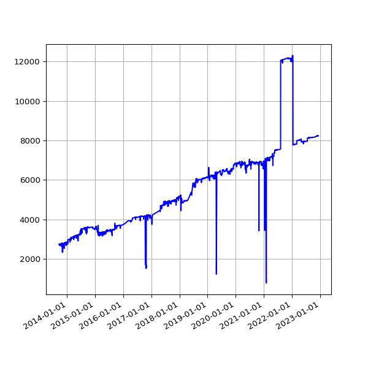
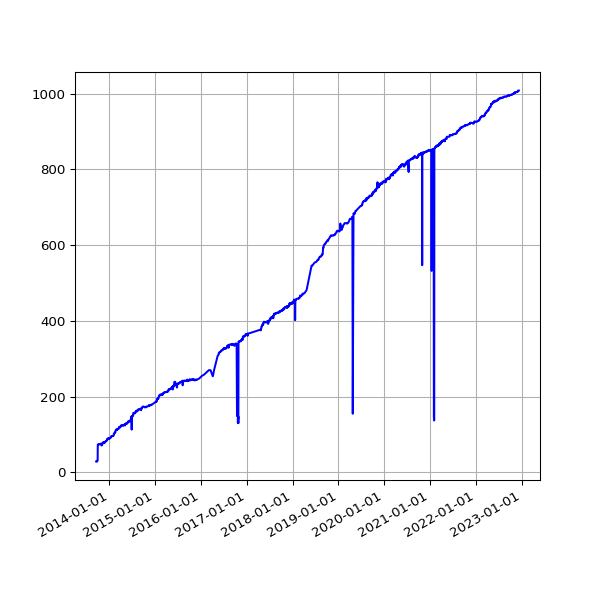
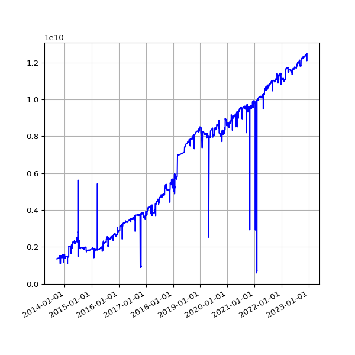

IATI Files
How many IATI files are published?
Files are logged on the IATI Registry by publishers The files contain data on activities and the organisation. A publisher may have multiple files, which can contain multiple activities.
8,221 Total activity files
(J)Count of total number of activity files over time.
1,008 Total organisation files
(J)Count of total number of organisation files, over time.
12.5 GB Total File Size
(J)

(J)
File Sizes
| <1MB | 7470 |
| 1-5MB | 1172 |
| 5-10MB | 298 |
| 10-20MB | 153 |
| >20MB | 136 |
Total file size by publisher
Click the  icons to sort the table by a column. Selecting further columns whilst holding the shift key will enable secondary (tertiary etc) sorting by the desired column/s.
icons to sort the table by a column. Selecting further columns whilst holding the shift key will enable secondary (tertiary etc) sorting by the desired column/s.
| Publisher | Package | Activities (J) | Organisations (J) | File Size (J) |
|---|---|---|---|---|
| 1-uz-org | 0 | 1 | 738 Bytes | |
| 1-uz-zw | 1 | 0 | 2.9 kB | |
| 111111_publisher-activities | 18 | 0 | 515.8 kB | |
| 111111_publisher-org | 0 | 1 | 3.1 kB | |
| 12921047-activities | 12 | 0 | 46.0 kB | |
| 3ie-artw | 1 | 0 | 45.4 kB | |
| 3ie-dpw | 1 | 0 | 57.0 kB | |
| 3ie-htw | 1 | 0 | 26.6 kB | |
| 3ie-sptw | 1 | 0 | 14.1 kB | |
| 3ie-taw | 1 | 0 | 14.7 kB | |
| 3ie-upw | 1 | 0 | 28.8 kB | |
| 7iberdotcom-activities | 1 | 0 | 20.7 kB | |
| 7iberdotcom-org | 0 | 1 | 651 Bytes | |
| _path_-998 | 4 | 0 | 98.3 kB | |
| _path_-us | 1 | 0 | 20.9 kB | |
| a-t-activities | 7 | 0 | 162.3 kB | |
| a-t-org | 0 | 1 | 2.8 kB | |
| aab-activities | 9 | 0 | 112.1 kB | |
| aab-org | 0 | 1 | 586 Bytes | |
| aadk-589 | 1 | 0 | 11.3 kB | |
| aadk-998 | 4 | 0 | 213.3 kB | |
| aadk-bd | 1 | 0 | 13.8 kB | |
| aadk-ke | 1 | 0 | 15.1 kB | |
| aadk-mm | 1 | 0 | 14.4 kB | |
| aadk-mz | 1 | 0 | 13.0 kB | |
| aadk-ng | 1 | 0 | 12.0 kB | |
| aadk-org | 0 | 1 | 693 Bytes | |
| aadk-ps | 1 | 0 | 13.8 kB | |
| aadk-tz | 1 | 0 | 13.7 kB | |
| aadk-ug | 1 | 0 | 11.4 kB | |
| aadk-zm | 1 | 0 | 12.1 kB | |
| aadk-zw | 1 | 0 | 15.1 kB | |
| aag-activities | 1 | 0 | 99.0 kB | |
| aag-org | 0 | 1 | 627 Bytes | |
| aahusa-activities | 2 | 0 | 22.6 kB | |
| aai-998 | 1 | 0 | 17.2 kB | |
| aaik-activities | 7 | 0 | 164.9 kB | |
| aaik-org | 0 | 1 | 1.7 kB | |
| aain-activities | 1 | 0 | 5.7 kB | |
| aaip-activities | 3 | 0 | 5.7 kB | |
| aak-activities | 1 | 0 | 6.2 kB | |
| aak-org | 0 | 1 | 1.2 kB | |
| aanl-activities | 5 | 0 | 1.0 MB | |
| aanl-org | 0 | 1 | 596 Bytes | |
| aar-activities | 3 | 0 | 137.8 kB | |
| aar-org | 0 | 1 | 2.3 kB | |
| aas-300781-105 | 1 | 0 | 3.4 kB | |
| aas-org | 0 | 1 | 653 Bytes | |
| aasaman-gec | 1 | 0 | 3.8 kB | |
| aauk-activities | 103 | 0 | 911.6 kB | |
| aauk-org | 0 | 1 | 4.8 kB | |
| abaseen-activities | 1 | 0 | 15.4 kB | |
| abaseen-org | 0 | 1 | 2.4 kB | |
| ablechildafrica-activities | 2 | 0 | 78.7 kB | |
| ablechildafrica-org | 0 | 1 | 635 Bytes | |
| abt-activities | 6 | 0 | 209.4 kB | |
| abtbritain-activities | 5 | 0 | 90.8 kB | |
| abtbritain-org | 0 | 1 | 2.4 kB | |
| ac1999-activities | 1 | 0 | 10.2 kB | |
| ac1999-org | 0 | 1 | 641 Bytes | |
| acaa-af | 1 | 0 | 17.0 kB | |
| acaa-org | 0 | 1 | 511 Bytes | |
| acatba-activities | 1 | 0 | 2.0 kB | |
| acatba-org | 0 | 1 | 689 Bytes | |
| acceleratornepal-activities | 1 | 0 | 9.5 kB | |
| accountablenow-activities | 1 | 0 | 4.6 kB | |
| acet-activities | 56 | 0 | 752.9 kB | |
| acet-org | 0 | 1 | 656 Bytes | |
| acf-289 | 2 | 0 | 6.4 kB | |
| acf-298 | 16 | 0 | 65.7 kB | |
| acf-489 | 1 | 0 | 2.8 kB | |
| acf-679 | 3 | 0 | 17.8 kB | |
| acf-689 | 5 | 0 | 19.0 kB | |
| acf-789 | 2 | 0 | 5.7 kB | |
| acf-798 | 1 | 0 | 6.8 kB | |
| acf-89 | 1 | 0 | 1.6 kB | |
| acf-998 | 1 | 0 | 7.3 kB | |
| acf-af | 3 | 0 | 18.1 kB | |
| acf-bd | 7 | 0 | 32.8 kB | |
| acf-cd | 6 | 0 | 39.1 kB | |
| acf-cf | 2 | 0 | 8.4 kB | |
| acf-fr-mm | 1 | 0 | 2.4 kB | |
| acf-fr-np | 1 | 0 | 5.3 kB | |
| acf-fr-org | 0 | 1 | 868 Bytes | |
| acf-gb | 1 | 0 | 1.7 kB | |
| acf-gt | 1 | 0 | 1.9 kB | |
| acf-gw | 1 | 0 | 1.4 kB | |
| acf-id | 1 | 0 | 6.4 kB | |
| acf-in | 1 | 0 | 10.8 kB | |
| acf-iq | 1 | 0 | 2.5 kB | |
| acf-jo | 1 | 0 | 6.9 kB | |
| acf-ke | 1 | 0 | 1.8 kB | |
| acf-lb | 1 | 0 | 3.8 kB | |
| acf-mg | 1 | 0 | 2.1 kB | |
| acf-ml | 3 | 0 | 13.6 kB | |
| acf-mm | 1 | 0 | 4.5 kB | |
| acf-ne | 2 | 0 | 4.2 kB | |
| acf-ng | 6 | 0 | 41.3 kB | |
| acf-ni | 1 | 0 | 5.9 kB | |
| acf-np | 2 | 0 | 13.3 kB | |
| acf-org | 0 | 1 | 1.7 kB | |
| acf-ph | 1 | 0 | 2.3 kB | |
| acf-pk | 3 | 0 | 18.5 kB | |
| acf-sl | 2 | 0 | 5.6 kB | |
| acf-sn | 2 | 0 | 16.8 kB | |
| acf-so | 8 | 0 | 62.4 kB | |
| acf-ua | 1 | 0 | 2.8 kB | |
| acf-us | 1 | 0 | 2.7 kB | |
| acf-ye | 4 | 0 | 28.6 kB | |
| acf-zw | 3 | 0 | 7.7 kB | |
| acfshr-activities | 2 | 0 | 39.6 kB | |
| acfshr-org | 0 | 1 | 715 Bytes | |
| acfspain-bd | 1 | 0 | 4.5 kB | |
| acfspain-bf | 1 | 0 | 4.5 kB | |
| acfspain-co | 1 | 0 | 2.1 kB | |
| acfspain-es | 1 | 0 | 5.5 kB | |
| acfspain-et | 1 | 0 | 4.5 kB | |
| acfspain-fr | 1 | 0 | 4.8 kB | |
| acfspain-ge | 2 | 0 | 4.6 kB | |
| acfspain-ke | 1 | 0 | 4.8 kB | |
| acfspain-ml | 1 | 0 | 15.6 kB | |
| acfspain-ne | 1 | 0 | 2.2 kB | |
| acfspain-pe | 1 | 0 | 2.4 kB | |
| acfspain-ph | 6 | 0 | 11.8 kB | |
| acfspain-sn | 1 | 0 | 2.6 kB | |
| acfspain-ss | 1 | 0 | 4.7 kB | |
| acfspain-ug | 1 | 0 | 4.2 kB | |
| achest-activities | 7 | 0 | 269.5 kB | |
| achest-org | 0 | 1 | 2.0 kB | |
| achr-activities | 1 | 0 | 1.7 kB | |
| acodev-activities | 7 | 0 | 70.8 kB | |
| acodev-org | 0 | 1 | 2.7 kB | |
| acodev-tesout22-26 | 1 | 0 | 2.1 kB | |
| acodev-testprogr22-26 | 1 | 0 | 876 Bytes | |
| acord-289 | 1 | 0 | 23.9 kB | |
| acord-cd | 1 | 0 | 15.1 kB | |
| acord-org | 0 | 1 | 496 Bytes | |
| acord-ss | 1 | 0 | 25.1 kB | |
| acord-tz | 1 | 0 | 24.6 kB | |
| across-activity | 1 | 0 | 58.7 kB | |
| across-org | 0 | 1 | 1.5 kB | |
| across-ss | 1 | 0 | 22.2 kB | |
| act4africa-activities | 1 | 0 | 18.6 kB | |
| act4africa-org | 0 | 1 | 913 Bytes | |
| act_alliance-activities | 2 | 0 | 7.1 kB | |
| act_alliance-org | 0 | 1 | 653 Bytes | |
| actec-activities | 15 | 0 | 242.8 kB | |
| actec-org | 0 | 1 | 14.8 kB | |
| acted-activities | 1 | 0 | 2.8 kB | |
| acted-cd | 1 | 0 | 3.3 kB | |
| acted-lb | 1 | 0 | 51.3 kB | |
| acted-org | 0 | 1 | 489 Bytes | |
| acted-pk | 1 | 0 | 4.1 kB | |
| acu-activities | 37 | 0 | 171.2 kB | |
| acumen-activities | 5 | 0 | 40.5 kB | |
| acwfs_vu-activities | 7 | 0 | 29.5 kB | |
| acwfs_vu-org | 0 | 1 | 2.4 kB | |
| ad-activities | 9 | 0 | 76.6 kB | |
| ada-activities | 3 | 0 | 48.3 kB | |
| ada-org | 0 | 1 | 2.4 kB | |
| addinternational-289 | 2 | 0 | 48.4 kB | |
| addinternational-298 | 3 | 0 | 70.7 kB | |
| addinternational-798 | 1 | 0 | 17.8 kB | |
| addinternational-998 | 1 | 0 | 12.5 kB | |
| addinternational-activities | 1 | 0 | 24.3 kB | |
| addinternational-bd | 6 | 0 | 88.4 kB | |
| addinternational-bf | 1 | 0 | 7.6 kB | |
| addinternational-gb | 1 | 0 | 17.2 kB | |
| addinternational-in | 1 | 0 | 8.2 kB | |
| addinternational-kh | 1 | 0 | 3.0 kB | |
| addinternational-org | 0 | 1 | 2.0 kB | |
| addinternational-sd | 1 | 0 | 12.0 kB | |
| addinternational-tz | 4 | 0 | 40.9 kB | |
| addinternational-ug | 1 | 0 | 15.4 kB | |
| adja-ouere-act | 1 | 0 | 90.9 kB | |
| adja-ouere-org | 0 | 1 | 725 Bytes | |
| adjarra-act | 1 | 0 | 29.1 kB | |
| adjarra-org | 0 | 1 | 394 Bytes | |
| adjohoun-act1 | 1 | 0 | 81.4 kB | |
| adjohoun-org | 0 | 1 | 494 Bytes | |
| adpp-activities | 1 | 0 | 3.0 kB | |
| adra-dk-activities | 10 | 0 | 63.2 kB | |
| adra-dk-org | 0 | 1 | 14.8 kB | |
| adra_nepal-activities | 1 | 0 | 3.3 kB | |
| adra_nepal-org | 0 | 1 | 710 Bytes | |
| adra_nepal-scopingstudy | 1 | 0 | 3.3 kB | |
| adrasom-egep | 1 | 0 | 26.1 kB | |
| adrasom-somgep | 1 | 0 | 66.8 kB | |
| adrauk-activities | 5 | 0 | 96.5 kB | |
| adrauk-org | 0 | 1 | 861 Bytes | |
| ads-nyanza-1416009 | 1 | 0 | 24.9 kB | |
| adsb-activities | 88 | 0 | 219.5 kB | |
| adsb-org | 0 | 1 | 1.1 kB | |
| aecid-189 | 2 | 0 | 9.0 kB | |
| aecid-289 | 3 | 0 | 14.9 kB | |
| aecid-298 | 10 | 0 | 50.6 kB | |
| aecid-389 | 15 | 0 | 70.3 kB | |
| aecid-489 | 7 | 0 | 28.9 kB | |
| aecid-498 | 118 | 0 | 504.6 kB | |
| aecid-589 | 1 | 0 | 4.1 kB | |
| aecid-789 | 1 | 0 | 4.2 kB | |
| aecid-998 | 432 | 0 | 1.8 MB | |
| aecid-af | 4 | 0 | 16.8 kB | |
| aecid-al | 12 | 0 | 50.6 kB | |
| aecid-ao | 20 | 0 | 85.6 kB | |
| aecid-ar | 43 | 0 | 189.2 kB | |
| aecid-ba | 9 | 0 | 37.7 kB | |
| aecid-bd | 14 | 0 | 58.2 kB | |
| aecid-bf | 1 | 0 | 4.5 kB | |
| aecid-bi | 1 | 0 | 4.8 kB | |
| aecid-bo | 121 | 0 | 567.0 kB | |
| aecid-br | 16 | 0 | 70.7 kB | |
| aecid-bz | 1 | 0 | 6.1 kB | |
| aecid-cd | 13 | 0 | 55.2 kB | |
| aecid-cf | 2 | 0 | 9.2 kB | |
| aecid-cg | 2 | 0 | 9.6 kB | |
| aecid-ci | 19 | 0 | 78.2 kB | |
| aecid-cl | 8 | 0 | 34.7 kB | |
| aecid-cm | 12 | 0 | 49.8 kB | |
| aecid-cn | 22 | 0 | 92.6 kB | |
| aecid-co | 120 | 0 | 557.4 kB | |
| aecid-cr | 52 | 0 | 231.5 kB | |
| aecid-cu | 60 | 0 | 285.5 kB | |
| aecid-cv | 37 | 0 | 167.8 kB | |
| aecid-do | 82 | 0 | 388.8 kB | |
| aecid-dz | 23 | 0 | 98.4 kB | |
| aecid-ec | 114 | 0 | 600.5 kB | |
| aecid-ee | 1 | 0 | 4.6 kB | |
| aecid-eg | 39 | 0 | 168.7 kB | |
| aecid-eh | 34 | 0 | 167.5 kB | |
| aecid-et | 64 | 0 | 329.3 kB | |
| aecid-ga | 12 | 0 | 49.8 kB | |
| aecid-gh | 10 | 0 | 41.5 kB | |
| aecid-gm | 1 | 0 | 4.3 kB | |
| aecid-gn | 8 | 0 | 33.7 kB | |
| aecid-gq | 51 | 0 | 232.8 kB | |
| aecid-gt | 125 | 0 | 597.6 kB | |
| aecid-gw | 12 | 0 | 52.1 kB | |
| aecid-gy | 1 | 0 | 5.1 kB | |
| aecid-hn | 98 | 0 | 485.5 kB | |
| aecid-ht | 53 | 0 | 285.3 kB | |
| aecid-id | 12 | 0 | 49.9 kB | |
| aecid-in | 16 | 0 | 67.6 kB | |
| aecid-iq | 14 | 0 | 59.0 kB | |
| aecid-ir | 8 | 0 | 33.2 kB | |
| aecid-jm | 8 | 0 | 33.4 kB | |
| aecid-jo | 70 | 0 | 332.6 kB | |
| aecid-ke | 11 | 0 | 45.7 kB | |
| aecid-kz | 8 | 0 | 33.6 kB | |
| aecid-lb | 20 | 0 | 87.3 kB | |
| aecid-ly | 2 | 0 | 9.4 kB | |
| aecid-ma | 84 | 0 | 412.0 kB | |
| aecid-md | 4 | 0 | 18.1 kB | |
| aecid-mk | 10 | 0 | 42.5 kB | |
| aecid-ml | 66 | 0 | 341.0 kB | |
| aecid-mr | 65 | 0 | 333.4 kB | |
| aecid-mx | 55 | 0 | 244.4 kB | |
| aecid-my | 8 | 0 | 33.4 kB | |
| aecid-mz | 77 | 0 | 378.1 kB | |
| aecid-ne | 61 | 0 | 305.3 kB | |
| aecid-ng | 19 | 0 | 80.2 kB | |
| aecid-ni | 79 | 0 | 390.4 kB | |
| aecid-org | 0 | 1 | 73.4 kB | |
| aecid-pa | 52 | 0 | 236.1 kB | |
| aecid-pe | 115 | 0 | 540.2 kB | |
| aecid-ph | 47 | 0 | 249.5 kB | |
| aecid-pk | 9 | 0 | 37.6 kB | |
| aecid-ps | 98 | 0 | 463.7 kB | |
| aecid-py | 86 | 0 | 401.8 kB | |
| aecid-rs | 5 | 0 | 22.1 kB | |
| aecid-sd | 15 | 0 | 62.3 kB | |
| aecid-sn | 60 | 0 | 324.3 kB | |
| aecid-so | 1 | 0 | 4.6 kB | |
| aecid-sr | 1 | 0 | 5.1 kB | |
| aecid-ss | 7 | 0 | 30.3 kB | |
| aecid-st | 4 | 0 | 18.6 kB | |
| aecid-sv | 89 | 0 | 427.2 kB | |
| aecid-sy | 22 | 0 | 96.5 kB | |
| aecid-td | 1 | 0 | 4.5 kB | |
| aecid-th | 8 | 0 | 33.4 kB | |
| aecid-tl | 2 | 0 | 10.1 kB | |
| aecid-tn | 42 | 0 | 195.2 kB | |
| aecid-tr | 11 | 0 | 47.4 kB | |
| aecid-tt | 3 | 0 | 12.7 kB | |
| aecid-tz | 10 | 0 | 41.8 kB | |
| aecid-ua | 18 | 0 | 74.3 kB | |
| aecid-us | 1 | 0 | 5.0 kB | |
| aecid-uy | 8 | 0 | 34.5 kB | |
| aecid-ve | 34 | 0 | 148.5 kB | |
| aecid-vn | 10 | 0 | 42.6 kB | |
| aecid-ye | 1 | 0 | 4.2 kB | |
| aecid-za | 15 | 0 | 64.5 kB | |
| aecid-zw | 9 | 0 | 37.3 kB | |
| aecom-activities | 64 | 0 | 99.9 kB | |
| aeras-activities | 1 | 0 | 53.3 kB | |
| aeras-org | 0 | 1 | 543 Bytes | |
| aet-activities | 3 | 0 | 32.4 kB | |
| aet-org | 0 | 1 | 561 Bytes | |
| af-14 | 30 | 0 | 143.0 kB | |
| afd-am | 8 | 0 | 45.0 kB | |
| afd-ao | 3 | 0 | 20.1 kB | |
| afd-ar | 2 | 0 | 9.3 kB | |
| afd-az | 2 | 0 | 13.5 kB | |
| afd-bd | 17 | 0 | 105.1 kB | |
| afd-bf | 99 | 0 | 600.6 kB | |
| afd-bi | 9 | 0 | 68.8 kB | |
| afd-bj | 60 | 0 | 406.9 kB | |
| afd-bo | 4 | 0 | 27.1 kB | |
| afd-br | 10 | 0 | 47.7 kB | |
| afd-cd | 60 | 0 | 375.9 kB | |
| afd-cf | 54 | 0 | 380.6 kB | |
| afd-cg | 37 | 0 | 264.1 kB | |
| afd-ci | 84 | 0 | 596.5 kB | |
| afd-cm | 77 | 0 | 579.9 kB | |
| afd-cn | 24 | 0 | 259.5 kB | |
| afd-co | 14 | 0 | 74.4 kB | |
| afd-cu | 2 | 0 | 9.4 kB | |
| afd-cv | 0 | 0 | 115 Bytes | |
| afd-dj | 30 | 0 | 224.0 kB | |
| afd-do | 16 | 0 | 90.3 kB | |
| afd-dz | 6 | 0 | 29.3 kB | |
| afd-ec | 6 | 0 | 34.4 kB | |
| afd-eg | 32 | 0 | 221.4 kB | |
| afd-et | 41 | 0 | 253.5 kB | |
| afd-fj | 2 | 0 | 5.4 kB | |
| afd-ga | 4 | 0 | 30.2 kB | |
| afd-gd | 0 | 0 | 115 Bytes | |
| afd-ge | 3 | 0 | 18.4 kB | |
| afd-gh | 25 | 0 | 173.0 kB | |
| afd-gm | 4 | 0 | 20.5 kB | |
| afd-gn | 63 | 0 | 397.4 kB | |
| afd-gw | 2 | 0 | 5.6 kB | |
| afd-ht | 57 | 0 | 317.7 kB | |
| afd-id | 13 | 0 | 70.1 kB | |
| afd-in | 16 | 0 | 97.7 kB | |
| afd-iq | 10 | 0 | 54.3 kB | |
| afd-jo | 33 | 0 | 202.4 kB | |
| afd-ke | 35 | 0 | 218.4 kB | |
| afd-kh | 36 | 0 | 245.8 kB | |
| afd-km | 64 | 0 | 431.0 kB | |
| afd-la | 30 | 0 | 197.9 kB | |
| afd-lb | 43 | 0 | 271.5 kB | |
| afd-lc | 0 | 0 | 115 Bytes | |
| afd-li | 6 | 0 | 34.7 kB | |
| afd-lr | 6 | 0 | 41.1 kB | |
| afd-ma | 112 | 0 | 700.4 kB | |
| afd-mg | 119 | 0 | 796.8 kB | |
| afd-mm | 12 | 0 | 70.3 kB | |
| afd-mr | 76 | 0 | 500.1 kB | |
| afd-mu | 17 | 0 | 108.4 kB | |
| afd-multipays | 418 | 0 | 3.2 MB | |
| afd-mx | 8 | 0 | 44.5 kB | |
| afd-mz | 30 | 0 | 206.7 kB | |
| afd-na | 0 | 0 | 115 Bytes | |
| afd-ne | 117 | 0 | 715.8 kB | |
| afd-ng | 22 | 0 | 132.0 kB | |
| afd-org | 0 | 1 | 157.5 kB | |
| afd-pe | 9 | 0 | 42.6 kB | |
| afd-ph | 10 | 0 | 49.6 kB | |
| afd-pk | 7 | 0 | 35.1 kB | |
| afd-ps | 90 | 0 | 624.4 kB | |
| afd-rw | 9 | 0 | 97.9 kB | |
| afd-sc | 2 | 0 | 17.3 kB | |
| afd-sd | 11 | 0 | 87.1 kB | |
| afd-sl | 0 | 0 | 0 Bytes | |
| afd-sn | 134 | 0 | 968.1 kB | |
| afd-so | 2 | 0 | 6.0 kB | |
| afd-srn | 3 | 0 | 35.7 kB | |
| afd-ss | 0 | 0 | 115 Bytes | |
| afd-st | 2 | 0 | 20.3 kB | |
| afd-sy | 0 | 0 | 0 Bytes | |
| afd-td | 102 | 0 | 655.1 kB | |
| afd-tg | 43 | 0 | 271.6 kB | |
| afd-tn | 95 | 0 | 616.1 kB | |
| afd-tr | 17 | 0 | 114.4 kB | |
| afd-tz | 19 | 0 | 122.0 kB | |
| afd-ug | 15 | 0 | 143.8 kB | |
| afd-uz | 14 | 0 | 89.4 kB | |
| afd-vn | 43 | 0 | 347.3 kB | |
| afd-vu | 6 | 0 | 32.6 kB | |
| afd-ye | 0 | 0 | 115 Bytes | |
| afd-za | 8 | 0 | 35.9 kB | |
| afd-zm | 4 | 0 | 11.0 kB | |
| afd-zw | 2 | 0 | 9.4 kB | |
| afdb-algeria | 45 | 0 | 660.2 kB | |
| afdb-angola | 39 | 0 | 1.3 MB | |
| afdb-benin | 88 | 0 | 2.5 MB | |
| afdb-botswana | 49 | 0 | 1.0 MB | |
| afdb-burkinafaso | 99 | 0 | 2.7 MB | |
| afdb-burundi | 88 | 0 | 1.6 MB | |
| afdb-cameroon | 91 | 0 | 2.8 MB | |
| afdb-capeverde | 69 | 0 | 1.8 MB | |
| afdb-centralafricanrepublic | 59 | 0 | 1.1 MB | |
| afdb-chad | 86 | 0 | 2.2 MB | |
| afdb-ci | 86 | 0 | 2.1 MB | |
| afdb-comoros | 29 | 0 | 750.5 kB | |
| afdb-congo | 41 | 0 | 836.5 kB | |
| afdb-djibouti | 48 | 0 | 1.3 MB | |
| afdb-drc | 65 | 0 | 2.3 MB | |
| afdb-egypt | 90 | 0 | 2.5 MB | |
| afdb-equatorialguinea | 30 | 0 | 832.1 kB | |
| afdb-eritrea | 18 | 0 | 547.5 kB | |
| afdb-ethiopia | 110 | 0 | 2.4 MB | |
| afdb-gabon | 55 | 0 | 1.3 MB | |
| afdb-gambia | 73 | 0 | 1.6 MB | |
| afdb-ghana | 101 | 0 | 3.0 MB | |
| afdb-guinea | 87 | 0 | 1.9 MB | |
| afdb-guineabissau | 53 | 0 | 1.4 MB | |
| afdb-kenya | 105 | 0 | 3.6 MB | |
| afdb-lesotho | 64 | 0 | 2.0 MB | |
| afdb-liberia | 60 | 0 | 1.3 MB | |
| afdb-libya | 5 | 0 | 77.0 kB | |
| afdb-madagascar | 110 | 0 | 2.7 MB | |
| afdb-malawi | 115 | 0 | 2.9 MB | |
| afdb-mali | 113 | 0 | 2.8 MB | |
| afdb-mauritania | 75 | 0 | 1.7 MB | |
| afdb-mauritius | 37 | 0 | 724.3 kB | |
| afdb-morocco | 170 | 0 | 4.4 MB | |
| afdb-mozambique | 108 | 0 | 3.0 MB | |
| afdb-multinational | 731 | 0 | 20.5 MB | |
| afdb-namibia | 35 | 0 | 986.9 kB | |
| afdb-niger | 82 | 0 | 2.0 MB | |
| afdb-nigeria | 74 | 0 | 2.2 MB | |
| afdb-nonsovereign | 246 | 0 | 2.7 MB | |
| afdb-org | 0 | 1 | 261.7 kB | |
| afdb-rwanda | 94 | 0 | 2.2 MB | |
| afdb-saotome | 36 | 0 | 839.6 kB | |
| afdb-senegal | 112 | 0 | 3.3 MB | |
| afdb-seychelles | 33 | 0 | 677.7 kB | |
| afdb-sierraleone | 68 | 0 | 1.7 MB | |
| afdb-somalia | 49 | 0 | 896.0 kB | |
| afdb-southafrica | 19 | 0 | 463.1 kB | |
| afdb-southsudan | 18 | 0 | 512.2 kB | |
| afdb-sudan | 54 | 0 | 967.6 kB | |
| afdb-swaziland | 56 | 0 | 1.3 MB | |
| afdb-tanzania | 125 | 0 | 3.4 MB | |
| afdb-togo | 57 | 0 | 1.3 MB | |
| afdb-tunisia | 162 | 0 | 3.5 MB | |
| afdb-uganda | 110 | 0 | 3.0 MB | |
| afdb-zambia | 86 | 0 | 2.3 MB | |
| afdb-zimbabwe | 62 | 0 | 1.4 MB | |
| afdi-fr-activity | 0 | 0 | 0 Bytes | |
| afdi-fr-org | 0 | 1 | 831 Bytes | |
| afelt-activities | 1 | 0 | 8.2 kB | |
| afelt-org | 0 | 1 | 729 Bytes | |
| afemena-activities | 4 | 0 | 54.6 kB | |
| afewinternational-activities | 6 | 0 | 133.9 kB | |
| afghanaid-activities | 4 | 0 | 9.8 MB | |
| afidep-org | 0 | 1 | 691 Bytes | |
| aflatoun-apr2015 | 0 | 0 | 0 Bytes | |
| africalia-activities | 11 | 0 | 223.1 kB | |
| africalia-org | 0 | 1 | 2.8 kB | |
| african_parks-activities | 14 | 0 | 25.6 kB | |
| africanrevival-ug | 1 | 0 | 4.4 kB | |
| afrikagrupperna-all_activities | 53 | 0 | 332.2 kB | |
| afrikids-activities | 4 | 0 | 80.0 kB | |
| afrikids-org | 0 | 1 | 1.6 kB | |
| afsc-bbb-1 | 1 | 0 | 32.9 kB | |
| agdevco-activities | 53 | 0 | 128.3 kB | |
| ageintl-activities | 48 | 0 | 349.6 kB | |
| ageintl-org | 0 | 1 | 2.2 kB | |
| agencia_do_zambeze-activities | 1 | 0 | 41.1 kB | |
| agencia_do_zambeze-org | 0 | 1 | 710 Bytes | |
| agra-activities | 1 | 0 | 5.3 kB | |
| agra-org | 0 | 1 | 2.0 kB | |
| agresults-289 | 1 | 0 | 2.3 kB | |
| agresults-998 | 1 | 0 | 2.9 kB | |
| agresults-id | 1 | 0 | 2.6 kB | |
| agresults-ke | 1 | 0 | 2.6 kB | |
| agresults-ng | 1 | 0 | 3.0 kB | |
| agresults-org | 0 | 1 | 2.4 kB | |
| agresults-sn | 1 | 0 | 2.1 kB | |
| agresults-tz | 1 | 0 | 2.3 kB | |
| agresults-ug | 1 | 0 | 2.5 kB | |
| agresults-us | 1 | 0 | 3.1 kB | |
| agresults-vn | 1 | 0 | 3.0 kB | |
| agresults-zm | 1 | 0 | 2.4 kB | |
| agri3_fund-activities | 7 | 0 | 21.2 kB | |
| agri3_fund-org | 0 | 1 | 819 Bytes | |
| agriterra-activities | 936 | 0 | 14.5 MB | |
| agriterra-nl-kvk-41048542-201802-activities | 938 | 0 | 15.9 MB | |
| agriterra-org-251021 | 52 | 0 | 202.2 kB | |
| agriterra-org | 0 | 1 | 14.7 kB | |
| agroicone-br | 0 | 0 | 0 Bytes | |
| agroicone-org | 0 | 0 | 0 Bytes | |
| agwa-activities | 1 | 0 | 8.4 kB | |
| ahead-ng | 1 | 0 | 10.5 kB | |
| ahead-org | 0 | 1 | 1.2 kB | |
| ai_1064413-activities | 3 | 0 | 53.5 kB | |
| ai_1064413-org | 0 | 1 | 844 Bytes | |
| aias-activities | 2 | 0 | 40.4 kB | |
| aics-189 | 2 | 0 | 14.7 kB | |
| aics-289 | 50 | 0 | 341.4 kB | |
| aics-389 | 21 | 0 | 82.8 kB | |
| aics-489 | 7 | 0 | 51.2 kB | |
| aics-498 | 8 | 0 | 71.7 kB | |
| aics-589 | 26 | 0 | 213.7 kB | |
| aics-619 | 2 | 0 | 14.9 kB | |
| aics-679 | 1 | 0 | 5.7 kB | |
| aics-789 | 1 | 0 | 7.3 kB | |
| aics-798 | 3 | 0 | 12.5 kB | |
| aics-88 | 3 | 0 | 16.9 kB | |
| aics-89 | 71 | 0 | 577.8 kB | |
| aics-998 | 1325 | 0 | 7.0 MB | |
| aics-al | 148 | 0 | 1.4 MB | |
| aics-am | 3 | 0 | 28.9 kB | |
| aics-ao | 67 | 0 | 387.1 kB | |
| aics-ar | 134 | 0 | 632.6 kB | |
| aics-ba | 72 | 0 | 491.9 kB | |
| aics-bd | 21 | 0 | 100.2 kB | |
| aics-bf | 126 | 0 | 1.0 MB | |
| aics-bi | 34 | 0 | 182.9 kB | |
| aics-bo | 140 | 0 | 1.1 MB | |
| aics-br | 147 | 0 | 707.7 kB | |
| aics-cd | 61 | 0 | 320.0 kB | |
| aics-cf | 39 | 0 | 205.6 kB | |
| aics-cg | 6 | 0 | 27.0 kB | |
| aics-ci | 21 | 0 | 120.4 kB | |
| aics-cm | 37 | 0 | 265.8 kB | |
| aics-cn | 116 | 0 | 547.7 kB | |
| aics-co | 80 | 0 | 477.3 kB | |
| aics-cu | 57 | 0 | 424.8 kB | |
| aics-cv | 27 | 0 | 162.8 kB | |
| aics-dj | 30 | 0 | 177.1 kB | |
| aics-dz | 36 | 0 | 175.5 kB | |
| aics-ec | 85 | 0 | 512.5 kB | |
| aics-eg | 114 | 0 | 685.7 kB | |
| aics-er | 25 | 0 | 144.6 kB | |
| aics-et | 326 | 0 | 2.6 MB | |
| aics-gh | 12 | 0 | 89.1 kB | |
| aics-gn | 45 | 0 | 265.4 kB | |
| aics-gt | 38 | 0 | 196.5 kB | |
| aics-gw | 29 | 0 | 175.4 kB | |
| aics-hn | 21 | 0 | 151.7 kB | |
| aics-ht | 5 | 0 | 47.9 kB | |
| aics-iq | 92 | 0 | 696.4 kB | |
| aics-jo | 112 | 0 | 850.9 kB | |
| aics-ke | 201 | 0 | 1.6 MB | |
| aics-kh | 10 | 0 | 49.8 kB | |
| aics-kp | 1 | 0 | 9.7 kB | |
| aics-la | 3 | 0 | 22.5 kB | |
| aics-lb | 207 | 0 | 1.8 MB | |
| aics-lk | 8 | 0 | 68.9 kB | |
| aics-lr | 4 | 0 | 41.1 kB | |
| aics-ly | 62 | 0 | 436.0 kB | |
| aics-ma | 64 | 0 | 388.4 kB | |
| aics-me | 7 | 0 | 37.0 kB | |
| aics-mg | 31 | 0 | 154.8 kB | |
| aics-mk | 12 | 0 | 79.3 kB | |
| aics-ml | 71 | 0 | 421.8 kB | |
| aics-mm | 69 | 0 | 600.2 kB | |
| aics-mr | 29 | 0 | 159.5 kB | |
| aics-mw | 17 | 0 | 136.6 kB | |
| aics-mz | 349 | 0 | 2.8 MB | |
| aics-ne | 78 | 0 | 584.7 kB | |
| aics-ng | 21 | 0 | 126.2 kB | |
| aics-ni | 41 | 0 | 211.4 kB | |
| aics-np | 10 | 0 | 79.2 kB | |
| aics-org | 0 | 1 | 45.1 kB | |
| aics-pe | 78 | 0 | 536.0 kB | |
| aics-ph | 22 | 0 | 129.9 kB | |
| aics-pk | 43 | 0 | 296.3 kB | |
| aics-ps | 261 | 0 | 2.2 MB | |
| aics-rs | 4 | 0 | 37.8 kB | |
| aics-rw | 22 | 0 | 132.7 kB | |
| aics-sc | 1 | 0 | 4.1 kB | |
| aics-sd | 197 | 0 | 1.6 MB | |
| aics-sl | 17 | 0 | 140.9 kB | |
| aics-sn | 133 | 0 | 1.1 MB | |
| aics-so | 182 | 0 | 1.0 MB | |
| aics-ss | 12 | 0 | 120.5 kB | |
| aics-sv | 62 | 0 | 457.9 kB | |
| aics-sy | 73 | 0 | 526.0 kB | |
| aics-tl | 2 | 0 | 7.6 kB | |
| aics-tn | 148 | 0 | 1.1 MB | |
| aics-tz | 108 | 0 | 730.4 kB | |
| aics-ua | 21 | 0 | 160.1 kB | |
| aics-ug | 99 | 0 | 664.1 kB | |
| aics-uy | 22 | 0 | 115.4 kB | |
| aics-vn | 52 | 0 | 352.4 kB | |
| aics-xk | 11 | 0 | 121.8 kB | |
| aics-ye | 34 | 0 | 185.5 kB | |
| aics-za | 25 | 0 | 139.6 kB | |
| aics-zw | 39 | 0 | 201.8 kB | |
| aiddata-afghanistanaims | 1580 | 0 | 3.9 MB | |
| aiddata-colombiaaims | 693 | 0 | 1.7 MB | |
| aiddata-drcamp-v104 | 4553 | 0 | 4.3 MB | |
| aiddata-drcamp-v203 | 2289 | 0 | 2.9 MB | |
| aiddata-hndamp-v104 | 26 | 0 | 25.0 kB | |
| aiddata-hndamp-v203 | 1050 | 0 | 3.1 MB | |
| aiddata-irqdad | 1338 | 0 | 2.8 MB | |
| aiddata-nepalamp-v104 | 157 | 0 | 764.9 kB | |
| aiddata-nepalamp-v203 | 716 | 0 | 6.8 MB | |
| aiddata-ngadad-v104 | 481 | 0 | 848.0 kB | |
| aiddata-ngadad-v203 | 140 | 0 | 309.3 kB | |
| aiddata-senamp-v104 | 881 | 0 | 1.0 MB | |
| aiddata-senamp-v203 | 701 | 0 | 1.1 MB | |
| aiddata-somaliaaims | 1217 | 0 | 2.3 MB | |
| aiddata-tlsamp-v104 | 134 | 0 | 173.2 kB | |
| aiddata-tlsamp-v203 | 773 | 0 | 2.2 MB | |
| aiddata-ugaamp-v104 | 253 | 0 | 335.8 kB | |
| aiddata-ugaamp-v203 | 1456 | 0 | 2.9 MB | |
| aiddata-wb | 5881 | 0 | 26.7 MB | |
| aidenvironment-20180601 | 0 | 0 | 0 Bytes | |
| aidenvironment-2020-01-activities | 3 | 0 | 79.9 kB | |
| aidenvironment-2020-02-activities | 3 | 0 | 82.6 kB | |
| aidenvironment-eet | 3 | 0 | 93.5 kB | |
| aidenvironment-eew | 3 | 0 | 91.8 kB | |
| aidenvironment-nl-kvk-41208024-2021-01-activities | 3 | 0 | 89.5 kB | |
| aidspan-activities | 7 | 0 | 14.7 kB | |
| aidspan-org | 0 | 1 | 586 Bytes | |
| aipr-activities | 13 | 0 | 56.8 kB | |
| aipr-org | 0 | 1 | 1.6 kB | |
| aiuk-activities | 1 | 0 | 2.3 kB | |
| ajar-activities | 1 | 0 | 90.2 kB | |
| akf_afghanistan-af | 3 | 0 | 9.5 kB | |
| akf_afghanistan-org | 0 | 1 | 620 Bytes | |
| akfuk73-activities | 6 | 0 | 144.9 kB | |
| akfuk73-org | 0 | 5 | 2.9 kB | |
| akpro-misserete-act | 1 | 0 | 84.9 kB | |
| akpro-misserete-org | 0 | 1 | 536 Bytes | |
| aktis-998 | 1 | 0 | 3.8 kB | |
| aktis-ke | 2 | 0 | 6.1 kB | |
| aktis-lb | 1 | 0 | 5.2 kB | |
| aktis-ly | 1 | 0 | 21.4 kB | |
| aktis-org | 0 | 1 | 1.1 kB | |
| aktis-sy | 1 | 0 | 3.4 kB | |
| akvo-1 | 0 | 1 | 2.4 kB | |
| akvo-activities | 25 | 0 | 782.2 kB | |
| al_majmoua-activities | 2 | 0 | 8.6 kB | |
| alab-activities | 3 | 0 | 63.1 kB | |
| alab-org | 0 | 1 | 645 Bytes | |
| alcis-af | 1 | 0 | 2.2 kB | |
| alcrer-1-act | 1 | 0 | 111.7 kB | |
| alcrer-1-org | 0 | 1 | 1.0 kB | |
| alfalit-gec | 2 | 0 | 21.7 kB | |
| alineainternational_2020-activities | 5 | 0 | 23.3 kB | |
| alineainternational_2020-org | 0 | 1 | 661 Bytes | |
| allada-act1 | 2 | 0 | 168.1 kB | |
| allada-org | 0 | 1 | 490 Bytes | |
| alliance_of_religions_and_conservation-activities | 1 | 0 | 98.0 kB | |
| alliance_of_religions_and_conservation-org | 0 | 1 | 642 Bytes | |
| allwecan-cm | 1 | 0 | 20.5 kB | |
| allwecan-org | 0 | 0 | 0 Bytes | |
| allwecan-ug | 1 | 0 | 14.9 kB | |
| altai-activities | 3 | 0 | 5.5 kB | |
| ama-south-sudan-activities | 1 | 0 | 21.0 kB | |
| amnesty-activities | 10 | 0 | 89.3 kB | |
| amnesty-org | 0 | 1 | 1.6 kB | |
| amrefeth-89 | 1 | 0 | 91.3 kB | |
| amrefeth-et | 3 | 0 | 84.2 kB | |
| amrefeth-org | 0 | 1 | 583 Bytes | |
| amrefha-289 | 18 | 0 | 80.9 kB | |
| amrefha-298 | 6 | 0 | 49.8 kB | |
| amrefha-et | 1 | 0 | 5.1 kB | |
| amrefha-org | 0 | 1 | 4.8 kB | |
| amrefha-ug | 1 | 0 | 13.3 kB | |
| amrefhq-activities | 4 | 0 | 67.6 kB | |
| amrefhq-org | 0 | 1 | 575 Bytes | |
| amrefkenya-activities | 4 | 0 | 202.6 kB | |
| amrefkenya-org | 0 | 1 | 567 Bytes | |
| amrefmw-activities | 3 | 0 | 180.8 kB | |
| amrefmw-org | 0 | 1 | 583 Bytes | |
| amrefnl-activities | 70 | 0 | 979.9 kB | |
| amrefnl-org | 0 | 1 | 1.8 kB | |
| amreftz-activities | 2 | 0 | 27.2 kB | |
| amrefug-activities | 4 | 0 | 76.7 kB | |
| amrefug-org | 0 | 1 | 569 Bytes | |
| amurt_kenya-ke | 1 | 0 | 276.7 kB | |
| amurt_kenya-org | 0 | 1 | 640 Bytes | |
| amwa-activities | 4 | 0 | 16.7 kB | |
| amwa-makeway | 7 | 0 | 306.8 kB | |
| amwa-org | 0 | 1 | 637 Bytes | |
| amwa-pod-activity | 1 | 0 | 56.5 kB | |
| anaepmr_benin-act | 4 | 0 | 187.7 kB | |
| anaepmr_benin-org | 0 | 1 | 758 Bytes | |
| ancb_benin-act | 24 | 0 | 757.8 kB | |
| ancb_benin-com_dangbo-org | 0 | 1 | 490 Bytes | |
| ancb_benin-org | 0 | 1 | 719 Bytes | |
| anda-gec | 2 | 0 | 21.8 kB | |
| apc-activities | 27 | 0 | 274.9 kB | |
| apc-org | 0 | 1 | 601 Bytes | |
| apefe-998 | 1 | 0 | 13.4 kB | |
| apefe-be | 3 | 0 | 42.8 kB | |
| apefe-bf | 2 | 0 | 43.5 kB | |
| apefe-bi | 1 | 0 | 24.5 kB | |
| apefe-bj | 1 | 0 | 31.8 kB | |
| apefe-cd | 2 | 0 | 38.9 kB | |
| apefe-ht | 2 | 0 | 41.3 kB | |
| apefe-ma | 1 | 0 | 27.3 kB | |
| apefe-ps | 1 | 0 | 21.5 kB | |
| apefe-rw | 1 | 0 | 22.2 kB | |
| apefe-sn | 3 | 0 | 47.1 kB | |
| aphrc-activities | 1 | 0 | 2.7 kB | |
| aplahoue-act1 | 2 | 0 | 160.0 kB | |
| aplahoue-org | 0 | 1 | 504 Bytes | |
| apn-activities | 1 | 0 | 55.1 kB | |
| apn-org | 0 | 1 | 647 Bytes | |
| appro-af-activities | 5 | 0 | 181.4 kB | |
| appro-af-org | 0 | 1 | 3.3 kB | |
| appro-eu-af | 2 | 0 | 32.9 kB | |
| appro-eu-org | 0 | 1 | 765 Bytes | |
| apt-998 | 1 | 0 | 52.1 kB | |
| apt-ke | 1 | 0 | 49.3 kB | |
| apt-org | 0 | 1 | 1.4 kB | |
| apt-ug | 3 | 0 | 67.1 kB | |
| aqua4all-rsr | 81 | 0 | 1.8 MB | |
| arcfge-activities | 41 | 0 | 357.7 kB | |
| arcfge-org | 0 | 1 | 920 Bytes | |
| ares-activities | 22 | 0 | 1.2 MB | |
| ares-org | 0 | 1 | 1.7 kB | |
| arfh-activities | 3 | 0 | 14.3 kB | |
| arfh-org | 0 | 1 | 451 Bytes | |
| arij-activities | 1 | 0 | 38.5 kB | |
| arij-org | 0 | 1 | 1.3 kB | |
| ark-activities | 2 | 0 | 19.0 kB | |
| arq_intl-activities | 1 | 0 | 2.7 kB | |
| art19-activities | 1 | 0 | 92.5 kB | |
| art19-gb | 3 | 0 | 23.6 kB | |
| art19-ke | 1 | 0 | 27.3 kB | |
| art19-org | 0 | 1 | 419 Bytes | |
| art19-sn | 1 | 0 | 93.5 kB | |
| asdap-activity | 1 | 0 | 78.4 kB | |
| asdap-activity2 | 1 | 0 | 78.4 kB | |
| asdap-org | 0 | 1 | 848 Bytes | |
| asdb-af | 46 | 0 | 2.0 MB | |
| asdb-am | 36 | 0 | 2.6 MB | |
| asdb-az | 29 | 0 | 2.2 MB | |
| asdb-bd | 166 | 0 | 12.7 MB | |
| asdb-bt | 45 | 0 | 2.3 MB | |
| asdb-ck | 12 | 0 | 807.4 kB | |
| asdb-cn | 224 | 0 | 19.2 MB | |
| asdb-fj | 13 | 0 | 778.8 kB | |
| asdb-fm | 11 | 0 | 448.9 kB | |
| asdb-ge | 57 | 0 | 4.0 MB | |
| asdb-id | 98 | 0 | 7.5 MB | |
| asdb-in | 241 | 0 | 19.9 MB | |
| asdb-kg | 75 | 0 | 3.6 MB | |
| asdb-kh | 111 | 0 | 7.2 MB | |
| asdb-ki | 14 | 0 | 527.6 kB | |
| asdb-kz | 29 | 0 | 2.1 MB | |
| asdb-la | 74 | 0 | 4.6 MB | |
| asdb-lk | 100 | 0 | 9.6 MB | |
| asdb-mh | 16 | 0 | 580.9 kB | |
| asdb-mm | 28 | 0 | 1.7 MB | |
| asdb-mn | 86 | 0 | 5.5 MB | |
| asdb-mv | 22 | 0 | 1.0 MB | |
| asdb-np | 87 | 0 | 5.6 MB | |
| asdb-nr | 10 | 0 | 263.2 kB | |
| asdb-org | 0 | 1 | 180.7 kB | |
| asdb-pg | 48 | 0 | 3.9 MB | |
| asdb-ph | 77 | 0 | 4.7 MB | |
| asdb-pk | 141 | 0 | 11.0 MB | |
| asdb-pw | 13 | 0 | 791.7 kB | |
| asdb-reg | 21 | 0 | 1.1 MB | |
| asdb-sb | 33 | 0 | 1.1 MB | |
| asdb-th | 25 | 0 | 1.5 MB | |
| asdb-tj | 49 | 0 | 2.2 MB | |
| asdb-tl | 19 | 0 | 1.4 MB | |
| asdb-tm | 2 | 0 | 159.5 kB | |
| asdb-to | 31 | 0 | 1.0 MB | |
| asdb-tv | 15 | 0 | 464.3 kB | |
| asdb-uz | 76 | 0 | 5.8 MB | |
| asdb-vn | 148 | 0 | 12.8 MB | |
| asdb-vu | 21 | 0 | 1.0 MB | |
| asdb-ws | 25 | 0 | 1.2 MB | |
| asf-activities | 20 | 0 | 292.8 kB | |
| asf-org | 0 | 1 | 2.5 kB | |
| asfpakistan-activities | 2 | 0 | 8.0 kB | |
| ashoka-activities | 1 | 0 | 11.5 kB | |
| ashoka-org | 0 | 1 | 650 Bytes | |
| asi-activities | 6 | 0 | 878.4 kB | |
| asi-org | 0 | 1 | 1.1 kB | |
| asil-activities | 5 | 0 | 146.1 kB | |
| asil-org | 0 | 1 | 1.9 kB | |
| ask-activities | 2 | 0 | 8.3 kB | |
| ask-org | 0 | 1 | 640 Bytes | |
| assn-activities | 1 | 0 | 15.8 kB | |
| ataf-activities | 2 | 0 | 7.4 kB | |
| atmf-activities | 5 | 0 | 61.7 kB | |
| atnf-activities | 17 | 0 | 668.7 kB | |
| atnf-org | 0 | 1 | 7.3 kB | |
| atosuk-activities | 3 | 0 | 11.4 kB | |
| atosuk-org | 0 | 1 | 3.2 kB | |
| atsf-activities | 16 | 0 | 21.5 kB | |
| ausgov-189 | 0 | 0 | 0 Bytes | |
| ausgov-289 | 0 | 0 | 0 Bytes | |
| ausgov-298 | 0 | 0 | 0 Bytes | |
| ausgov-380 | 0 | 0 | 0 Bytes | |
| ausgov-389 | 0 | 0 | 0 Bytes | |
| ausgov-489 | 0 | 0 | 0 Bytes | |
| ausgov-589 | 0 | 0 | 0 Bytes | |
| ausgov-689 | 0 | 0 | 0 Bytes | |
| ausgov-789 | 0 | 0 | 0 Bytes | |
| ausgov-798 | 0 | 0 | 0 Bytes | |
| ausgov-88 | 0 | 0 | 0 Bytes | |
| ausgov-889 | 0 | 0 | 0 Bytes | |
| ausgov-89 | 0 | 0 | 0 Bytes | |
| ausgov-998 | 0 | 0 | 0 Bytes | |
| ausgov-af | 177 | 0 | 747.1 kB | |
| ausgov-ag | 14 | 0 | 58.8 kB | |
| ausgov-al | 14 | 0 | 53.7 kB | |
| ausgov-am | 4 | 0 | 16.0 kB | |
| ausgov-ao | 13 | 0 | 56.9 kB | |
| ausgov-ar | 47 | 0 | 188.3 kB | |
| ausgov-az | 8 | 0 | 30.6 kB | |
| ausgov-ba | 15 | 0 | 57.1 kB | |
| ausgov-bb | 3 | 0 | 11.7 kB | |
| ausgov-bd | 224 | 0 | 963.7 kB | |
| ausgov-bf | 28 | 0 | 113.5 kB | |
| ausgov-bi | 43 | 0 | 181.9 kB | |
| ausgov-bj | 15 | 0 | 61.4 kB | |
| ausgov-bo | 22 | 0 | 91.6 kB | |
| ausgov-br | 49 | 0 | 192.3 kB | |
| ausgov-bt | 75 | 0 | 332.1 kB | |
| ausgov-bw | 51 | 0 | 217.5 kB | |
| ausgov-bz | 25 | 0 | 105.3 kB | |
| ausgov-cd | 60 | 0 | 242.3 kB | |
| ausgov-cf | 23 | 0 | 92.2 kB | |
| ausgov-cg | 10 | 0 | 42.0 kB | |
| ausgov-ci | 26 | 0 | 103.9 kB | |
| ausgov-ck | 88 | 0 | 381.4 kB | |
| ausgov-cl | 41 | 0 | 162.7 kB | |
| ausgov-cm | 295 | 0 | 1.3 MB | |
| ausgov-cn | 211 | 0 | 827.7 kB | |
| ausgov-co | 43 | 0 | 173.3 kB | |
| ausgov-cr | 24 | 0 | 99.6 kB | |
| ausgov-cu | 13 | 0 | 51.1 kB | |
| ausgov-cv | 29 | 0 | 118.3 kB | |
| ausgov-dj | 11 | 0 | 46.0 kB | |
| ausgov-dm | 31 | 0 | 126.3 kB | |
| ausgov-do | 20 | 0 | 80.7 kB | |
| ausgov-dz | 8 | 0 | 34.2 kB | |
| ausgov-ec | 28 | 0 | 114.6 kB | |
| ausgov-eg | 41 | 0 | 164.9 kB | |
| ausgov-er | 13 | 0 | 54.5 kB | |
| ausgov-et | 102 | 0 | 435.5 kB | |
| ausgov-fj | 356 | 0 | 1.5 MB | |
| ausgov-fm | 111 | 0 | 492.4 kB | |
| ausgov-ga | 7 | 0 | 30.2 kB | |
| ausgov-gd | 24 | 0 | 98.7 kB | |
| ausgov-ge | 5 | 0 | 19.4 kB | |
| ausgov-gh | 84 | 0 | 361.4 kB | |
| ausgov-gm | 16 | 0 | 72.1 kB | |
| ausgov-gn | 16 | 0 | 64.0 kB | |
| ausgov-gq | 10 | 0 | 41.3 kB | |
| ausgov-gt | 28 | 0 | 113.1 kB | |
| ausgov-gw | 17 | 0 | 68.3 kB | |
| ausgov-gy | 26 | 0 | 106.9 kB | |
| ausgov-hn | 21 | 0 | 88.3 kB | |
| ausgov-ht | 46 | 0 | 186.4 kB | |
| ausgov-id | 581 | 0 | 2.5 MB | |
| ausgov-in | 193 | 0 | 782.9 kB | |
| ausgov-iq | 81 | 0 | 317.2 kB | |
| ausgov-ir | 30 | 0 | 113.3 kB | |
| ausgov-jm | 26 | 0 | 110.2 kB | |
| ausgov-jo | 48 | 0 | 197.9 kB | |
| ausgov-ke | 149 | 0 | 623.5 kB | |
| ausgov-kg | 12 | 0 | 45.4 kB | |
| ausgov-kh | 295 | 0 | 1.3 MB | |
| ausgov-ki | 225 | 0 | 1.0 MB | |
| ausgov-km | 23 | 0 | 96.8 kB | |
| ausgov-kn | 2 | 0 | 7.7 kB | |
| ausgov-kp | 14 | 0 | 52.1 kB | |
| ausgov-kz | 2 | 0 | 7.7 kB | |
| ausgov-la | 295 | 0 | 1.3 MB | |
| ausgov-lb | 59 | 0 | 243.9 kB | |
| ausgov-lc | 27 | 0 | 109.3 kB | |
| ausgov-lk | 180 | 0 | 761.1 kB | |
| ausgov-lr | 44 | 0 | 181.7 kB | |
| ausgov-ls | 48 | 0 | 213.1 kB | |
| ausgov-ly | 12 | 0 | 47.2 kB | |
| ausgov-ma | 16 | 0 | 64.7 kB | |
| ausgov-md | 2 | 0 | 8.1 kB | |
| ausgov-me | 11 | 0 | 40.7 kB | |
| ausgov-mg | 44 | 0 | 178.5 kB | |
| ausgov-mh | 119 | 0 | 511.6 kB | |
| ausgov-mk | 10 | 0 | 37.9 kB | |
| ausgov-ml | 33 | 0 | 134.4 kB | |
| ausgov-mm | 264 | 0 | 1.1 MB | |
| ausgov-mn | 110 | 0 | 482.1 kB | |
| ausgov-mr | 13 | 0 | 53.4 kB | |
| ausgov-mu | 46 | 0 | 190.4 kB | |
| ausgov-mv | 63 | 0 | 278.6 kB | |
| ausgov-mw | 98 | 0 | 426.4 kB | |
| ausgov-mx | 45 | 0 | 180.3 kB | |
| ausgov-my | 108 | 0 | 403.4 kB | |
| ausgov-mz | 87 | 0 | 376.9 kB | |
| ausgov-na | 38 | 0 | 163.1 kB | |
| ausgov-ne | 31 | 0 | 127.5 kB | |
| ausgov-ng | 79 | 0 | 326.8 kB | |
| ausgov-ni | 29 | 0 | 116.8 kB | |
| ausgov-np | 182 | 0 | 774.9 kB | |
| ausgov-nr | 132 | 0 | 602.1 kB | |
| ausgov-nu | 65 | 0 | 287.2 kB | |
| ausgov-org | 0 | 0 | 0 Bytes | |
| ausgov-orgfile | 0 | 1 | 24.0 kB | |
| ausgov-pa | 15 | 0 | 58.8 kB | |
| ausgov-pe | 54 | 0 | 226.2 kB | |
| ausgov-pg | 520 | 0 | 2.3 MB | |
| ausgov-ph | 356 | 0 | 1.5 MB | |
| ausgov-pk | 198 | 0 | 841.2 kB | |
| ausgov-ps | 103 | 0 | 425.2 kB | |
| ausgov-pw | 118 | 0 | 509.1 kB | |
| ausgov-py | 30 | 0 | 121.8 kB | |
| ausgov-rs | 22 | 0 | 82.1 kB | |
| ausgov-rw | 52 | 0 | 226.6 kB | |
| ausgov-sb | 373 | 0 | 1.7 MB | |
| ausgov-sc | 29 | 0 | 125.7 kB | |
| ausgov-sd | 51 | 0 | 208.4 kB | |
| ausgov-sl | 37 | 0 | 156.3 kB | |
| ausgov-sn | 31 | 0 | 127.5 kB | |
| ausgov-so | 55 | 0 | 218.4 kB | |
| ausgov-sr | 25 | 0 | 101.4 kB | |
| ausgov-st | 21 | 0 | 84.2 kB | |
| ausgov-sv | 28 | 0 | 113.0 kB | |
| ausgov-sy | 32 | 0 | 126.7 kB | |
| ausgov-sz | 45 | 0 | 197.3 kB | |
| ausgov-td | 18 | 0 | 74.2 kB | |
| ausgov-tg | 25 | 0 | 104.3 kB | |
| ausgov-th | 211 | 0 | 837.1 kB | |
| ausgov-tj | 14 | 0 | 54.0 kB | |
| ausgov-tk | 26 | 0 | 113.7 kB | |
| ausgov-tl | 235 | 0 | 1.0 MB | |
| ausgov-tn | 19 | 0 | 76.4 kB | |
| ausgov-to | 270 | 0 | 1.2 MB | |
| ausgov-tr | 36 | 0 | 136.1 kB | |
| ausgov-tt | 6 | 0 | 22.9 kB | |
| ausgov-tv | 149 | 0 | 667.8 kB | |
| ausgov-tz | 106 | 0 | 459.2 kB | |
| ausgov-ua | 19 | 0 | 73.9 kB | |
| ausgov-ug | 93 | 0 | 400.4 kB | |
| ausgov-uy | 17 | 0 | 70.2 kB | |
| ausgov-uz | 2 | 0 | 7.5 kB | |
| ausgov-vc | 26 | 0 | 107.1 kB | |
| ausgov-ve | 12 | 0 | 52.3 kB | |
| ausgov-vn | 401 | 0 | 1.7 MB | |
| ausgov-vu | 324 | 0 | 1.4 MB | |
| ausgov-wf | 21 | 0 | 82.0 kB | |
| ausgov-ws | 276 | 0 | 1.2 MB | |
| ausgov-xa | 225 | 0 | 919.9 kB | |
| ausgov-xc | 59 | 0 | 234.4 kB | |
| ausgov-xe | 10 | 0 | 39.4 kB | |
| ausgov-xf | 95 | 0 | 378.1 kB | |
| ausgov-xg | 1404 | 0 | 5.7 MB | |
| ausgov-xi | 0 | 0 | 0 Bytes | |
| ausgov-xl | 46 | 0 | 176.3 kB | |
| ausgov-xm | 24 | 0 | 97.3 kB | |
| ausgov-xn | 0 | 0 | 0 Bytes | |
| ausgov-xo | 425 | 0 | 1.8 MB | |
| ausgov-xs | 52 | 0 | 213.7 kB | |
| ausgov-xw | 20 | 0 | 87.7 kB | |
| ausgov-xy | 1 | 0 | 3.6 kB | |
| ausgov-xz | 81 | 0 | 328.6 kB | |
| ausgov-ye | 27 | 0 | 105.2 kB | |
| ausgov-za | 94 | 0 | 407.2 kB | |
| ausgov-zm | 69 | 0 | 300.5 kB | |
| ausgov-zw | 112 | 0 | 464.8 kB | |
| auxfinbi-activities | 8 | 0 | 73.5 kB | |
| auxfinbi-org | 0 | 1 | 2.3 kB | |
| ava_admin-activities | 1 | 0 | 55.5 kB | |
| ava_admin-org | 0 | 1 | 640 Bytes | |
| avrankou-act | 1 | 0 | 77.6 kB | |
| avrankou-org | 0 | 1 | 494 Bytes | |
| avsi-ssd-activities | 1 | 0 | 12.3 kB | |
| avsi-ssd-org | 0 | 1 | 857 Bytes | |
| avsi_uganda-289 | 1 | 0 | 55.5 kB | |
| avsi_uganda-org | 0 | 1 | 2.0 kB | |
| avt-l-activities | 45 | 0 | 99.0 kB | |
| avt-l-org | 0 | 1 | 876 Bytes | |
| awa_sn-activities | 1 | 0 | 21.1 kB | |
| awdf-activities | 25 | 0 | 220.5 kB | |
| awepa-activities | 10 | 0 | 291.3 kB | |
| awepa-org | 0 | 1 | 5.1 kB | |
| awid-activities | 16 | 0 | 313.8 kB | |
| awid-org | 0 | 1 | 637 Bytes | |
| awo2022-activities | 1 | 0 | 11.8 kB | |
| b_a_t-gb | 1 | 0 | 5.2 kB | |
| b_a_t-pk | 2 | 0 | 30.8 kB | |
| baag-activities | 1 | 0 | 16.4 kB | |
| bac-activities | 5 | 0 | 71.9 kB | |
| bac-org | 0 | 1 | 1.6 kB | |
| bapsa-activities | 1 | 0 | 3.5 kB | |
| bapsa-org | 0 | 1 | 727 Bytes | |
| base_22-activities | 16 | 0 | 28.3 kB | |
| base_22-org | 0 | 1 | 8.0 kB | |
| basicneeds-gh | 2 | 0 | 20.1 kB | |
| basicneeds-in | 1 | 0 | 5.6 kB | |
| basicneeds-np | 1 | 0 | 6.4 kB | |
| basicneeds-org | 0 | 1 | 2.1 kB | |
| basicneeds-ug | 1 | 0 | 6.0 kB | |
| basicneeds-uganda | 1 | 0 | 4.9 kB | |
| bauk-activities | 1 | 0 | 14.4 kB | |
| bauk-org | 0 | 1 | 459 Bytes | |
| bawacecy-tz-activities | 2 | 0 | 7.0 kB | |
| bbcmediaaction-activities | 46 | 0 | 156.7 kB | |
| bbcmediaaction-org | 0 | 1 | 906 Bytes | |
| bbdn-activities | 1 | 0 | 3.0 kB | |
| bcm-cf-mw | 1 | 0 | 14.3 kB | |
| bcm-cf-org | 0 | 1 | 1.6 kB | |
| bd-89 | 1 | 0 | 6.1 kB | |
| bd-998 | 1 | 0 | 17.0 kB | |
| bd-be | 3 | 0 | 45.0 kB | |
| bd-bf | 1 | 0 | 49.6 kB | |
| bd-bi | 1 | 0 | 48.6 kB | |
| bd-bo | 1 | 0 | 56.7 kB | |
| bd-cd | 1 | 0 | 72.3 kB | |
| bd-co | 1 | 0 | 68.1 kB | |
| bd-gt | 1 | 0 | 66.2 kB | |
| bd-ht | 1 | 0 | 41.3 kB | |
| bd-org | 0 | 1 | 2.7 kB | |
| bd-pe | 1 | 0 | 56.1 kB | |
| bd-ps | 1 | 0 | 58.6 kB | |
| bd-rw | 1 | 0 | 36.9 kB | |
| bd-sn | 1 | 0 | 54.7 kB | |
| bd-ug | 1 | 0 | 67.7 kB | |
| bdo-activities | 3 | 0 | 38.1 kB | |
| bdo-org | 0 | 1 | 582 Bytes | |
| be-dgd-2021_1 | 87 | 0 | 1.0 MB | |
| be-dgd-2021_2 | 186 | 0 | 2.4 MB | |
| be-dgd-2021_3 | 131 | 0 | 1.5 MB | |
| be-dgd-2021_4 | 377 | 0 | 2.7 MB | |
| be-dgd-org2020-2024 | 0 | 1 | 63.9 kB | |
| beesfordevelopment-998 | 1 | 0 | 16.8 kB | |
| beesfordevelopment-et | 1 | 0 | 19.4 kB | |
| beesfordevelopment-org | 0 | 1 | 1.2 kB | |
| beis-activities | 42 | 0 | 526.2 kB | |
| beis-gb-gov-13-ams-gcrf | 50 | 0 | 487.7 kB | |
| beis-gb-gov-13-ams | 50 | 0 | 487.7 kB | |
| beis-gb-gov-13-ba-gcrf | 10 | 0 | 82.3 kB | |
| beis-gb-gov-13-ba | 123 | 0 | 705.0 kB | |
| beis-gb-gov-13-bc | 322 | 0 | 1.9 MB | |
| beis-gb-gov-13-das | 3 | 0 | 16.8 kB | |
| beis-gb-gov-13-mo | 36 | 0 | 479.4 kB | |
| beis-gb-gov-13-op-costs-gcrf | 9 | 0 | 267.0 kB | |
| beis-gb-gov-13-rae | 92 | 0 | 900.6 kB | |
| beis-gb-gov-13-raeng-gcrf | 11 | 0 | 139.3 kB | |
| beis-gb-gov-13-rs-gcrf | 7 | 0 | 93.1 kB | |
| beis-gb-gov-13-rs | 135 | 0 | 1.1 MB | |
| beis-gb-gov-13-ukri-re | 0 | 0 | 0 Bytes | |
| beis-gb-gov-13-ukri | 2359 | 0 | 28.2 MB | |
| beis-gb-gov-13-uksa | 64 | 0 | 613.1 kB | |
| beis-org | 0 | 1 | 21.1 kB | |
| berytech-activities | 2 | 0 | 35.1 kB | |
| berytech-org | 0 | 1 | 598 Bytes | |
| bii-activities | 306 | 0 | 921.0 kB | |
| bii-org | 0 | 1 | 631 Bytes | |
| bioclimate-activities | 3 | 0 | 10.0 kB | |
| bismsi-activities | 3 | 0 | 85.7 kB | |
| bismsi-org | 0 | 1 | 2.8 kB | |
| bit-activities | 1 | 0 | 10.4 kB | |
| bitc-activities | 1 | 0 | 3.2 kB | |
| bitc-org | 0 | 1 | 918 Bytes | |
| bltp-l4p-activity | 2 | 0 | 29.6 kB | |
| bltp-org | 0 | 1 | 1.2 kB | |
| blueventures-activities | 1 | 0 | 9.2 kB | |
| blueventures-org | 0 | 1 | 1.5 kB | |
| bmgf-activitiesac | 1840 | 0 | 21.0 MB | |
| bmgf-activitiesdf | 759 | 0 | 8.7 MB | |
| bmgf-activitiesgh | 521 | 0 | 5.9 MB | |
| bmgf-activitiesi | 888 | 0 | 10.3 MB | |
| bmgf-activitiesjl | 613 | 0 | 7.2 MB | |
| bmgf-activitiesmo | 775 | 0 | 8.6 MB | |
| bmgf-activitiespr | 916 | 0 | 10.3 MB | |
| bmgf-activitiesst | 1137 | 0 | 12.7 MB | |
| bmgf-activitiesu | 1299 | 0 | 14.9 MB | |
| bmgf-activitiesvz | 760 | 0 | 8.7 MB | |
| bmgf-org | 0 | 1 | 5.8 kB | |
| bmu_iki-999 | 777 | 0 | 3.2 MB | |
| bmz-189 | 37 | 0 | 269.3 kB | |
| bmz-289 | 251 | 0 | 1.8 MB | |
| bmz-298 | 552 | 0 | 5.2 MB | |
| bmz-389 | 91 | 0 | 675.9 kB | |
| bmz-489 | 90 | 0 | 528.9 kB | |
| bmz-498 | 266 | 0 | 2.0 MB | |
| bmz-589 | 172 | 0 | 1.5 MB | |
| bmz-689 | 83 | 0 | 604.4 kB | |
| bmz-789 | 18 | 0 | 129.1 kB | |
| bmz-798 | 322 | 0 | 2.1 MB | |
| bmz-889 | 12 | 0 | 78.5 kB | |
| bmz-89 | 250 | 0 | 2.1 MB | |
| bmz-998 | 5539 | 0 | 27.7 MB | |
| bmz-al | 122 | 0 | 1.2 MB | |
| bmz-am | 110 | 0 | 970.4 kB | |
| bmz-ao | 91 | 0 | 482.1 kB | |
| bmz-ar | 128 | 0 | 694.1 kB | |
| bmz-az | 29 | 0 | 271.1 kB | |
| bmz-ba | 93 | 0 | 797.7 kB | |
| bmz-bd | 407 | 0 | 2.8 MB | |
| bmz-bf | 312 | 0 | 2.5 MB | |
| bmz-bg | 11 | 0 | 109.1 kB | |
| bmz-bi | 132 | 0 | 983.8 kB | |
| bmz-bj | 157 | 0 | 1.3 MB | |
| bmz-bo | 452 | 0 | 2.8 MB | |
| bmz-br | 913 | 0 | 5.7 MB | |
| bmz-bt | 4 | 0 | 24.5 kB | |
| bmz-bw | 11 | 0 | 69.1 kB | |
| bmz-by | 25 | 0 | 164.6 kB | |
| bmz-cd | 466 | 0 | 3.0 MB | |
| bmz-cf | 40 | 0 | 312.8 kB | |
| bmz-cg | 10 | 0 | 57.9 kB | |
| bmz-ci | 72 | 0 | 614.0 kB | |
| bmz-cl | 43 | 0 | 284.7 kB | |
| bmz-cm | 336 | 0 | 2.3 MB | |
| bmz-cn | 332 | 0 | 2.2 MB | |
| bmz-co | 543 | 0 | 3.5 MB | |
| bmz-cr | 47 | 0 | 295.9 kB | |
| bmz-cu | 17 | 0 | 98.7 kB | |
| bmz-cv | 4 | 0 | 33.0 kB | |
| bmz-dj | 10 | 0 | 57.4 kB | |
| bmz-do | 47 | 0 | 284.1 kB | |
| bmz-dz | 26 | 0 | 261.6 kB | |
| bmz-ec | 162 | 0 | 1.2 MB | |
| bmz-eg | 230 | 0 | 1.9 MB | |
| bmz-er | 27 | 0 | 168.6 kB | |
| bmz-et | 452 | 0 | 3.2 MB | |
| bmz-fj | 54 | 0 | 284.1 kB | |
| bmz-fm | 2 | 0 | 10.9 kB | |
| bmz-ge | 152 | 0 | 1.3 MB | |
| bmz-gh | 246 | 0 | 2.0 MB | |
| bmz-gm | 14 | 0 | 71.7 kB | |
| bmz-gn | 56 | 0 | 421.0 kB | |
| bmz-gt | 280 | 0 | 1.7 MB | |
| bmz-gw | 9 | 0 | 48.9 kB | |
| bmz-gy | 5 | 0 | 44.9 kB | |
| bmz-hn | 141 | 0 | 945.1 kB | |
| bmz-hr | 11 | 0 | 102.8 kB | |
| bmz-ht | 214 | 0 | 1.2 MB | |
| bmz-id | 438 | 0 | 3.0 MB | |
| bmz-il | 70 | 0 | 363.6 kB | |
| bmz-in | 1658 | 0 | 10.6 MB | |
| bmz-iq | 148 | 0 | 1.2 MB | |
| bmz-ir | 2 | 0 | 10.9 kB | |
| bmz-jm | 1 | 0 | 10.5 kB | |
| bmz-jo | 210 | 0 | 2.2 MB | |
| bmz-ke | 479 | 0 | 3.3 MB | |
| bmz-kg | 122 | 0 | 1.2 MB | |
| bmz-kh | 310 | 0 | 2.1 MB | |
| bmz-kp | 8 | 0 | 44.0 kB | |
| bmz-kr | 2 | 0 | 15.6 kB | |
| bmz-kz | 8 | 0 | 53.3 kB | |
| bmz-la | 132 | 0 | 1.1 MB | |
| bmz-lb | 166 | 0 | 1.4 MB | |
| bmz-lk | 138 | 0 | 919.1 kB | |
| bmz-lr | 118 | 0 | 791.7 kB | |
| bmz-ls | 25 | 0 | 156.0 kB | |
| bmz-ly | 22 | 0 | 225.5 kB | |
| bmz-ma | 152 | 0 | 1.6 MB | |
| bmz-md | 51 | 0 | 482.8 kB | |
| bmz-me | 25 | 0 | 279.9 kB | |
| bmz-mg | 139 | 0 | 1.1 MB | |
| bmz-mk | 31 | 0 | 308.8 kB | |
| bmz-ml | 270 | 0 | 2.1 MB | |
| bmz-mm | 268 | 0 | 1.7 MB | |
| bmz-mn | 85 | 0 | 748.1 kB | |
| bmz-mr | 45 | 0 | 468.4 kB | |
| bmz-mv | 1 | 0 | 4.1 kB | |
| bmz-mw | 183 | 0 | 1.5 MB | |
| bmz-mx | 263 | 0 | 1.8 MB | |
| bmz-my | 9 | 0 | 52.2 kB | |
| bmz-mz | 291 | 0 | 2.2 MB | |
| bmz-na | 146 | 0 | 1.3 MB | |
| bmz-ne | 120 | 0 | 1.2 MB | |
| bmz-ng | 289 | 0 | 1.9 MB | |
| bmz-ni | 164 | 0 | 994.1 kB | |
| bmz-np | 262 | 0 | 1.8 MB | |
| bmz-org | 0 | 1 | 586.7 kB | |
| bmz-pa | 11 | 0 | 57.9 kB | |
| bmz-pe | 468 | 0 | 3.3 MB | |
| bmz-pg | 82 | 0 | 439.7 kB | |
| bmz-ph | 545 | 0 | 3.1 MB | |
| bmz-pk | 260 | 0 | 2.1 MB | |
| bmz-ps | 328 | 0 | 2.6 MB | |
| bmz-py | 109 | 0 | 650.4 kB | |
| bmz-ro | 4 | 0 | 41.7 kB | |
| bmz-rs | 154 | 0 | 1.7 MB | |
| bmz-ru | 1 | 0 | 4.2 kB | |
| bmz-rw | 204 | 0 | 1.6 MB | |
| bmz-sb | 10 | 0 | 53.9 kB | |
| bmz-sd | 75 | 0 | 582.8 kB | |
| bmz-sk | 1 | 0 | 4.5 kB | |
| bmz-sl | 134 | 0 | 862.8 kB | |
| bmz-sn | 152 | 0 | 1.3 MB | |
| bmz-so | 104 | 0 | 791.1 kB | |
| bmz-sr | 1 | 0 | 5.5 kB | |
| bmz-ss | 185 | 0 | 1.2 MB | |
| bmz-st | 1 | 0 | 10.3 kB | |
| bmz-sv | 185 | 0 | 1.1 MB | |
| bmz-sy | 71 | 0 | 553.6 kB | |
| bmz-sz | 17 | 0 | 90.5 kB | |
| bmz-td | 146 | 0 | 890.3 kB | |
| bmz-tg | 194 | 0 | 1.4 MB | |
| bmz-th | 33 | 0 | 186.3 kB | |
| bmz-tj | 78 | 0 | 722.5 kB | |
| bmz-tl | 75 | 0 | 493.8 kB | |
| bmz-tm | 1 | 0 | 6.0 kB | |
| bmz-tn | 153 | 0 | 1.7 MB | |
| bmz-tr | 78 | 0 | 798.9 kB | |
| bmz-tz | 378 | 0 | 2.6 MB | |
| bmz-ua | 165 | 0 | 1.5 MB | |
| bmz-ug | 360 | 0 | 2.6 MB | |
| bmz-uy | 2 | 0 | 15.6 kB | |
| bmz-uz | 56 | 0 | 594.6 kB | |
| bmz-ve | 18 | 0 | 97.3 kB | |
| bmz-vn | 261 | 0 | 2.0 MB | |
| bmz-vu | 2 | 0 | 11.2 kB | |
| bmz-ws | 1 | 0 | 5.3 kB | |
| bmz-xk | 103 | 0 | 1.0 MB | |
| bmz-ye | 144 | 0 | 1.5 MB | |
| bmz-za | 501 | 0 | 3.3 MB | |
| bmz-zm | 174 | 0 | 1.5 MB | |
| bmz-zw | 284 | 0 | 1.7 MB | |
| bnps-bd-1986 | 1 | 0 | 19.9 kB | |
| boadiita-bf-2022 | 10 | 0 | 20.7 kB | |
| boadiita-bj-2022 | 8 | 0 | 17.7 kB | |
| boadiita-ci-2022 | 12 | 0 | 25.2 kB | |
| boadiita-gw-2022 | 5 | 0 | 9.9 kB | |
| boadiita-ml-2022 | 13 | 0 | 26.3 kB | |
| boadiita-ng-2022 | 7 | 0 | 14.0 kB | |
| boadiita-sn-2022 | 8 | 0 | 17.6 kB | |
| boadiita-tg-2022 | 7 | 0 | 14.7 kB | |
| bond-activities | 8 | 0 | 112.2 kB | |
| bond-org | 0 | 1 | 3.0 kB | |
| bopa-act1 | 3 | 0 | 240.3 kB | |
| bopa-org | 0 | 1 | 486 Bytes | |
| bopinc-activities | 2 | 0 | 28.7 kB | |
| bopinc-org | 0 | 1 | 647 Bytes | |
| bos_plus_tropen-activities | 15 | 0 | 254.0 kB | |
| bothends-298 | 2 | 0 | 38.9 kB | |
| bothends-498 | 2 | 0 | 35.8 kB | |
| bothends-798 | 2 | 0 | 35.3 kB | |
| bothends-998 | 7 | 0 | 688.5 kB | |
| bothends-nl | 2 | 0 | 580.9 kB | |
| bothends-org | 0 | 1 | 549 Bytes | |
| bpcrs-activities | 1 | 0 | 13.4 kB | |
| bpcrs-org | 0 | 1 | 1.6 kB | |
| brac_admin2-activities | 3 | 0 | 117.2 kB | |
| brac_admin2-org | 0 | 1 | 6.4 kB | |
| bracintl-activities | 18 | 0 | 208.6 kB | |
| bracuk-activities | 17 | 0 | 303.9 kB | |
| bracuk-org | 0 | 1 | 617 Bytes | |
| britishcouncil-289 | 1 | 0 | 3.3 kB | |
| britishcouncil-798 | 1 | 0 | 6.5 kB | |
| britishcouncil-89 | 3 | 0 | 32.6 kB | |
| britishcouncil-998 | 3 | 0 | 17.7 kB | |
| britishcouncil-am | 1 | 0 | 5.5 kB | |
| britishcouncil-ba | 1 | 0 | 6.4 kB | |
| britishcouncil-bd | 3 | 0 | 148.9 kB | |
| britishcouncil-br | 2 | 0 | 15.2 kB | |
| britishcouncil-cn | 1 | 0 | 4.3 kB | |
| britishcouncil-co | 1 | 0 | 5.2 kB | |
| britishcouncil-cy | 3 | 0 | 20.6 kB | |
| britishcouncil-ee | 1 | 0 | 5.6 kB | |
| britishcouncil-eg | 1 | 0 | 5.5 kB | |
| britishcouncil-et | 1 | 0 | 4.4 kB | |
| britishcouncil-gb | 1 | 0 | 5.7 kB | |
| britishcouncil-hr | 1 | 0 | 4.3 kB | |
| britishcouncil-id | 1 | 0 | 4.5 kB | |
| britishcouncil-in | 1 | 0 | 10.1 kB | |
| britishcouncil-iq | 1 | 0 | 8.2 kB | |
| britishcouncil-jo | 1 | 0 | 5.0 kB | |
| britishcouncil-ke | 2 | 0 | 174.3 kB | |
| britishcouncil-lb | 1 | 0 | 8.0 kB | |
| britishcouncil-lk | 2 | 0 | 15.4 kB | |
| britishcouncil-lt | 1 | 0 | 4.7 kB | |
| britishcouncil-ly | 1 | 0 | 6.1 kB | |
| britishcouncil-ma | 1 | 0 | 6.4 kB | |
| britishcouncil-mm | 3 | 0 | 55.3 kB | |
| britishcouncil-mw | 1 | 0 | 6.2 kB | |
| britishcouncil-mx | 1 | 0 | 4.2 kB | |
| britishcouncil-my | 1 | 0 | 4.1 kB | |
| britishcouncil-ng | 3 | 0 | 16.3 kB | |
| britishcouncil-np | 3 | 0 | 22.4 kB | |
| britishcouncil-org | 0 | 1 | 3.0 kB | |
| britishcouncil-pe | 1 | 0 | 7.0 kB | |
| britishcouncil-ph | 2 | 0 | 12.0 kB | |
| britishcouncil-pk | 3 | 0 | 250.7 kB | |
| britishcouncil-pl | 2 | 0 | 17.8 kB | |
| britishcouncil-rs | 1 | 0 | 7.0 kB | |
| britishcouncil-rw | 1 | 0 | 7.2 kB | |
| britishcouncil-sd | 2 | 0 | 11.2 kB | |
| britishcouncil-th | 1 | 0 | 4.7 kB | |
| britishcouncil-tn | 1 | 0 | 20.8 kB | |
| britishcouncil-tr | 1 | 0 | 5.4 kB | |
| britishcouncil-tz | 1 | 0 | 5.5 kB | |
| britishcouncil-ua | 3 | 0 | 25.6 kB | |
| britishcouncil-ug | 1 | 0 | 5.2 kB | |
| britishcouncil-vn | 2 | 0 | 13.2 kB | |
| britishcouncil-ye | 1 | 0 | 4.2 kB | |
| britishcouncil-za | 1 | 0 | 5.0 kB | |
| britishcouncil-zm | 1 | 0 | 4.5 kB | |
| brujula-org | 0 | 1 | 1.1 kB | |
| brulocalis-activities | 6 | 0 | 106.2 kB | |
| brulocalis-org | 0 | 1 | 1.6 kB | |
| bsf1-activities | 2 | 0 | 62.5 kB | |
| bsf1-org | 0 | 1 | 673 Bytes | |
| bsr_admin-fr | 1 | 0 | 2.1 kB | |
| bsr_admin-in | 3 | 0 | 6.0 kB | |
| bsr_admin-ke | 1 | 0 | 2.1 kB | |
| bsr_admin-org | 0 | 1 | 2.3 kB | |
| bu-activities | 9 | 0 | 277.8 kB | |
| bu-carbx-admin-activities | 17 | 0 | 25.0 kB | |
| bu-org | 0 | 1 | 632 Bytes | |
| bucksfarm-activities | 1 | 0 | 7.9 kB | |
| buildafrica-org | 0 | 1 | 368 Bytes | |
| buildafrica-ug | 2 | 0 | 43.7 kB | |
| bvf-activities | 1 | 0 | 5.4 kB | |
| bvf-org | 0 | 1 | 1.3 kB | |
| bvrio-activities | 1 | 0 | 13.2 kB | |
| bvs-nepal-activities | 1 | 0 | 4.2 kB | |
| bvs-nepal-org | 0 | 1 | 1.1 kB | |
| bwh-589 | 1 | 0 | 8.7 kB | |
| bwh-org | 0 | 1 | 829 Bytes | |
| bwi-activities | 2 | 0 | 28.7 kB | |
| bylc-activities | 3 | 0 | 5.5 kB | |
| bylc-org | 0 | 1 | 665 Bytes | |
| c40cities-activities | 1 | 0 | 2.9 kB | |
| cabi-289 | 2 | 0 | 59.8 kB | |
| cabi-298 | 1 | 0 | 32.0 kB | |
| cabi-998 | 10 | 0 | 230.7 kB | |
| cabi-bi | 1 | 0 | 36.8 kB | |
| cabi-gb | 1 | 0 | 21.7 kB | |
| cabi-gh | 1 | 0 | 37.9 kB | |
| cabi-ke | 1 | 0 | 4.5 kB | |
| cabi-kp | 1 | 0 | 29.8 kB | |
| cabi-org | 0 | 1 | 533 Bytes | |
| cabi-pg | 1 | 0 | 28.0 kB | |
| cabi-pk | 1 | 0 | 5.7 kB | |
| cabi-tz | 1 | 0 | 24.5 kB | |
| cadtm-activities | 4 | 0 | 51.1 kB | |
| cadtm-org | 0 | 1 | 3.4 kB | |
| caeb_mali-act | 1 | 0 | 69.4 kB | |
| caeb_mali-org | 0 | 1 | 800 Bytes | |
| cafod-afghanistan | 3 | 0 | 11.5 kB | |
| cafod-andessub_region | 1 | 0 | 2.1 kB | |
| cafod-bangladesh | 31 | 0 | 124.1 kB | |
| cafod-bolivia | 29 | 0 | 109.4 kB | |
| cafod-brazil | 18 | 0 | 85.3 kB | |
| cafod-burundi | 1 | 0 | 3.8 kB | |
| cafod-cambodia | 16 | 0 | 79.7 kB | |
| cafod-centralamerica | 5 | 0 | 18.4 kB | |
| cafod-chile | 1 | 0 | 4.1 kB | |
| cafod-colombia | 28 | 0 | 117.1 kB | |
| cafod-democraticrepublicofcongo | 73 | 0 | 298.0 kB | |
| cafod-dfid-democraticrepublicofcongo | 5 | 0 | 32.7 kB | |
| cafod-dfid-kenya | 1 | 0 | 6.7 kB | |
| cafod-dfid-uganda | 3 | 0 | 25.4 kB | |
| cafod-dfid-zambia | 2 | 0 | 21.4 kB | |
| cafod-dfid-zimbabwe | 3 | 0 | 34.0 kB | |
| cafod-djibouti | 1 | 0 | 3.2 kB | |
| cafod-ecuador | 1 | 0 | 3.1 kB | |
| cafod-elsalvador | 1 | 0 | 5.3 kB | |
| cafod-ethiopia | 6 | 0 | 22.2 kB | |
| cafod-europegeneral | 1 | 0 | 2.4 kB | |
| cafod-greece | 1 | 0 | 3.1 kB | |
| cafod-guatemala | 1 | 0 | 3.1 kB | |
| cafod-guinea | 1 | 0 | 3.7 kB | |
| cafod-haiti | 2 | 0 | 6.8 kB | |
| cafod-honduras | 9 | 0 | 50.1 kB | |
| cafod-india | 3 | 0 | 12.2 kB | |
| cafod-indonesia | 4 | 0 | 13.7 kB | |
| cafod-iraq | 1 | 0 | 2.5 kB | |
| cafod-israel | 2 | 0 | 9.2 kB | |
| cafod-jordan | 3 | 0 | 10.8 kB | |
| cafod-kenya | 20 | 0 | 88.9 kB | |
| cafod-lebanon | 16 | 0 | 56.1 kB | |
| cafod-liberia | 9 | 0 | 40.7 kB | |
| cafod-malawi | 7 | 0 | 34.1 kB | |
| cafod-middleeastsub_region | 1 | 0 | 4.7 kB | |
| cafod-moldova | 1 | 0 | 3.7 kB | |
| cafod-mozambique | 5 | 0 | 25.2 kB | |
| cafod-multiplegas | 4 | 0 | 18.6 kB | |
| cafod-multiplegea | 1 | 0 | 2.3 kB | |
| cafod-multiplegeu | 2 | 0 | 9.2 kB | |
| cafod-multiplegla | 19 | 0 | 86.8 kB | |
| cafod-multiplegsa | 1 | 0 | 4.3 kB | |
| cafod-multiplegwa | 1 | 0 | 3.4 kB | |
| cafod-multiplepaf | 8 | 0 | 31.1 kB | |
| cafod-myanmar | 20 | 0 | 98.2 kB | |
| cafod-namibia | 1 | 0 | 5.1 kB | |
| cafod-nepal | 3 | 0 | 10.6 kB | |
| cafod-nicaragua | 3 | 0 | 11.2 kB | |
| cafod-niger | 29 | 0 | 101.6 kB | |
| cafod-nigeria | 50 | 0 | 211.3 kB | |
| cafod-org | 0 | 1 | 3.1 kB | |
| cafod-palestineopt | 6 | 0 | 24.4 kB | |
| cafod-peru | 18 | 0 | 77.4 kB | |
| cafod-philippines | 2 | 0 | 6.6 kB | |
| cafod-poland | 2 | 0 | 8.7 kB | |
| cafod-romania | 1 | 0 | 3.8 kB | |
| cafod-rwanda | 3 | 0 | 11.6 kB | |
| cafod-sierraleone | 19 | 0 | 74.4 kB | |
| cafod-southeastasiasub_region | 1 | 0 | 2.8 kB | |
| cafod-southsudan | 146 | 0 | 850.3 kB | |
| cafod-srilanka | 3 | 0 | 12.2 kB | |
| cafod-stlucia | 1 | 0 | 3.9 kB | |
| cafod-sudan | 34 | 0 | 147.8 kB | |
| cafod-swaziland | 3 | 0 | 17.5 kB | |
| cafod-syria | 1 | 0 | 3.8 kB | |
| cafod-uganda | 10 | 0 | 50.1 kB | |
| cafod-ukraine | 3 | 0 | 12.3 kB | |
| cafod-venezuela | 1 | 0 | 3.8 kB | |
| cafod-westindies | 1 | 0 | 3.8 kB | |
| cafod-zambia | 22 | 0 | 81.8 kB | |
| cafod-zimbabwe | 54 | 0 | 282.5 kB | |
| caid-activity | 1493 | 0 | 17.6 MB | |
| caid-org1617 | 0 | 1 | 2.0 kB | |
| caid-other | 2 | 0 | 244.2 kB | |
| caid_ireland-01 | 0 | 0 | 0 Bytes | |
| caid_ireland-org | 0 | 0 | 0 Bytes | |
| cal-679 | 4 | 0 | 366.7 kB | |
| cal-689 | 1 | 0 | 25.6 kB | |
| cal-ng | 1 | 0 | 7.6 kB | |
| cal-org | 0 | 1 | 433 Bytes | |
| cal-zw | 1 | 0 | 6.8 kB | |
| cal_2000-pu-cal-powerup-activitydataset | 10 | 0 | 190.1 kB | |
| camfed-gh | 2 | 0 | 69.8 kB | |
| camfed-mw | 2 | 0 | 77.5 kB | |
| camfed-tz | 3 | 0 | 185.0 kB | |
| camfed-zm | 3 | 0 | 87.4 kB | |
| camfed-zw | 3 | 0 | 167.0 kB | |
| canadem-298 | 2 | 0 | 5.1 kB | |
| canadem-589 | 2 | 0 | 4.8 kB | |
| canadem-679 | 1 | 0 | 2.4 kB | |
| canadem-998 | 8 | 0 | 38.9 kB | |
| canadem-bf | 1 | 0 | 8.6 kB | |
| canadem-org | 0 | 1 | 4.0 kB | |
| canoncollinstrust-activities | 1 | 0 | 12.6 kB | |
| capabui-activities | 11 | 0 | 32.2 kB | |
| capabui-org | 0 | 1 | 592 Bytes | |
| carbontrustadvisory-activities | 1 | 0 | 275.5 kB | |
| carbontrustadvisory-org | 0 | 1 | 655 Bytes | |
| cardnoem-activities | 5 | 0 | 616.4 kB | |
| cardnoem-org | 0 | 1 | 628 Bytes | |
| carebenintogo-activities | 2 | 0 | 221.1 kB | |
| carenederland-activities | 94 | 0 | 2.1 MB | |
| carenederland-org | 0 | 1 | 2.0 kB | |
| caribank-1031 | 1 | 0 | 1.2 kB | |
| caribank-380 | 1 | 0 | 2.4 kB | |
| caribank-ag | 1 | 0 | 1.3 kB | |
| caribank-bb | 2 | 0 | 4.2 kB | |
| caribank-bs | 1 | 0 | 1.6 kB | |
| caribank-bz | 4 | 0 | 18.0 kB | |
| caribank-dm | 3 | 0 | 6.0 kB | |
| caribank-gd | 2 | 0 | 6.8 kB | |
| caribank-ht | 1 | 0 | 1.9 kB | |
| caribank-lc | 1 | 0 | 5.3 kB | |
| caribank-tt | 1 | 0 | 2.0 kB | |
| caribank-vc | 2 | 0 | 7.7 kB | |
| caribank-vg | 1 | 0 | 1.8 kB | |
| caritas_denmark-activities | 85 | 0 | 1.0 MB | |
| caritas_denmark-org | 0 | 1 | 533 Bytes | |
| caritas_serbia-17062603 | 6 | 0 | 19.0 kB | |
| caritasfin-8a | 6 | 0 | 12.1 kB | |
| caritasfin-in | 1 | 0 | 1.6 kB | |
| caritasfin-org | 0 | 1 | 529 Bytes | |
| carpo-activities | 1 | 0 | 6.4 kB | |
| carter-center-activities | 1 | 0 | 6.2 kB | |
| cavwoc-201801 | 1 | 0 | 12.6 kB | |
| cbi-nigeria-org | 0 | 1 | 608 Bytes | |
| cbm-activities | 10 | 0 | 107.3 kB | |
| cbm-org | 0 | 1 | 669 Bytes | |
| ccc-activities | 4 | 0 | 293.9 kB | |
| ccc-org | 0 | 1 | 575 Bytes | |
| ccdnigeria-1 | 0 | 0 | 0 Bytes | |
| cda-998 | 3 | 0 | 8.3 kB | |
| cda-us | 1 | 0 | 3.9 kB | |
| cdacnetwork-activities | 4 | 0 | 19.2 kB | |
| cdc_ohg-act | 1 | 0 | 49.0 kB | |
| cdc_ohg-org | 0 | 1 | 789 Bytes | |
| cdeb-kvhb_admin-89 | 1 | 0 | 5.7 kB | |
| cdeb-kvhb_admin-998 | 1 | 0 | 19.2 kB | |
| cdeb-kvhb_admin-cd | 1 | 0 | 16.0 kB | |
| cdeb-kvhb_admin-org | 0 | 1 | 3.0 kB | |
| cdeb-kvhb_admin-sn | 1 | 0 | 12.6 kB | |
| cdi-1027 | 1 | 0 | 18.9 kB | |
| cdi-org | 0 | 1 | 583 Bytes | |
| cdi-so | 1 | 0 | 209.8 kB | |
| cdi_vn_2021-activities | 1 | 0 | 54.0 kB | |
| cdi_vn_2021-org | 0 | 1 | 619 Bytes | |
| cdp-activities | 9 | 0 | 41.9 kB | |
| cdp-org | 0 | 1 | 578 Bytes | |
| cec-activities | 4 | 0 | 68.7 kB | |
| cec-org | 0 | 1 | 1.9 kB | |
| ceci-activities | 1 | 0 | 4.5 kB | |
| cecily-activities | 1 | 0 | 43.7 kB | |
| cecily-org | 0 | 1 | 1.3 kB | |
| ced-org | 0 | 1 | 2.3 kB | |
| ced-ug | 1 | 0 | 8.0 kB | |
| cegaa-activities | 7 | 0 | 55.3 kB | |
| cegaa-org | 0 | 1 | 721 Bytes | |
| cehrd1-activities | 72 | 0 | 270.2 kB | |
| cemi-org | 0 | 1 | 1.2 kB | |
| cemi-pod-activity | 1 | 0 | 45.5 kB | |
| cepi-998 | 3 | 0 | 103.0 kB | |
| cepr-activities | 2 | 0 | 822.7 kB | |
| cepr-org | 0 | 1 | 5.8 kB | |
| cerf-contributionstodate | 1462 | 0 | 6.2 MB | |
| cerf-organization | 0 | 1 | 7.9 kB | |
| cerf-projectsfunded2006 | 295 | 0 | 983.7 kB | |
| cerf-projectsfunded2007 | 450 | 0 | 1.5 MB | |
| cerf-projectsfunded2008 | 519 | 0 | 1.8 MB | |
| cerf-projectsfunded2009 | 466 | 0 | 1.6 MB | |
| cerf-projectsfunded2010 | 469 | 0 | 1.6 MB | |
| cerf-projectsfunded2011 | 473 | 0 | 2.2 MB | |
| cerf-projectsfunded2012 | 533 | 0 | 2.4 MB | |
| cerf-projectsfunded2013 | 528 | 0 | 2.5 MB | |
| cerf-projectsfunded2014 | 588 | 0 | 3.4 MB | |
| cerf-projectsfunded2015 | 463 | 0 | 2.7 MB | |
| cerf-projectsfunded2016 | 439 | 0 | 2.1 MB | |
| cerf-projectsfunded2017 | 397 | 0 | 2.0 MB | |
| cerf-projectsfunded2018 | 401 | 0 | 3.6 MB | |
| cerf-projectsfunded2019 | 448 | 0 | 3.6 MB | |
| cerf-projectsfunded2020 | 328 | 0 | 2.9 MB | |
| cerf-projectsfunded2021 | 265 | 0 | 2.7 MB | |
| cerf-projectsfunded2022 | 335 | 0 | 3.1 MB | |
| ces-ua-activities | 1 | 0 | 5.2 kB | |
| ces-ua-org | 0 | 1 | 2.5 kB | |
| cesc-activities | 1 | 0 | 160.1 kB | |
| cesc-org | 0 | 1 | 9.1 kB | |
| cesvi-activities | 1 | 0 | 1.4 kB | |
| cfm-activities | 23 | 0 | 44.8 kB | |
| cfyas-activities | 16 | 0 | 974.3 kB | |
| cfyas-org | 0 | 1 | 2.0 kB | |
| cgiar-activities-grants | 4509 | 0 | 20.1 MB | |
| cgiar-org | 0 | 16 | 50.0 kB | |
| chai-activities | 16 | 0 | 173.2 kB | |
| chanceforchildhood-activities | 9 | 0 | 31.6 kB | |
| chemonics-activities | 9 | 0 | 128.7 kB | |
| chemonics-org | 0 | 1 | 864 Bytes | |
| child-dot_org-activities | 1 | 0 | 11.5 kB | |
| child-dot_org-org | 0 | 1 | 621 Bytes | |
| childfund-activities | 1 | 0 | 19.5 kB | |
| childfund-org | 0 | 1 | 515 Bytes | |
| childhopeuk-998 | 1 | 0 | 4.1 kB | |
| childhopeuk-br | 1 | 0 | 19.1 kB | |
| childhopeuk-et | 2 | 0 | 131.9 kB | |
| childhopeuk-in | 1 | 0 | 34.5 kB | |
| childhopeuk-np | 2 | 0 | 76.5 kB | |
| childhopeuk-org | 0 | 1 | 623 Bytes | |
| chs_alliance-activities | 3 | 0 | 32.9 kB | |
| ciafg-af | 2 | 0 | 23.9 kB | |
| ciafg-org | 0 | 1 | 602 Bytes | |
| cibe-01 | 5 | 0 | 16.7 kB | |
| cibe-02 | 0 | 1 | 680 Bytes | |
| cibe-activities | 9 | 0 | 234.5 kB | |
| cibe-mijndataset | 5 | 0 | 16.7 kB | |
| cibe-org | 0 | 1 | 5.5 kB | |
| cibe-rw | 1 | 0 | 22.8 kB | |
| cibe-test3 | 5 | 0 | 16.7 kB | |
| cic-org | 0 | 1 | 430 Bytes | |
| cic-sl | 2 | 0 | 61.6 kB | |
| cicni-activities | 1 | 0 | 4.4 kB | |
| cicni-org | 0 | 1 | 1.3 kB | |
| cidr-activities | 1 | 0 | 31.0 kB | |
| cif-389 | 0 | 0 | 0 Bytes | |
| cif-889 | 0 | 0 | 0 Bytes | |
| cif-998 | 0 | 0 | 0 Bytes | |
| cif-am | 2 | 0 | 7.8 kB | |
| cif-bd | 10 | 0 | 28.2 kB | |
| cif-bf | 4 | 0 | 11.8 kB | |
| cif-bo | 3 | 0 | 9.6 kB | |
| cif-br | 11 | 0 | 35.1 kB | |
| cif-cd | 0 | 0 | 0 Bytes | |
| cif-ci | 3 | 0 | 10.2 kB | |
| cif-cl | 5 | 0 | 15.8 kB | |
| cif-co | 10 | 0 | 31.9 kB | |
| cif-dm | 2 | 0 | 8.6 kB | |
| cif-eg | 1 | 0 | 2.9 kB | |
| cif-et | 2 | 0 | 5.8 kB | |
| cif-gd | 1 | 0 | 3.4 kB | |
| cif-gh | 5 | 0 | 17.1 kB | |
| cif-gt | 3 | 0 | 10.0 kB | |
| cif-hn | 10 | 0 | 33.3 kB | |
| cif-ht | 8 | 0 | 25.6 kB | |
| cif-id | 9 | 0 | 26.7 kB | |
| cif-in | 10 | 0 | 31.4 kB | |
| cif-jm | 4 | 0 | 12.4 kB | |
| cif-ke | 4 | 0 | 12.0 kB | |
| cif-kh | 10 | 0 | 31.3 kB | |
| cif-kz | 7 | 0 | 20.4 kB | |
| cif-la | 3 | 0 | 8.9 kB | |
| cif-lc | 3 | 0 | 11.0 kB | |
| cif-lr | 2 | 0 | 6.9 kB | |
| cif-ls | 1 | 0 | 3.0 kB | |
| cif-ma | 2 | 0 | 5.8 kB | |
| cif-ml | 4 | 0 | 12.2 kB | |
| cif-mn | 3 | 0 | 9.9 kB | |
| cif-mv | 2 | 0 | 5.9 kB | |
| cif-mx | 15 | 0 | 44.5 kB | |
| cif-mz | 9 | 0 | 27.3 kB | |
| cif-ne | 5 | 0 | 15.6 kB | |
| cif-ng | 1 | 0 | 2.8 kB | |
| cif-ni | 2 | 0 | 7.1 kB | |
| cif-np | 6 | 0 | 17.8 kB | |
| cif-pe | 3 | 0 | 11.2 kB | |
| cif-pg | 2 | 0 | 7.4 kB | |
| cif-ph | 6 | 0 | 18.1 kB | |
| cif-rw | 1 | 0 | 3.6 kB | |
| cif-sb | 2 | 0 | 5.4 kB | |
| cif-th | 2 | 0 | 5.8 kB | |
| cif-tj | 5 | 0 | 14.5 kB | |
| cif-to | 1 | 0 | 2.8 kB | |
| cif-tr | 10 | 0 | 29.6 kB | |
| cif-tz | 2 | 0 | 6.1 kB | |
| cif-ua | 9 | 0 | 29.6 kB | |
| cif-vc | 1 | 0 | 3.1 kB | |
| cif-vn | 6 | 0 | 17.6 kB | |
| cif-vu | 2 | 0 | 6.3 kB | |
| cif-ws | 2 | 0 | 6.1 kB | |
| cif-ye | 0 | 0 | 0 Bytes | |
| cif-za | 7 | 0 | 24.7 kB | |
| cif-zm | 3 | 0 | 10.8 kB | |
| cifal-activities | 1 | 0 | 21.6 kB | |
| cifal-org | 0 | 1 | 488 Bytes | |
| ciks-activities | 1 | 0 | 280.0 kB | |
| ciks-org | 0 | 1 | 1.5 kB | |
| cilc-activities | 1 | 0 | 4.9 kB | |
| cini_jhk-91 | 1 | 0 | 37.4 kB | |
| cip-activities | 1 | 0 | 95.2 kB | |
| cip-org | 0 | 1 | 3.5 kB | |
| ciprb-activities | 1 | 0 | 4.9 kB | |
| ciprb-org | 0 | 1 | 1.7 kB | |
| cis-activities | 1 | 0 | 107.0 kB | |
| cis-org | 0 | 1 | 677 Bytes | |
| cisu-dk | 9 | 0 | 19.0 kB | |
| cisu-gaia | 2364 | 0 | 6.2 MB | |
| cisu-org | 0 | 1 | 1.6 kB | |
| ciuk-dec | 29 | 0 | 98.9 kB | |
| ciuk-ec_echo | 16 | 0 | 133.4 kB | |
| ciuk-fcdoactive | 14 | 0 | 234.5 kB | |
| ciuk-fcdoclosed | 76 | 0 | 575.5 kB | |
| ciuk-fcdogec | 9 | 0 | 179.0 kB | |
| ciuk-newfunding | 41 | 0 | 180.1 kB | |
| ciuk-org | 0 | 1 | 1.8 kB | |
| ciuk-privatesector | 13 | 0 | 76.1 kB | |
| ciuk-startfunding | 89 | 0 | 313.5 kB | |
| civic_admin-af | 4 | 0 | 52.8 kB | |
| civic_admin-cf | 2 | 0 | 31.6 kB | |
| civic_admin-org | 0 | 1 | 6.3 kB | |
| civic_admin-ye | 1 | 0 | 7.9 kB | |
| civicus-activities | 2 | 0 | 61.3 kB | |
| civicus-org | 0 | 1 | 662 Bytes | |
| cividep-activities | 1 | 0 | 46.5 kB | |
| cividep-org | 0 | 1 | 714 Bytes | |
| ciz-org | 0 | 2 | 1.2 kB | |
| ciz-zw | 1 | 0 | 6.9 kB | |
| cjp-activities | 3 | 0 | 41.5 kB | |
| cjp-org | 0 | 1 | 2.8 kB | |
| cku-activities | 6 | 0 | 28.0 kB | |
| cku-all | 693 | 0 | 2.0 MB | |
| cku-org | 0 | 1 | 1.1 kB | |
| clasp-activities | 7 | 0 | 84.3 kB | |
| clasp-org | 0 | 2 | 1.3 kB | |
| clerd-prpi-activities | 5 | 0 | 21.4 kB | |
| clerd-prpi-org | 0 | 1 | 664 Bytes | |
| clgf_data-activities | 1 | 0 | 13.1 kB | |
| clgf_data-org | 0 | 1 | 766 Bytes | |
| clientearth-1-activities | 4 | 0 | 83.2 kB | |
| clientearth-1-org | 0 | 1 | 576 Bytes | |
| climate-group-activities | 1 | 0 | 2.4 kB | |
| climate-group-org | 0 | 1 | 614 Bytes | |
| climate_centre-activities | 18 | 0 | 195.3 kB | |
| clingendael-998 | 19 | 0 | 123.9 kB | |
| clingendael-activities | 6 | 0 | 270.5 kB | |
| clingendael-org | 0 | 1 | 638 Bytes | |
| cncd-89 | 1 | 0 | 4.7 kB | |
| cncd-998 | 2 | 0 | 31.0 kB | |
| cncd-be | 5 | 0 | 52.6 kB | |
| cncd-cd | 2 | 0 | 41.1 kB | |
| cncd-org | 0 | 1 | 1.7 kB | |
| cnepal-activities | 3 | 0 | 69.3 kB | |
| cnepal-org | 0 | 1 | 576 Bytes | |
| cobracollective-activities | 1 | 0 | 5.6 kB | |
| cocnl_publisher-activities | 19 | 0 | 700.8 kB | |
| cocnl_publisher-org | 0 | 1 | 631 Bytes | |
| coda-activities | 1 | 0 | 12.8 kB | |
| codacop-activities | 1 | 0 | 14.1 kB | |
| codacop-org | 0 | 1 | 697 Bytes | |
| codeart-activities | 3 | 0 | 27.2 kB | |
| codeart-org | 0 | 1 | 2.4 kB | |
| coe-abc-activities | 6 | 0 | 26.4 kB | |
| coe-abc-org | 0 | 1 | 1.5 kB | |
| coffey-298 | 5 | 0 | 78.5 kB | |
| coffey-679 | 1 | 0 | 3.5 kB | |
| coffey-689 | 3 | 0 | 10.5 kB | |
| coffey-798 | 1 | 0 | 2.6 kB | |
| coffey-998 | 1 | 0 | 25.9 kB | |
| coffey-af | 2 | 0 | 16.9 kB | |
| coffey-bd | 2 | 0 | 25.1 kB | |
| coffey-cm | 1 | 0 | 5.1 kB | |
| coffey-et | 4 | 0 | 38.2 kB | |
| coffey-gb | 10 | 0 | 125.4 kB | |
| coffey-gh | 6 | 0 | 35.8 kB | |
| coffey-gm | 2 | 0 | 26.0 kB | |
| coffey-gy | 1 | 0 | 4.2 kB | |
| coffey-ke | 4 | 0 | 73.7 kB | |
| coffey-mk | 1 | 0 | 26.4 kB | |
| coffey-mu | 1 | 0 | 7.7 kB | |
| coffey-mw | 1 | 0 | 28.4 kB | |
| coffey-na | 1 | 0 | 7.7 kB | |
| coffey-ng | 2 | 0 | 29.7 kB | |
| coffey-np | 1 | 0 | 3.3 kB | |
| coffey-org | 0 | 1 | 700 Bytes | |
| coffey-pk | 6 | 0 | 36.2 kB | |
| coffey-ps | 1 | 0 | 37.8 kB | |
| coffey-rw | 1 | 0 | 14.9 kB | |
| coffey-sl | 2 | 0 | 11.2 kB | |
| coffey-so | 1 | 0 | 5.5 kB | |
| coffey-ug | 2 | 0 | 24.4 kB | |
| coffey-zm | 1 | 0 | 25.7 kB | |
| coffey-zw | 3 | 0 | 42.4 kB | |
| col-greenfinance-activities | 2 | 0 | 12.4 kB | |
| colalife-activities | 1 | 0 | 18.5 kB | |
| colalife-org | 0 | 1 | 1.1 kB | |
| come-act1 | 2 | 0 | 160.5 kB | |
| come-org | 0 | 1 | 496 Bytes | |
| commonwealthsecretariat-xi_iati_cwsec_activity | 51 | 0 | 33.0 MB | |
| commonwealthsecretariat-xi_iati_cwsec_activity_2022_1 | 36 | 0 | 2.2 MB | |
| commonwealthsecretariat-xi_iati_cwsec_org | 0 | 1 | 895 Bytes | |
| commonwealthsecretariat-xi_iati_cwsec_org_2022_1 | 0 | 1 | 540 Bytes | |
| comp_uk-activities | 1 | 0 | 125.5 kB | |
| comp_uk-org | 0 | 1 | 1.4 kB | |
| concern_worldwide-cww | 64 | 0 | 816.7 kB | |
| concern_worldwide-organisation | 0 | 1 | 886 Bytes | |
| concernuk-cuk | 64 | 0 | 772.2 kB | |
| concernuk-org | 0 | 1 | 952 Bytes | |
| concordis-activities | 2 | 0 | 28.9 kB | |
| congodorpen-998 | 1 | 0 | 16.1 kB | |
| congodorpen-be | 1 | 0 | 6.3 kB | |
| congodorpen-cd | 3 | 0 | 86.3 kB | |
| congodorpen-org | 0 | 1 | 3.3 kB | |
| cord-bi | 1 | 0 | 24.3 kB | |
| cord-org | 0 | 1 | 1.2 kB | |
| cordaid-001 | 7 | 0 | 2.0 MB | |
| cordaid-005 | 7 | 0 | 229.9 kB | |
| cordaid-41160054-01 | 384 | 0 | 7.9 MB | |
| cordaid-41160054 | 121 | 0 | 8.7 MB | |
| cordaid-org | 0 | 1 | 2.7 kB | |
| corus-org | 0 | 1 | 791 Bytes | |
| cost_uk-activities | 39 | 0 | 86.1 kB | |
| cowater-activities | 8 | 0 | 106.7 kB | |
| cowater-org | 0 | 1 | 626 Bytes | |
| cowateruk-activities | 2 | 0 | 26.2 kB | |
| cowi-act | 2 | 0 | 193.2 kB | |
| cowi-activities | 1 | 0 | 119.0 kB | |
| cowi-org | 0 | 1 | 698 Bytes | |
| cpd-activities | 1 | 0 | 18.7 kB | |
| cpd-org | 0 | 1 | 649 Bytes | |
| cpd_2021-activities | 2 | 0 | 32.1 kB | |
| cpd_2021-org | 0 | 1 | 685 Bytes | |
| cpi-998 | 1 | 0 | 1.9 kB | |
| cpi-cn | 1 | 0 | 1.6 kB | |
| cpi-gb | 1 | 0 | 3.3 kB | |
| cpi-org | 0 | 1 | 622 Bytes | |
| cprojects-grants | 0 | 0 | 0 Bytes | |
| cprojects-initiatives | 0 | 1 | 8.5 kB | |
| cprojects-org | 0 | 1 | 648 Bytes | |
| cr-activities | 5 | 0 | 109.6 kB | |
| cr-org | 0 | 1 | 467 Bytes | |
| crane-activities | 1 | 0 | 22.2 kB | |
| crane-org | 0 | 1 | 477 Bytes | |
| crb-ai_admin-activities | 12 | 0 | 279.8 kB | |
| crb-ai_admin-org | 0 | 1 | 2.5 kB | |
| creausa-org-activities | 74 | 0 | 1.2 MB | |
| creausa-org-org | 0 | 5 | 3.0 kB | |
| creawkenya-activities | 1 | 0 | 43.2 kB | |
| creawkenya-org | 0 | 1 | 660 Bytes | |
| crehpa-1844 | 0 | 0 | 0 Bytes | |
| crehpa-activities | 1 | 0 | 6.7 kB | |
| crehpa-org | 0 | 1 | 995 Bytes | |
| crerd_ng-activities | 1 | 0 | 3.1 kB | |
| crisisgroup-activities | 2 | 0 | 36.7 kB | |
| crisisgroup-org | 0 | 1 | 5.9 kB | |
| crs-activities | 12 | 0 | 364.0 kB | |
| crs-org | 0 | 1 | 3.7 kB | |
| crtda-activities | 1 | 0 | 11.9 kB | |
| csa-activities | 7 | 0 | 119.2 kB | |
| csa-kenya-ke-ncb-218-051-96110-823 | 1 | 0 | 29.1 kB | |
| csa-org | 0 | 1 | 2.8 kB | |
| csc-activities | 2 | 0 | 9.0 kB | |
| csc-org | 0 | 1 | 612 Bytes | |
| csci_benkadi-actvities | 1 | 0 | 61.1 kB | |
| csom1-org | 0 | 1 | 648 Bytes | |
| csom1-so | 3 | 0 | 237.5 kB | |
| cssf-allocations | 82 | 0 | 244.8 kB | |
| cssf-org | 0 | 1 | 158.7 kB | |
| cst-activities | 1 | 0 | 4.0 kB | |
| csu-activities | 1 | 0 | 717.1 kB | |
| ct-admin-activities | 5 | 0 | 49.7 kB | |
| ct-admin-org | 0 | 1 | 2.8 kB | |
| ctbeijing-activities | 1 | 0 | 5.1 kB | |
| ctc-activities | 1 | 0 | 22.8 kB | |
| ctc-org | 0 | 1 | 815 Bytes | |
| cu-bd | 1 | 0 | 35.7 kB | |
| cu-mw | 1 | 0 | 5.7 kB | |
| cu-ng | 1 | 0 | 95.0 kB | |
| cu-org | 0 | 1 | 3.8 kB | |
| cuamm-activities | 8 | 0 | 66.6 kB | |
| cuamm-org | 0 | 1 | 663 Bytes | |
| cuammtrustees-activities | 1 | 0 | 43.1 kB | |
| cuammtrustees-org | 0 | 1 | 1.4 kB | |
| cww-activities | 1 | 0 | 20.4 kB | |
| cww-org | 0 | 1 | 967 Bytes | |
| cyan-activities | 6 | 0 | 53.6 kB | |
| cyan-org | 0 | 1 | 4.4 kB | |
| d4d-data4development-activity | 1 | 0 | 9.5 kB | |
| dai-activities | 37 | 0 | 453.8 kB | |
| dai-e-activities | 45 | 0 | 3.6 MB | |
| dai-e-org | 0 | 1 | 837 Bytes | |
| dai-org | 0 | 1 | 579 Bytes | |
| damien-foundation-activities | 8 | 0 | 74.0 kB | |
| damien-foundation-org | 0 | 1 | 873 Bytes | |
| dance4life-289 | 1 | 0 | 12.2 kB | |
| dance4life-998 | 1 | 0 | 12.2 kB | |
| dance4life-et | 1 | 0 | 15.6 kB | |
| dance4life-gh | 1 | 0 | 14.8 kB | |
| dance4life-id | 1 | 0 | 14.7 kB | |
| dance4life-ke | 2 | 0 | 24.7 kB | |
| dance4life-org | 0 | 1 | 1.1 kB | |
| dance4life-pk | 1 | 0 | 12.7 kB | |
| dangbo-act | 3 | 0 | 252.4 kB | |
| dangbo-org | 0 | 1 | 490 Bytes | |
| danida-all_1 | 2513 | 0 | 19.5 MB | |
| danida-all_2 | 2513 | 0 | 19.1 MB | |
| danida-all_3 | 2513 | 0 | 16.5 MB | |
| danida-all_4 | 2513 | 0 | 20.7 MB | |
| danida-all_5 | 2513 | 0 | 26.1 MB | |
| danida-all_6 | 2513 | 0 | 17.2 MB | |
| danida-all_7 | 2510 | 0 | 25.9 MB | |
| danida-org | 0 | 1 | 502.4 kB | |
| danishrc-activities | 6 | 0 | 26.1 kB | |
| danishrc-org | 0 | 1 | 637 Bytes | |
| danmission-activities | 41 | 0 | 146.2 kB | |
| danmission-org | 0 | 1 | 2.6 kB | |
| dapp-activities | 6 | 0 | 71.2 kB | |
| dapp-mw | 1 | 0 | 6.2 kB | |
| dawuro_da-activities | 1 | 0 | 30.0 kB | |
| dba-activities | 4 | 0 | 51.9 kB | |
| dba-org | 0 | 1 | 4.6 kB | |
| dc-activities | 1 | 0 | 31.9 kB | |
| dc-org | 0 | 1 | 511 Bytes | |
| dca-998 | 4 | 0 | 93.6 kB | |
| dca-org | 0 | 1 | 3.9 kB | |
| dcaf-189 | 1 | 0 | 54.6 kB | |
| dcaf-289 | 2 | 0 | 56.6 kB | |
| dcaf-998 | 4 | 0 | 106.5 kB | |
| dcaf-mk | 2 | 0 | 63.5 kB | |
| dcaf-org | 0 | 1 | 3.5 kB | |
| dcapitalpartners-activities | 13 | 0 | 45.8 kB | |
| dciecpatnl-298 | 2 | 0 | 45.2 kB | |
| dciecpatnl-589 | 1 | 0 | 8.4 kB | |
| dciecpatnl-798 | 1 | 0 | 28.6 kB | |
| dciecpatnl-998 | 3 | 0 | 61.6 kB | |
| dciecpatnl-br | 1 | 0 | 37.2 kB | |
| dciecpatnl-do | 2 | 0 | 43.0 kB | |
| dciecpatnl-et | 1 | 0 | 33.0 kB | |
| dciecpatnl-gh | 2 | 0 | 51.9 kB | |
| dciecpatnl-id | 2 | 0 | 44.7 kB | |
| dciecpatnl-in | 2 | 0 | 48.7 kB | |
| dciecpatnl-jo | 1 | 0 | 7.7 kB | |
| dciecpatnl-ke | 1 | 0 | 8.9 kB | |
| dciecpatnl-lb | 1 | 0 | 9.9 kB | |
| dciecpatnl-lr | 2 | 0 | 41.9 kB | |
| dciecpatnl-org | 0 | 1 | 663 Bytes | |
| dciecpatnl-ph | 1 | 0 | 38.2 kB | |
| dciecpatnl-sl | 2 | 0 | 45.8 kB | |
| dciecpatnl-th | 2 | 0 | 23.3 kB | |
| dcms-activities | 4 | 0 | 57.6 kB | |
| dcms-org | 0 | 1 | 2.8 kB | |
| ddp-activities | 3 | 0 | 81.4 kB | |
| ddp-activityfile1 | 3 | 0 | 81.4 kB | |
| dec-uk-activities | 13 | 0 | 365.3 kB | |
| dec-uk-org | 0 | 1 | 573 Bytes | |
| dec_ethiopia-activities | 1 | 0 | 72.6 kB | |
| decp-decpactivities2014-2017 | 31 | 0 | 130.7 kB | |
| decp-decpactivities2018-2022 | 56 | 0 | 633.1 kB | |
| decp-org | 0 | 1 | 603 Bytes | |
| defenddefenders-activities | 8 | 0 | 55.7 kB | |
| defenddefenders-org | 0 | 1 | 627 Bytes | |
| defra_transparency-activities | 98 | 0 | 1.3 MB | |
| defra_transparency-org | 0 | 1 | 22.2 kB | |
| delivery_associates-eg | 2 | 0 | 2.6 kB | |
| delivery_associates-pe | 2 | 0 | 2.6 kB | |
| delivery_associates-pk | 2 | 0 | 3.2 kB | |
| delivery_associates-tr | 1 | 0 | 1.4 kB | |
| delivery_associates-ug | 2 | 0 | 2.9 kB | |
| deltares-activities | 28 | 0 | 476.5 kB | |
| dfe-activities | 4 | 0 | 17.5 kB | |
| dfe-org | 0 | 1 | 1.5 kB | |
| dfpa-activities | 11 | 0 | 29.0 kB | |
| dfpa-org | 0 | 1 | 9.1 kB | |
| dgf-activities | 3 | 0 | 165.7 kB | |
| dgf-org | 0 | 1 | 4.3 kB | |
| dggf_financing_local_smes-activities | 110 | 0 | 586.7 kB | |
| dggf_financing_local_smes-org | 0 | 1 | 656 Bytes | |
| dgmh-mw | 1 | 0 | 8.0 kB | |
| dhrc_nepal-np | 1 | 0 | 14.2 kB | |
| dhrc_nepal-org | 0 | 1 | 667 Bytes | |
| dhsc-activities-ghr | 190 | 0 | 2.4 MB | |
| dhsc-activities | 39 | 0 | 741.5 kB | |
| dhsc-org | 0 | 1 | 56.3 kB | |
| di-activities | 1 | 0 | 3.8 kB | |
| di-org | 0 | 1 | 618 Bytes | |
| diakonia802017-3517-all_activities | 350 | 0 | 1.9 MB | |
| diltuk-activities | 1 | 0 | 12.6 kB | |
| diltuk-org | 0 | 1 | 7.6 kB | |
| dipr-998 | 75 | 0 | 2.7 MB | |
| dipr-org | 0 | 1 | 1.4 kB | |
| dit-activities | 1 | 0 | 9.1 kB | |
| dit-org | 0 | 1 | 2.5 kB | |
| djapo-activities | 3 | 0 | 55.7 kB | |
| djapo-org | 0 | 1 | 4.3 kB | |
| dki1151219-activities | 1 | 0 | 20.8 kB | |
| dki1151219-org | 0 | 1 | 647 Bytes | |
| dkt-001 | 0 | 0 | 0 Bytes | |
| dkt-2018 | 1 | 0 | 3.7 kB | |
| dkt-org | 0 | 1 | 950 Bytes | |
| dkt-pk | 2 | 0 | 7.4 kB | |
| dkt-project-to-date | 1 | 0 | 3.7 kB | |
| dkt-us | 1 | 0 | 3.7 kB | |
| dkt_drc-activities | 1 | 0 | 17.1 kB | |
| dkt_drc-org | 0 | 1 | 643 Bytes | |
| dkt_ethiopia-activities | 1 | 0 | 28.0 kB | |
| dkt_ethiopia-org | 0 | 1 | 621 Bytes | |
| dkti-activities | 1 | 0 | 30.0 kB | |
| dla-activities | 2 | 0 | 89.1 kB | |
| dmi_admin-activities | 1 | 0 | 16.7 kB | |
| dndi_transparency-activities | 15 | 0 | 11.9 MB | |
| dndi_transparency-org | 0 | 1 | 693 Bytes | |
| dochas-activities | 22 | 0 | 44.6 kB | |
| dorp-org-88 | 1 | 0 | 17.3 kB | |
| dotw_uk-activities | 3 | 0 | 12.5 kB | |
| dotw_uk-org | 0 | 1 | 1.7 kB | |
| dpod-2020 | 274 | 0 | 612.6 kB | |
| dpod-activities | 2 | 0 | 10.7 kB | |
| dpod-org | 0 | 1 | 826 Bytes | |
| dps-nampula-activities | 10 | 0 | 37.9 kB | |
| draf-998 | 1 | 0 | 11.7 kB | |
| draf-org | 0 | 1 | 6.7 kB | |
| drc-activities | 117 | 0 | 999.7 kB | |
| drc-org | 0 | 1 | 3.0 kB | |
| drf-998 | 1 | 0 | 25.0 kB | |
| drf-org | 0 | 1 | 1.6 kB | |
| dri-org | 0 | 1 | 1.6 kB | |
| dri-tn | 1 | 0 | 69.9 kB | |
| dsfn-activities | 1 | 0 | 2.2 kB | |
| dspd_unikin-998 | 3 | 0 | 3.6 kB | |
| dthfxx12-activities | 11 | 0 | 33.6 kB | |
| dthfxx12-org | 0 | 1 | 842 Bytes | |
| dttillp-activities | 1 | 0 | 4.3 kB | |
| dttillp-org | 0 | 1 | 650 Bytes | |
| duf-activities | 119 | 0 | 345.7 kB | |
| duf-org | 0 | 1 | 6.0 kB | |
| dwp-activities | 3 | 0 | 14.2 kB | |
| dynamo_international-activities | 3 | 0 | 47.9 kB | |
| dynamo_international-org | 0 | 1 | 2.0 kB | |
| e4i-activities | 2 | 0 | 55.5 kB | |
| e_n-activities | 5 | 0 | 44.0 kB | |
| e_n-org | 0 | 1 | 645 Bytes | |
| eap-activities | 2 | 0 | 14.0 kB | |
| eap-org | 0 | 1 | 653 Bytes | |
| ebrd-activity | 1404 | 0 | 8.0 MB | |
| ebrd-org | 0 | 1 | 4.8 kB | |
| ec-activities | 7 | 0 | 86.2 kB | |
| ec-echo-2012 | 868 | 0 | 5.1 MB | |
| ec-echo-2013 | 765 | 0 | 4.9 MB | |
| ec-echo-2014 | 718 | 0 | 4.7 MB | |
| ec-echo-2015 | 892 | 0 | 5.7 MB | |
| ec-echo-2016 | 819 | 0 | 6.0 MB | |
| ec-echo-2017 | 653 | 0 | 4.8 MB | |
| ec-echo-2018 | 642 | 0 | 5.5 MB | |
| ec-echo-2019 | 562 | 0 | 5.1 MB | |
| ec-echo-2020 | 516 | 0 | 4.3 MB | |
| ec-echo-2021 | 690 | 0 | 6.0 MB | |
| ec-echo-2022 | 388 | 0 | 3.0 MB | |
| ec-echo-org | 0 | 1 | 352.9 kB | |
| ec-fpi-189 | 5 | 0 | 29.9 kB | |
| ec-fpi-289 | 71 | 0 | 560.5 kB | |
| ec-fpi-298 | 36 | 0 | 247.2 kB | |
| ec-fpi-380 | 1 | 0 | 9.0 kB | |
| ec-fpi-389 | 14 | 0 | 105.0 kB | |
| ec-fpi-489 | 27 | 0 | 207.0 kB | |
| ec-fpi-498 | 10 | 0 | 72.2 kB | |
| ec-fpi-589 | 12 | 0 | 87.2 kB | |
| ec-fpi-619 | 33 | 0 | 222.5 kB | |
| ec-fpi-679 | 14 | 0 | 96.3 kB | |
| ec-fpi-689 | 6 | 0 | 44.6 kB | |
| ec-fpi-789 | 19 | 0 | 145.0 kB | |
| ec-fpi-798 | 30 | 0 | 227.9 kB | |
| ec-fpi-89 | 117 | 0 | 812.6 kB | |
| ec-fpi-998 | 354 | 0 | 2.6 MB | |
| ec-fpi-ae | 3 | 0 | 27.3 kB | |
| ec-fpi-am | 1 | 0 | 8.0 kB | |
| ec-fpi-ao | 5 | 0 | 31.0 kB | |
| ec-fpi-ar | 5 | 0 | 37.6 kB | |
| ec-fpi-au | 1 | 0 | 6.8 kB | |
| ec-fpi-az | 2 | 0 | 13.0 kB | |
| ec-fpi-ba | 13 | 0 | 95.6 kB | |
| ec-fpi-bd | 17 | 0 | 123.3 kB | |
| ec-fpi-bf | 30 | 0 | 196.6 kB | |
| ec-fpi-bi | 15 | 0 | 104.2 kB | |
| ec-fpi-bj | 2 | 0 | 12.7 kB | |
| ec-fpi-bo | 34 | 0 | 221.1 kB | |
| ec-fpi-br | 19 | 0 | 139.3 kB | |
| ec-fpi-bt | 2 | 0 | 12.1 kB | |
| ec-fpi-by | 6 | 0 | 34.7 kB | |
| ec-fpi-ca | 21 | 0 | 155.5 kB | |
| ec-fpi-cd | 56 | 0 | 405.7 kB | |
| ec-fpi-cf | 73 | 0 | 504.6 kB | |
| ec-fpi-ci | 36 | 0 | 247.0 kB | |
| ec-fpi-cl | 5 | 0 | 38.9 kB | |
| ec-fpi-cm | 7 | 0 | 43.5 kB | |
| ec-fpi-cn | 50 | 0 | 363.4 kB | |
| ec-fpi-co | 58 | 0 | 404.7 kB | |
| ec-fpi-cr | 4 | 0 | 26.4 kB | |
| ec-fpi-cu | 4 | 0 | 33.3 kB | |
| ec-fpi-dj | 1 | 0 | 5.8 kB | |
| ec-fpi-do | 8 | 0 | 56.0 kB | |
| ec-fpi-dz | 5 | 0 | 34.2 kB | |
| ec-fpi-ec | 14 | 0 | 86.3 kB | |
| ec-fpi-eg | 11 | 0 | 70.1 kB | |
| ec-fpi-er | 2 | 0 | 12.5 kB | |
| ec-fpi-et | 37 | 0 | 253.6 kB | |
| ec-fpi-fj | 3 | 0 | 19.6 kB | |
| ec-fpi-ga | 4 | 0 | 24.9 kB | |
| ec-fpi-gb | 1 | 0 | 5.7 kB | |
| ec-fpi-ge | 60 | 0 | 423.4 kB | |
| ec-fpi-gh | 8 | 0 | 49.1 kB | |
| ec-fpi-gm | 11 | 0 | 72.0 kB | |
| ec-fpi-gn | 21 | 0 | 150.9 kB | |
| ec-fpi-gt | 6 | 0 | 38.9 kB | |
| ec-fpi-gw | 7 | 0 | 45.8 kB | |
| ec-fpi-gy | 3 | 0 | 20.1 kB | |
| ec-fpi-hk | 1 | 0 | 5.6 kB | |
| ec-fpi-hn | 10 | 0 | 63.4 kB | |
| ec-fpi-hr | 1 | 0 | 6.7 kB | |
| ec-fpi-ht | 36 | 0 | 246.3 kB | |
| ec-fpi-iati_organisation_fpi | 0 | 1 | 82.7 kB | |
| ec-fpi-id | 22 | 0 | 156.9 kB | |
| ec-fpi-in | 37 | 0 | 315.2 kB | |
| ec-fpi-iq | 40 | 0 | 266.9 kB | |
| ec-fpi-ir | 4 | 0 | 24.2 kB | |
| ec-fpi-jo | 19 | 0 | 136.3 kB | |
| ec-fpi-jp | 20 | 0 | 142.1 kB | |
| ec-fpi-ke | 31 | 0 | 202.3 kB | |
| ec-fpi-kg | 44 | 0 | 300.8 kB | |
| ec-fpi-kh | 4 | 0 | 24.6 kB | |
| ec-fpi-km | 2 | 0 | 12.3 kB | |
| ec-fpi-kr | 15 | 0 | 120.0 kB | |
| ec-fpi-kz | 1 | 0 | 7.1 kB | |
| ec-fpi-lb | 64 | 0 | 433.4 kB | |
| ec-fpi-lk | 24 | 0 | 160.0 kB | |
| ec-fpi-lr | 8 | 0 | 53.6 kB | |
| ec-fpi-ls | 5 | 0 | 29.4 kB | |
| ec-fpi-ly | 59 | 0 | 399.0 kB | |
| ec-fpi-ma | 4 | 0 | 25.5 kB | |
| ec-fpi-md | 7 | 0 | 45.5 kB | |
| ec-fpi-me | 1 | 0 | 7.4 kB | |
| ec-fpi-mg | 10 | 0 | 64.8 kB | |
| ec-fpi-ml | 39 | 0 | 250.2 kB | |
| ec-fpi-mm | 39 | 0 | 261.0 kB | |
| ec-fpi-mn | 2 | 0 | 13.6 kB | |
| ec-fpi-mr | 9 | 0 | 54.9 kB | |
| ec-fpi-mu | 1 | 0 | 7.3 kB | |
| ec-fpi-mv | 8 | 0 | 48.6 kB | |
| ec-fpi-mw | 6 | 0 | 35.8 kB | |
| ec-fpi-mx | 14 | 0 | 115.4 kB | |
| ec-fpi-my | 1 | 0 | 7.0 kB | |
| ec-fpi-mz | 23 | 0 | 152.5 kB | |
| ec-fpi-na | 1 | 0 | 6.0 kB | |
| ec-fpi-ne | 74 | 0 | 544.0 kB | |
| ec-fpi-ng | 50 | 0 | 327.6 kB | |
| ec-fpi-ni | 13 | 0 | 87.6 kB | |
| ec-fpi-np | 12 | 0 | 82.9 kB | |
| ec-fpi-nz | 1 | 0 | 7.0 kB | |
| ec-fpi-pe | 19 | 0 | 124.3 kB | |
| ec-fpi-pg | 3 | 0 | 20.2 kB | |
| ec-fpi-ph | 37 | 0 | 257.1 kB | |
| ec-fpi-pk | 40 | 0 | 292.2 kB | |
| ec-fpi-ps | 45 | 0 | 306.3 kB | |
| ec-fpi-py | 4 | 0 | 26.1 kB | |
| ec-fpi-rs | 4 | 0 | 26.8 kB | |
| ec-fpi-ru | 12 | 0 | 92.9 kB | |
| ec-fpi-rw | 5 | 0 | 33.1 kB | |
| ec-fpi-sa | 1 | 0 | 11.2 kB | |
| ec-fpi-sb | 3 | 0 | 21.7 kB | |
| ec-fpi-sd | 53 | 0 | 359.6 kB | |
| ec-fpi-sg | 2 | 0 | 13.9 kB | |
| ec-fpi-sl | 6 | 0 | 39.5 kB | |
| ec-fpi-sn | 20 | 0 | 125.9 kB | |
| ec-fpi-so | 31 | 0 | 201.3 kB | |
| ec-fpi-ss | 15 | 0 | 109.2 kB | |
| ec-fpi-st | 1 | 0 | 6.5 kB | |
| ec-fpi-sv | 18 | 0 | 131.0 kB | |
| ec-fpi-sy | 76 | 0 | 523.8 kB | |
| ec-fpi-td | 31 | 0 | 219.9 kB | |
| ec-fpi-tg | 8 | 0 | 52.4 kB | |
| ec-fpi-th | 13 | 0 | 82.2 kB | |
| ec-fpi-tj | 9 | 0 | 66.2 kB | |
| ec-fpi-tl | 11 | 0 | 71.8 kB | |
| ec-fpi-tn | 30 | 0 | 210.2 kB | |
| ec-fpi-tr | 20 | 0 | 134.7 kB | |
| ec-fpi-tw | 1 | 0 | 8.3 kB | |
| ec-fpi-tz | 11 | 0 | 70.9 kB | |
| ec-fpi-ua | 71 | 0 | 470.3 kB | |
| ec-fpi-ug | 17 | 0 | 107.8 kB | |
| ec-fpi-us | 57 | 0 | 393.6 kB | |
| ec-fpi-uy | 1 | 0 | 6.8 kB | |
| ec-fpi-uz | 2 | 0 | 11.8 kB | |
| ec-fpi-ve | 13 | 0 | 88.3 kB | |
| ec-fpi-vn | 2 | 0 | 12.6 kB | |
| ec-fpi-xk | 18 | 0 | 120.8 kB | |
| ec-fpi-ye | 47 | 0 | 311.7 kB | |
| ec-fpi-za | 4 | 0 | 28.4 kB | |
| ec-fpi-zm | 10 | 0 | 63.7 kB | |
| ec-fpi-zw | 37 | 0 | 251.5 kB | |
| ec-intpa-189 | 161 | 0 | 1.1 MB | |
| ec-intpa-289 | 3188 | 0 | 23.9 MB | |
| ec-intpa-298 | 1077 | 0 | 7.8 MB | |
| ec-intpa-380 | 228 | 0 | 1.7 MB | |
| ec-intpa-389 | 384 | 0 | 2.9 MB | |
| ec-intpa-489 | 551 | 0 | 8.4 MB | |
| ec-intpa-498 | 528 | 0 | 11.6 MB | |
| ec-intpa-589 | 168 | 0 | 1.1 MB | |
| ec-intpa-619 | 332 | 0 | 2.4 MB | |
| ec-intpa-679 | 91 | 0 | 731.7 kB | |
| ec-intpa-689 | 64 | 0 | 469.7 kB | |
| ec-intpa-789 | 146 | 0 | 1.1 MB | |
| ec-intpa-798 | 942 | 0 | 6.9 MB | |
| ec-intpa-889 | 210 | 0 | 1.6 MB | |
| ec-intpa-89 | 905 | 0 | 6.9 MB | |
| ec-intpa-998 | 5303 | 0 | 39.7 MB | |
| ec-intpa-ag | 60 | 0 | 393.2 kB | |
| ec-intpa-ai | 10 | 0 | 69.5 kB | |
| ec-intpa-al | 70 | 0 | 481.6 kB | |
| ec-intpa-am | 213 | 0 | 1.5 MB | |
| ec-intpa-ao | 730 | 0 | 5.2 MB | |
| ec-intpa-ar | 197 | 0 | 1.5 MB | |
| ec-intpa-aw | 25 | 0 | 180.6 kB | |
| ec-intpa-az | 65 | 0 | 440.1 kB | |
| ec-intpa-ba | 108 | 0 | 755.2 kB | |
| ec-intpa-bb | 112 | 0 | 734.5 kB | |
| ec-intpa-bd | 777 | 0 | 6.0 MB | |
| ec-intpa-bf | 1055 | 0 | 8.0 MB | |
| ec-intpa-bg | 2 | 0 | 14.6 kB | |
| ec-intpa-bi | 848 | 0 | 6.7 MB | |
| ec-intpa-bj | 691 | 0 | 5.1 MB | |
| ec-intpa-bo | 459 | 0 | 3.6 MB | |
| ec-intpa-br | 405 | 0 | 3.1 MB | |
| ec-intpa-bs | 12 | 0 | 84.9 kB | |
| ec-intpa-bt | 101 | 0 | 704.3 kB | |
| ec-intpa-bw | 236 | 0 | 1.7 MB | |
| ec-intpa-by | 104 | 0 | 721.6 kB | |
| ec-intpa-bz | 285 | 0 | 2.3 MB | |
| ec-intpa-cd | 1523 | 0 | 13.0 MB | |
| ec-intpa-cf | 887 | 0 | 6.7 MB | |
| ec-intpa-cg | 609 | 0 | 4.6 MB | |
| ec-intpa-ci | 1179 | 0 | 8.9 MB | |
| ec-intpa-ck | 27 | 0 | 206.5 kB | |
| ec-intpa-cl | 208 | 0 | 1.5 MB | |
| ec-intpa-cm | 982 | 0 | 7.9 MB | |
| ec-intpa-cn | 379 | 0 | 3.0 MB | |
| ec-intpa-co | 652 | 0 | 4.8 MB | |
| ec-intpa-cr | 99 | 0 | 732.1 kB | |
| ec-intpa-cu | 168 | 0 | 1.3 MB | |
| ec-intpa-cv | 296 | 0 | 2.3 MB | |
| ec-intpa-cw | 4 | 0 | 70.8 kB | |
| ec-intpa-cz | 1 | 0 | 7.3 kB | |
| ec-intpa-dj | 289 | 0 | 2.1 MB | |
| ec-intpa-dm | 159 | 0 | 1.2 MB | |
| ec-intpa-do | 627 | 0 | 4.8 MB | |
| ec-intpa-dz | 135 | 0 | 1.0 MB | |
| ec-intpa-ec | 282 | 0 | 2.2 MB | |
| ec-intpa-eg | 157 | 0 | 1.1 MB | |
| ec-intpa-er | 314 | 0 | 2.3 MB | |
| ec-intpa-et | 1099 | 0 | 8.1 MB | |
| ec-intpa-fj | 186 | 0 | 1.4 MB | |
| ec-intpa-fk | 9 | 0 | 60.8 kB | |
| ec-intpa-fm | 34 | 0 | 242.5 kB | |
| ec-intpa-ga | 312 | 0 | 2.4 MB | |
| ec-intpa-gd | 78 | 0 | 547.9 kB | |
| ec-intpa-ge | 327 | 0 | 2.2 MB | |
| ec-intpa-gh | 759 | 0 | 5.7 MB | |
| ec-intpa-gl | 24 | 0 | 171.3 kB | |
| ec-intpa-gm | 319 | 0 | 2.3 MB | |
| ec-intpa-gn | 641 | 0 | 5.0 MB | |
| ec-intpa-gq | 64 | 0 | 412.7 kB | |
| ec-intpa-gt | 559 | 0 | 4.2 MB | |
| ec-intpa-gw | 663 | 0 | 5.1 MB | |
| ec-intpa-gy | 290 | 0 | 2.0 MB | |
| ec-intpa-hk | 1 | 0 | 6.1 kB | |
| ec-intpa-hn | 442 | 0 | 4.4 MB | |
| ec-intpa-hr | 73 | 0 | 482.9 kB | |
| ec-intpa-ht | 1262 | 0 | 9.8 MB | |
| ec-intpa-hu | 1 | 0 | 9.3 kB | |
| ec-intpa-iati_organisation_intpa | 0 | 1 | 327.6 kB | |
| ec-intpa-id | 548 | 0 | 4.0 MB | |
| ec-intpa-il | 46 | 0 | 325.5 kB | |
| ec-intpa-in | 487 | 0 | 3.9 MB | |
| ec-intpa-iq | 177 | 0 | 1.5 MB | |
| ec-intpa-ir | 60 | 0 | 476.3 kB | |
| ec-intpa-jm | 573 | 0 | 4.1 MB | |
| ec-intpa-jo | 144 | 0 | 974.8 kB | |
| ec-intpa-ke | 884 | 0 | 7.1 MB | |
| ec-intpa-kg | 463 | 0 | 3.3 MB | |
| ec-intpa-kh | 573 | 0 | 4.5 MB | |
| ec-intpa-ki | 67 | 0 | 477.4 kB | |
| ec-intpa-km | 262 | 0 | 2.0 MB | |
| ec-intpa-kn | 101 | 0 | 683.8 kB | |
| ec-intpa-kp | 131 | 0 | 969.9 kB | |
| ec-intpa-kr | 1 | 0 | 5.7 kB | |
| ec-intpa-ky | 4 | 0 | 25.3 kB | |
| ec-intpa-kz | 316 | 0 | 2.2 MB | |
| ec-intpa-la | 362 | 0 | 2.8 MB | |
| ec-intpa-lb | 180 | 0 | 1.2 MB | |
| ec-intpa-lc | 190 | 0 | 1.4 MB | |
| ec-intpa-lk | 332 | 0 | 2.5 MB | |
| ec-intpa-lr | 462 | 0 | 3.6 MB | |
| ec-intpa-ls | 313 | 0 | 2.4 MB | |
| ec-intpa-lt | 1 | 0 | 6.9 kB | |
| ec-intpa-lu | 4 | 0 | 25.1 kB | |
| ec-intpa-lv | 1 | 0 | 6.6 kB | |
| ec-intpa-ly | 66 | 0 | 374.5 kB | |
| ec-intpa-ma | 200 | 0 | 1.4 MB | |
| ec-intpa-md | 102 | 0 | 674.1 kB | |
| ec-intpa-me | 7 | 0 | 53.8 kB | |
| ec-intpa-mg | 1203 | 0 | 10.0 MB | |
| ec-intpa-mh | 30 | 0 | 205.3 kB | |
| ec-intpa-mk | 45 | 0 | 316.2 kB | |
| ec-intpa-ml | 1154 | 0 | 8.5 MB | |
| ec-intpa-mm | 331 | 0 | 2.6 MB | |
| ec-intpa-mn | 140 | 0 | 1.1 MB | |
| ec-intpa-mo | 1 | 0 | 5.8 kB | |
| ec-intpa-mr | 673 | 0 | 5.2 MB | |
| ec-intpa-ms | 19 | 0 | 121.0 kB | |
| ec-intpa-mu | 259 | 0 | 1.8 MB | |
| ec-intpa-mv | 30 | 0 | 202.8 kB | |
| ec-intpa-mw | 1057 | 0 | 7.8 MB | |
| ec-intpa-mx | 277 | 0 | 2.1 MB | |
| ec-intpa-my | 60 | 0 | 443.6 kB | |
| ec-intpa-mz | 1008 | 0 | 7.8 MB | |
| ec-intpa-na | 348 | 0 | 2.6 MB | |
| ec-intpa-nc | 37 | 0 | 248.8 kB | |
| ec-intpa-ne | 1118 | 0 | 8.7 MB | |
| ec-intpa-ng | 883 | 0 | 7.1 MB | |
| ec-intpa-ni | 572 | 0 | 6.5 MB | |
| ec-intpa-np | 488 | 0 | 3.7 MB | |
| ec-intpa-nr | 27 | 0 | 190.8 kB | |
| ec-intpa-nu | 39 | 0 | 286.8 kB | |
| ec-intpa-pa | 55 | 0 | 407.5 kB | |
| ec-intpa-pe | 438 | 0 | 3.3 MB | |
| ec-intpa-pf | 44 | 0 | 391.4 kB | |
| ec-intpa-pg | 496 | 0 | 3.9 MB | |
| ec-intpa-ph | 520 | 0 | 3.9 MB | |
| ec-intpa-pk | 540 | 0 | 4.1 MB | |
| ec-intpa-pl | 1 | 0 | 6.0 kB | |
| ec-intpa-pm | 26 | 0 | 190.6 kB | |
| ec-intpa-pn | 9 | 0 | 59.1 kB | |
| ec-intpa-ps | 318 | 0 | 2.2 MB | |
| ec-intpa-pw | 24 | 0 | 153.5 kB | |
| ec-intpa-py | 276 | 0 | 2.1 MB | |
| ec-intpa-ro | 1 | 0 | 8.5 kB | |
| ec-intpa-rs | 117 | 0 | 811.3 kB | |
| ec-intpa-ru | 613 | 0 | 4.3 MB | |
| ec-intpa-rw | 666 | 0 | 5.1 MB | |
| ec-intpa-sb | 156 | 0 | 1.1 MB | |
| ec-intpa-sc | 83 | 0 | 603.0 kB | |
| ec-intpa-sd | 807 | 0 | 5.5 MB | |
| ec-intpa-sh | 13 | 0 | 92.7 kB | |
| ec-intpa-sl | 778 | 0 | 6.1 MB | |
| ec-intpa-sn | 999 | 0 | 7.6 MB | |
| ec-intpa-so | 813 | 0 | 5.9 MB | |
| ec-intpa-sr | 182 | 0 | 1.4 MB | |
| ec-intpa-ss | 232 | 0 | 1.7 MB | |
| ec-intpa-st | 223 | 0 | 1.7 MB | |
| ec-intpa-sv | 245 | 0 | 2.0 MB | |
| ec-intpa-sx | 6 | 0 | 44.5 kB | |
| ec-intpa-sy | 145 | 0 | 1.0 MB | |
| ec-intpa-sz | 402 | 0 | 3.1 MB | |
| ec-intpa-tc | 27 | 0 | 217.1 kB | |
| ec-intpa-td | 1355 | 0 | 10.6 MB | |
| ec-intpa-tg | 611 | 0 | 4.9 MB | |
| ec-intpa-th | 292 | 0 | 2.2 MB | |
| ec-intpa-tj | 509 | 0 | 3.7 MB | |
| ec-intpa-tl | 223 | 0 | 1.8 MB | |
| ec-intpa-tm | 92 | 0 | 692.5 kB | |
| ec-intpa-tn | 242 | 0 | 1.5 MB | |
| ec-intpa-to | 73 | 0 | 507.3 kB | |
| ec-intpa-tr | 106 | 0 | 727.1 kB | |
| ec-intpa-tt | 146 | 0 | 1.0 MB | |
| ec-intpa-tv | 48 | 0 | 334.6 kB | |
| ec-intpa-tw | 1 | 0 | 10.3 kB | |
| ec-intpa-tz | 791 | 0 | 6.0 MB | |
| ec-intpa-ua | 570 | 0 | 4.3 MB | |
| ec-intpa-ug | 1134 | 0 | 8.3 MB | |
| ec-intpa-uy | 137 | 0 | 1.0 MB | |
| ec-intpa-uz | 209 | 0 | 1.5 MB | |
| ec-intpa-vc | 180 | 0 | 1.5 MB | |
| ec-intpa-ve | 247 | 0 | 1.9 MB | |
| ec-intpa-vg | 6 | 0 | 41.4 kB | |
| ec-intpa-vi | 6 | 0 | 38.9 kB | |
| ec-intpa-vn | 563 | 0 | 4.2 MB | |
| ec-intpa-vu | 193 | 0 | 1.3 MB | |
| ec-intpa-wf | 45 | 0 | 430.0 kB | |
| ec-intpa-ws | 109 | 0 | 794.4 kB | |
| ec-intpa-xk | 16 | 0 | 116.0 kB | |
| ec-intpa-ye | 334 | 0 | 2.4 MB | |
| ec-intpa-yt | 33 | 0 | 275.4 kB | |
| ec-intpa-za | 845 | 0 | 6.1 MB | |
| ec-intpa-zm | 761 | 0 | 5.7 MB | |
| ec-intpa-zw | 687 | 0 | 5.1 MB | |
| ec-near-189 | 427 | 0 | 3.0 MB | |
| ec-near-589 | 281 | 0 | 1.8 MB | |
| ec-near-619 | 6 | 0 | 47.4 kB | |
| ec-near-89 | 1196 | 0 | 9.7 MB | |
| ec-near-998 | 468 | 0 | 4.0 MB | |
| ec-near-al | 363 | 0 | 3.2 MB | |
| ec-near-am | 156 | 0 | 1.3 MB | |
| ec-near-az | 71 | 0 | 624.6 kB | |
| ec-near-ba | 451 | 0 | 3.7 MB | |
| ec-near-bg | 36 | 0 | 255.4 kB | |
| ec-near-by | 124 | 0 | 1.0 MB | |
| ec-near-cy | 8 | 0 | 49.9 kB | |
| ec-near-cz | 9 | 0 | 56.3 kB | |
| ec-near-dz | 645 | 0 | 4.9 MB | |
| ec-near-ee | 7 | 0 | 40.5 kB | |
| ec-near-eg | 740 | 0 | 5.7 MB | |
| ec-near-ge | 236 | 0 | 2.1 MB | |
| ec-near-hr | 188 | 0 | 1.2 MB | |
| ec-near-hu | 11 | 0 | 67.5 kB | |
| ec-near-iati_organisation_near | 0 | 1 | 79.4 kB | |
| ec-near-il | 358 | 0 | 2.7 MB | |
| ec-near-iq | 16 | 0 | 84.2 kB | |
| ec-near-is | 4 | 0 | 24.2 kB | |
| ec-near-jo | 762 | 0 | 5.5 MB | |
| ec-near-lb | 861 | 0 | 6.8 MB | |
| ec-near-lt | 8 | 0 | 47.6 kB | |
| ec-near-lv | 6 | 0 | 35.0 kB | |
| ec-near-ly | 123 | 0 | 929.9 kB | |
| ec-near-ma | 928 | 0 | 7.3 MB | |
| ec-near-md | 175 | 0 | 1.5 MB | |
| ec-near-me | 261 | 0 | 2.1 MB | |
| ec-near-mk | 425 | 0 | 3.5 MB | |
| ec-near-mt | 3 | 0 | 17.3 kB | |
| ec-near-pl | 13 | 0 | 76.6 kB | |
| ec-near-ps | 1009 | 0 | 8.1 MB | |
| ec-near-ro | 28 | 0 | 183.2 kB | |
| ec-near-rs | 2396 | 0 | 17.6 MB | |
| ec-near-ru | 126 | 0 | 1.0 MB | |
| ec-near-si | 11 | 0 | 64.6 kB | |
| ec-near-sk | 13 | 0 | 78.1 kB | |
| ec-near-sy | 236 | 0 | 2.5 MB | |
| ec-near-tn | 780 | 0 | 5.9 MB | |
| ec-near-tr | 461 | 0 | 3.8 MB | |
| ec-near-ua | 842 | 0 | 6.9 MB | |
| ec-near-xk | 506 | 0 | 4.5 MB | |
| ec-org | 0 | 1 | 4.0 kB | |
| ecdpm-act | 21 | 0 | 1.5 MB | |
| ecdpm-org | 0 | 1 | 18.5 kB | |
| eclosio-activities | 11 | 0 | 189.2 kB | |
| eclosio-org | 0 | 1 | 1.8 kB | |
| ecorysnl-203031306 | 1 | 0 | 139.4 kB | |
| ecorysnl-org | 0 | 1 | 1.4 kB | |
| ecuk-998 | 1 | 0 | 3.3 kB | |
| ecuk-af | 1 | 0 | 13.1 kB | |
| ecuk-al | 1 | 0 | 15.2 kB | |
| ecuk-bd | 0 | 0 | 0 Bytes | |
| ecuk-gb | 5 | 0 | 29.0 kB | |
| ecuk-ge | 1 | 0 | 14.5 kB | |
| ecuk-ng | 1 | 0 | 10.1 kB | |
| ecuk-np | 1 | 0 | 7.7 kB | |
| ecuk-org | 0 | 0 | 0 Bytes | |
| ecuk-pk | 1 | 0 | 13.6 kB | |
| ecuk-tz | 2 | 0 | 37.9 kB | |
| ecuk-zw | 1 | 0 | 21.6 kB | |
| eddevtrust-activities | 3 | 0 | 166.8 kB | |
| edt_kenya-298 | 2 | 0 | 538.5 kB | |
| edt_kenya-org | 0 | 1 | 823 Bytes | |
| edt_kenya-scw5252 | 6 | 0 | 194.1 kB | |
| edt_rwanda-activities | 2 | 0 | 148.9 kB | |
| edt_rwanda-org | 0 | 1 | 622 Bytes | |
| educate-activities | 1 | 0 | 4.3 kB | |
| educomm-activities | 1 | 0 | 24.9 kB | |
| educomm-delivered | 1 | 0 | 4.2 kB | |
| edukans_foundation-03 | 88 | 0 | 1.3 MB | |
| eel-activities | 1 | 0 | 12.0 kB | |
| eel-org | 0 | 1 | 679 Bytes | |
| ef_-89 | 1 | 0 | 6.2 kB | |
| ef_-998 | 1 | 0 | 34.7 kB | |
| ef_-be | 3 | 0 | 50.9 kB | |
| ef_-bi | 1 | 0 | 52.6 kB | |
| ef_-cd | 4 | 0 | 79.3 kB | |
| ef_-ht | 1 | 0 | 59.2 kB | |
| ef_-mg | 1 | 0 | 46.3 kB | |
| ef_-ni | 1 | 0 | 38.1 kB | |
| ef_-org | 0 | 1 | 49.0 kB | |
| ef_-ph | 1 | 0 | 55.6 kB | |
| ef_-rw | 1 | 0 | 15.2 kB | |
| efi-activities | 2 | 0 | 6.7 kB | |
| efi-org | 0 | 1 | 1.9 kB | |
| ehorg-activities | 1 | 0 | 12.1 kB | |
| ehpea-activities | 1 | 0 | 27.9 kB | |
| ehpea-org | 0 | 3 | 2.9 kB | |
| eib-act | 599 | 0 | 2.3 MB | |
| eib-org | 0 | 1 | 8.2 kB | |
| eif-activities | 170 | 0 | 519.5 kB | |
| eif-org | 0 | 1 | 2.3 kB | |
| eip-998 | 1 | 0 | 5.0 kB | |
| eip-sy | 1 | 0 | 36.2 kB | |
| eip-ye | 6 | 0 | 280.4 kB | |
| eiuk-org | 0 | 1 | 878 Bytes | |
| eiuk-tz | 1 | 0 | 19.4 kB | |
| ejaf-activities | 2 | 0 | 19.6 kB | |
| ejc-activities | 10 | 0 | 477.7 kB | |
| ejc-org | 0 | 1 | 569 Bytes | |
| elevatelimited-activities | 3 | 0 | 10.9 kB | |
| elrha-activities | 4 | 0 | 659.1 kB | |
| elrha-org | 0 | 1 | 1.8 kB | |
| elsam-activities | 1 | 0 | 8.5 kB | |
| elsam-org | 0 | 1 | 1.4 kB | |
| emissa-activities | 7 | 0 | 14.2 kB | |
| emms-gb | 1 | 0 | 15.7 kB | |
| emms-in | 9 | 0 | 76.6 kB | |
| emms-mw | 17 | 0 | 239.9 kB | |
| emms-np | 8 | 0 | 45.2 kB | |
| emms-org | 0 | 1 | 2.0 kB | |
| enabel-all-activities | 1048 | 0 | 4.8 MB | |
| enabel-contractors | 85 | 0 | 883.1 kB | |
| enabel-organisation | 0 | 1 | 12.2 kB | |
| energy_saving_trust-ke | 1 | 0 | 41.1 kB | |
| energy_saving_trust-org | 0 | 1 | 606 Bytes | |
| engenderhealth_eth-activities | 3 | 0 | 50.8 kB | |
| engenderhealth_eth-org | 0 | 1 | 2.6 kB | |
| epf-activities | 1 | 0 | 6.0 kB | |
| epf-org | 0 | 1 | 628 Bytes | |
| epha-activities | 1 | 0 | 4.9 kB | |
| equileap-activities | 1 | 0 | 19.3 kB | |
| equileap-org | 0 | 1 | 621 Bytes | |
| esfd-activities | 1 | 0 | 7.8 kB | |
| esfd-org | 0 | 1 | 2.0 kB | |
| esrf-activities | 1 | 0 | 8.0 kB | |
| esrf-org | 0 | 1 | 2.5 kB | |
| ethiopiaidireland-activities | 8 | 0 | 18.4 kB | |
| ethiopiaidireland-org | 0 | 1 | 641 Bytes | |
| ethiopiaiduk-998 | 3 | 0 | 6.6 kB | |
| ethiopiaiduk-et | 19 | 0 | 74.4 kB | |
| ethiopiaiduk-org | 0 | 1 | 1.8 kB | |
| eti-activities | 4 | 0 | 84.7 kB | |
| eti-org | 0 | 1 | 1.2 kB | |
| etmkdw-activities | 6 | 0 | 93.8 kB | |
| etmkdw-org | 0 | 1 | 3.0 kB | |
| evc-activities | 2 | 0 | 26.1 kB | |
| evc-org | 0 | 1 | 845 Bytes | |
| eveowd-activities | 1 | 0 | 17.1 kB | |
| ewb_canada-activities | 6 | 0 | 20.2 kB | |
| ewb_canada-org | 0 | 1 | 553 Bytes | |
| ewdna2025-activities | 1 | 0 | 17.4 kB | |
| ewf-activities | 1 | 0 | 6.7 kB | |
| ewf-org | 0 | 1 | 2.2 kB | |
| ewla-activities | 1 | 0 | 135.5 kB | |
| excellent-activities | 1 | 0 | 31.1 kB | |
| excellent-org | 0 | 1 | 940 Bytes | |
| f-aids-activities | 23 | 0 | 2.1 MB | |
| f-aids-org | 0 | 1 | 10.8 kB | |
| f2a-activities | 10 | 0 | 96.3 kB | |
| f2a-org | 0 | 1 | 667 Bytes | |
| fa-activities | 26 | 0 | 208.4 kB | |
| fa-org | 0 | 1 | 3.5 kB | |
| fact-activities | 1 | 0 | 19.5 kB | |
| fact-org | 0 | 1 | 1.3 kB | |
| fairfood-998 | 5 | 0 | 31.5 kB | |
| fairtrade_be-89 | 1 | 0 | 5.8 kB | |
| fairtrade_be-998 | 1 | 0 | 10.9 kB | |
| fairtrade_be-be | 2 | 0 | 52.9 kB | |
| fairtrade_be-org | 0 | 1 | 1.7 kB | |
| fairtrade_international-998 | 1 | 0 | 35.6 kB | |
| fairtrade_international-org | 0 | 1 | 1.5 kB | |
| fao-activity | 0 | 0 | 60.4 MB | |
| fao-org | 0 | 1 | 3.4 kB | |
| fawe-rs-activities | 9 | 0 | 96.1 kB | |
| fawe-rs-makeway | 7 | 0 | 307.0 kB | |
| fawe-rs-org | 0 | 1 | 5.0 kB | |
| fc-f-activities | 1 | 0 | 3.3 kB | |
| fca-activities | 2 | 0 | 45.4 kB | |
| fca-org | 0 | 1 | 2.0 kB | |
| fcam-activities | 9 | 0 | 123.8 kB | |
| fcam-org | 0 | 1 | 1.2 kB | |
| fcdf-activities | 1 | 0 | 43.2 kB | |
| fcdf-org | 0 | 1 | 695 Bytes | |
| fcdo-189 | 14 | 0 | 102.9 kB | |
| fcdo-289 | 294 | 0 | 2.8 MB | |
| fcdo-298 | 1041 | 0 | 8.7 MB | |
| fcdo-380 | 246 | 0 | 2.3 MB | |
| fcdo-389 | 12 | 0 | 77.8 kB | |
| fcdo-589 | 90 | 0 | 996.8 kB | |
| fcdo-679 | 13 | 0 | 81.7 kB | |
| fcdo-798 | 207 | 0 | 1.9 MB | |
| fcdo-889 | 3 | 0 | 22.4 kB | |
| fcdo-89 | 53 | 0 | 328.4 kB | |
| fcdo-998_1 | 1339 | 0 | 8.3 MB | |
| fcdo-998_2 | 1288 | 0 | 9.7 MB | |
| fcdo-998_3 | 1303 | 0 | 13.0 MB | |
| fcdo-998_4 | 2659 | 0 | 23.9 MB | |
| fcdo-ac | 8 | 0 | 25.5 kB | |
| fcdo-ae | 0 | 0 | 93 Bytes | |
| fcdo-af | 87 | 0 | 669.9 kB | |
| fcdo-al | 12 | 0 | 64.0 kB | |
| fcdo-alb | 10 | 0 | 1.1 MB | |
| fcdo-am | 16 | 0 | 93.4 kB | |
| fcdo-ao | 16 | 0 | 66.8 kB | |
| fcdo-as | 2 | 0 | 6.1 kB | |
| fcdo-ba | 55 | 0 | 271.7 kB | |
| fcdo-bbcws | 2 | 0 | 105.2 kB | |
| fcdo-bd | 506 | 0 | 5.7 MB | |
| fcdo-bf | 5 | 0 | 32.8 kB | |
| fcdo-bh | 2 | 0 | 26.7 kB | |
| fcdo-bi | 83 | 0 | 491.6 kB | |
| fcdo-bj | 2 | 0 | 9.1 kB | |
| fcdo-br | 18 | 0 | 86.7 kB | |
| fcdo-british-council | 2 | 0 | 1.2 MB | |
| fcdo-bs | 2 | 0 | 7.8 kB | |
| fcdo-cd | 349 | 0 | 3.4 MB | |
| fcdo-cf | 45 | 0 | 383.9 kB | |
| fcdo-cg | 4 | 0 | 58.1 kB | |
| fcdo-ci | 12 | 0 | 61.8 kB | |
| fcdo-cl | 3 | 0 | 12.3 kB | |
| fcdo-cm | 26 | 0 | 174.9 kB | |
| fcdo-cn | 98 | 0 | 714.2 kB | |
| fcdo-cssf | 92 | 0 | 945.3 kB | |
| fcdo-cu | 2 | 0 | 9.1 kB | |
| fcdo-cv | 2 | 0 | 10.0 kB | |
| fcdo-dm | 9 | 0 | 60.2 kB | |
| fcdo-ec | 3 | 0 | 14.2 kB | |
| fcdo-eg | 21 | 0 | 154.9 kB | |
| fcdo-er | 16 | 0 | 81.2 kB | |
| fcdo-et | 577 | 0 | 5.6 MB | |
| fcdo-fj | 2 | 0 | 6.0 kB | |
| fcdo-frontlinediplomaticactivity | 2 | 0 | 1.8 MB | |
| fcdo-gb-gov-3-org | 0 | 1 | 201.0 kB | |
| fcdo-gb | 20 | 0 | 98.6 kB | |
| fcdo-ge | 14 | 0 | 88.0 kB | |
| fcdo-gh | 381 | 0 | 4.0 MB | |
| fcdo-gm | 20 | 0 | 117.6 kB | |
| fcdo-gn | 2 | 0 | 8.1 kB | |
| fcdo-gr | 7 | 0 | 43.9 kB | |
| fcdo-gt | 5 | 0 | 20.6 kB | |
| fcdo-gy | 24 | 0 | 191.2 kB | |
| fcdo-hn | 2 | 0 | 8.2 kB | |
| fcdo-ht | 58 | 0 | 420.3 kB | |
| fcdo-id | 179 | 0 | 1.6 MB | |
| fcdo-in | 499 | 0 | 6.4 MB | |
| fcdo-international-programmes-oda-dataset | 122 | 0 | 1.4 MB | |
| fcdo-intsubs | 2 | 0 | 153.7 kB | |
| fcdo-iq | 93 | 0 | 854.0 kB | |
| fcdo-ir | 2 | 0 | 14.6 kB | |
| fcdo-jm | 55 | 0 | 414.1 kB | |
| fcdo-jo | 118 | 0 | 801.3 kB | |
| fcdo-jp | 4 | 0 | 19.8 kB | |
| fcdo-ke | 586 | 0 | 5.3 MB | |
| fcdo-kg | 56 | 0 | 621.5 kB | |
| fcdo-kh | 66 | 0 | 487.1 kB | |
| fcdo-la | 11 | 0 | 109.8 kB | |
| fcdo-lb | 101 | 0 | 785.9 kB | |
| fcdo-lc | 2 | 0 | 8.9 kB | |
| fcdo-lk | 50 | 0 | 297.8 kB | |
| fcdo-lr | 64 | 0 | 470.0 kB | |
| fcdo-ls | 26 | 0 | 167.4 kB | |
| fcdo-ly | 89 | 0 | 803.5 kB | |
| fcdo-md | 55 | 0 | 273.4 kB | |
| fcdo-mg | 11 | 0 | 50.5 kB | |
| fcdo-ml | 15 | 0 | 115.1 kB | |
| fcdo-mm | 285 | 0 | 2.5 MB | |
| fcdo-mn | 2 | 0 | 10.5 kB | |
| fcdo-mr | 2 | 0 | 19.7 kB | |
| fcdo-ms | 205 | 0 | 1.2 MB | |
| fcdo-mv | 2 | 0 | 6.1 kB | |
| fcdo-mw | 444 | 0 | 4.1 MB | |
| fcdo-mx | 2 | 0 | 18.8 kB | |
| fcdo-mz | 361 | 0 | 3.3 MB | |
| fcdo-na | 2 | 0 | 6.3 kB | |
| fcdo-ne | 12 | 0 | 59.4 kB | |
| fcdo-ng | 567 | 0 | 8.5 MB | |
| fcdo-ni | 11 | 0 | 48.9 kB | |
| fcdo-np | 489 | 0 | 5.8 MB | |
| fcdo-org | 0 | 1 | 40.2 kB | |
| fcdo-pe | 8 | 0 | 37.1 kB | |
| fcdo-pg | 6 | 0 | 28.3 kB | |
| fcdo-ph | 21 | 0 | 260.1 kB | |
| fcdo-pk | 607 | 0 | 6.9 MB | |
| fcdo-pn | 41 | 0 | 227.1 kB | |
| fcdo-programme-strategic | 875 | 0 | 7.8 MB | |
| fcdo-prosperityfund | 803 | 0 | 4.7 MB | |
| fcdo-ps | 201 | 0 | 1.5 MB | |
| fcdo-rs | 44 | 0 | 220.1 kB | |
| fcdo-ru | 12 | 0 | 48.2 kB | |
| fcdo-rw | 304 | 0 | 2.8 MB | |
| fcdo-sb | 4 | 0 | 17.3 kB | |
| fcdo-sd | 307 | 0 | 2.0 MB | |
| fcdo-sh | 185 | 0 | 966.1 kB | |
| fcdo-sl | 510 | 0 | 5.1 MB | |
| fcdo-sn | 6 | 0 | 36.1 kB | |
| fcdo-so | 450 | 0 | 4.0 MB | |
| fcdo-ss | 288 | 0 | 3.3 MB | |
| fcdo-sy | 212 | 0 | 1.6 MB | |
| fcdo-ta | 45 | 0 | 283.0 kB | |
| fcdo-tc | 15 | 0 | 263.9 kB | |
| fcdo-td | 17 | 0 | 81.4 kB | |
| fcdo-tg | 2 | 0 | 8.1 kB | |
| fcdo-th | 6 | 0 | 51.7 kB | |
| fcdo-tj | 120 | 0 | 701.3 kB | |
| fcdo-tl | 2 | 0 | 11.7 kB | |
| fcdo-tn | 7 | 0 | 63.3 kB | |
| fcdo-tr | 18 | 0 | 122.4 kB | |
| fcdo-tz | 497 | 0 | 4.8 MB | |
| fcdo-ua | 0 | 0 | 91 Bytes | |
| fcdo-ug | 0 | 0 | 0 Bytes | |
| fcdo-uz | 4 | 0 | 92.2 kB | |
| fcdo-vc | 2 | 0 | 10.5 kB | |
| fcdo-ve | 9 | 0 | 50.2 kB | |
| fcdo-vg | 2 | 0 | 66.1 kB | |
| fcdo-vn | 100 | 0 | 795.2 kB | |
| fcdo-vu | 4 | 0 | 40.1 kB | |
| fcdo-ws | 2 | 0 | 11.9 kB | |
| fcdo-xk | 65 | 0 | 401.5 kB | |
| fcdo-ye | 244 | 0 | 1.7 MB | |
| fcdo-z_historic-programme | 1318 | 0 | 3.2 MB | |
| fcdo-za | 126 | 0 | 927.2 kB | |
| fcdo-zm | 338 | 0 | 3.3 MB | |
| fcdo-zw | 252 | 0 | 2.2 MB | |
| fci-ke | 1 | 0 | 10.5 kB | |
| fci-org | 0 | 1 | 3.5 kB | |
| femnet-activities | 22 | 0 | 520.9 kB | |
| femnet-org | 0 | 1 | 735 Bytes | |
| ff-activities | 2 | 0 | 2.9 kB | |
| ffi_publisher-ec | 1 | 0 | 2.4 kB | |
| fgae_ethiopia-activities | 7 | 0 | 69.3 kB | |
| fgae_ethiopia-org | 0 | 1 | 675 Bytes | |
| fh-activities | 4 | 0 | 95.9 kB | |
| fh-org | 0 | 1 | 822 Bytes | |
| fh_ch-activities | 4 | 0 | 32.5 kB | |
| fhf-activities | 1 | 0 | 6.5 kB | |
| fhfuk-org | 0 | 1 | 951 Bytes | |
| fhfuk-pk | 1 | 0 | 17.1 kB | |
| fhi360-org | 0 | 1 | 790 Bytes | |
| fhi360-ug | 7 | 0 | 13.6 kB | |
| fiabel-activities | 6 | 0 | 54.0 kB | |
| fiabel-org | 0 | 1 | 2.4 kB | |
| fian-belgium-89 | 2 | 0 | 17.1 kB | |
| fian-belgium-be | 3 | 0 | 46.3 kB | |
| fian-belgium-org | 0 | 1 | 3.5 kB | |
| fida-activities | 1 | 0 | 16.6 kB | |
| fida-org | 0 | 1 | 675 Bytes | |
| fidauganda-activities | 1 | 0 | 119.7 kB | |
| field_ready-activities | 1 | 0 | 6.5 kB | |
| fifty_eight-et | 1 | 0 | 13.0 kB | |
| fiftyfifty-lb-activities | 2 | 0 | 8.7 kB | |
| fimi_iiwf_2019-998 | 4 | 0 | 60.4 kB | |
| fimi_iiwf_2019-ke | 1 | 0 | 36.9 kB | |
| fimi_iiwf_2019-pe | 1 | 0 | 3.4 kB | |
| finance_canada-activity | 70 | 0 | 1.1 MB | |
| finance_canada-org | 0 | 1 | 36.1 kB | |
| finddiagnostics-activities | 1 | 0 | 10.4 kB | |
| finland_mfa-000 | 0 | 1 | 137.9 kB | |
| finland_mfa-001 | 2073 | 0 | 6.8 MB | |
| finland_mfa-002 | 2160 | 0 | 7.5 MB | |
| finland_mfa-003 | 2605 | 0 | 9.3 MB | |
| finland_mfa-004 | 2742 | 0 | 14.6 MB | |
| finland_mfa-005 | 2285 | 0 | 12.7 MB | |
| finland_mfa-006 | 1976 | 0 | 10.9 MB | |
| finland_mfa-007 | 1708 | 0 | 10.1 MB | |
| finland_mfa-008 | 1486 | 0 | 9.0 MB | |
| finland_mfa-009 | 1478 | 0 | 9.2 MB | |
| finland_mfa-010 | 958 | 0 | 6.3 MB | |
| finland_mfa-011 | 270 | 0 | 2.0 MB | |
| finland_mfa-189 | 2 | 0 | 5.2 kB | |
| finland_mfa-289 | 73 | 0 | 183.7 kB | |
| finland_mfa-298 | 71 | 0 | 172.4 kB | |
| finland_mfa-389 | 17 | 0 | 41.8 kB | |
| finland_mfa-489 | 26 | 0 | 64.7 kB | |
| finland_mfa-498 | 8 | 0 | 19.9 kB | |
| finland_mfa-57 | 26 | 0 | 60.8 kB | |
| finland_mfa-589 | 8 | 0 | 20.7 kB | |
| finland_mfa-619 | 5 | 0 | 12.2 kB | |
| finland_mfa-679 | 15 | 0 | 35.5 kB | |
| finland_mfa-689 | 6 | 0 | 16.8 kB | |
| finland_mfa-789 | 6 | 0 | 13.2 kB | |
| finland_mfa-798 | 39 | 0 | 103.4 kB | |
| finland_mfa-88 | 1 | 0 | 2.1 kB | |
| finland_mfa-889 | 3 | 0 | 7.1 kB | |
| finland_mfa-89 | 18 | 0 | 45.7 kB | |
| finland_mfa-998 | 402 | 0 | 1.1 MB | |
| finland_mfa-af | 39 | 0 | 108.9 kB | |
| finland_mfa-ag | 2 | 0 | 5.5 kB | |
| finland_mfa-al | 4 | 0 | 13.3 kB | |
| finland_mfa-am | 4 | 0 | 9.0 kB | |
| finland_mfa-ao | 21 | 0 | 46.2 kB | |
| finland_mfa-ar | 14 | 0 | 33.2 kB | |
| finland_mfa-az | 6 | 0 | 13.8 kB | |
| finland_mfa-ba | 12 | 0 | 33.0 kB | |
| finland_mfa-bb | 1 | 0 | 2.3 kB | |
| finland_mfa-bd | 20 | 0 | 50.7 kB | |
| finland_mfa-bf | 1 | 0 | 3.2 kB | |
| finland_mfa-bi | 7 | 0 | 14.7 kB | |
| finland_mfa-bj | 5 | 0 | 11.4 kB | |
| finland_mfa-bo | 14 | 0 | 32.8 kB | |
| finland_mfa-br | 27 | 0 | 60.9 kB | |
| finland_mfa-bt | 4 | 0 | 10.0 kB | |
| finland_mfa-bw | 8 | 0 | 16.2 kB | |
| finland_mfa-by | 10 | 0 | 21.7 kB | |
| finland_mfa-bz | 4 | 0 | 9.8 kB | |
| finland_mfa-cd | 16 | 0 | 40.8 kB | |
| finland_mfa-cf | 6 | 0 | 14.2 kB | |
| finland_mfa-cg | 1 | 0 | 2.3 kB | |
| finland_mfa-ci | 3 | 0 | 7.8 kB | |
| finland_mfa-cl | 16 | 0 | 37.0 kB | |
| finland_mfa-cm | 2 | 0 | 4.8 kB | |
| finland_mfa-cn | 115 | 0 | 265.9 kB | |
| finland_mfa-co | 20 | 0 | 51.2 kB | |
| finland_mfa-cr | 3 | 0 | 5.6 kB | |
| finland_mfa-cu | 1 | 0 | 2.8 kB | |
| finland_mfa-cv | 2 | 0 | 3.7 kB | |
| finland_mfa-dm | 1 | 0 | 2.9 kB | |
| finland_mfa-do | 4 | 0 | 8.7 kB | |
| finland_mfa-dz | 3 | 0 | 6.0 kB | |
| finland_mfa-ec | 13 | 0 | 33.0 kB | |
| finland_mfa-eg | 26 | 0 | 65.0 kB | |
| finland_mfa-er | 5 | 0 | 11.9 kB | |
| finland_mfa-et | 92 | 0 | 223.0 kB | |
| finland_mfa-fj | 2 | 0 | 4.5 kB | |
| finland_mfa-ga | 1 | 0 | 3.3 kB | |
| finland_mfa-ge | 8 | 0 | 20.9 kB | |
| finland_mfa-gh | 6 | 0 | 14.5 kB | |
| finland_mfa-gm | 3 | 0 | 8.3 kB | |
| finland_mfa-gn | 1 | 0 | 2.9 kB | |
| finland_mfa-gt | 10 | 0 | 25.0 kB | |
| finland_mfa-gw | 1 | 0 | 3.3 kB | |
| finland_mfa-gy | 1 | 0 | 2.6 kB | |
| finland_mfa-hn | 9 | 0 | 21.0 kB | |
| finland_mfa-hr | 25 | 0 | 59.2 kB | |
| finland_mfa-ht | 22 | 0 | 49.0 kB | |
| finland_mfa-id | 14 | 0 | 33.6 kB | |
| finland_mfa-in | 99 | 0 | 233.1 kB | |
| finland_mfa-iq | 6 | 0 | 14.4 kB | |
| finland_mfa-ir | 4 | 0 | 7.3 kB | |
| finland_mfa-jm | 1 | 0 | 2.8 kB | |
| finland_mfa-jo | 1 | 0 | 3.5 kB | |
| finland_mfa-ke | 112 | 0 | 270.9 kB | |
| finland_mfa-kg | 16 | 0 | 37.2 kB | |
| finland_mfa-kh | 36 | 0 | 85.1 kB | |
| finland_mfa-kn | 1 | 0 | 2.4 kB | |
| finland_mfa-kp | 5 | 0 | 15.4 kB | |
| finland_mfa-kz | 2 | 0 | 4.0 kB | |
| finland_mfa-la | 19 | 0 | 51.2 kB | |
| finland_mfa-lb | 11 | 0 | 26.8 kB | |
| finland_mfa-lc | 1 | 0 | 1.5 kB | |
| finland_mfa-lk | 8 | 0 | 21.6 kB | |
| finland_mfa-lr | 7 | 0 | 17.4 kB | |
| finland_mfa-ls | 1 | 0 | 2.3 kB | |
| finland_mfa-ma | 14 | 0 | 36.6 kB | |
| finland_mfa-md | 19 | 0 | 48.2 kB | |
| finland_mfa-me | 3 | 0 | 7.8 kB | |
| finland_mfa-mg | 3 | 0 | 9.1 kB | |
| finland_mfa-mk | 7 | 0 | 16.1 kB | |
| finland_mfa-ml | 2 | 0 | 5.7 kB | |
| finland_mfa-mm | 5 | 0 | 13.6 kB | |
| finland_mfa-mn | 11 | 0 | 27.6 kB | |
| finland_mfa-mr | 3 | 0 | 6.5 kB | |
| finland_mfa-mu | 1 | 0 | 2.3 kB | |
| finland_mfa-mv | 2 | 0 | 6.9 kB | |
| finland_mfa-mw | 14 | 0 | 32.4 kB | |
| finland_mfa-mx | 22 | 0 | 53.7 kB | |
| finland_mfa-my | 17 | 0 | 36.1 kB | |
| finland_mfa-mz | 45 | 0 | 118.1 kB | |
| finland_mfa-na | 31 | 0 | 77.8 kB | |
| finland_mfa-ne | 1 | 0 | 2.2 kB | |
| finland_mfa-ng | 12 | 0 | 25.4 kB | |
| finland_mfa-ni | 30 | 0 | 80.2 kB | |
| finland_mfa-np | 108 | 0 | 259.7 kB | |
| finland_mfa-om | 1 | 0 | 2.0 kB | |
| finland_mfa-pa | 1 | 0 | 2.6 kB | |
| finland_mfa-pe | 37 | 0 | 95.1 kB | |
| finland_mfa-pg | 3 | 0 | 6.0 kB | |
| finland_mfa-ph | 13 | 0 | 28.4 kB | |
| finland_mfa-pk | 30 | 0 | 74.0 kB | |
| finland_mfa-ps | 44 | 0 | 111.9 kB | |
| finland_mfa-py | 5 | 0 | 11.9 kB | |
| finland_mfa-rs | 22 | 0 | 57.2 kB | |
| finland_mfa-rw | 3 | 0 | 7.1 kB | |
| finland_mfa-sb | 1 | 0 | 2.1 kB | |
| finland_mfa-sd | 23 | 0 | 62.2 kB | |
| finland_mfa-sl | 10 | 0 | 23.3 kB | |
| finland_mfa-sn | 11 | 0 | 23.7 kB | |
| finland_mfa-so | 42 | 0 | 110.3 kB | |
| finland_mfa-sr | 1 | 0 | 2.6 kB | |
| finland_mfa-sv | 3 | 0 | 6.7 kB | |
| finland_mfa-sy | 3 | 0 | 8.7 kB | |
| finland_mfa-sz | 4 | 0 | 9.1 kB | |
| finland_mfa-td | 7 | 0 | 16.6 kB | |
| finland_mfa-tg | 3 | 0 | 7.6 kB | |
| finland_mfa-th | 11 | 0 | 24.4 kB | |
| finland_mfa-tj | 9 | 0 | 23.0 kB | |
| finland_mfa-tl | 8 | 0 | 18.8 kB | |
| finland_mfa-tm | 1 | 0 | 3.0 kB | |
| finland_mfa-tn | 8 | 0 | 18.5 kB | |
| finland_mfa-tr | 15 | 0 | 33.3 kB | |
| finland_mfa-tt | 1 | 0 | 2.8 kB | |
| finland_mfa-tz | 114 | 0 | 286.4 kB | |
| finland_mfa-ua | 28 | 0 | 54.6 kB | |
| finland_mfa-ug | 28 | 0 | 68.5 kB | |
| finland_mfa-uy | 9 | 0 | 19.2 kB | |
| finland_mfa-uz | 3 | 0 | 9.7 kB | |
| finland_mfa-vc | 2 | 0 | 4.7 kB | |
| finland_mfa-ve | 6 | 0 | 13.4 kB | |
| finland_mfa-vn | 75 | 0 | 178.2 kB | |
| finland_mfa-ye | 12 | 0 | 26.4 kB | |
| finland_mfa-za | 40 | 0 | 92.0 kB | |
| finland_mfa-zm | 57 | 0 | 151.6 kB | |
| finland_mfa-zw | 17 | 0 | 39.9 kB | |
| fipag-mz | 1 | 0 | 15.6 kB | |
| flepuganda-000001 | 1 | 0 | 15.6 kB | |
| fm-activities | 0 | 0 | 120 Bytes | |
| fm-cg | 0 | 0 | 120 Bytes | |
| fm-org | 0 | 1 | 473 Bytes | |
| fmo-7001_disclosure_overview | 529 | 0 | 1.0 MB | |
| fms-activities | 2 | 0 | 116.1 kB | |
| fms-org | 0 | 1 | 608 Bytes | |
| fo_germany-africa-298 | 2040 | 0 | 10.9 MB | |
| fo_germany-america-498 | 736 | 0 | 3.6 MB | |
| fo_germany-asia-798 | 1114 | 0 | 5.7 MB | |
| fo_germany-europe-89 | 1194 | 0 | 6.2 MB | |
| fo_germany-middle_east-589 | 618 | 0 | 3.6 MB | |
| fo_germany-unspecified-998 | 968 | 0 | 5.7 MB | |
| foe-ghana-activities | 1 | 0 | 18.9 kB | |
| foe-ghana-org | 0 | 1 | 740 Bytes | |
| foe_ewni-activities | 1 | 0 | 30.9 kB | |
| foe_ewni-org | 0 | 1 | 713 Bytes | |
| foei-activities | 4 | 0 | 414.5 kB | |
| foei-org | 0 | 1 | 599 Bytes | |
| foenl-activities | 27 | 0 | 1.2 MB | |
| foenl-org | 0 | 1 | 3.4 kB | |
| fomin-ar | 10 | 0 | 76.4 kB | |
| fomin-bb | 1 | 0 | 4.2 kB | |
| fomin-bo | 20 | 0 | 124.0 kB | |
| fomin-br | 5 | 0 | 25.4 kB | |
| fomin-bs | 1 | 0 | 5.5 kB | |
| fomin-bz | 2 | 0 | 14.9 kB | |
| fomin-cl | 4 | 0 | 24.3 kB | |
| fomin-co | 15 | 0 | 93.2 kB | |
| fomin-cr | 11 | 0 | 65.7 kB | |
| fomin-do | 6 | 0 | 38.2 kB | |
| fomin-ec | 24 | 0 | 193.6 kB | |
| fomin-gt | 20 | 0 | 131.3 kB | |
| fomin-gy | 3 | 0 | 17.0 kB | |
| fomin-ho | 19 | 0 | 138.9 kB | |
| fomin-ht | 7 | 0 | 92.7 kB | |
| fomin-jm | 3 | 0 | 24.3 kB | |
| fomin-mx | 13 | 0 | 90.6 kB | |
| fomin-ni | 17 | 0 | 124.3 kB | |
| fomin-pa | 4 | 0 | 26.9 kB | |
| fomin-pe | 22 | 0 | 150.2 kB | |
| fomin-py | 9 | 0 | 58.6 kB | |
| fomin-rg | 30 | 0 | 188.0 kB | |
| fomin-sr | 4 | 0 | 19.0 kB | |
| fomin-sv | 13 | 0 | 99.2 kB | |
| fomin-tt | 2 | 0 | 11.1 kB | |
| fomin-uy | 2 | 0 | 14.0 kB | |
| fomin-ve | 0 | 0 | 0 Bytes | |
| foncaba-activities | 5 | 0 | 132.8 kB | |
| foncaba-org | 0 | 1 | 1.7 kB | |
| forest-trends-activities | 1 | 0 | 12.6 kB | |
| forest-trends-org | 0 | 1 | 1.4 kB | |
| fos-activities | 15 | 0 | 665.8 kB | |
| fos-org | 0 | 1 | 16.2 kB | |
| foundation_center-macarthur | 1387 | 0 | 2.4 MB | |
| foundation_center-open_ag | 0 | 0 | 0 Bytes | |
| fowode-activities | 1 | 0 | 15.5 kB | |
| france-af | 10 | 0 | 41.3 kB | |
| france-bd | 3 | 0 | 7.1 kB | |
| france-bdi | 9 | 0 | 28.3 kB | |
| france-bf | 21 | 0 | 46.6 kB | |
| france-bn | 10 | 0 | 43.2 kB | |
| france-bo | 5 | 0 | 15.7 kB | |
| france-br | 118 | 0 | 267.0 kB | |
| france-cd | 47 | 0 | 97.2 kB | |
| france-centrale | 0 | 0 | 0 Bytes | |
| france-centrale2 | 0 | 0 | 0 Bytes | |
| france-cg | 66 | 0 | 161.1 kB | |
| france-cicid | 0 | 0 | 0 Bytes | |
| france-cl | 40 | 0 | 84.8 kB | |
| france-cm | 12 | 0 | 23.9 kB | |
| france-co | 49 | 0 | 113.5 kB | |
| france-codev | 55 | 0 | 82.2 kB | |
| france-ct | 15 | 0 | 38.2 kB | |
| france-dji | 9 | 0 | 28.7 kB | |
| france-do | 4 | 0 | 13.3 kB | |
| france-dpt2020 | 0 | 0 | 0 Bytes | |
| france-ec | 20 | 0 | 59.9 kB | |
| france-eg | 13 | 0 | 25.9 kB | |
| france-et | 20 | 0 | 41.6 kB | |
| france-food | 89 | 0 | 135.4 kB | |
| france-fsp | 334 | 0 | 481.2 kB | |
| france-ga | 14 | 0 | 30.0 kB | |
| france-gh | 71 | 0 | 161.0 kB | |
| france-gn | 48 | 0 | 95.5 kB | |
| france-gt | 11 | 0 | 24.4 kB | |
| france-ht | 33 | 0 | 74.0 kB | |
| france-humanitaire | 108 | 0 | 160.4 kB | |
| france-jo | 14 | 0 | 26.6 kB | |
| france-ke | 32 | 0 | 81.1 kB | |
| france-kh | 26 | 0 | 55.6 kB | |
| france-la | 7 | 0 | 14.1 kB | |
| france-local | 48 | 0 | 82.9 kB | |
| france-lopdsi2014 | 0 | 0 | 0 Bytes | |
| france-ma | 90 | 0 | 229.6 kB | |
| france-mdg | 31 | 0 | 110.3 kB | |
| france-ml | 162 | 0 | 364.2 kB | |
| france-mm | 27 | 0 | 133.1 kB | |
| france-mt | 84 | 0 | 212.4 kB | |
| france-mz | 66 | 0 | 172.0 kB | |
| france-ne | 19 | 0 | 47.2 kB | |
| france-ng | 34 | 0 | 80.9 kB | |
| france-org | 0 | 1 | 8.4 kB | |
| france-ph | 21 | 0 | 55.4 kB | |
| france-pk | 4 | 0 | 8.7 kB | |
| france-rapportbisannuelparlement | 0 | 0 | 0 Bytes | |
| france-rca | 149 | 0 | 318.8 kB | |
| france-sd | 23 | 0 | 52.1 kB | |
| france-sn | 20 | 0 | 48.0 kB | |
| france-td | 88 | 0 | 220.2 kB | |
| france-tgo | 55 | 0 | 119.0 kB | |
| france-tk | 21 | 0 | 45.1 kB | |
| france-tn | 33 | 0 | 78.6 kB | |
| france-tz | 3 | 0 | 10.7 kB | |
| france-ug | 14 | 0 | 32.7 kB | |
| france-za | 70 | 0 | 171.3 kB | |
| frankwater-998 | 2 | 0 | 1.5 kB | |
| frankwater-org | 0 | 1 | 1.2 kB | |
| free_press_unlimited-activities | 20 | 0 | 289.5 kB | |
| free_press_unlimited-org | 0 | 1 | 2.1 kB | |
| freeagirl-679 | 2 | 0 | 16.2 kB | |
| freeagirl-bd | 1 | 0 | 28.8 kB | |
| freeagirl-in | 3 | 0 | 116.8 kB | |
| freeagirl-nl | 3 | 0 | 37.9 kB | |
| freeagirl-np | 3 | 0 | 43.3 kB | |
| freeagirl-org | 0 | 1 | 3.5 kB | |
| freeagirl-th | 3 | 0 | 63.2 kB | |
| friendsofpwyf-activities | 3 | 0 | 32.6 kB | |
| friendsofpwyf-org | 0 | 1 | 856 Bytes | |
| fs-budget | 0 | 0 | 0 Bytes | |
| fsdafrica-activities | 0 | 0 | 150 Bytes | |
| fsdk-activities | 4 | 0 | 9.2 kB | |
| fsduganda-activities | 8 | 0 | 79.9 kB | |
| ftm-291333-activities | 3 | 0 | 60.8 kB | |
| ftm-291333-org | 0 | 1 | 1.1 kB | |
| fucid-activities | 6 | 0 | 59.2 kB | |
| fucid-org | 0 | 1 | 3.4 kB | |
| fundacion-acceso-activities | 3 | 0 | 135.0 kB | |
| fundacionavina-activities | 4 | 0 | 35.0 kB | |
| fundacionavina-org | 0 | 1 | 594 Bytes | |
| fwf-activities | 25 | 0 | 432.1 kB | |
| fwf-org | 0 | 1 | 1.3 kB | |
| fyf-998 | 1 | 0 | 14.3 kB | |
| fyf-in | 2 | 0 | 41.4 kB | |
| fyf-np | 1 | 0 | 16.3 kB | |
| fyf-org | 0 | 1 | 469 Bytes | |
| fyf-zw | 1 | 0 | 16.5 kB | |
| g3w-m3m_admin-activities | 9 | 0 | 131.8 kB | |
| g3w-m3m_admin-org | 0 | 1 | 3.1 kB | |
| gac-amc-act_2_3 | 1769 | 0 | 24.6 MB | |
| gac-amc-act_4 | 4065 | 0 | 51.1 MB | |
| gac-amc-org | 0 | 1 | 211.2 kB | |
| gadp-activities | 2 | 0 | 14.7 kB | |
| gaia-activities | 4 | 0 | 28.4 kB | |
| gaia-org | 0 | 1 | 606 Bytes | |
| gain-activities | 646 | 0 | 10.4 MB | |
| gain-org | 0 | 1 | 984 Bytes | |
| galvmed-activities | 1 | 0 | 47.5 kB | |
| galvmed-org | 0 | 1 | 705 Bytes | |
| galz-activities | 3 | 0 | 44.1 kB | |
| gan-gec | 1 | 0 | 3.7 kB | |
| gardp-activities | 9 | 0 | 234.6 kB | |
| gavi-country-activities | 78 | 0 | 2.4 MB | |
| gavi-covax | 92 | 0 | 5.4 MB | |
| gavi-organisation | 0 | 1 | 891.1 kB | |
| gavi-tca-activities | 92 | 0 | 11.8 MB | |
| gavi-vaccine-activities | 865 | 0 | 39.9 MB | |
| gb-chc-220949-activities-old | 0 | 0 | 0 Bytes | |
| gb-chc-220949-activities | 169 | 0 | 1.0 MB | |
| gb-chc-220949-org-file | 0 | 1 | 3.1 kB | |
| gca-activities | 3 | 0 | 21.7 kB | |
| gdi-activities | 3 | 0 | 52.7 kB | |
| gdi-org | 0 | 1 | 8.0 kB | |
| gdihub-activities | 4 | 0 | 37.7 kB | |
| gecfundmanagerpwc-activities | 2 | 0 | 486.4 kB | |
| gecfundmanagerpwc-gec1 | 28 | 0 | 924.0 kB | |
| gecfundmanagerpwc-org | 0 | 1 | 711 Bytes | |
| gecfundmanagerpwc-spheir | 0 | 0 | 0 Bytes | |
| gef-af | 9 | 0 | 46.1 kB | |
| gef-ag | 5 | 0 | 27.6 kB | |
| gef-al | 12 | 0 | 69.4 kB | |
| gef-am | 24 | 0 | 137.0 kB | |
| gef-ao | 10 | 0 | 49.2 kB | |
| gef-ar | 33 | 0 | 200.2 kB | |
| gef-az | 12 | 0 | 68.9 kB | |
| gef-ba | 10 | 0 | 59.8 kB | |
| gef-bb | 5 | 0 | 24.8 kB | |
| gef-bd | 18 | 0 | 102.4 kB | |
| gef-bf | 19 | 0 | 107.1 kB | |
| gef-bg | 12 | 0 | 60.8 kB | |
| gef-bh | 3 | 0 | 10.2 kB | |
| gef-bi | 9 | 0 | 49.4 kB | |
| gef-bj | 14 | 0 | 81.4 kB | |
| gef-bo | 17 | 0 | 91.1 kB | |
| gef-br | 67 | 0 | 418.5 kB | |
| gef-bs | 8 | 0 | 42.3 kB | |
| gef-bt | 14 | 0 | 70.7 kB | |
| gef-bw | 15 | 0 | 86.2 kB | |
| gef-by | 17 | 0 | 94.4 kB | |
| gef-bz | 14 | 0 | 68.3 kB | |
| gef-cd | 15 | 0 | 81.2 kB | |
| gef-cf | 7 | 0 | 31.3 kB | |
| gef-cg | 10 | 0 | 57.0 kB | |
| gef-ci | 15 | 0 | 89.0 kB | |
| gef-ck | 3 | 0 | 16.5 kB | |
| gef-cl | 33 | 0 | 196.9 kB | |
| gef-cm | 25 | 0 | 139.2 kB | |
| gef-cn | 172 | 0 | 1.0 MB | |
| gef-co | 46 | 0 | 267.4 kB | |
| gef-cr | 27 | 0 | 142.9 kB | |
| gef-cu | 28 | 0 | 154.0 kB | |
| gef-cv | 8 | 0 | 49.0 kB | |
| gef-cz | 7 | 0 | 31.9 kB | |
| gef-dj | 9 | 0 | 43.0 kB | |
| gef-dm | 6 | 0 | 29.8 kB | |
| gef-do | 9 | 0 | 50.8 kB | |
| gef-dz | 8 | 0 | 44.3 kB | |
| gef-ec | 42 | 0 | 230.1 kB | |
| gef-ee | 2 | 0 | 13.7 kB | |
| gef-eg | 29 | 0 | 177.5 kB | |
| gef-er | 7 | 0 | 44.8 kB | |
| gef-et | 19 | 0 | 114.6 kB | |
| gef-fj | 9 | 0 | 44.8 kB | |
| gef-fm | 5 | 0 | 23.3 kB | |
| gef-ga | 5 | 0 | 28.8 kB | |
| gef-gd | 5 | 0 | 24.5 kB | |
| gef-ge | 21 | 0 | 116.4 kB | |
| gef-gh | 22 | 0 | 139.4 kB | |
| gef-gm | 14 | 0 | 88.7 kB | |
| gef-gn | 11 | 0 | 66.8 kB | |
| gef-gq | 6 | 0 | 30.6 kB | |
| gef-gt | 19 | 0 | 101.5 kB | |
| gef-gw | 11 | 0 | 60.1 kB | |
| gef-gy | 10 | 0 | 48.6 kB | |
| gef-hn | 16 | 0 | 98.9 kB | |
| gef-hr | 10 | 0 | 58.7 kB | |
| gef-ht | 10 | 0 | 56.0 kB | |
| gef-hu | 8 | 0 | 46.0 kB | |
| gef-id | 58 | 0 | 339.5 kB | |
| gef-in | 81 | 0 | 497.5 kB | |
| gef-iq | 6 | 0 | 30.4 kB | |
| gef-ir | 11 | 0 | 75.7 kB | |
| gef-jm | 11 | 0 | 59.8 kB | |
| gef-jo | 24 | 0 | 131.9 kB | |
| gef-ke | 36 | 0 | 208.0 kB | |
| gef-kg | 16 | 0 | 92.0 kB | |
| gef-kh | 20 | 0 | 123.9 kB | |
| gef-ki | 7 | 0 | 36.7 kB | |
| gef-km | 8 | 0 | 39.7 kB | |
| gef-kn | 3 | 0 | 16.5 kB | |
| gef-kp | 3 | 0 | 14.4 kB | |
| gef-kr | 1 | 0 | 5.9 kB | |
| gef-kw | 1 | 0 | 4.0 kB | |
| gef-kz | 28 | 0 | 167.6 kB | |
| gef-la | 15 | 0 | 92.2 kB | |
| gef-lb | 13 | 0 | 72.9 kB | |
| gef-lc | 6 | 0 | 31.8 kB | |
| gef-lk | 25 | 0 | 165.3 kB | |
| gef-lr | 11 | 0 | 63.5 kB | |
| gef-ls | 8 | 0 | 42.5 kB | |
| gef-lt | 6 | 0 | 35.0 kB | |
| gef-lv | 6 | 0 | 35.6 kB | |
| gef-ly | 1 | 0 | 3.9 kB | |
| gef-ma | 28 | 0 | 177.4 kB | |
| gef-md | 19 | 0 | 102.0 kB | |
| gef-me | 10 | 0 | 54.6 kB | |
| gef-mg | 25 | 0 | 145.8 kB | |
| gef-mh | 2 | 0 | 12.7 kB | |
| gef-mk | 10 | 0 | 58.7 kB | |
| gef-ml | 11 | 0 | 78.2 kB | |
| gef-mm | 11 | 0 | 56.5 kB | |
| gef-mn | 22 | 0 | 133.9 kB | |
| gef-mr | 12 | 0 | 69.6 kB | |
| gef-mt | 2 | 0 | 5.4 kB | |
| gef-mu | 17 | 0 | 90.6 kB | |
| gef-mv | 9 | 0 | 45.5 kB | |
| gef-mw | 14 | 0 | 80.3 kB | |
| gef-mx | 65 | 0 | 370.7 kB | |
| gef-my | 27 | 0 | 163.4 kB | |
| gef-mz | 13 | 0 | 87.8 kB | |
| gef-na | 22 | 0 | 121.0 kB | |
| gef-ne | 13 | 0 | 74.1 kB | |
| gef-ng | 24 | 0 | 139.7 kB | |
| gef-ni | 14 | 0 | 85.6 kB | |
| gef-np | 16 | 0 | 87.3 kB | |
| gef-nr | 4 | 0 | 19.2 kB | |
| gef-nu | 3 | 0 | 15.4 kB | |
| gef-om | 6 | 0 | 17.8 kB | |
| gef-pa | 18 | 0 | 97.8 kB | |
| gef-pe | 47 | 0 | 285.5 kB | |
| gef-pg | 14 | 0 | 68.8 kB | |
| gef-ph | 53 | 0 | 325.2 kB | |
| gef-pk | 26 | 0 | 154.4 kB | |
| gef-pl | 13 | 0 | 65.9 kB | |
| gef-pw | 6 | 0 | 30.0 kB | |
| gef-py | 11 | 0 | 60.8 kB | |
| gef-ro | 15 | 0 | 86.7 kB | |
| gef-rs | 14 | 0 | 77.6 kB | |
| gef-ru | 39 | 0 | 237.7 kB | |
| gef-rw | 9 | 0 | 49.3 kB | |
| gef-sa | 2 | 0 | 5.5 kB | |
| gef-sb | 8 | 0 | 38.3 kB | |
| gef-sc | 16 | 0 | 86.2 kB | |
| gef-sd | 16 | 0 | 85.0 kB | |
| gef-si | 3 | 0 | 17.8 kB | |
| gef-sk | 10 | 0 | 56.9 kB | |
| gef-sl | 8 | 0 | 43.3 kB | |
| gef-sn | 21 | 0 | 131.0 kB | |
| gef-so | 2 | 0 | 7.7 kB | |
| gef-sr | 8 | 0 | 41.1 kB | |
| gef-ss | 3 | 0 | 12.8 kB | |
| gef-st | 6 | 0 | 32.8 kB | |
| gef-sv | 10 | 0 | 51.8 kB | |
| gef-sy | 7 | 0 | 35.5 kB | |
| gef-sz | 5 | 0 | 30.4 kB | |
| gef-td | 8 | 0 | 44.9 kB | |
| gef-tg | 6 | 0 | 31.9 kB | |
| gef-th | 31 | 0 | 170.6 kB | |
| gef-tj | 18 | 0 | 105.5 kB | |
| gef-tl | 411 | 0 | 2.3 MB | |
| gef-tm | 10 | 0 | 56.2 kB | |
| gef-tn | 21 | 0 | 131.7 kB | |
| gef-to | 3 | 0 | 18.5 kB | |
| gef-tr | 28 | 0 | 167.9 kB | |
| gef-tt | 6 | 0 | 24.6 kB | |
| gef-tv | 4 | 0 | 19.9 kB | |
| gef-tz | 27 | 0 | 166.0 kB | |
| gef-ua | 24 | 0 | 135.4 kB | |
| gef-ug | 23 | 0 | 134.8 kB | |
| gef-uy | 22 | 0 | 126.5 kB | |
| gef-uz | 21 | 0 | 118.2 kB | |
| gef-vc | 4 | 0 | 20.0 kB | |
| gef-ve | 11 | 0 | 65.5 kB | |
| gef-vn | 52 | 0 | 304.8 kB | |
| gef-vu | 8 | 0 | 37.8 kB | |
| gef-ws | 6 | 0 | 28.6 kB | |
| gef-xk | 1 | 0 | 4.7 kB | |
| gef-ye | 10 | 0 | 57.1 kB | |
| gef-za | 46 | 0 | 264.8 kB | |
| gef-zm | 12 | 0 | 74.8 kB | |
| gef-zw | 7 | 0 | 35.8 kB | |
| gen-l4p-activity | 2 | 0 | 40.8 kB | |
| gen-org | 0 | 1 | 1.2 kB | |
| genderatwork-gaw-powerup-activitydataset | 7 | 0 | 231.7 kB | |
| geomoun-89 | 1 | 0 | 5.5 kB | |
| geomoun-998 | 1 | 0 | 14.9 kB | |
| geomoun-be | 1 | 0 | 21.6 kB | |
| geomoun-ht | 1 | 0 | 16.8 kB | |
| geomoun-org | 0 | 1 | 2.5 kB | |
| geomoun-pe | 1 | 0 | 18.2 kB | |
| gfcf-activities | 1 | 0 | 38.5 kB | |
| gfems-activities | 10 | 0 | 28.2 kB | |
| gfems-org | 0 | 1 | 2.0 kB | |
| gggi-activities | 341 | 0 | 4.1 MB | |
| gggi-org | 0 | 1 | 3.9 kB | |
| gi-jhu-gh | 1 | 0 | 6.9 kB | |
| gi-jhu-org | 0 | 2 | 1.2 kB | |
| gi-toc-activities | 1 | 0 | 14.4 kB | |
| gichd-activities | 19 | 0 | 195.2 kB | |
| gichd-org | 0 | 1 | 721 Bytes | |
| gif-activities | 51 | 0 | 97.1 kB | |
| giin-activities | 2 | 0 | 32.2 kB | |
| giin-org | 0 | 1 | 2.1 kB | |
| girlsnotbrides-activities | 1 | 0 | 32.4 kB | |
| giro555-activities | 5 | 0 | 190.5 kB | |
| giro555-org | 0 | 1 | 1.8 kB | |
| givedirectly-ke | 1 | 0 | 10.7 kB | |
| givedirectly-org | 0 | 1 | 7.0 kB | |
| givedirectly-ug | 1 | 0 | 20.6 kB | |
| giz-act | 32 | 0 | 152.5 kB | |
| giz-org | 0 | 1 | 58.8 kB | |
| gl-activities | 12 | 0 | 127.7 kB | |
| gl-ar2017 | 0 | 0 | 0 Bytes | |
| gl-ar2018 | 0 | 0 | 0 Bytes | |
| gl-org | 0 | 1 | 517 Bytes | |
| globalcanopy-activities | 2 | 0 | 45.3 kB | |
| globalcanopy-org | 0 | 1 | 2.2 kB | |
| globalgiving-activity | 0 | 0 | 62.3 MB | |
| globalgiving-org | 0 | 14607 | 14.1 MB | |
| globaltfokus-activities | 5 | 0 | 14.3 kB | |
| globalwitness-activities | 1 | 0 | 9.8 kB | |
| globalwitness-org | 0 | 1 | 787 Bytes | |
| gnbcc-activities | 1 | 0 | 6.0 kB | |
| gnbcc-org | 0 | 1 | 3.2 kB | |
| gnpplus-activities | 10 | 0 | 33.3 kB | |
| gnpplus-org | 0 | 1 | 629 Bytes | |
| goal-activities | 7 | 0 | 47.7 kB | |
| goal-org | 0 | 1 | 1.0 kB | |
| gogla-activities | 2 | 0 | 14.3 kB | |
| goodweave_intl-activities | 1 | 0 | 7.5 kB | |
| goodweave_intl-org | 0 | 1 | 1.9 kB | |
| gorin-org | 0 | 1 | 1.2 kB | |
| gorin-pod-activity | 1 | 0 | 44.6 kB | |
| gpe-org | 0 | 0 | 0 Bytes | |
| gppac-activities | 12 | 0 | 646.1 kB | |
| gppac-org | 0 | 1 | 756 Bytes | |
| gpsp-org-activity | 1 | 0 | 56.3 kB | |
| gpsp-org-activity2 | 1 | 0 | 56.3 kB | |
| gpsp-org-org | 0 | 1 | 1.2 kB | |
| grc2018-activities | 31 | 0 | 150.6 kB | |
| grc2018-org | 0 | 1 | 2.4 kB | |
| ground-truth-solutions-activities | 4 | 0 | 526.4 kB | |
| growasia-activities | 1 | 0 | 7.0 kB | |
| growasia-org | 0 | 1 | 629 Bytes | |
| growmovement_admin-activities | 2 | 0 | 8.4 kB | |
| growmovement_admin-org | 0 | 1 | 844 Bytes | |
| gsg-activities | 2 | 0 | 8.4 kB | |
| gsg-org | 0 | 1 | 689 Bytes | |
| gsma_foundation-org-3 | 116 | 0 | 287.1 kB | |
| gsma_foundation-org2 | 116 | 0 | 287.0 kB | |
| guluuni-activities | 1 | 0 | 10.0 kB | |
| guluuni-org | 0 | 1 | 612 Bytes | |
| guttmacher-activities | 2 | 0 | 150.3 kB | |
| guttmacher-org | 0 | 1 | 1.4 kB | |
| gvtc-activities | 1 | 0 | 29.7 kB | |
| gwp-activities | 3 | 0 | 16.1 kB | |
| gwp-org | 0 | 1 | 4.8 kB | |
| ha-i-ng | 1 | 0 | 135.4 kB | |
| hagar_uk-activities | 1 | 0 | 24.6 kB | |
| hagar_uk-org | 0 | 1 | 490 Bytes | |
| hai-activities | 9 | 0 | 247.3 kB | |
| hai-org | 0 | 1 | 2.9 kB | |
| halo-af | 3 | 0 | 718.6 kB | |
| halo-ao | 1 | 0 | 32.1 kB | |
| halo-co | 1 | 0 | 179.7 kB | |
| halo-kh | 1 | 0 | 32.6 kB | |
| halo-la | 2 | 0 | 18.2 kB | |
| halo-lk | 1 | 0 | 6.4 kB | |
| halo-mm | 1 | 0 | 8.9 kB | |
| halo-org | 0 | 1 | 543 Bytes | |
| halo-ps | 2 | 0 | 175.4 kB | |
| halo-so | 3 | 0 | 725.1 kB | |
| halo-sy | 2 | 0 | 157.5 kB | |
| halo-ua | 2 | 0 | 386.1 kB | |
| halo-xk | 1 | 0 | 135.5 kB | |
| halo-zw | 2 | 0 | 94.7 kB | |
| handinhand-activities | 1 | 0 | 24.1 kB | |
| handinhand-org | 0 | 1 | 602 Bytes | |
| hauk-activities | 2 | 0 | 10.8 kB | |
| hauk-org | 0 | 1 | 1.2 kB | |
| hc2022-activities | 6 | 0 | 72.0 kB | |
| hdcentre-activities | 2 | 0 | 85.3 kB | |
| hdcentre-org | 0 | 1 | 2.3 kB | |
| hdi-activities | 1 | 0 | 109.5 kB | |
| healthnet-activities | 6 | 0 | 98.6 kB | |
| healthnet-org | 0 | 1 | 930 Bytes | |
| healthpartners-international-998 | 1 | 0 | 4.6 kB | |
| healthpartners-international-bd | 1 | 0 | 6.1 kB | |
| healthpartners-international-ng | 3 | 0 | 18.3 kB | |
| healthpartners-international-org | 0 | 1 | 575 Bytes | |
| healthpartners-international-ss | 1 | 0 | 4.7 kB | |
| healthpartners-international-ug | 1 | 0 | 1.3 kB | |
| hefoundation-activities | 2 | 0 | 90.8 kB | |
| hefoundation-org | 0 | 1 | 576 Bytes | |
| heifernederland-activities | 15 | 0 | 113.0 kB | |
| heifernederland-org | 0 | 1 | 687 Bytes | |
| helpage_international-activities | 454 | 0 | 7.5 MB | |
| helpage_international-org | 0 | 1 | 7.5 kB | |
| hewlett-foundation-activity | 2806 | 0 | 9.6 MB | |
| hewlett-foundation-org | 0 | 1 | 1.5 kB | |
| hfc-gh | 1 | 0 | 60.3 kB | |
| hfhnl-activities | 1 | 0 | 8.7 kB | |
| hfhnl-org | 0 | 1 | 680 Bytes | |
| hgc-activities | 2 | 0 | 195.7 kB | |
| hgc-ca | 2 | 0 | 195.7 kB | |
| hha-activities | 1 | 0 | 44.0 kB | |
| hha-org | 0 | 1 | 7.2 kB | |
| hhc-activities | 3 | 0 | 73.6 kB | |
| hhc-org | 0 | 1 | 3.4 kB | |
| hi-998 | 6 | 0 | 9.0 kB | |
| hi-ao | 1 | 0 | 4.1 kB | |
| hi-ke | 1 | 0 | 21.1 kB | |
| hi-lk | 1 | 0 | 7.7 kB | |
| hi-org | 0 | 1 | 487 Bytes | |
| hi-tz | 1 | 0 | 30.6 kB | |
| hi_fed-activities | 13 | 0 | 424.2 kB | |
| hi_fed-org | 0 | 1 | 2.7 kB | |
| hib-activities | 23 | 0 | 258.7 kB | |
| hib-org | 0 | 1 | 4.5 kB | |
| hif-289 | 1 | 0 | 21.9 kB | |
| hif-89 | 1 | 0 | 4.2 kB | |
| hiil_mfa-activities | 19 | 0 | 242.1 kB | |
| hiil_mfa-org | 0 | 1 | 687 Bytes | |
| hiuk-289 | 2 | 0 | 25.1 kB | |
| hiuk-89 | 2 | 0 | 11.3 kB | |
| hiuk-af | 2 | 0 | 6.7 kB | |
| hiuk-bd | 2 | 0 | 41.1 kB | |
| hiuk-bi | 1 | 0 | 8.0 kB | |
| hiuk-cd | 3 | 0 | 13.9 kB | |
| hiuk-cf | 1 | 0 | 6.9 kB | |
| hiuk-et | 1 | 0 | 7.3 kB | |
| hiuk-gb | 3 | 0 | 65.6 kB | |
| hiuk-iq | 1 | 0 | 10.2 kB | |
| hiuk-jo | 5 | 0 | 49.0 kB | |
| hiuk-ke | 6 | 0 | 35.0 kB | |
| hiuk-kh | 1 | 0 | 30.8 kB | |
| hiuk-lb | 3 | 0 | 31.1 kB | |
| hiuk-ma | 1 | 0 | 4.0 kB | |
| hiuk-mm | 3 | 0 | 11.7 kB | |
| hiuk-mz | 1 | 0 | 4.9 kB | |
| hiuk-np | 8 | 0 | 85.8 kB | |
| hiuk-org | 0 | 1 | 1.3 kB | |
| hiuk-ps | 1 | 0 | 7.3 kB | |
| hiuk-rw | 1 | 0 | 7.4 kB | |
| hiuk-sl | 2 | 0 | 20.8 kB | |
| hiuk-so | 1 | 0 | 11.6 kB | |
| hiuk-ss | 1 | 0 | 25.5 kB | |
| hiuk-ug | 4 | 0 | 58.1 kB | |
| hiuk-us | 1 | 0 | 3.9 kB | |
| hmtfitb-activities | 7 | 0 | 21.6 kB | |
| homeoffice-activities | 18 | 0 | 135.5 kB | |
| homeoffice-org | 0 | 1 | 6.7 kB | |
| horizons-jo | 1 | 0 | 8.2 kB | |
| horizons-org | 0 | 1 | 630 Bytes | |
| hp_12-activities | 2 | 0 | 29.1 kB | |
| hp_12-org | 0 | 4 | 2.1 kB | |
| hpa-activities | 10 | 0 | 135.6 kB | |
| hpa-org | 0 | 1 | 432 Bytes | |
| hpc-activities | 1 | 0 | 46.8 kB | |
| hqai-activities | 1 | 0 | 39.2 kB | |
| hrf-iq | 2 | 0 | 8.8 kB | |
| hrf-org | 0 | 1 | 3.8 kB | |
| hri-activities | 8 | 0 | 12.8 kB | |
| hrwg_indonesia-activities | 1 | 0 | 3.8 kB | |
| hsa-org | 0 | 1 | 764 Bytes | |
| hsa-za | 1 | 0 | 12.5 kB | |
| hsi-activities | 3 | 0 | 290.8 kB | |
| hsi-org | 0 | 2 | 2.8 kB | |
| htspe-ke | 1 | 0 | 2.9 kB | |
| htspe-org | 0 | 1 | 461 Bytes | |
| htspe-pk | 1 | 0 | 5.1 kB | |
| humana_houben-activities | 16 | 0 | 65.6 kB | |
| humana_houben-org | 0 | 1 | 820 Bytes | |
| hwa-zm-activities | 1 | 0 | 8.6 kB | |
| hwa-zm-org | 0 | 1 | 487 Bytes | |
| ia_nam-o108 | 16 | 0 | 100.7 kB | |
| ia_nam-o11 | 24 | 0 | 116.7 kB | |
| ia_nam-o110 | 889 | 0 | 2.5 MB | |
| ia_nam-o115 | 49 | 0 | 151.9 kB | |
| ia_nam-o117 | 56 | 0 | 220.1 kB | |
| ia_nam-o121 | 82 | 0 | 208.8 kB | |
| ia_nam-o122 | 7 | 0 | 36.3 kB | |
| ia_nam-o125 | 11 | 0 | 39.4 kB | |
| ia_nam-o126 | 1 | 0 | 14.4 kB | |
| ia_nam-o127 | 5 | 0 | 16.0 kB | |
| ia_nam-o128 | 18 | 0 | 49.5 kB | |
| ia_nam-o129 | 32 | 0 | 123.8 kB | |
| ia_nam-o13 | 12 | 0 | 48.8 kB | |
| ia_nam-o132 | 18 | 0 | 32.9 kB | |
| ia_nam-o134 | 13 | 0 | 55.5 kB | |
| ia_nam-o135 | 193 | 0 | 531.2 kB | |
| ia_nam-o136 | 60 | 0 | 210.3 kB | |
| ia_nam-o137 | 13 | 0 | 111.3 kB | |
| ia_nam-o146 | 32 | 0 | 93.6 kB | |
| ia_nam-o15 | 7 | 0 | 26.6 kB | |
| ia_nam-o151 | 10 | 0 | 30.3 kB | |
| ia_nam-o154 | 6 | 0 | 50.8 kB | |
| ia_nam-o155 | 50 | 0 | 254.6 kB | |
| ia_nam-o157 | 12 | 0 | 40.3 kB | |
| ia_nam-o158 | 20 | 0 | 71.1 kB | |
| ia_nam-o16 | 11 | 0 | 51.2 kB | |
| ia_nam-o160 | 33 | 0 | 102.7 kB | |
| ia_nam-o161 | 35 | 0 | 132.7 kB | |
| ia_nam-o162 | 14 | 0 | 86.3 kB | |
| ia_nam-o164 | 38 | 0 | 111.2 kB | |
| ia_nam-o166 | 7 | 0 | 32.3 kB | |
| ia_nam-o167 | 10 | 0 | 53.0 kB | |
| ia_nam-o168 | 34 | 0 | 147.3 kB | |
| ia_nam-o169 | 9 | 0 | 38.0 kB | |
| ia_nam-o17 | 210 | 0 | 587.9 kB | |
| ia_nam-o177 | 25 | 0 | 86.8 kB | |
| ia_nam-o18 | 48 | 0 | 139.2 kB | |
| ia_nam-o185 | 17 | 0 | 50.5 kB | |
| ia_nam-o19 | 356 | 0 | 1.1 MB | |
| ia_nam-o197 | 1 | 0 | 2.5 kB | |
| ia_nam-o2 | 257 | 0 | 1.1 MB | |
| ia_nam-o20 | 204 | 0 | 1.0 MB | |
| ia_nam-o204 | 1 | 0 | 6.1 kB | |
| ia_nam-o21 | 54 | 0 | 189.7 kB | |
| ia_nam-o222 | 5 | 0 | 20.1 kB | |
| ia_nam-o223 | 12 | 0 | 31.1 kB | |
| ia_nam-o225 | 8 | 0 | 28.6 kB | |
| ia_nam-o229 | 9 | 0 | 29.9 kB | |
| ia_nam-o23 | 110 | 0 | 367.8 kB | |
| ia_nam-o24 | 164 | 0 | 672.1 kB | |
| ia_nam-o27 | 222 | 0 | 1.4 MB | |
| ia_nam-o28 | 42 | 0 | 150.1 kB | |
| ia_nam-o29 | 208 | 0 | 811.1 kB | |
| ia_nam-o31 | 30 | 0 | 128.0 kB | |
| ia_nam-o33 | 64 | 0 | 274.8 kB | |
| ia_nam-o34 | 534 | 0 | 2.1 MB | |
| ia_nam-o35 | 32 | 0 | 158.5 kB | |
| ia_nam-o37 | 28 | 0 | 204.3 kB | |
| ia_nam-o379 | 6 | 0 | 20.6 kB | |
| ia_nam-o38 | 1 | 0 | 3.7 kB | |
| ia_nam-o39 | 527 | 0 | 1.5 MB | |
| ia_nam-o3997 | 13 | 0 | 38.3 kB | |
| ia_nam-o4 | 713 | 0 | 2.3 MB | |
| ia_nam-o40 | 94 | 0 | 360.2 kB | |
| ia_nam-o401 | 48 | 0 | 129.2 kB | |
| ia_nam-o42 | 13 | 0 | 43.9 kB | |
| ia_nam-o43 | 796 | 0 | 2.0 MB | |
| ia_nam-o44 | 147 | 0 | 483.7 kB | |
| ia_nam-o45 | 376 | 0 | 1.4 MB | |
| ia_nam-o5 | 29 | 0 | 113.5 kB | |
| ia_nam-o50 | 296 | 0 | 1.3 MB | |
| ia_nam-o52 | 6 | 0 | 15.3 kB | |
| ia_nam-o5471 | 2 | 0 | 11.0 kB | |
| ia_nam-o56 | 3 | 0 | 9.0 kB | |
| ia_nam-o57 | 96 | 0 | 282.7 kB | |
| ia_nam-o58 | 11 | 0 | 61.8 kB | |
| ia_nam-o5884 | 2 | 0 | 8.2 kB | |
| ia_nam-o59 | 1622 | 0 | 3.8 MB | |
| ia_nam-o60 | 56 | 0 | 216.8 kB | |
| ia_nam-o61 | 175 | 0 | 682.3 kB | |
| ia_nam-o6169 | 13 | 0 | 59.3 kB | |
| ia_nam-o6170 | 1 | 0 | 10.1 kB | |
| ia_nam-o64 | 7 | 0 | 30.2 kB | |
| ia_nam-o65 | 329 | 0 | 1.1 MB | |
| ia_nam-o66 | 1 | 0 | 5.3 kB | |
| ia_nam-o67 | 204 | 0 | 561.9 kB | |
| ia_nam-o69 | 10 | 0 | 32.0 kB | |
| ia_nam-o71 | 228 | 0 | 825.8 kB | |
| ia_nam-o72 | 1 | 0 | 4.6 kB | |
| ia_nam-o73 | 82 | 0 | 276.3 kB | |
| ia_nam-o79 | 47 | 0 | 171.7 kB | |
| ia_nam-o8 | 1067 | 0 | 3.0 MB | |
| ia_nam-o81 | 17 | 0 | 58.8 kB | |
| ia_nam-o82 | 15 | 0 | 63.3 kB | |
| ia_nam-o83 | 328 | 0 | 2.1 MB | |
| ia_nam-o84 | 6 | 0 | 30.9 kB | |
| ia_nam-o86 | 55 | 0 | 253.3 kB | |
| ia_nam-o87 | 126 | 0 | 501.5 kB | |
| ia_nam-o9 | 168 | 0 | 796.8 kB | |
| ia_nam-o90 | 14 | 0 | 91.9 kB | |
| ia_nam-o93 | 99 | 0 | 335.9 kB | |
| ia_nam-o94 | 13 | 0 | 54.2 kB | |
| ia_nam-o95 | 25 | 0 | 129.0 kB | |
| ia_nam-o97 | 6 | 0 | 26.1 kB | |
| ia_nam-o98 | 11 | 0 | 57.0 kB | |
| iadb-ar | 126 | 0 | 5.3 MB | |
| iadb-bb | 26 | 0 | 912.9 kB | |
| iadb-bo | 76 | 0 | 3.5 MB | |
| iadb-br | 194 | 0 | 9.1 MB | |
| iadb-bs | 23 | 0 | 792.8 kB | |
| iadb-bz | 22 | 0 | 729.9 kB | |
| iadb-cl | 39 | 0 | 1.3 MB | |
| iadb-co | 103 | 0 | 3.5 MB | |
| iadb-cr | 21 | 0 | 809.5 kB | |
| iadb-do | 57 | 0 | 2.4 MB | |
| iadb-ec | 79 | 0 | 3.1 MB | |
| iadb-gt | 27 | 0 | 2.0 MB | |
| iadb-gy | 42 | 0 | 1.9 MB | |
| iadb-ho | 74 | 0 | 4.4 MB | |
| iadb-ht | 83 | 0 | 2.8 MB | |
| iadb-jm | 47 | 0 | 1.7 MB | |
| iadb-mx | 74 | 0 | 2.7 MB | |
| iadb-ni | 68 | 0 | 3.9 MB | |
| iadb-org | 0 | 1 | 102.3 kB | |
| iadb-pa | 73 | 0 | 2.9 MB | |
| iadb-pe | 96 | 0 | 3.8 MB | |
| iadb-py | 58 | 0 | 2.8 MB | |
| iadb-rg | 10 | 0 | 306.1 kB | |
| iadb-sr | 33 | 0 | 1.1 MB | |
| iadb-sv | 32 | 0 | 1.2 MB | |
| iadb-tt | 21 | 0 | 762.9 kB | |
| iadb-uy | 96 | 0 | 3.6 MB | |
| iadb-ve | 16 | 0 | 668.2 kB | |
| iavi-dfid2 | 0 | 1 | 8.3 kB | |
| iavi-org | 0 | 1 | 8.3 kB | |
| ibfd-activities | 41 | 0 | 171.2 kB | |
| ibis_denmark-activities | 29 | 0 | 410.6 kB | |
| ibis_denmark-org | 0 | 1 | 625 Bytes | |
| icars-activities | 1 | 0 | 3.4 kB | |
| icauk-289 | 2 | 0 | 11.7 kB | |
| icauk-org | 0 | 1 | 615 Bytes | |
| icco-cooperation-activity | 419 | 0 | 6.0 MB | |
| icco-cooperation-org | 0 | 1 | 1.4 kB | |
| icddrb-activities | 1 | 0 | 8.0 kB | |
| icddrb-org | 0 | 1 | 727 Bytes | |
| icdi-activities | 6 | 0 | 211.9 kB | |
| icf-et | 1 | 0 | 13.8 kB | |
| icf-in | 1 | 0 | 16.6 kB | |
| icf-mr | 1 | 0 | 16.7 kB | |
| icf-ng | 3 | 0 | 141.2 kB | |
| icf-np | 2 | 0 | 52.0 kB | |
| icf-org | 0 | 1 | 661 Bytes | |
| icipe-activities | 65 | 0 | 219.2 kB | |
| icm_mx-activities | 2 | 0 | 6.5 kB | |
| icm_mx-org | 0 | 1 | 689 Bytes | |
| icmpd-activities | 7 | 0 | 91.9 kB | |
| icmpd-org | 0 | 1 | 703 Bytes | |
| icn-ke | 1 | 0 | 6.0 kB | |
| icnl_org-icnl-nlprotectdata-datasetactivities | 5 | 0 | 258.8 kB | |
| icnl_org-netherlandsca | 1 | 0 | 48.4 kB | |
| icraf_-drydev-project | 1 | 0 | 90.2 kB | |
| icraf_-drydev | 0 | 1 | 1.5 kB | |
| icrc-2017 | 70 | 0 | 6.1 MB | |
| icrc-2018 | 65 | 0 | 6.0 MB | |
| icrc-2019 | 66 | 0 | 5.6 MB | |
| icrc-2020 | 67 | 0 | 5.8 MB | |
| icrc-2021 | 71 | 0 | 2.9 MB | |
| icrc-2022 | 73 | 0 | 2.6 MB | |
| icrc-org | 0 | 1 | 2.9 kB | |
| icrc-org2018 | 0 | 1 | 2.2 kB | |
| icrc-org2019 | 0 | 1 | 2.2 kB | |
| ics-org | 45 | 0 | 110.4 kB | |
| ictj-activities | 23 | 0 | 115.0 kB | |
| icva-activities | 1 | 0 | 2.7 kB | |
| icwrsa-activities | 2 | 0 | 5.0 kB | |
| ida-activities | 11 | 0 | 59.6 kB | |
| idbinvest-organisation | 0 | 1 | 28.7 kB | |
| idbinvest-projects | 1754 | 0 | 3.7 MB | |
| ide-activities | 3 | 0 | 14.5 kB | |
| ide-activities_nep | 3 | 0 | 14.5 kB | |
| idea-activities | 1176 | 0 | 1.4 MB | |
| idea-org | 0 | 1 | 547 Bytes | |
| ideo_org-activities | 2 | 0 | 5.7 kB | |
| ideo_org-org | 0 | 1 | 1.0 kB | |
| idh-activities | 59 | 0 | 1.4 MB | |
| idh-org | 0 | 2 | 4.2 kB | |
| idh_im-activities | 1 | 0 | 16.7 kB | |
| idi-activities | 8 | 0 | 317.9 kB | |
| idi-org | 0 | 1 | 15.6 kB | |
| idinsight-activities | 3 | 0 | 6.4 kB | |
| idinsight-org | 0 | 1 | 1.4 kB | |
| idlo-activities | 224 | 0 | 1.9 MB | |
| idlo-org | 0 | 1 | 6.9 kB | |
| idom_mx-activities | 1 | 0 | 4.1 kB | |
| idp-activities | 8 | 0 | 166.9 kB | |
| idp-org | 0 | 1 | 2.8 kB | |
| idrccrdi-act-2016-1 | 924 | 0 | 23.2 MB | |
| idrccrdi-act-2016-2 | 598 | 0 | 21.9 MB | |
| idrccrdi-act-2016-3 | 634 | 0 | 16.6 MB | |
| idrccrdi-act-2016-4 | 620 | 0 | 16.4 MB | |
| idrccrdi-act-2016-5 | 560 | 0 | 11.5 MB | |
| idrccrdi-act-2016-6 | 205 | 0 | 3.8 MB | |
| idrccrdi-act1 | 2833 | 0 | 28.9 MB | |
| idrccrdi-act2 | 2494 | 0 | 30.1 MB | |
| idrccrdi-org-2016 | 0 | 1 | 8.9 kB | |
| idrccrdi-org | 0 | 1 | 20.4 kB | |
| ids-activities | 21 | 0 | 294.3 kB | |
| ids-org | 0 | 1 | 530 Bytes | |
| idydc-activities | 4 | 0 | 26.6 kB | |
| idydc-org | 0 | 1 | 668 Bytes | |
| ieu-289 | 1 | 0 | 4.9 kB | |
| ieu-298 | 1 | 0 | 15.0 kB | |
| ieu-4105 | 1 | 0 | 78.1 kB | |
| ieu-589 | 1 | 0 | 6.4 kB | |
| ieu-619 | 1 | 0 | 4.2 kB | |
| ieu-798 | 1 | 0 | 37.8 kB | |
| ieu-998 | 1 | 0 | 78.1 kB | |
| ieu-cd | 1 | 0 | 3.5 kB | |
| ieu-ke | 1 | 0 | 7.1 kB | |
| ieu-mm | 1 | 0 | 13.6 kB | |
| ieu-org | 0 | 1 | 2.9 kB | |
| ieu-th | 1 | 0 | 11.2 kB | |
| ifac-activities | 18 | 0 | 45.5 kB | |
| ifad-activitity-af | 5 | 0 | 155.3 kB | |
| ifad-activitity-al | 5 | 0 | 215.3 kB | |
| ifad-activitity-am | 7 | 0 | 216.9 kB | |
| ifad-activitity-ao | 8 | 0 | 413.5 kB | |
| ifad-activitity-ar | 9 | 0 | 212.9 kB | |
| ifad-activitity-az | 5 | 0 | 153.2 kB | |
| ifad-activitity-ba | 8 | 0 | 221.4 kB | |
| ifad-activitity-bd | 36 | 0 | 1.5 MB | |
| ifad-activitity-bf | 16 | 0 | 1.2 MB | |
| ifad-activitity-bi | 14 | 0 | 1.1 MB | |
| ifad-activitity-bj | 14 | 0 | 691.5 kB | |
| ifad-activitity-bo | 14 | 0 | 440.2 kB | |
| ifad-activitity-br | 14 | 0 | 256.4 kB | |
| ifad-activitity-bt | 8 | 0 | 251.6 kB | |
| ifad-activitity-bw | 2 | 0 | 52.0 kB | |
| ifad-activitity-bz | 4 | 0 | 109.6 kB | |
| ifad-activitity-cd | 9 | 0 | 896.9 kB | |
| ifad-activitity-cf | 9 | 0 | 699.6 kB | |
| ifad-activitity-cg | 9 | 0 | 241.6 kB | |
| ifad-activitity-ci | 12 | 0 | 442.4 kB | |
| ifad-activitity-cl | 1 | 0 | 11.1 kB | |
| ifad-activitity-cm | 11 | 0 | 534.6 kB | |
| ifad-activitity-cn | 33 | 0 | 731.4 kB | |
| ifad-activitity-co | 5 | 0 | 95.4 kB | |
| ifad-activitity-cr | 3 | 0 | 57.9 kB | |
| ifad-activitity-cu | 4 | 0 | 168.2 kB | |
| ifad-activitity-cv | 5 | 0 | 241.5 kB | |
| ifad-activitity-cy | 1 | 0 | 7.1 kB | |
| ifad-activitity-dj | 8 | 0 | 206.9 kB | |
| ifad-activitity-dm | 3 | 0 | 69.3 kB | |
| ifad-activitity-do | 9 | 0 | 194.7 kB | |
| ifad-activitity-dz | 5 | 0 | 102.5 kB | |
| ifad-activitity-ec | 10 | 0 | 272.4 kB | |
| ifad-activitity-eg | 14 | 0 | 736.2 kB | |
| ifad-activitity-er | 7 | 0 | 387.9 kB | |
| ifad-activitity-et | 20 | 0 | 1.2 MB | |
| ifad-activitity-fj | 1 | 0 | 8.4 kB | |
| ifad-activitity-ga | 3 | 0 | 115.8 kB | |
| ifad-activitity-gd | 4 | 0 | 112.6 kB | |
| ifad-activitity-ge | 6 | 0 | 149.8 kB | |
| ifad-activitity-gh | 20 | 0 | 1.3 MB | |
| ifad-activitity-gm | 11 | 0 | 608.4 kB | |
| ifad-activitity-gn | 14 | 0 | 1.1 MB | |
| ifad-activitity-gq | 3 | 0 | 149.4 kB | |
| ifad-activitity-gt | 9 | 0 | 384.8 kB | |
| ifad-activitity-gw | 5 | 0 | 251.8 kB | |
| ifad-activitity-gy | 4 | 0 | 179.5 kB | |
| ifad-activitity-hn | 13 | 0 | 303.7 kB | |
| ifad-activitity-ht | 11 | 0 | 483.6 kB | |
| ifad-activitity-id | 20 | 0 | 865.2 kB | |
| ifad-activitity-in | 32 | 0 | 1.0 MB | |
| ifad-activitity-iq | 1 | 0 | 8.7 kB | |
| ifad-activitity-jm | 3 | 0 | 61.5 kB | |
| ifad-activitity-jo | 9 | 0 | 360.9 kB | |
| ifad-activitity-ke | 20 | 0 | 1.1 MB | |
| ifad-activitity-kg | 7 | 0 | 276.9 kB | |
| ifad-activitity-kh | 10 | 0 | 404.1 kB | |
| ifad-activitity-ki | 1 | 0 | 25.9 kB | |
| ifad-activitity-km | 6 | 0 | 297.0 kB | |
| ifad-activitity-kp | 3 | 0 | 105.6 kB | |
| ifad-activitity-la | 16 | 0 | 598.0 kB | |
| ifad-activitity-lb | 5 | 0 | 134.9 kB | |
| ifad-activitity-lc | 2 | 0 | 38.7 kB | |
| ifad-activitity-lk | 19 | 0 | 855.5 kB | |
| ifad-activitity-lr | 8 | 0 | 316.6 kB | |
| ifad-activitity-ls | 11 | 0 | 508.6 kB | |
| ifad-activitity-ma | 16 | 0 | 395.3 kB | |
| ifad-activitity-md | 8 | 0 | 235.7 kB | |
| ifad-activitity-me | 1 | 0 | 15.0 kB | |
| ifad-activitity-mg | 17 | 0 | 1.5 MB | |
| ifad-activitity-mk | 2 | 0 | 52.4 kB | |
| ifad-activitity-ml | 17 | 0 | 1.2 MB | |
| ifad-activitity-mm | 3 | 0 | 41.4 kB | |
| ifad-activitity-mn | 3 | 0 | 102.3 kB | |
| ifad-activitity-mr | 15 | 0 | 952.0 kB | |
| ifad-activitity-mu | 3 | 0 | 72.2 kB | |
| ifad-activitity-mv | 7 | 0 | 124.2 kB | |
| ifad-activitity-mw | 14 | 0 | 765.2 kB | |
| ifad-activitity-mx | 12 | 0 | 218.3 kB | |
| ifad-activitity-mz | 15 | 0 | 950.3 kB | |
| ifad-activitity-na | 1 | 0 | 85.8 kB | |
| ifad-activitity-ne | 15 | 0 | 1.2 MB | |
| ifad-activitity-ng | 12 | 0 | 930.6 kB | |
| ifad-activitity-ni | 10 | 0 | 381.6 kB | |
| ifad-activitity-np | 18 | 0 | 691.4 kB | |
| ifad-activitity-pa | 8 | 0 | 149.3 kB | |
| ifad-activitity-pe | 11 | 0 | 316.5 kB | |
| ifad-activitity-pg | 5 | 0 | 328.0 kB | |
| ifad-activitity-ph | 16 | 0 | 777.4 kB | |
| ifad-activitity-pk | 28 | 0 | 960.0 kB | |
| ifad-activitity-ps | 4 | 0 | 80.7 kB | |
| ifad-activitity-py | 9 | 0 | 196.4 kB | |
| ifad-activitity-ro | 1 | 0 | 17.5 kB | |
| ifad-activitity-rw | 19 | 0 | 939.1 kB | |
| ifad-activitity-sb | 4 | 0 | 90.6 kB | |
| ifad-activitity-sc | 2 | 0 | 41.9 kB | |
| ifad-activitity-sd | 22 | 0 | 1.9 MB | |
| ifad-activitity-sl | 9 | 0 | 845.1 kB | |
| ifad-activitity-sn | 20 | 0 | 1.1 MB | |
| ifad-activitity-so | 5 | 0 | 683.6 kB | |
| ifad-activitity-sr | 1 | 0 | 8.3 kB | |
| ifad-activitity-ss | 2 | 0 | 101.5 kB | |
| ifad-activitity-st | 7 | 0 | 320.9 kB | |
| ifad-activitity-sv | 11 | 0 | 290.3 kB | |
| ifad-activitity-sy | 8 | 0 | 248.9 kB | |
| ifad-activitity-sz | 6 | 0 | 258.8 kB | |
| ifad-activitity-td | 11 | 0 | 525.8 kB | |
| ifad-activitity-tg | 9 | 0 | 454.4 kB | |
| ifad-activitity-th | 4 | 0 | 540.6 kB | |
| ifad-activitity-tj | 5 | 0 | 139.8 kB | |
| ifad-activitity-tl | 1 | 0 | 10.5 kB | |
| ifad-activitity-tn | 14 | 0 | 957.6 kB | |
| ifad-activitity-to | 5 | 0 | 83.0 kB | |
| ifad-activitity-tr | 11 | 0 | 440.2 kB | |
| ifad-activitity-tz | 16 | 0 | 1.0 MB | |
| ifad-activitity-ug | 18 | 0 | 1.2 MB | |
| ifad-activitity-uy | 3 | 0 | 58.9 kB | |
| ifad-activitity-uz | 3 | 0 | 106.3 kB | |
| ifad-activitity-vc | 1 | 0 | 21.3 kB | |
| ifad-activitity-ve | 6 | 0 | 142.8 kB | |
| ifad-activitity-vn | 16 | 0 | 648.4 kB | |
| ifad-activitity-ws | 3 | 0 | 104.9 kB | |
| ifad-activitity-ye | 19 | 0 | 1.1 MB | |
| ifad-activitity-zm | 15 | 0 | 1.1 MB | |
| ifad-activitity-zw | 7 | 0 | 325.8 kB | |
| ifad-organisation | 0 | 1 | 284.4 kB | |
| ifangni-act | 1 | 0 | 74.2 kB | |
| ifangni-org | 0 | 1 | 699 Bytes | |
| ifcwbg-10 | 9 | 0 | 62.0 kB | |
| ifcwbg-128 | 87 | 0 | 668.8 kB | |
| ifcwbg-189 | 4 | 0 | 30.1 kB | |
| ifcwbg-21 | 3 | 0 | 18.6 kB | |
| ifcwbg-245 | 22 | 0 | 152.1 kB | |
| ifcwbg-246 | 244 | 0 | 1.8 MB | |
| ifcwbg-249 | 12 | 0 | 98.5 kB | |
| ifcwbg-251 | 25 | 0 | 190.1 kB | |
| ifcwbg-274 | 28 | 0 | 197.4 kB | |
| ifcwbg-51 | 4 | 0 | 27.1 kB | |
| ifcwbg-55 | 8 | 0 | 53.2 kB | |
| ifcwbg-57 | 8 | 0 | 63.7 kB | |
| ifcwbg-67 | 6 | 0 | 65.2 kB | |
| ifcwbg-7 | 2 | 0 | 15.9 kB | |
| ifcwbg-79 | 15 | 0 | 109.3 kB | |
| ifcwbg-80 | 53 | 0 | 378.7 kB | |
| ifcwbg-82 | 32 | 0 | 230.5 kB | |
| ifcwbg-84 | 59 | 0 | 440.4 kB | |
| ifcwbg-9 | 148 | 0 | 1.1 MB | |
| ifcwbg-90 | 34 | 0 | 255.7 kB | |
| ifcwbg-ae | 7 | 0 | 48.3 kB | |
| ifcwbg-af | 9 | 0 | 77.9 kB | |
| ifcwbg-ag | 1 | 0 | 7.5 kB | |
| ifcwbg-al | 18 | 0 | 132.4 kB | |
| ifcwbg-am | 35 | 0 | 265.3 kB | |
| ifcwbg-ao | 8 | 0 | 62.6 kB | |
| ifcwbg-ar | 122 | 0 | 1.1 MB | |
| ifcwbg-az | 30 | 0 | 245.3 kB | |
| ifcwbg-ba | 35 | 0 | 255.9 kB | |
| ifcwbg-bb | 1 | 0 | 6.8 kB | |
| ifcwbg-bd | 80 | 0 | 641.7 kB | |
| ifcwbg-bf | 18 | 0 | 139.4 kB | |
| ifcwbg-bg | 30 | 0 | 225.2 kB | |
| ifcwbg-bh | 1 | 0 | 6.2 kB | |
| ifcwbg-bi | 5 | 0 | 32.6 kB | |
| ifcwbg-bj | 4 | 0 | 30.8 kB | |
| ifcwbg-bo | 20 | 0 | 154.3 kB | |
| ifcwbg-br | 282 | 0 | 2.2 MB | |
| ifcwbg-bt | 4 | 0 | 29.7 kB | |
| ifcwbg-bw | 10 | 0 | 77.5 kB | |
| ifcwbg-by | 22 | 0 | 199.9 kB | |
| ifcwbg-bz | 1 | 0 | 9.5 kB | |
| ifcwbg-cd | 17 | 0 | 163.9 kB | |
| ifcwbg-cf | 1 | 0 | 6.1 kB | |
| ifcwbg-cg | 1 | 0 | 7.3 kB | |
| ifcwbg-ci | 42 | 0 | 326.2 kB | |
| ifcwbg-cl | 47 | 0 | 376.6 kB | |
| ifcwbg-cm | 29 | 0 | 221.9 kB | |
| ifcwbg-cn | 292 | 0 | 2.3 MB | |
| ifcwbg-co | 119 | 0 | 989.2 kB | |
| ifcwbg-cr | 24 | 0 | 179.3 kB | |
| ifcwbg-cv | 3 | 0 | 22.2 kB | |
| ifcwbg-cz | 7 | 0 | 54.6 kB | |
| ifcwbg-do | 33 | 0 | 244.1 kB | |
| ifcwbg-dz | 12 | 0 | 82.4 kB | |
| ifcwbg-ec | 37 | 0 | 297.7 kB | |
| ifcwbg-ee | 10 | 0 | 84.7 kB | |
| ifcwbg-eg | 116 | 0 | 1.0 MB | |
| ifcwbg-er | 1 | 0 | 8.8 kB | |
| ifcwbg-et | 24 | 0 | 179.3 kB | |
| ifcwbg-fj | 3 | 0 | 22.4 kB | |
| ifcwbg-ga | 6 | 0 | 45.5 kB | |
| ifcwbg-gd | 1 | 0 | 6.3 kB | |
| ifcwbg-ge | 43 | 0 | 331.8 kB | |
| ifcwbg-gh | 61 | 0 | 506.7 kB | |
| ifcwbg-gm | 2 | 0 | 17.7 kB | |
| ifcwbg-gn | 13 | 0 | 112.7 kB | |
| ifcwbg-gr | 10 | 0 | 98.6 kB | |
| ifcwbg-gt | 25 | 0 | 182.7 kB | |
| ifcwbg-gw | 1 | 0 | 5.9 kB | |
| ifcwbg-gy | 6 | 0 | 49.1 kB | |
| ifcwbg-hk | 2 | 0 | 14.1 kB | |
| ifcwbg-hn | 17 | 0 | 129.8 kB | |
| ifcwbg-hr | 24 | 0 | 190.7 kB | |
| ifcwbg-ht | 19 | 0 | 149.9 kB | |
| ifcwbg-hu | 4 | 0 | 29.2 kB | |
| ifcwbg-id | 119 | 0 | 904.0 kB | |
| ifcwbg-il | 2 | 0 | 14.8 kB | |
| ifcwbg-in | 450 | 0 | 3.5 MB | |
| ifcwbg-iq | 20 | 0 | 161.3 kB | |
| ifcwbg-ir | 1 | 0 | 5.3 kB | |
| ifcwbg-jo | 59 | 0 | 551.6 kB | |
| ifcwbg-ke | 110 | 0 | 831.4 kB | |
| ifcwbg-kh | 45 | 0 | 348.9 kB | |
| ifcwbg-kr | 14 | 0 | 116.8 kB | |
| ifcwbg-kw | 1 | 0 | 9.4 kB | |
| ifcwbg-kz | 38 | 0 | 298.2 kB | |
| ifcwbg-la | 18 | 0 | 154.5 kB | |
| ifcwbg-lb | 35 | 0 | 263.0 kB | |
| ifcwbg-lc | 1 | 0 | 6.2 kB | |
| ifcwbg-lk | 53 | 0 | 425.8 kB | |
| ifcwbg-lr | 7 | 0 | 60.8 kB | |
| ifcwbg-lt | 6 | 0 | 48.5 kB | |
| ifcwbg-lv | 3 | 0 | 22.8 kB | |
| ifcwbg-ma | 34 | 0 | 239.4 kB | |
| ifcwbg-md | 18 | 0 | 127.3 kB | |
| ifcwbg-me | 7 | 0 | 46.2 kB | |
| ifcwbg-mg | 14 | 0 | 107.5 kB | |
| ifcwbg-mh | 1 | 0 | 5.5 kB | |
| ifcwbg-mk | 16 | 0 | 125.7 kB | |
| ifcwbg-ml | 22 | 0 | 174.3 kB | |
| ifcwbg-mm | 27 | 0 | 212.2 kB | |
| ifcwbg-mn | 32 | 0 | 252.1 kB | |
| ifcwbg-mr | 14 | 0 | 103.4 kB | |
| ifcwbg-mu | 4 | 0 | 28.6 kB | |
| ifcwbg-mv | 11 | 0 | 82.8 kB | |
| ifcwbg-mw | 11 | 0 | 82.7 kB | |
| ifcwbg-mx | 171 | 0 | 1.3 MB | |
| ifcwbg-mz | 32 | 0 | 246.2 kB | |
| ifcwbg-na | 9 | 0 | 64.8 kB | |
| ifcwbg-ng | 123 | 0 | 985.6 kB | |
| ifcwbg-ni | 23 | 0 | 185.9 kB | |
| ifcwbg-nl | 1 | 0 | 9.2 kB | |
| ifcwbg-np | 20 | 0 | 145.8 kB | |
| ifcwbg-om | 8 | 0 | 49.8 kB | |
| ifcwbg-org | 0 | 1 | 58.9 kB | |
| ifcwbg-pa | 29 | 0 | 218.9 kB | |
| ifcwbg-pe | 75 | 0 | 588.0 kB | |
| ifcwbg-pg | 12 | 0 | 86.6 kB | |
| ifcwbg-ph | 75 | 0 | 606.6 kB | |
| ifcwbg-pk | 79 | 0 | 684.0 kB | |
| ifcwbg-pl | 17 | 0 | 130.0 kB | |
| ifcwbg-py | 26 | 0 | 217.2 kB | |
| ifcwbg-ro | 90 | 0 | 692.6 kB | |
| ifcwbg-rs | 32 | 0 | 252.0 kB | |
| ifcwbg-ru | 192 | 0 | 1.4 MB | |
| ifcwbg-rw | 18 | 0 | 137.8 kB | |
| ifcwbg-sa | 10 | 0 | 65.3 kB | |
| ifcwbg-sb | 3 | 0 | 24.4 kB | |
| ifcwbg-sc | 4 | 0 | 31.1 kB | |
| ifcwbg-sd | 0 | 0 | 0 Bytes | |
| ifcwbg-sg | 7 | 0 | 51.2 kB | |
| ifcwbg-si | 0 | 0 | 0 Bytes | |
| ifcwbg-sl | 3 | 0 | 21.4 kB | |
| ifcwbg-sn | 37 | 0 | 284.0 kB | |
| ifcwbg-ss | 2 | 0 | 13.8 kB | |
| ifcwbg-st | 1 | 0 | 8.7 kB | |
| ifcwbg-sv | 25 | 0 | 204.4 kB | |
| ifcwbg-sy | 5 | 0 | 37.4 kB | |
| ifcwbg-sz | 2 | 0 | 16.9 kB | |
| ifcwbg-tg | 7 | 0 | 57.0 kB | |
| ifcwbg-th | 38 | 0 | 302.0 kB | |
| ifcwbg-tj | 30 | 0 | 223.8 kB | |
| ifcwbg-tl | 2 | 0 | 15.2 kB | |
| ifcwbg-tn | 22 | 0 | 164.3 kB | |
| ifcwbg-tr | 226 | 0 | 1.8 MB | |
| ifcwbg-tt | 12 | 0 | 85.3 kB | |
| ifcwbg-tz | 51 | 0 | 402.0 kB | |
| ifcwbg-ua | 88 | 0 | 698.4 kB | |
| ifcwbg-ug | 35 | 0 | 292.5 kB | |
| ifcwbg-uy | 12 | 0 | 91.5 kB | |
| ifcwbg-uz | 31 | 0 | 227.1 kB | |
| ifcwbg-ve | 12 | 0 | 121.2 kB | |
| ifcwbg-vn | 89 | 0 | 711.0 kB | |
| ifcwbg-vu | 2 | 0 | 13.7 kB | |
| ifcwbg-ws | 5 | 0 | 33.9 kB | |
| ifcwbg-xk | 16 | 0 | 129.6 kB | |
| ifcwbg-ye | 9 | 0 | 68.1 kB | |
| ifcwbg-za | 111 | 0 | 867.4 kB | |
| ifcwbg-zm | 34 | 0 | 261.1 kB | |
| ifcwbg-zw | 17 | 0 | 136.3 kB | |
| ifdc-us-activities | 9 | 0 | 211.3 kB | |
| ifdc-us-org | 0 | 1 | 1.4 kB | |
| ifoam-activities | 57 | 0 | 158.6 kB | |
| ifoam-org | 0 | 3 | 1.8 kB | |
| ifpri-activities | 2 | 0 | 33.7 kB | |
| ifpri-org | 0 | 1 | 705 Bytes | |
| ifrcrcs-act201808 | 166 | 0 | 1.8 MB | |
| ifrcrcs-act201809 | 156 | 0 | 1.6 MB | |
| ifrcrcs-act201810 | 157 | 0 | 1.6 MB | |
| ifrcrcs-act201811 | 151 | 0 | 1.6 MB | |
| ifrcrcs-act201812 | 148 | 0 | 1.5 MB | |
| ifrcrcs-act201901 | 148 | 0 | 1.5 MB | |
| ifrcrcs-act201902 | 154 | 0 | 1.6 MB | |
| ifrcrcs-act201903 | 156 | 0 | 1.5 MB | |
| ifrcrcs-act201904 | 164 | 0 | 1.6 MB | |
| ifrcrcs-act201905 | 174 | 0 | 1.7 MB | |
| ifrcrcs-act201906 | 166 | 0 | 1.5 MB | |
| ifrcrcs-act201907 | 175 | 0 | 1.5 MB | |
| ifrcrcs-act201908 | 182 | 0 | 1.5 MB | |
| ifrcrcs-act201909 | 197 | 0 | 1.6 MB | |
| ifrcrcs-act201910 | 213 | 0 | 1.7 MB | |
| ifrcrcs-act201911 | 221 | 0 | 1.7 MB | |
| ifrcrcs-act201912 | 223 | 0 | 1.6 MB | |
| ifrcrcs-act202001 | 230 | 0 | 1.7 MB | |
| ifrcrcs-act202002 | 235 | 0 | 1.7 MB | |
| ifrcrcs-act202003 | 238 | 0 | 1.8 MB | |
| ifrcrcs-act202004 | 242 | 0 | 1.8 MB | |
| ifrcrcs-act202005 | 251 | 0 | 1.9 MB | |
| ifrcrcs-act202006 | 257 | 0 | 2.0 MB | |
| ifrcrcs-act202007 | 273 | 0 | 2.2 MB | |
| ifrcrcs-act202008 | 284 | 0 | 2.4 MB | |
| ifrcrcs-act202009 | 288 | 0 | 2.4 MB | |
| ifrcrcs-act202010 | 301 | 0 | 2.5 MB | |
| ifrcrcs-act202011 | 313 | 0 | 2.0 MB | |
| ifrcrcs-act202012 | 319 | 0 | 2.1 MB | |
| ifrcrcs-act202101 | 327 | 0 | 2.2 MB | |
| ifrcrcs-act202102 | 336 | 0 | 2.3 MB | |
| ifrcrcs-act202103 | 342 | 0 | 2.4 MB | |
| ifrcrcs-act202104 | 350 | 0 | 2.5 MB | |
| ifrcrcs-act202105 | 364 | 0 | 2.5 MB | |
| ifrcrcs-act202106 | 371 | 0 | 2.6 MB | |
| ifrcrcs-act202107 | 385 | 0 | 2.8 MB | |
| ifrcrcs-act202108 | 403 | 0 | 3.0 MB | |
| ifrcrcs-act202109 | 417 | 0 | 3.1 MB | |
| ifrcrcs-act202110 | 429 | 0 | 3.2 MB | |
| ifrcrcs-act202111 | 441 | 0 | 3.3 MB | |
| ifrcrcs-act202112 | 456 | 0 | 3.5 MB | |
| ifrcrcs-act202201 | 468 | 0 | 3.6 MB | |
| ifrcrcs-act202202 | 487 | 0 | 3.7 MB | |
| ifrcrcs-act202203 | 492 | 0 | 3.9 MB | |
| ifrcrcs-act202204 | 503 | 0 | 4.0 MB | |
| ifrcrcs-act202205 | 512 | 0 | 4.1 MB | |
| ifrcrcs-act202206 | 513 | 0 | 4.0 MB | |
| ifrcrcs-act202207 | 533 | 0 | 4.3 MB | |
| ifrcrcs-act202208 | 545 | 0 | 4.4 MB | |
| ifrcrcs-act202209 | 562 | 0 | 4.6 MB | |
| ifrcrcs-org2018 | 0 | 1 | 3.9 kB | |
| ifrcrcs-org2019 | 0 | 1 | 3.9 kB | |
| ifrcrcs-org2020 | 0 | 1 | 4.3 kB | |
| ifrcrcs-org2021 | 0 | 1 | 5.6 kB | |
| ifsi_isvi-998 | 2 | 0 | 58.3 kB | |
| ifsi_isvi-be | 2 | 0 | 38.1 kB | |
| ifsi_isvi-bj | 2 | 0 | 58.1 kB | |
| ifsi_isvi-cd | 1 | 0 | 29.4 kB | |
| ifsi_isvi-ci | 1 | 0 | 28.5 kB | |
| ifsi_isvi-co | 2 | 0 | 46.6 kB | |
| ifsi_isvi-cr | 1 | 0 | 31.8 kB | |
| ifsi_isvi-cu | 1 | 0 | 22.4 kB | |
| ifsi_isvi-id | 1 | 0 | 31.8 kB | |
| ifsi_isvi-ke | 1 | 0 | 26.1 kB | |
| ifsi_isvi-org | 0 | 1 | 3.0 kB | |
| ifsi_isvi-rw | 1 | 0 | 27.9 kB | |
| ihedelft-activities | 4 | 0 | 164.7 kB | |
| ihedelft-org | 0 | 1 | 660 Bytes | |
| iied-iied-ccg-activitydataset | 5 | 0 | 73.8 kB | |
| iied-iied-hsg-activitydataset | 6 | 0 | 28.3 kB | |
| iied-iied-nrggroup-activitydataset | 6 | 0 | 114.9 kB | |
| iied-iied-ssm-activitydataset | 1 | 0 | 13.3 kB | |
| iif-activities | 1 | 0 | 5.0 kB | |
| iif-org | 0 | 1 | 2.6 kB | |
| iisd-activities | 3 | 0 | 41.1 kB | |
| iisd-org | 0 | 1 | 727 Bytes | |
| iiss-activities | 1 | 0 | 11.1 kB | |
| iiwe-activities | 5 | 0 | 178.9 kB | |
| iiwe-org | 0 | 1 | 850 Bytes | |
| ilgaasia-activities | 2 | 0 | 86.0 kB | |
| ilo-ao-2019 | 875 | 0 | 5.2 MB | |
| ilo-ao | 1902 | 0 | 6.6 MB | |
| ilo-ao2014 | 912 | 0 | 4.6 MB | |
| ilo-ao2015 | 1011 | 0 | 5.1 MB | |
| ilo-ao2016 | 903 | 0 | 4.7 MB | |
| ilo-ao2017 | 835 | 0 | 4.5 MB | |
| ilo-ao2018 | 871 | 0 | 5.0 MB | |
| ilo-org | 0 | 1 | 2.5 kB | |
| ilo-xmdac-41302-2020-21_1 | 1011 | 0 | 34.0 MB | |
| ilo-xmdac-41302-2020-21_2 | 83 | 0 | 3.3 MB | |
| ilo-xmdac-41302-2022-23 | 1001 | 0 | 18.8 MB | |
| imc-2021-activities | 1 | 0 | 14.5 kB | |
| imc-2021-org | 0 | 1 | 829 Bytes | |
| imc_uk-activities | 9 | 0 | 232.2 kB | |
| imc_uk-org | 0 | 1 | 609 Bytes | |
| imcw_admin-02 | 1 | 0 | 1.5 kB | |
| imcw_admin-03 | 1 | 0 | 3.6 kB | |
| imcw_admin-04 | 1 | 0 | 3.3 kB | |
| imcw_admin-10293 | 1 | 0 | 5.5 kB | |
| imcw_admin-10293b | 1 | 0 | 5.2 kB | |
| imcw_admin-activities | 178 | 0 | 650.2 kB | |
| imdmozambique-activities | 11 | 0 | 168.3 kB | |
| imf-activities | 42 | 0 | 124.5 kB | |
| impact_initiatives-activities | 3 | 0 | 22.8 kB | |
| impact_initiatives-org | 0 | 1 | 8.6 kB | |
| imperial-activities | 6 | 0 | 26.9 kB | |
| imperial-org | 0 | 1 | 987 Bytes | |
| ims-activities | 3 | 0 | 20.9 kB | |
| ims-org | 0 | 1 | 2.3 kB | |
| inasp-activities | 1 | 0 | 55.1 kB | |
| inasp-org | 0 | 1 | 718 Bytes | |
| inbar-activities | 42 | 0 | 294.4 kB | |
| inbar-org | 0 | 1 | 699 Bytes | |
| indtrust-activities | 249 | 0 | 502.3 kB | |
| indtrust-org | 0 | 1 | 1.0 kB | |
| ine_benin-act | 1 | 0 | 28.3 kB | |
| ine_benin-org | 0 | 1 | 838 Bytes | |
| infnepal-activities | 1 | 0 | 5.2 kB | |
| inhive-activities | 1 | 0 | 5.8 kB | |
| inpud_admin-activities | 8 | 0 | 184.0 kB | |
| inpud_admin-org | 0 | 1 | 573 Bytes | |
| inso-998 | 1 | 0 | 2.5 kB | |
| inso-iq | 1 | 0 | 4.5 kB | |
| inso-org | 0 | 1 | 575 Bytes | |
| inso-so | 1 | 0 | 2.7 kB | |
| inso-sy | 1 | 0 | 3.6 kB | |
| instiglio-298 | 1 | 0 | 11.2 kB | |
| instiglio-org | 0 | 1 | 15.9 kB | |
| instiglio-rw | 1 | 0 | 5.6 kB | |
| integrity-998 | 2 | 0 | 6.8 kB | |
| integrity-ly | 1 | 0 | 16.4 kB | |
| integrity-org | 0 | 1 | 593 Bytes | |
| integrity-pk | 1 | 0 | 15.3 kB | |
| integrity-ps | 1 | 0 | 7.0 kB | |
| integrity-so | 1 | 0 | 30.6 kB | |
| integrity-ss | 1 | 0 | 3.0 kB | |
| integrity-sy | 1 | 0 | 6.8 kB | |
| integrity_action-activities | 53 | 0 | 100.5 kB | |
| integrity_action-org | 0 | 1 | 1.8 kB | |
| interaction-dataset | 41 | 0 | 186.3 kB | |
| interaction-org | 0 | 1 | 621 Bytes | |
| interburns-activities | 2 | 0 | 25.4 kB | |
| interburns-org | 0 | 1 | 1.7 kB | |
| international-alert-activities | 272 | 0 | 1.9 MB | |
| interpeace-activity | 94 | 0 | 623.6 kB | |
| interpeace-org | 0 | 1 | 6.9 kB | |
| intersos_main-activities | 3 | 0 | 113.0 kB | |
| intrac-activities | 2 | 0 | 30.6 kB | |
| intrahealth-activities | 1 | 0 | 47.6 kB | |
| intrahealth-org | 0 | 1 | 742 Bytes | |
| investinternational-004 | 421 | 0 | 5.1 MB | |
| investinternational-activities | 7 | 0 | 17.4 kB | |
| iodparc-activities | 15 | 0 | 74.7 kB | |
| iodparc-org | 0 | 1 | 1.1 kB | |
| iom-activity | 3586 | 0 | 18.7 MB | |
| iom-organization | 0 | 1 | 252.4 kB | |
| ip-india-activities | 1 | 0 | 27.1 kB | |
| ip-india-org | 0 | 1 | 4.2 kB | |
| ipa-298 | 2 | 0 | 11.6 kB | |
| ipa-lr | 1 | 0 | 6.7 kB | |
| ipa-org | 0 | 1 | 523 Bytes | |
| ipa-sl | 1 | 0 | 2.9 kB | |
| ipa-ss | 1 | 0 | 3.4 kB | |
| ipa-ug | 11 | 0 | 45.4 kB | |
| ipao-activities | 33 | 0 | 73.1 kB | |
| ipas-activities | 8 | 0 | 40.7 kB | |
| ipas-org | 0 | 1 | 529 Bytes | |
| ipcrg-activities | 1 | 0 | 8.6 kB | |
| ipcrg-org | 0 | 1 | 659 Bytes | |
| ipe-activities | 1 | 0 | 30.0 kB | |
| ipeglobal-activities | 8 | 0 | 82.5 kB | |
| ippf-activities | 39 | 0 | 1.8 MB | |
| ippf-org | 0 | 1 | 1.0 kB | |
| iraq_foundation-activities | 13 | 0 | 223.4 kB | |
| iraq_foundation-org | 0 | 1 | 803 Bytes | |
| irc-e1600 | 7 | 0 | 218.1 kB | |
| irc_inc-activities | 111 | 0 | 1.7 MB | |
| irc_inc-org | 0 | 1 | 1.4 kB | |
| irc_uk-activities | 93 | 0 | 1.2 MB | |
| irc_uk-org | 0 | 1 | 2.1 kB | |
| irex-activities | 14 | 0 | 131.3 kB | |
| irex-org | 0 | 1 | 691 Bytes | |
| irise_int-activities | 1 | 0 | 24.9 kB | |
| irishaid-activity2013 | 295 | 0 | 589.3 kB | |
| irishaid-activity2014 | 332 | 0 | 779.0 kB | |
| irishaid-activity2015 | 2081 | 0 | 3.4 MB | |
| irishaid-activity2016 | 2257 | 0 | 4.0 MB | |
| irishaid-activity2018 | 2072 | 0 | 3.8 MB | |
| irishaid-activity2019 | 2537 | 0 | 4.8 MB | |
| irishaid-activity2020 | 2530 | 0 | 5.4 MB | |
| irishaid-activity2021 | 214 | 0 | 448.1 kB | |
| irishaid-budgetfile2014 | 172 | 0 | 201.5 kB | |
| irishaid-budgetfile2015 | 130 | 0 | 152.7 kB | |
| irishaid-budgetfile2016 | 133 | 0 | 153.2 kB | |
| irishaid-budgetfile2017 | 2416 | 0 | 4.4 MB | |
| irishaid-org | 0 | 1 | 41.9 kB | |
| irw-activities | 23 | 0 | 488.1 kB | |
| irw-org | 0 | 1 | 9.8 kB | |
| isdao-activities | 4 | 0 | 171.5 kB | |
| isdglobal-activities | 1 | 0 | 4.9 kB | |
| issafrica-iss-activity-file | 3 | 0 | 529.8 kB | |
| itad-er | 1 | 0 | 24.2 kB | |
| itad-et | 1 | 0 | 10.8 kB | |
| itad-gh | 2 | 0 | 12.7 kB | |
| itad-gt | 1 | 0 | 5.2 kB | |
| itad-ml | 1 | 0 | 2.3 kB | |
| itad-mw | 1 | 0 | 3.9 kB | |
| itad-mz | 1 | 0 | 6.2 kB | |
| itad-org | 0 | 1 | 858 Bytes | |
| itad-zw | 1 | 0 | 6.1 kB | |
| itc-2018 | 125 | 0 | 2.5 MB | |
| itc-org | 0 | 1 | 18.2 kB | |
| iteco-89 | 1 | 0 | 11.4 kB | |
| iteco-998 | 1 | 0 | 15.8 kB | |
| iteco-be | 2 | 0 | 40.6 kB | |
| itforchange-activities | 1 | 0 | 102.0 kB | |
| itm-activities | 18 | 0 | 256.8 kB | |
| itm-org | 0 | 1 | 2.7 kB | |
| itpc-998 | 2 | 0 | 23.1 kB | |
| itpc-id | 1 | 0 | 8.7 kB | |
| itpc-kg | 1 | 0 | 13.6 kB | |
| itpc-org | 0 | 1 | 955 Bytes | |
| itpc-pk | 1 | 0 | 13.5 kB | |
| iucn-activities | 1 | 0 | 26.4 kB | |
| iucn-activity | 6 | 0 | 146.5 kB | |
| iucn-org | 0 | 1 | 1.6 kB | |
| iucn_nl-activities | 48 | 0 | 1.2 MB | |
| iucn_nl-org | 0 | 1 | 5.4 kB | |
| iw_admin-activities | 1 | 0 | 125.5 kB | |
| iwda-activities | 1 | 0 | 143.7 kB | |
| iwda-au | 6 | 0 | 330.2 kB | |
| iwda-org | 0 | 1 | 1.4 kB | |
| iwpr-activities | 9 | 0 | 13.6 kB | |
| iwrawasiapacific-activities | 10 | 0 | 89.9 kB | |
| iwrm-activities | 2 | 0 | 17.5 kB | |
| iwrm-org | 0 | 1 | 3.0 kB | |
| iww_publish-in | 1 | 0 | 3.3 kB | |
| iww_publish-ke | 1 | 0 | 3.4 kB | |
| iww_publish-mw | 1 | 0 | 3.2 kB | |
| iww_publish-ug | 1 | 0 | 3.2 kB | |
| iyafp-activities | 1 | 0 | 3.5 kB | |
| iyafp-org | 0 | 1 | 1.1 kB | |
| iza-activities | 1 | 0 | 52.5 kB | |
| iza-org | 0 | 0 | 0 Bytes | |
| j2022-activities | 1 | 0 | 72.9 kB | |
| j2022-org | 0 | 1 | 697 Bytes | |
| ja_ppmn-activities | 1 | 0 | 3.8 kB | |
| jass-activities | 16 | 0 | 680.4 kB | |
| jass-jass-pu-activitydataset | 11 | 0 | 445.7 kB | |
| jeevika_trust-activities | 1 | 0 | 5.6 kB | |
| jfa-pfe-activities | 1 | 0 | 6.0 kB | |
| jica-088_2013 | 193 | 0 | 858.8 kB | |
| jica-088_2014 | 166 | 0 | 740.2 kB | |
| jica-089_2013 | 155 | 0 | 683.6 kB | |
| jica-089_2014 | 178 | 0 | 788.6 kB | |
| jica-089_2015 | 310 | 0 | 1.4 MB | |
| jica-189_2013 | 325 | 0 | 1.4 MB | |
| jica-189_2014 | 441 | 0 | 2.0 MB | |
| jica-189_2015 | 464 | 0 | 2.1 MB | |
| jica-289_2013 | 3214 | 0 | 14.2 MB | |
| jica-289_2014 | 3180 | 0 | 14.1 MB | |
| jica-289_2015 | 3112 | 0 | 13.7 MB | |
| jica-380_2013 | 272 | 0 | 1.2 MB | |
| jica-380_2014 | 272 | 0 | 1.2 MB | |
| jica-380_2015 | 291 | 0 | 1.3 MB | |
| jica-389_2013 | 660 | 0 | 2.9 MB | |
| jica-389_2014 | 660 | 0 | 2.9 MB | |
| jica-389_2015 | 0 | 0 | 0 Bytes | |
| jica-489_2013 | 1046 | 0 | 4.6 MB | |
| jica-489_2014 | 1001 | 0 | 4.4 MB | |
| jica-489_2015 | 596 | 0 | 2.6 MB | |
| jica-589_2013 | 378 | 0 | 1.7 MB | |
| jica-589_2014 | 413 | 0 | 1.8 MB | |
| jica-589_2015 | 403 | 0 | 1.8 MB | |
| jica-619_2013 | 433 | 0 | 1.9 MB | |
| jica-619_2014 | 475 | 0 | 2.1 MB | |
| jica-619_2015 | 454 | 0 | 2.0 MB | |
| jica-679_2013 | 1365 | 0 | 6.0 MB | |
| jica-679_2014 | 1825 | 0 | 8.1 MB | |
| jica-679_2015 | 1971 | 0 | 8.8 MB | |
| jica-789_2013 | 1961 | 0 | 8.7 MB | |
| jica-789_2014 | 3321 | 0 | 14.8 MB | |
| jica-789_2015 | 3558 | 0 | 15.9 MB | |
| jica-889_2013 | 742 | 0 | 3.3 MB | |
| jica-889_2014 | 744 | 0 | 3.3 MB | |
| jica-889_2015 | 769 | 0 | 3.4 MB | |
| jica-998_2013 | 397 | 0 | 1.7 MB | |
| jica-998_2014 | 376 | 0 | 1.6 MB | |
| jica-998_2015 | 793 | 0 | 3.5 MB | |
| jica-grant_2012 | 2074 | 0 | 5.6 MB | |
| jica-loans_2013 | 2767 | 0 | 11.0 MB | |
| jica-org | 0 | 0 | 0 Bytes | |
| jica-tc_2012 | 2767 | 0 | 11.0 MB | |
| jidu2021-activities | 1 | 0 | 3.8 kB | |
| jocc_uk-activities | 1 | 0 | 25.2 kB | |
| jocc_uk-org | 0 | 1 | 631 Bytes | |
| josa-activities | 1 | 0 | 104.6 kB | |
| josa-org | 0 | 1 | 7.2 kB | |
| jowomenomics-activities | 3 | 0 | 77.4 kB | |
| jowomenomics-org | 0 | 1 | 18.5 kB | |
| jpal-activities | 3 | 0 | 168.1 kB | |
| jpal-org | 0 | 1 | 653 Bytes | |
| jrf-activities | 3 | 0 | 52.0 kB | |
| jrf_2022-activities | 1 | 0 | 2.8 kB | |
| jrf_2022-org | 0 | 1 | 797 Bytes | |
| kad-activities | 5 | 0 | 27.5 kB | |
| karuna-in | 2 | 0 | 5.5 kB | |
| kcdf-activities | 1 | 0 | 88.0 kB | |
| kcdf-org | 0 | 1 | 1.1 kB | |
| ke-ngc-3372-activities | 1 | 0 | 3.5 kB | |
| ke-ngc-3372-org | 0 | 1 | 425 Bytes | |
| kemitraan-activities | 1 | 0 | 2.8 kB | |
| kemitraan-org | 0 | 1 | 719 Bytes | |
| kepa-activities | 5 | 0 | 37.7 kB | |
| kepa-org | 0 | 1 | 472 Bytes | |
| kepsa-activities | 1 | 0 | 24.2 kB | |
| kepsa-ke-rco-105217 | 1 | 0 | 24.2 kB | |
| kerk_in_actie-activities | 3 | 0 | 46.3 kB | |
| kesho_kenya-activities | 1 | 0 | 254.8 kB | |
| kesho_kenya-org | 0 | 1 | 611 Bytes | |
| ketou-act | 4 | 0 | 329.3 kB | |
| ketou-org | 0 | 1 | 705 Bytes | |
| khf-1 | 0 | 0 | 0 Bytes | |
| khf-activities | 0 | 0 | 0 Bytes | |
| khf-yhr-2020 | 0 | 0 | 0 Bytes | |
| kidasha-activities | 1 | 0 | 15.6 kB | |
| kingscollegelondon-activities | 4 | 0 | 63.9 kB | |
| kipkelion-activities | 1 | 0 | 11.3 kB | |
| kipkelion-org | 0 | 1 | 589 Bytes | |
| kit-activities | 24 | 0 | 806.2 kB | |
| kit-org | 0 | 1 | 658 Bytes | |
| kituo-activities | 1 | 0 | 11.5 kB | |
| kituo-org | 0 | 1 | 683 Bytes | |
| kiyo-activities | 11 | 0 | 184.6 kB | |
| kiyo-org | 0 | 1 | 3.0 kB | |
| klouekanme-act | 3 | 0 | 247.3 kB | |
| klouekanme-org | 0 | 1 | 518 Bytes | |
| kmc-activities | 1 | 0 | 1.5 kB | |
| kmet-ke-org | 1 | 0 | 19.0 kB | |
| kmss-activities | 1 | 0 | 26.3 kB | |
| knchr-activities | 13 | 0 | 166.1 kB | |
| knmi-activities | 1 | 0 | 17.1 kB | |
| knust-gh | 1 | 0 | 3.3 kB | |
| knust-org | 0 | 1 | 690 Bytes | |
| knvb-lb | 1 | 0 | 18.3 kB | |
| knvb-org | 0 | 3 | 1.8 kB | |
| kpmgea-activities | 3 | 0 | 190.6 kB | |
| kpmgea-org | 0 | 1 | 3.4 kB | |
| kpmgllp-activities | 1 | 0 | 114.7 kB | |
| kpmgllp-org | 0 | 1 | 581 Bytes | |
| kpomasse-act1 | 4 | 0 | 328.0 kB | |
| kpomasse-org | 0 | 1 | 494 Bytes | |
| kse-activities | 1 | 0 | 2.2 kB | |
| kse-org | 0 | 1 | 3.2 kB | |
| ksrelief291-1027 | 10 | 0 | 26.0 kB | |
| ksrelief291-1028 | 2 | 0 | 5.5 kB | |
| ksrelief291-1030 | 5 | 0 | 13.1 kB | |
| ksrelief291-298 | 9 | 0 | 24.6 kB | |
| ksrelief291-589 | 57 | 0 | 158.9 kB | |
| ksrelief291-619 | 3 | 0 | 8.1 kB | |
| ksrelief291-679 | 16 | 0 | 41.9 kB | |
| ksrelief291-689 | 1 | 0 | 3.1 kB | |
| ksrelief291-798 | 3 | 0 | 7.8 kB | |
| ksrelief291-89 | 1 | 0 | 3.1 kB | |
| ksrelief291-af | 6 | 0 | 13.6 kB | |
| ksrelief291-al | 6 | 0 | 13.1 kB | |
| ksrelief291-az | 1 | 0 | 2.4 kB | |
| ksrelief291-ba | 1 | 0 | 2.4 kB | |
| ksrelief291-bd | 30 | 0 | 68.0 kB | |
| ksrelief291-bf | 5 | 0 | 10.9 kB | |
| ksrelief291-bg | 1 | 0 | 2.3 kB | |
| ksrelief291-bj | 9 | 0 | 19.2 kB | |
| ksrelief291-cd | 2 | 0 | 4.8 kB | |
| ksrelief291-ci | 1 | 0 | 2.4 kB | |
| ksrelief291-cm | 6 | 0 | 12.8 kB | |
| ksrelief291-cr | 1 | 0 | 2.5 kB | |
| ksrelief291-dj | 19 | 0 | 40.1 kB | |
| ksrelief291-dz | 2 | 0 | 3.9 kB | |
| ksrelief291-er | 3 | 0 | 7.0 kB | |
| ksrelief291-et | 4 | 0 | 7.9 kB | |
| ksrelief291-gh | 4 | 0 | 8.3 kB | |
| ksrelief291-gm | 4 | 0 | 9.0 kB | |
| ksrelief291-gn | 1 | 0 | 2.4 kB | |
| ksrelief291-gr | 1 | 0 | 2.8 kB | |
| ksrelief291-hn | 2 | 0 | 3.9 kB | |
| ksrelief291-ht | 1 | 0 | 2.4 kB | |
| ksrelief291-id | 7 | 0 | 14.6 kB | |
| ksrelief291-in | 1 | 0 | 2.4 kB | |
| ksrelief291-iq | 1 | 0 | 2.2 kB | |
| ksrelief291-jm | 1 | 0 | 2.4 kB | |
| ksrelief291-jo | 25 | 0 | 53.8 kB | |
| ksrelief291-jp | 1 | 0 | 2.0 kB | |
| ksrelief291-ke | 3 | 0 | 6.6 kB | |
| ksrelief291-kg | 2 | 0 | 4.8 kB | |
| ksrelief291-km | 5 | 0 | 10.6 kB | |
| ksrelief291-lb | 43 | 0 | 99.5 kB | |
| ksrelief291-lk | 4 | 0 | 8.4 kB | |
| ksrelief291-lr | 1 | 0 | 2.4 kB | |
| ksrelief291-ma | 1 | 0 | 2.7 kB | |
| ksrelief291-mg | 3 | 0 | 6.9 kB | |
| ksrelief291-ml | 3 | 0 | 7.1 kB | |
| ksrelief291-mm | 5 | 0 | 11.1 kB | |
| ksrelief291-mr | 12 | 0 | 26.2 kB | |
| ksrelief291-mu | 2 | 0 | 4.5 kB | |
| ksrelief291-mv | 4 | 0 | 8.3 kB | |
| ksrelief291-mw | 1 | 0 | 2.6 kB | |
| ksrelief291-my | 20 | 0 | 59.7 kB | |
| ksrelief291-mz | 1 | 0 | 2.4 kB | |
| ksrelief291-na | 1 | 0 | 2.8 kB | |
| ksrelief291-ne | 8 | 0 | 19.0 kB | |
| ksrelief291-ng | 20 | 0 | 45.8 kB | |
| ksrelief291-ni | 2 | 0 | 3.9 kB | |
| ksrelief291-np | 1 | 0 | 2.3 kB | |
| ksrelief291-ph | 5 | 0 | 10.3 kB | |
| ksrelief291-pk | 31 | 0 | 73.4 kB | |
| ksrelief291-ps | 7 | 0 | 16.2 kB | |
| ksrelief291-sa | 5 | 0 | 11.4 kB | |
| ksrelief291-sd | 46 | 0 | 106.1 kB | |
| ksrelief291-sn | 7 | 0 | 15.4 kB | |
| ksrelief291-so | 28 | 0 | 68.5 kB | |
| ksrelief291-sy | 30 | 0 | 66.6 kB | |
| ksrelief291-td | 8 | 0 | 17.5 kB | |
| ksrelief291-tg | 2 | 0 | 5.0 kB | |
| ksrelief291-tj | 13 | 0 | 28.0 kB | |
| ksrelief291-tn | 1 | 0 | 2.7 kB | |
| ksrelief291-tv | 1 | 0 | 2.1 kB | |
| ksrelief291-tz | 9 | 0 | 19.0 kB | |
| ksrelief291-uy | 1 | 0 | 2.4 kB | |
| ksrelief291-uz | 1 | 0 | 2.5 kB | |
| ksrelief291-vn | 2 | 0 | 4.9 kB | |
| ksrelief291-ye | 326 | 0 | 721.6 kB | |
| ksrelief291-za | 2 | 0 | 4.7 kB | |
| ksrelief291-zm | 3 | 0 | 6.5 kB | |
| ktk-activities | 3 | 0 | 34.6 kB | |
| ktk-org | 0 | 1 | 592 Bytes | |
| ktn-activities | 1 | 0 | 7.0 kB | |
| ktn-org | 0 | 0 | 0 Bytes | |
| kwaafrica-activities | 1 | 0 | 15.7 kB | |
| kwaafrica-org | 0 | 1 | 533 Bytes | |
| laf-activities | 3 | 0 | 95.1 kB | |
| lalo-act1 | 4 | 0 | 322.0 kB | |
| lalo-org | 0 | 1 | 486 Bytes | |
| landell-mills-289 | 1 | 0 | 4.8 kB | |
| landell-mills-br | 1 | 0 | 2.8 kB | |
| landell-mills-mw | 1 | 0 | 4.3 kB | |
| landell-mills-np | 1 | 0 | 3.1 kB | |
| landell-mills-sy | 1 | 0 | 4.5 kB | |
| landell-mills-ug | 1 | 0 | 4.9 kB | |
| larive-activities | 10 | 0 | 30.7 kB | |
| larive-org | 0 | 1 | 645 Bytes | |
| law-activities | 1 | 0 | 52.0 kB | |
| law-org | 0 | 1 | 649 Bytes | |
| lbg-679 | 1 | 0 | 129.8 kB | |
| lbg-org | 0 | 1 | 901 Bytes | |
| lboro-activities | 2 | 0 | 64.1 kB | |
| lbs-activities | 1 | 0 | 8.6 kB | |
| lc-activities | 20 | 0 | 493.3 kB | |
| lc-org | 0 | 1 | 1.8 kB | |
| lcd_admin-activities | 13 | 0 | 217.8 kB | |
| lcd_admin-org | 0 | 1 | 529 Bytes | |
| lcdi_admin-298 | 1 | 0 | 26.8 kB | |
| lcdi_admin-998 | 1 | 0 | 16.6 kB | |
| lcdi_admin-et | 1 | 0 | 17.3 kB | |
| lcdi_admin-mw | 1 | 0 | 65.5 kB | |
| lcdi_admin-org | 0 | 1 | 659 Bytes | |
| lcds-activities | 1 | 0 | 9.2 kB | |
| lcp-org | 0 | 1 | 965 Bytes | |
| lcp-ukpact | 1 | 0 | 8.7 kB | |
| ldsps-sy | 13 | 0 | 231.9 kB | |
| lead_international-activities | 1 | 0 | 2.5 kB | |
| learningforlife-679 | 1 | 0 | 22.8 kB | |
| learningforlife-org | 0 | 1 | 563 Bytes | |
| leedsuni-998 | 1 | 0 | 2.0 kB | |
| leedsuni-bd | 1 | 0 | 11.8 kB | |
| leedsuni-gb | 1 | 0 | 1.9 kB | |
| leedsuni-org | 0 | 1 | 594 Bytes | |
| lei-activities | 1 | 0 | 3.1 kB | |
| lei-org | 0 | 1 | 1.6 kB | |
| lemann-activities | 1 | 0 | 17.7 kB | |
| lepra-activities | 35 | 0 | 161.5 kB | |
| lepra-org | 0 | 1 | 1.5 kB | |
| leprazending-tlm-nl-activities | 4 | 0 | 29.0 kB | |
| leprazending-tlm-nl-org | 0 | 1 | 669 Bytes | |
| lftw-be-activities | 5 | 0 | 125.9 kB | |
| lftw-be-org | 0 | 1 | 2.5 kB | |
| lftw-int-activities | 6 | 0 | 84.5 kB | |
| lftw-int-org | 0 | 1 | 645 Bytes | |
| lhac-activities | 3 | 0 | 21.2 kB | |
| lhac-org | 0 | 1 | 1.3 kB | |
| lhcf-activities | 1 | 0 | 11.6 kB | |
| lhcf-org | 0 | 1 | 2.4 kB | |
| libymca-lr | 1 | 0 | 33.1 kB | |
| limpal-colombia-activities | 1 | 0 | 28.7 kB | |
| lithuania_mfa-2014_2016 | 0 | 0 | 0 Bytes | |
| lithuania_mfa-2017 | 0 | 0 | 0 Bytes | |
| livelyminds-activities | 1 | 0 | 14.6 kB | |
| livelyminds-org | 0 | 1 | 487 Bytes | |
| livingearth12-activities | 11 | 0 | 209.0 kB | |
| liwa-admin-ug | 1 | 0 | 4.8 kB | |
| loftf-998 | 2 | 0 | 38.4 kB | |
| loftf-org | 0 | 1 | 1.2 kB | |
| loop-activities | 3 | 0 | 27.3 kB | |
| lpi-activities | 2 | 0 | 205.0 kB | |
| lse-activities | 3 | 0 | 178.0 kB | |
| lshtm-activities | 4 | 0 | 305.6 kB | |
| lstm-998 | 1 | 0 | 112.6 kB | |
| lstm-gb | 7 | 0 | 308.8 kB | |
| lstm-lr | 1 | 0 | 22.7 kB | |
| lstm-org | 0 | 1 | 941 Bytes | |
| lts-activities | 24 | 0 | 1.8 MB | |
| luminate-activities | 239 | 0 | 813.4 kB | |
| m2m_sa-mz | 1 | 0 | 18.4 kB | |
| m2m_sa-org | 0 | 1 | 686 Bytes | |
| m2m_sa-za | 1 | 0 | 12.8 kB | |
| m_u-activities | 4 | 0 | 14.5 kB | |
| m_u-org | 0 | 1 | 651 Bytes | |
| maec-100 | 41 | 0 | 161.8 kB | |
| maec-189 | 148 | 0 | 589.2 kB | |
| maec-289 | 38 | 0 | 149.9 kB | |
| maec-298 | 203 | 0 | 823.8 kB | |
| maec-389 | 241 | 0 | 989.1 kB | |
| maec-489 | 221 | 0 | 885.8 kB | |
| maec-498 | 602 | 0 | 2.4 MB | |
| maec-57 | 17 | 0 | 92.2 kB | |
| maec-589 | 81 | 0 | 356.0 kB | |
| maec-619 | 9 | 0 | 50.0 kB | |
| maec-679 | 12 | 0 | 61.0 kB | |
| maec-789 | 4 | 0 | 15.6 kB | |
| maec-798 | 26 | 0 | 100.0 kB | |
| maec-88 | 6 | 0 | 30.1 kB | |
| maec-889 | 2 | 0 | 7.4 kB | |
| maec-89 | 250 | 0 | 1.0 MB | |
| maec-998 | 7750 | 0 | 31.5 MB | |
| maec-af | 62 | 0 | 292.9 kB | |
| maec-ag | 3 | 0 | 11.1 kB | |
| maec-al | 52 | 0 | 253.4 kB | |
| maec-am | 19 | 0 | 116.7 kB | |
| maec-ao | 155 | 0 | 723.6 kB | |
| maec-ar | 588 | 0 | 2.5 MB | |
| maec-az | 11 | 0 | 75.8 kB | |
| maec-ba | 83 | 0 | 391.0 kB | |
| maec-bd | 43 | 0 | 219.3 kB | |
| maec-bf | 211 | 0 | 975.7 kB | |
| maec-bi | 31 | 0 | 147.0 kB | |
| maec-bj | 129 | 0 | 579.6 kB | |
| maec-bo | 1524 | 0 | 6.8 MB | |
| maec-br | 464 | 0 | 2.0 MB | |
| maec-bt | 3 | 0 | 24.1 kB | |
| maec-bw | 5 | 0 | 32.8 kB | |
| maec-by | 61 | 0 | 279.0 kB | |
| maec-bz | 6 | 0 | 26.9 kB | |
| maec-cd | 414 | 0 | 1.9 MB | |
| maec-cf | 41 | 0 | 207.0 kB | |
| maec-cg | 60 | 0 | 297.9 kB | |
| maec-ci | 156 | 0 | 688.3 kB | |
| maec-cl | 419 | 0 | 1.7 MB | |
| maec-cm | 238 | 0 | 1.1 MB | |
| maec-cn | 409 | 0 | 1.9 MB | |
| maec-co | 1261 | 0 | 5.5 MB | |
| maec-cr | 285 | 0 | 1.2 MB | |
| maec-cu | 674 | 0 | 2.9 MB | |
| maec-cv | 146 | 0 | 611.0 kB | |
| maec-dj | 26 | 0 | 99.7 kB | |
| maec-dm | 5 | 0 | 22.2 kB | |
| maec-do | 684 | 0 | 3.1 MB | |
| maec-dz | 258 | 0 | 1.1 MB | |
| maec-ec | 1041 | 0 | 4.6 MB | |
| maec-eg | 207 | 0 | 898.0 kB | |
| maec-eh | 1027 | 0 | 4.3 MB | |
| maec-er | 18 | 0 | 105.3 kB | |
| maec-et | 355 | 0 | 1.5 MB | |
| maec-ga | 16 | 0 | 91.9 kB | |
| maec-ge | 25 | 0 | 141.2 kB | |
| maec-gh | 140 | 0 | 665.0 kB | |
| maec-gm | 95 | 0 | 443.4 kB | |
| maec-gn | 72 | 0 | 330.4 kB | |
| maec-gq | 191 | 0 | 826.2 kB | |
| maec-gt | 1281 | 0 | 5.7 MB | |
| maec-gw | 156 | 0 | 730.4 kB | |
| maec-gy | 5 | 0 | 30.6 kB | |
| maec-hn | 671 | 0 | 3.0 MB | |
| maec-ht | 420 | 0 | 1.8 MB | |
| maec-id | 96 | 0 | 435.7 kB | |
| maec-in | 502 | 0 | 2.2 MB | |
| maec-iq | 45 | 0 | 222.4 kB | |
| maec-ir | 28 | 0 | 154.7 kB | |
| maec-jm | 19 | 0 | 78.9 kB | |
| maec-jo | 165 | 0 | 736.5 kB | |
| maec-ke | 214 | 0 | 944.6 kB | |
| maec-kg | 13 | 0 | 65.0 kB | |
| maec-kh | 65 | 0 | 282.3 kB | |
| maec-km | 2 | 0 | 19.9 kB | |
| maec-kn | 1 | 0 | 4.2 kB | |
| maec-kp | 5 | 0 | 33.1 kB | |
| maec-kz | 23 | 0 | 122.4 kB | |
| maec-lb | 149 | 0 | 657.6 kB | |
| maec-lc | 2 | 0 | 8.0 kB | |
| maec-lk | 28 | 0 | 155.4 kB | |
| maec-lr | 30 | 0 | 157.3 kB | |
| maec-ls | 2 | 0 | 9.8 kB | |
| maec-ly | 35 | 0 | 176.2 kB | |
| maec-ma | 1066 | 0 | 4.6 MB | |
| maec-md | 19 | 0 | 112.0 kB | |
| maec-me | 6 | 0 | 31.5 kB | |
| maec-mg | 47 | 0 | 205.1 kB | |
| maec-mk | 26 | 0 | 141.3 kB | |
| maec-ml | 361 | 0 | 1.6 MB | |
| maec-mm | 8 | 0 | 60.1 kB | |
| maec-mn | 11 | 0 | 76.0 kB | |
| maec-mr | 259 | 0 | 1.1 MB | |
| maec-mu | 5 | 0 | 37.4 kB | |
| maec-mw | 54 | 0 | 240.5 kB | |
| maec-mx | 721 | 0 | 3.1 MB | |
| maec-my | 24 | 0 | 99.5 kB | |
| maec-mz | 557 | 0 | 2.5 MB | |
| maec-na | 38 | 0 | 149.9 kB | |
| maec-ne | 179 | 0 | 783.9 kB | |
| maec-ng | 39 | 0 | 197.4 kB | |
| maec-ni | 1359 | 0 | 6.0 MB | |
| maec-np | 73 | 0 | 318.4 kB | |
| maec-organisation | 0 | 1 | 35.1 kB | |
| maec-pa | 251 | 0 | 1.1 MB | |
| maec-pe | 1855 | 0 | 8.4 MB | |
| maec-ph | 295 | 0 | 1.3 MB | |
| maec-pk | 48 | 0 | 250.1 kB | |
| maec-ps | 709 | 0 | 3.1 MB | |
| maec-py | 412 | 0 | 1.8 MB | |
| maec-rs | 73 | 0 | 334.0 kB | |
| maec-rw | 91 | 0 | 441.6 kB | |
| maec-sc | 4 | 0 | 16.7 kB | |
| maec-sd | 73 | 0 | 329.3 kB | |
| maec-sl | 99 | 0 | 459.5 kB | |
| maec-sn | 706 | 0 | 3.1 MB | |
| maec-so | 88 | 0 | 378.1 kB | |
| maec-ss | 38 | 0 | 165.6 kB | |
| maec-st | 18 | 0 | 78.5 kB | |
| maec-sv | 1090 | 0 | 5.0 MB | |
| maec-sy | 204 | 0 | 887.8 kB | |
| maec-td | 106 | 0 | 496.1 kB | |
| maec-tg | 111 | 0 | 510.0 kB | |
| maec-th | 42 | 0 | 179.7 kB | |
| maec-tj | 19 | 0 | 111.8 kB | |
| maec-tl | 22 | 0 | 94.3 kB | |
| maec-tm | 4 | 0 | 26.6 kB | |
| maec-tn | 234 | 0 | 1.0 MB | |
| maec-tr | 87 | 0 | 419.8 kB | |
| maec-tz | 127 | 0 | 577.6 kB | |
| maec-ua | 81 | 0 | 368.7 kB | |
| maec-ug | 65 | 0 | 332.9 kB | |
| maec-uy | 282 | 0 | 1.2 MB | |
| maec-uz | 22 | 0 | 123.4 kB | |
| maec-vc | 1 | 0 | 4.8 kB | |
| maec-ve | 213 | 0 | 952.3 kB | |
| maec-vn | 136 | 0 | 618.5 kB | |
| maec-vu | 3 | 0 | 12.3 kB | |
| maec-ws | 5 | 0 | 24.6 kB | |
| maec-ye | 25 | 0 | 141.6 kB | |
| maec-za | 32 | 0 | 153.5 kB | |
| maec-zm | 11 | 0 | 71.3 kB | |
| maec-zw | 51 | 0 | 240.1 kB | |
| mag-activities | 22 | 0 | 2.9 MB | |
| mag-org | 0 | 1 | 483 Bytes | |
| magariro-gec | 0 | 0 | 0 Bytes | |
| mailman_school_of_public_health-activities | 1 | 0 | 3.4 kB | |
| mainline-289 | 1 | 0 | 10.5 kB | |
| mainline-298 | 3 | 0 | 136.0 kB | |
| mainline-789 | 1 | 0 | 3.6 kB | |
| mainline-798 | 4 | 0 | 156.8 kB | |
| mainline-998 | 2 | 0 | 33.0 kB | |
| mainline-org | 0 | 1 | 1.3 kB | |
| maksph-activities | 12 | 0 | 22.7 kB | |
| malariaconsortium-b8 | 2 | 0 | 127.7 kB | |
| malariaconsortium-c8 | 3 | 0 | 16.1 kB | |
| malariaconsortium-c9 | 2 | 0 | 24.3 kB | |
| malariaconsortium-d3 | 2 | 0 | 12.7 kB | |
| malariaconsortium-e1 | 2 | 0 | 8.6 kB | |
| malariaconsortium-e4 | 4 | 0 | 10.0 kB | |
| malariaconsortium-e6 | 5 | 0 | 28.2 kB | |
| malariaconsortium-f2 | 2 | 0 | 5.1 kB | |
| malariaconsortium-g8 | 2 | 0 | 22.1 kB | |
| malariaconsortium-h1 | 2 | 0 | 10.3 kB | |
| malariaconsortium-h3 | 2 | 0 | 30.8 kB | |
| malariaconsortium-h8 | 2 | 0 | 38.7 kB | |
| malariaconsortium-i1 | 2 | 0 | 7.0 kB | |
| malariaconsortium-i2 | 2 | 0 | 5.0 kB | |
| malariaconsortium-i3 | 3 | 0 | 11.3 kB | |
| malariaconsortium-i4 | 2 | 0 | 6.0 kB | |
| malariaconsortium-i5 | 2 | 0 | 4.9 kB | |
| malariaconsortium-i6 | 3 | 0 | 7.1 kB | |
| malariaconsortium-i7 | 2 | 0 | 6.9 kB | |
| malariaconsortium-i8 | 2 | 0 | 5.5 kB | |
| malariaconsortium-i9 | 2 | 0 | 5.2 kB | |
| malariaconsortium-j1 | 2 | 0 | 20.0 kB | |
| malariaconsortium-j4 | 2 | 0 | 8.4 kB | |
| malariaconsortium-j7 | 13 | 0 | 71.8 kB | |
| malariaconsortium-j9 | 8 | 0 | 39.0 kB | |
| malariaconsortium-k1 | 2 | 0 | 17.7 kB | |
| malariaconsortium-k2 | 2 | 0 | 11.0 kB | |
| malariaconsortium-k6 | 2 | 0 | 10.3 kB | |
| malariaconsortium-k7 | 2 | 0 | 6.2 kB | |
| malariaconsortium-k8 | 2 | 0 | 7.9 kB | |
| malariaconsortium-l1 | 2 | 0 | 7.4 kB | |
| malariaconsortium-l2 | 2 | 0 | 5.1 kB | |
| malariaconsortium-l3 | 2 | 0 | 4.9 kB | |
| malariaconsortium-l4 | 4 | 0 | 21.5 kB | |
| malariaconsortium-l5 | 2 | 0 | 13.9 kB | |
| malariaconsortium-l6 | 2 | 0 | 19.0 kB | |
| malariaconsortium-l7 | 2 | 0 | 9.4 kB | |
| malariaconsortium-l8 | 2 | 0 | 10.3 kB | |
| malariaconsortium-l9 | 2 | 0 | 10.4 kB | |
| malariaconsortium-m1 | 5 | 0 | 28.7 kB | |
| malariaconsortium-m2 | 5 | 0 | 29.9 kB | |
| malariaconsortium-m3 | 2 | 0 | 7.2 kB | |
| malariaconsortium-m4 | 6 | 0 | 30.7 kB | |
| malariaconsortium-m5 | 2 | 0 | 17.4 kB | |
| malariaconsortium-m7 | 11 | 0 | 44.6 kB | |
| malariaconsortium-m8 | 2 | 0 | 7.2 kB | |
| malariaconsortium-m9 | 10 | 0 | 89.8 kB | |
| malariaconsortium-n1 | 2 | 0 | 11.4 kB | |
| malariaconsortium-n2 | 2 | 0 | 11.0 kB | |
| malariaconsortium-n3 | 2 | 0 | 13.1 kB | |
| malariaconsortium-n4 | 2 | 0 | 10.3 kB | |
| malariaconsortium-n5 | 2 | 0 | 16.1 kB | |
| malariaconsortium-n6 | 2 | 0 | 8.5 kB | |
| malariaconsortium-n8 | 2 | 0 | 12.6 kB | |
| malariaconsortium-n9 | 2 | 0 | 11.2 kB | |
| malariaconsortium-o1 | 2 | 0 | 4.7 kB | |
| malariaconsortium-o2 | 3 | 0 | 7.0 kB | |
| malariaconsortium-o3 | 2 | 0 | 5.5 kB | |
| malariaconsortium-o4 | 2 | 0 | 4.0 kB | |
| malariaconsortium-o5 | 2 | 0 | 3.9 kB | |
| malariaconsortium-o6 | 2 | 0 | 3.6 kB | |
| malariaconsortium-o7 | 2 | 0 | 3.4 kB | |
| malariaconsortium-o8 | 2 | 0 | 3.8 kB | |
| malariaconsortium-o9 | 2 | 0 | 3.2 kB | |
| malariaconsortium-org | 0 | 1 | 790 Bytes | |
| malariaconsortium-p1 | 2 | 0 | 3.9 kB | |
| malariaconsortium-q1 | 3 | 0 | 22.9 kB | |
| malariaconsortium-q2 | 2 | 0 | 8.6 kB | |
| malariaconsortium-q3 | 2 | 0 | 9.0 kB | |
| malariaconsortium-q4 | 2 | 0 | 10.8 kB | |
| malariaconsortium-q5 | 3 | 0 | 29.0 kB | |
| malariaconsortium-q6 | 2 | 0 | 12.0 kB | |
| malariaconsortium-q7 | 2 | 0 | 11.2 kB | |
| malariaconsortium-q8 | 2 | 0 | 14.1 kB | |
| malariaconsortium-q9 | 2 | 0 | 6.5 kB | |
| malariaconsortium-r1 | 12 | 0 | 41.4 kB | |
| malariaconsortium-r2 | 5 | 0 | 26.5 kB | |
| malariaconsortium-r3 | 2 | 0 | 7.7 kB | |
| malariaconsortium-r4 | 2 | 0 | 176.5 kB | |
| malariaconsortium-r5 | 2 | 0 | 13.5 kB | |
| malariaconsortium-r6 | 2 | 0 | 5.3 kB | |
| malariaconsortium-r7 | 2 | 0 | 21.7 kB | |
| malariaconsortium-r8 | 2 | 0 | 9.9 kB | |
| malariaconsortium-r9 | 2 | 0 | 5.1 kB | |
| malariaconsortium-s1 | 2 | 0 | 4.9 kB | |
| malariaconsortium-s2 | 4 | 0 | 20.8 kB | |
| malariaconsortium-s3 | 11 | 0 | 429.3 kB | |
| malariaconsortium-s4 | 2 | 0 | 7.6 kB | |
| malariaconsortium-s5 | 2 | 0 | 27.3 kB | |
| malariaconsortium-s6 | 2 | 0 | 11.8 kB | |
| malariaconsortium-s7 | 2 | 0 | 9.1 kB | |
| malariaconsortium-s8 | 2 | 0 | 10.9 kB | |
| malariaconsortium-s9 | 2 | 0 | 8.8 kB | |
| malariaconsortium-t1 | 2 | 0 | 14.8 kB | |
| malariaconsortium-t2 | 2 | 0 | 6.6 kB | |
| malariaconsortium-t3 | 2 | 0 | 8.0 kB | |
| malariaconsortium-t4 | 2 | 0 | 8.2 kB | |
| malariaconsortium-t5 | 2 | 0 | 13.0 kB | |
| malariaconsortium-t6 | 2 | 0 | 4.4 kB | |
| malariaconsortium-t7 | 2 | 0 | 14.7 kB | |
| malariaconsortium-t8 | 2 | 0 | 87.0 kB | |
| malariaconsortium-t9 | 2 | 0 | 16.4 kB | |
| malariaconsortium-u1 | 2 | 0 | 16.6 kB | |
| malariaconsortium-u2 | 2 | 0 | 8.5 kB | |
| malariaconsortium-u3 | 5 | 0 | 24.0 kB | |
| malariaconsortium-u4 | 2 | 0 | 7.0 kB | |
| malariaconsortium-u5 | 2 | 0 | 10.9 kB | |
| malariaconsortium-u6 | 2 | 0 | 17.5 kB | |
| malariaconsortium-u7 | 2 | 0 | 5.6 kB | |
| malariaconsortium-u8 | 2 | 0 | 5.3 kB | |
| malariaconsortium-u9 | 2 | 0 | 5.4 kB | |
| malariaconsortium-v1 | 2 | 0 | 6.0 kB | |
| malariaconsortium-v2 | 2 | 0 | 9.0 kB | |
| malariaconsortium-v3 | 2 | 0 | 8.7 kB | |
| malariaconsortium-v4 | 2 | 0 | 85.7 kB | |
| malariaconsortium-v5 | 2 | 0 | 8.8 kB | |
| malariaconsortium-v6 | 2 | 0 | 10.1 kB | |
| malariaconsortium-v7 | 2 | 0 | 7.1 kB | |
| malariaconsortium-v8 | 2 | 0 | 42.3 kB | |
| malariaconsortium-v9 | 2 | 0 | 6.1 kB | |
| malariaconsortium-w1 | 2 | 0 | 12.8 kB | |
| malariaconsortium-w2 | 2 | 0 | 7.1 kB | |
| malariaconsortium-w3 | 2 | 0 | 16.0 kB | |
| malariaconsortium-w4 | 2 | 0 | 12.4 kB | |
| malariaconsortium-w5 | 2 | 0 | 9.8 kB | |
| malariaconsortium-w6 | 2 | 0 | 13.2 kB | |
| malariaconsortium-w7 | 2 | 0 | 12.7 kB | |
| malariaconsortium-w8 | 2 | 0 | 6.0 kB | |
| malariaconsortium-w9 | 2 | 0 | 6.4 kB | |
| malariaconsortium-x1 | 2 | 0 | 7.6 kB | |
| malariaconsortium-x2 | 2 | 0 | 8.2 kB | |
| malariaconsortium-x3 | 2 | 0 | 5.2 kB | |
| malariaconsortium-x4 | 2 | 0 | 9.6 kB | |
| malariaconsortium-x5 | 2 | 0 | 7.3 kB | |
| malariaconsortium-x6 | 2 | 0 | 6.2 kB | |
| malariaconsortium-x7 | 5 | 0 | 10.1 kB | |
| malariaconsortium-x8 | 2 | 0 | 4.4 kB | |
| malariaconsortium-x9 | 2 | 0 | 5.8 kB | |
| malariaconsortium-y1 | 2 | 0 | 11.3 kB | |
| malariaconsortium-y2 | 2 | 0 | 7.8 kB | |
| malariaconsortium-y3 | 2 | 0 | 6.4 kB | |
| malariaconsortium-y4 | 2 | 0 | 5.2 kB | |
| malariaconsortium-y5 | 2 | 0 | 6.0 kB | |
| malariaconsortium-y6 | 2 | 0 | 8.5 kB | |
| malariaconsortium-y7 | 2 | 0 | 5.8 kB | |
| malariaconsortium-y8 | 2 | 0 | 5.0 kB | |
| malariaconsortium-y9 | 2 | 0 | 6.6 kB | |
| mamac-activities | 41 | 0 | 730.8 kB | |
| mamac-org | 0 | 1 | 549 Bytes | |
| mamta_himc-activities | 1 | 0 | 9.6 kB | |
| mamta_himc-org | 0 | 1 | 3.0 kB | |
| mangotree-activities | 1 | 0 | 10.5 kB | |
| manniondaniels-activities | 2 | 0 | 50.6 kB | |
| manniondaniels-amplifychange | 59 | 0 | 982.0 kB | |
| manniondaniels-mnch2 | 1 | 0 | 75.2 kB | |
| manniondaniels-sccf | 21 | 0 | 389.3 kB | |
| manniondaniels-ukaid | 2 | 0 | 2.3 MB | |
| mapaction-998 | 7 | 0 | 53.2 kB | |
| mapaction-gb | 1 | 0 | 9.2 kB | |
| mapaction-mg | 1 | 0 | 1.9 kB | |
| mapaction-mw | 1 | 0 | 2.6 kB | |
| mapaction-org | 0 | 1 | 621 Bytes | |
| mapaction-ph | 1 | 0 | 1.9 kB | |
| marsa_welead-activities | 1 | 0 | 3.6 kB | |
| marysmeals-activities | 3 | 0 | 67.2 kB | |
| marysmeals-mw | 1 | 0 | 12.9 kB | |
| marysmeals-org | 0 | 1 | 539 Bytes | |
| mastercard-foundation-ca-01 | 1140 | 0 | 1.3 MB | |
| mastercard-foundation-org | 0 | 1 | 634 Bytes | |
| max-foundation-activities | 5 | 0 | 107.0 kB | |
| max-foundation-org | 0 | 2 | 1.8 kB | |
| maydayrescue-lb | 1 | 0 | 1.4 kB | |
| maydayrescue-org | 0 | 1 | 601 Bytes | |
| maydayrescue-sy | 1 | 0 | 4.9 kB | |
| mce-activities | 52 | 0 | 1.5 MB | |
| mce-org | 0 | 2 | 15.2 kB | |
| mcg-jo | 1 | 0 | 2.7 kB | |
| mck-998 | 1 | 0 | 1.5 kB | |
| mck-et | 2 | 0 | 8.9 kB | |
| mck-gb | 1 | 0 | 3.6 kB | |
| mck-ke | 1 | 0 | 3.5 kB | |
| mck-org | 0 | 1 | 645 Bytes | |
| mck-pk | 2 | 0 | 7.0 kB | |
| mck-sl | 3 | 0 | 8.6 kB | |
| mcn-activities | 2 | 0 | 52.5 kB | |
| mcn-org | 0 | 1 | 2.5 kB | |
| mcs_new-activities | 1 | 0 | 11.7 kB | |
| mdf-mdf-benin-activitydataset | 1 | 0 | 56.3 kB | |
| mdf-mdf-w4v-activitydataset | 3 | 0 | 143.6 kB | |
| mdif-activities | 1 | 0 | 3.3 kB | |
| mdm-fr-dz | 1 | 0 | 3.4 kB | |
| mdm-fr-it | 1 | 0 | 1.4 kB | |
| mdm-fr-org | 0 | 1 | 620 Bytes | |
| mdm_spain-activities | 1 | 0 | 7.5 kB | |
| mdmnl-activities | 2 | 0 | 3.9 kB | |
| mdp-activities | 2 | 0 | 6.1 kB | |
| mdp-org | 0 | 1 | 663 Bytes | |
| medaccess-activities | 1 | 0 | 2.5 kB | |
| medafrica-activities | 1 | 0 | 14.8 kB | |
| medafrica-org | 0 | 1 | 641 Bytes | |
| medair-org | 0 | 1 | 584 Bytes | |
| medair-ss | 1 | 0 | 11.0 kB | |
| medecins-89 | 1 | 0 | 3.9 kB | |
| medecins-998 | 1 | 0 | 10.6 kB | |
| medecins-be | 1 | 0 | 8.3 kB | |
| medecins-bf | 1 | 0 | 10.1 kB | |
| medecins-bj | 1 | 0 | 10.6 kB | |
| medecins-cd | 1 | 0 | 12.8 kB | |
| medecins-ht | 1 | 0 | 11.0 kB | |
| medecins-ma | 1 | 0 | 10.3 kB | |
| medecins-ne | 1 | 0 | 8.3 kB | |
| medecins-org | 0 | 1 | 7.0 kB | |
| mefbenin-act | 2 | 0 | 149.3 kB | |
| mefbenin-org | 0 | 1 | 1.4 kB | |
| memisa-activities | 9 | 0 | 135.4 kB | |
| mercy-usa-activities | 2 | 0 | 21.7 kB | |
| mfat-iati-africa | 117 | 0 | 4.4 MB | |
| mfat-iati-asean | 235 | 0 | 8.3 MB | |
| mfat-iati-cook-islands | 46 | 0 | 1.3 MB | |
| mfat-iati-fiji | 129 | 0 | 2.7 MB | |
| mfat-iati-kiribati | 82 | 0 | 4.4 MB | |
| mfat-iati-latin-america-and-caribbean | 67 | 0 | 3.0 MB | |
| mfat-iati-multi-country | 252 | 0 | 6.3 MB | |
| mfat-iati-multilateral-agencies | 129 | 0 | 1.1 MB | |
| mfat-iati-nauru | 20 | 0 | 509.8 kB | |
| mfat-iati-niue | 54 | 0 | 972.1 kB | |
| mfat-iati-north-pacific | 19 | 0 | 694.1 kB | |
| mfat-iati-other-asia | 146 | 0 | 2.5 MB | |
| mfat-iati-pacific-regional | 330 | 0 | 5.0 MB | |
| mfat-iati-papua-new-guinea | 107 | 0 | 3.8 MB | |
| mfat-iati-samoa | 76 | 0 | 3.0 MB | |
| mfat-iati-solomon-islands | 98 | 0 | 5.1 MB | |
| mfat-iati-timor-leste | 39 | 0 | 2.1 MB | |
| mfat-iati-tokelau | 44 | 0 | 743.3 kB | |
| mfat-iati-tonga | 98 | 0 | 3.1 MB | |
| mfat-iati-tuvalu | 40 | 0 | 2.2 MB | |
| mfat-iati-vanuatu | 105 | 0 | 6.0 MB | |
| mfat-org-file | 0 | 1 | 37.1 kB | |
| mgcubed-activities | 1 | 0 | 13.7 kB | |
| mgcubed-org | 0 | 1 | 513 Bytes | |
| mia_india-activities | 1 | 0 | 11.6 kB | |
| mia_india-org | 0 | 1 | 503 Bytes | |
| mic-uk-activities | 2 | 0 | 9.1 kB | |
| mic-uk-org | 0 | 1 | 475 Bytes | |
| micfound-activities | 2 | 0 | 91.8 kB | |
| mie-1134415-ke | 1 | 0 | 4.3 kB | |
| miftah-activities | 1 | 0 | 147.4 kB | |
| mifumi_uk-activities | 2 | 0 | 74.6 kB | |
| mifumi_uk-org | 0 | 1 | 1.5 kB | |
| millenniumchallenge-admin | 21 | 0 | 340.0 kB | |
| millenniumchallenge-al | 4 | 0 | 25.1 kB | |
| millenniumchallenge-am | 63 | 0 | 770.1 kB | |
| millenniumchallenge-bf | 148 | 0 | 2.1 MB | |
| millenniumchallenge-bj | 176 | 0 | 2.4 MB | |
| millenniumchallenge-bo | 3 | 0 | 12.5 kB | |
| millenniumchallenge-ci | 94 | 0 | 968.0 kB | |
| millenniumchallenge-cv | 133 | 0 | 1.6 MB | |
| millenniumchallenge-et | 9 | 0 | 48.1 kB | |
| millenniumchallenge-ge | 131 | 0 | 1.8 MB | |
| millenniumchallenge-gh | 185 | 0 | 2.8 MB | |
| millenniumchallenge-gm | 26 | 0 | 144.5 kB | |
| millenniumchallenge-gt | 45 | 0 | 621.2 kB | |
| millenniumchallenge-gy | 3 | 0 | 10.7 kB | |
| millenniumchallenge-hn | 88 | 0 | 1.0 MB | |
| millenniumchallenge-id | 108 | 0 | 1.7 MB | |
| millenniumchallenge-jo | 85 | 0 | 1.0 MB | |
| millenniumchallenge-ke | 13 | 0 | 62.8 kB | |
| millenniumchallenge-kg | 3 | 0 | 10.9 kB | |
| millenniumchallenge-ki | 5 | 0 | 18.8 kB | |
| millenniumchallenge-lk | 50 | 0 | 372.2 kB | |
| millenniumchallenge-lr | 65 | 0 | 771.4 kB | |
| millenniumchallenge-ls | 168 | 0 | 2.1 MB | |
| millenniumchallenge-ma | 172 | 0 | 2.5 MB | |
| millenniumchallenge-md | 76 | 0 | 1.1 MB | |
| millenniumchallenge-mg | 82 | 0 | 888.4 kB | |
| millenniumchallenge-ml | 77 | 0 | 981.3 kB | |
| millenniumchallenge-mn | 171 | 0 | 2.2 MB | |
| millenniumchallenge-mw | 122 | 0 | 1.3 MB | |
| millenniumchallenge-mz | 121 | 0 | 1.5 MB | |
| millenniumchallenge-na | 81 | 0 | 1.1 MB | |
| millenniumchallenge-ne | 103 | 0 | 1.3 MB | |
| millenniumchallenge-ni | 95 | 0 | 1.1 MB | |
| millenniumchallenge-np | 66 | 0 | 701.8 kB | |
| millenniumchallenge-org | 0 | 1 | 78.0 kB | |
| millenniumchallenge-ph | 123 | 0 | 1.2 MB | |
| millenniumchallenge-rw | 4 | 0 | 39.3 kB | |
| millenniumchallenge-sb | 0 | 0 | 0 Bytes | |
| millenniumchallenge-sl | 74 | 0 | 919.2 kB | |
| millenniumchallenge-sn | 136 | 0 | 1.7 MB | |
| millenniumchallenge-st | 16 | 0 | 153.7 kB | |
| millenniumchallenge-sv | 148 | 0 | 2.1 MB | |
| millenniumchallenge-tg | 34 | 0 | 283.9 kB | |
| millenniumchallenge-tl | 56 | 0 | 411.8 kB | |
| millenniumchallenge-tn | 44 | 0 | 340.2 kB | |
| millenniumchallenge-tz | 133 | 0 | 1.6 MB | |
| millenniumchallenge-ua | 3 | 0 | 13.8 kB | |
| millenniumchallenge-vu | 54 | 0 | 501.3 kB | |
| millenniumchallenge-xk | 74 | 0 | 761.3 kB | |
| millenniumchallenge-zm | 82 | 0 | 918.2 kB | |
| minbuza_nl-activities19972007 | 953 | 0 | 10.5 MB | |
| minbuza_nl-activities20082009 | 1188 | 0 | 10.6 MB | |
| minbuza_nl-activities20102011 | 1413 | 0 | 10.8 MB | |
| minbuza_nl-activities20122013 | 1344 | 0 | 11.4 MB | |
| minbuza_nl-activities20142015 | 994 | 0 | 9.1 MB | |
| minbuza_nl-activities20162017 | 1239 | 0 | 11.4 MB | |
| minbuza_nl-activities20182019 | 1218 | 0 | 12.2 MB | |
| minbuza_nl-activities20202021 | 956 | 0 | 8.4 MB | |
| minbuza_nl-activities20222023 | 218 | 0 | 1.8 MB | |
| minbuza_nl-organisation | 0 | 1 | 150.2 kB | |
| missioneast-activities | 7 | 0 | 21.5 kB | |
| mlf-activities | 1 | 0 | 12.4 kB | |
| mlf-org | 0 | 1 | 503 Bytes | |
| mm1-dataset_240522 | 13 | 0 | 188.5 kB | |
| mm1-drc | 0 | 1 | 559 Bytes | |
| mm1-org | 0 | 1 | 559 Bytes | |
| mmh-activities | 1 | 0 | 9.8 kB | |
| mmh-org | 0 | 1 | 1.4 kB | |
| mmha-activities | 8 | 0 | 128.0 kB | |
| mmha-org | 0 | 1 | 11.7 kB | |
| mml-activities | 31 | 0 | 977.8 kB | |
| mml-org | 0 | 1 | 659 Bytes | |
| mmr_admin2-activities | 1 | 0 | 5.5 kB | |
| mofa-jpn-2020-developing-countries-unspecified | 100 | 0 | 160.9 kB | |
| mofa-jpn-701-2-2017 | 100 | 0 | 151.6 kB | |
| mofa-jpn-701-2-2018 | 100 | 0 | 162.1 kB | |
| mofa-jpn-701-2-2019 | 100 | 0 | 158.2 kB | |
| mofa-jpn-701-2 | 100 | 0 | 151.5 kB | |
| mofaic_uae-activities | 2 | 0 | 2.8 kB | |
| mondefemmes-activities | 9 | 0 | 121.9 kB | |
| mondefemmes-org | 0 | 1 | 1.7 kB | |
| mondiaalfnv-998 | 1 | 0 | 19.5 kB | |
| mondiaalfnv-bd | 4 | 0 | 46.4 kB | |
| mondiaalfnv-et | 2 | 0 | 26.5 kB | |
| mondiaalfnv-gh | 1 | 0 | 21.7 kB | |
| mondiaalfnv-id | 3 | 0 | 46.7 kB | |
| mondiaalfnv-in | 2 | 0 | 27.8 kB | |
| mondiaalfnv-mm | 1 | 0 | 10.4 kB | |
| mondiaalfnv-nl | 2 | 0 | 15.8 kB | |
| mondiaalfnv-np | 1 | 0 | 15.8 kB | |
| mondiaalfnv-org | 0 | 1 | 10.7 kB | |
| mondiaalfnv-pe | 1 | 0 | 20.7 kB | |
| mondiaalfnv-rw | 1 | 0 | 22.1 kB | |
| montrose_llp-activities | 6 | 0 | 68.7 kB | |
| motivation-activities | 5 | 0 | 176.1 kB | |
| motivation-org | 0 | 1 | 566 Bytes | |
| mrc-oda | 187 | 0 | 379.4 kB | |
| mrc-sierra-leone-activities | 1 | 0 | 22.0 kB | |
| mrf-298 | 1 | 0 | 2.9 kB | |
| mrf-org | 0 | 1 | 589 Bytes | |
| mrg-activities | 7 | 0 | 63.9 kB | |
| mrg-org | 0 | 1 | 2.4 kB | |
| msi-activities | 24 | 0 | 771.5 kB | |
| msi-org | 0 | 1 | 1.9 kB | |
| msm-ipd-activities | 1 | 0 | 32.2 kB | |
| msm-ipd-org | 0 | 1 | 683 Bytes | |
| msmgf-activities | 6 | 0 | 44.9 kB | |
| mstamp-bd | 3 | 0 | 7.1 kB | |
| mstamp-et | 2 | 0 | 11.1 kB | |
| mstamp-mw | 1 | 0 | 5.5 kB | |
| mstamp-org | 0 | 1 | 1.1 kB | |
| mstamp-ug | 3 | 0 | 6.6 kB | |
| msuk-activities | 1 | 0 | 28.7 kB | |
| msuk-org | 0 | 1 | 649 Bytes | |
| msv-activities | 6 | 0 | 112.2 kB | |
| msv-org | 0 | 1 | 2.7 kB | |
| mukisa_foundation-998 | 1 | 0 | 9.8 kB | |
| musawah-activities | 1 | 0 | 4.3 kB | |
| muslimaid-activities | 1 | 0 | 7.5 kB | |
| muslimaid-org | 0 | 1 | 600 Bytes | |
| mvo_nederland-activities | 17 | 0 | 152.7 kB | |
| mvo_nederland-org | 0 | 1 | 2.3 kB | |
| mwatana-589 | 2 | 0 | 76.9 kB | |
| mwatana-org | 0 | 1 | 1.2 kB | |
| nacgond--ng | 6 | 0 | 67.4 kB | |
| nagaad-activities | 1 | 0 | 129.5 kB | |
| nagaad-org | 0 | 1 | 647 Bytes | |
| namati_inc-activities | 1 | 0 | 40.3 kB | |
| namati_inc-org | 0 | 3 | 4.4 kB | |
| nathan-998 | 1 | 0 | 9.0 kB | |
| nathan-bd | 4 | 0 | 46.0 kB | |
| nathan-gh | 3 | 0 | 47.6 kB | |
| nathan-org | 0 | 1 | 639 Bytes | |
| nathan-sl | 2 | 0 | 50.4 kB | |
| nathan-vn | 2 | 0 | 12.8 kB | |
| nathan-zm | 2 | 0 | 24.1 kB | |
| ncea-activities | 36 | 0 | 411.2 kB | |
| ncea-org | 0 | 1 | 5.6 kB | |
| nchrdk-activities | 1 | 0 | 34.4 kB | |
| ndf_fgm-gh | 3 | 0 | 57.3 kB | |
| ndf_fgm-organisation | 0 | 1 | 677 Bytes | |
| ndsicde-activities | 2 | 0 | 127.2 kB | |
| needs-20180426 | 1 | 0 | 53.6 kB | |
| neem-activities | 1 | 0 | 224.0 kB | |
| nef-uk-activities | 1 | 0 | 50.9 kB | |
| nef_mali-act | 1 | 0 | 355.9 kB | |
| nef_mali-org | 0 | 1 | 744 Bytes | |
| nef_usa-activities | 1 | 0 | 64.8 kB | |
| nef_usa-org | 0 | 1 | 478 Bytes | |
| network4africa-activities | 1 | 0 | 30.5 kB | |
| network4africa-org | 0 | 1 | 873 Bytes | |
| nfn-np | 1 | 0 | 4.3 kB | |
| nfp-nfp-iati | 2 | 0 | 116.5 kB | |
| ngo-federatie-activities | 6 | 0 | 80.6 kB | |
| ngo-federatie-org | 0 | 1 | 2.7 kB | |
| nico-activities | 1 | 0 | 11.2 kB | |
| nimd-hq-activities | 138 | 0 | 2.4 MB | |
| nimd-hq-activity | 30 | 0 | 4.2 MB | |
| nimd-hq-org | 0 | 1 | 5.1 kB | |
| niras-activities | 1 | 0 | 7.8 kB | |
| niras-org | 0 | 1 | 564 Bytes | |
| nj_1-activities | 9 | 0 | 163.5 kB | |
| nl-kvk-41207989-activitiespc01 | 21 | 0 | 473.2 kB | |
| nl-kvk-41207989-org | 0 | 1 | 1.3 kB | |
| nl-kvk-54436222-27541-org | 0 | 1 | 1.3 kB | |
| nl-kvk-54436222-27541-stitch2021 | 6 | 0 | 492.6 kB | |
| nl-kvk-54436222-27541-tucpactivities | 20 | 0 | 924.6 kB | |
| nl_wg-activities | 8 | 0 | 708.3 kB | |
| nl_wg-org | 0 | 1 | 3.4 kB | |
| nlr-activities | 1 | 0 | 3.8 kB | |
| nlr-activity | 1 | 0 | 51.8 kB | |
| nlr_indonesia-activities | 1 | 0 | 45.2 kB | |
| nlrc-activities | 1194 | 0 | 14.4 MB | |
| nlrc-dchi-activities | 6 | 0 | 38.3 kB | |
| nmhiati-mw | 1 | 0 | 8.5 kB | |
| nned-gh | 5 | 0 | 9.0 kB | |
| nnjs_nepal-np | 1 | 0 | 15.3 kB | |
| nnjs_nepal-org | 0 | 1 | 639 Bytes | |
| norad-activity_file | 5926 | 0 | 33.1 MB | |
| norad-org | 0 | 1 | 17.2 kB | |
| norsaac-activities | 1 | 0 | 1.1 kB | |
| npa-589 | 2 | 0 | 249.6 kB | |
| npa-88 | 1 | 0 | 33.6 kB | |
| npa-ba | 1 | 0 | 9.1 kB | |
| npa-la | 1 | 0 | 6.7 kB | |
| npa-lb | 2 | 0 | 26.0 kB | |
| npa-org | 0 | 1 | 3.8 kB | |
| npa-vn | 1 | 0 | 7.9 kB | |
| npm-activities | 3 | 0 | 18.3 kB | |
| npm-org | 0 | 1 | 4.5 kB | |
| npss-1027 | 2 | 0 | 48.4 kB | |
| npss-298 | 42 | 0 | 163.2 kB | |
| npss-589 | 1 | 0 | 7.9 kB | |
| npss-org | 0 | 1 | 651 Bytes | |
| nrc-9184472 | 51 | 0 | 94.8 kB | |
| nrc-977358319 | 32 | 0 | 57.3 kB | |
| nrc-977538313 | 5 | 0 | 11.7 kB | |
| nrc-977538319 | 29 | 0 | 58.0 kB | |
| nrc-9775383192 | 19 | 0 | 37.6 kB | |
| nrc-activities | 18 | 0 | 267.8 kB | |
| nrc-closed-activities-2021 | 42 | 0 | 223.8 kB | |
| nrc-org | 0 | 1 | 6.6 kB | |
| nrgi-org | 0 | 1 | 3.3 kB | |
| nrgi-rtpeed | 1 | 0 | 93.5 kB | |
| nri-798 | 1 | 0 | 1.6 kB | |
| nri-998 | 1 | 0 | 3.9 kB | |
| nri-co | 1 | 0 | 1.7 kB | |
| nri-et | 1 | 0 | 2.4 kB | |
| nri-gb | 2 | 0 | 6.6 kB | |
| nri-ke | 1 | 0 | 4.0 kB | |
| nri-mw | 1 | 0 | 1.7 kB | |
| nri-org | 0 | 1 | 1.8 kB | |
| nri-za | 1 | 0 | 5.3 kB | |
| nroot-activities | 1 | 0 | 4.2 kB | |
| nrt-kenya-activities | 2 | 0 | 2.9 kB | |
| nrt-kenya-soc_2016 | 2 | 0 | 2.9 kB | |
| nrt-kenya-soc_2017 | 2 | 0 | 2.9 kB | |
| nso-activity-v1 | 26 | 0 | 683.2 kB | |
| nso-g4aw_organisation_file | 0 | 1 | 684 Bytes | |
| nswp-activities | 2 | 0 | 58.9 kB | |
| nswp-org | 0 | 1 | 556 Bytes | |
| ntfp-ep-activities | 7 | 0 | 107.1 kB | |
| ntfp-ep-org | 0 | 1 | 673 Bytes | |
| nuffic20171017-okp-activities | 4226 | 0 | 40.2 MB | |
| nuffic20171017-stunedvi-activities | 3 | 0 | 20.9 kB | |
| nutritionintl-998 | 1 | 0 | 28.2 kB | |
| nuwodu-activities | 1 | 0 | 25.5 kB | |
| nwo-activities | 4 | 0 | 41.8 kB | |
| nwo-org | 0 | 1 | 626 Bytes | |
| nwp-activities | 1 | 0 | 30.3 kB | |
| nyu-activities | 1 | 0 | 7.6 kB | |
| nyu-org | 0 | 1 | 596 Bytes | |
| oau-298 | 2 | 0 | 6.1 kB | |
| oau-789 | 3 | 0 | 8.9 kB | |
| oau-798 | 2 | 0 | 4.8 kB | |
| oau-889 | 8 | 0 | 23.4 kB | |
| oau-998 | 3 | 0 | 7.7 kB | |
| oau-af | 2 | 0 | 5.2 kB | |
| oau-au | 6 | 0 | 16.1 kB | |
| oau-bd | 10 | 0 | 27.4 kB | |
| oau-co | 1 | 0 | 2.9 kB | |
| oau-et | 2 | 0 | 5.9 kB | |
| oau-fj | 6 | 0 | 16.7 kB | |
| oau-id | 3 | 0 | 9.3 kB | |
| oau-in | 7 | 0 | 18.4 kB | |
| oau-iq | 1 | 0 | 2.7 kB | |
| oau-jo | 2 | 0 | 5.3 kB | |
| oau-la | 1 | 0 | 2.4 kB | |
| oau-lb | 2 | 0 | 5.7 kB | |
| oau-lk | 13 | 0 | 34.8 kB | |
| oau-mm | 1 | 0 | 2.5 kB | |
| oau-mx | 1 | 0 | 2.7 kB | |
| oau-np | 2 | 0 | 4.8 kB | |
| oau-org | 0 | 1 | 606 Bytes | |
| oau-pg | 16 | 0 | 44.4 kB | |
| oau-ph | 6 | 0 | 16.9 kB | |
| oau-pk | 3 | 0 | 10.5 kB | |
| oau-ps | 2 | 0 | 5.9 kB | |
| oau-sb | 13 | 0 | 38.0 kB | |
| oau-so | 2 | 0 | 4.8 kB | |
| oau-ss | 4 | 0 | 10.3 kB | |
| oau-sy | 2 | 0 | 5.6 kB | |
| oau-tl | 18 | 0 | 51.3 kB | |
| oau-vn | 1 | 0 | 1.8 kB | |
| oau-vu | 18 | 0 | 51.8 kB | |
| oau-ye | 1 | 0 | 2.4 kB | |
| oca-activities | 1 | 0 | 6.4 kB | |
| oca-org | 0 | 1 | 608 Bytes | |
| odakorea-act1 | 75 | 0 | 118.6 kB | |
| odakorea-act10 | 43 | 0 | 284.8 kB | |
| odakorea-act11 | 15 | 0 | 101.7 kB | |
| odakorea-act12 | 97 | 0 | 633.2 kB | |
| odakorea-act13 | 45 | 0 | 285.0 kB | |
| odakorea-act14 | 59 | 0 | 356.8 kB | |
| odakorea-act15 | 25 | 0 | 162.7 kB | |
| odakorea-act16 | 5 | 0 | 34.7 kB | |
| odakorea-act17 | 29 | 0 | 196.4 kB | |
| odakorea-act170 | 4 | 0 | 27.8 kB | |
| odakorea-act18 | 28 | 0 | 183.8 kB | |
| odakorea-act2 | 449 | 0 | 2.5 MB | |
| odakorea-act20 | 1 | 0 | 7.0 kB | |
| odakorea-act22 | 34 | 0 | 234.6 kB | |
| odakorea-act23 | 13 | 0 | 74.7 kB | |
| odakorea-act24 | 8 | 0 | 53.1 kB | |
| odakorea-act25 | 8 | 0 | 54.3 kB | |
| odakorea-act26 | 79 | 0 | 531.0 kB | |
| odakorea-act27 | 22 | 0 | 144.7 kB | |
| odakorea-act28 | 12 | 0 | 86.4 kB | |
| odakorea-act29 | 14 | 0 | 94.1 kB | |
| odakorea-act3 | 4 | 0 | 27.5 kB | |
| odakorea-act30 | 0 | 0 | 0 Bytes | |
| odakorea-act31 | 5 | 0 | 34.0 kB | |
| odakorea-act32 | 15 | 0 | 107.5 kB | |
| odakorea-act33 | 5 | 0 | 35.9 kB | |
| odakorea-act34 | 11 | 0 | 74.9 kB | |
| odakorea-act35 | 4 | 0 | 26.9 kB | |
| odakorea-act36 | 1 | 0 | 5.1 kB | |
| odakorea-act37 | 7 | 0 | 43.4 kB | |
| odakorea-act38 | 0 | 0 | 0 Bytes | |
| odakorea-act39 | 1 | 0 | 6.2 kB | |
| odakorea-act4 | 2294 | 0 | 27.6 MB | |
| odakorea-act40 | 11 | 0 | 78.9 kB | |
| odakorea-act41 | 7 | 0 | 50.1 kB | |
| odakorea-act42 | 1 | 0 | 6.9 kB | |
| odakorea-act43 | 6 | 0 | 32.5 kB | |
| odakorea-act44 | 3 | 0 | 22.5 kB | |
| odakorea-act45 | 0 | 0 | 0 Bytes | |
| odakorea-act47 | 0 | 0 | 0 Bytes | |
| odakorea-act48 | 14 | 0 | 93.6 kB | |
| odakorea-act49 | 0 | 0 | 0 Bytes | |
| odakorea-act5 | 29 | 0 | 199.4 kB | |
| odakorea-act50 | 1 | 0 | 5.3 kB | |
| odakorea-act520 | 4 | 0 | 29.2 kB | |
| odakorea-act6 | 31 | 0 | 223.8 kB | |
| odakorea-act7 | 148 | 0 | 1.0 MB | |
| odakorea-act8 | 42 | 0 | 290.1 kB | |
| odakorea-act9 | 6 | 0 | 41.5 kB | |
| odakorea-koica-org | 0 | 1 | 40.5 kB | |
| odakorea-org | 0 | 43 | 252.8 kB | |
| odi-activities | 42 | 0 | 530.1 kB | |
| odi_sales_ltd-activities | 18 | 0 | 141.3 kB | |
| oecd-beps | 1 | 0 | 36.2 kB | |
| oecd-development_taxation | 1 | 0 | 23.1 kB | |
| oecd-global_forum | 1 | 0 | 26.6 kB | |
| oecd-org | 0 | 1 | 2.0 kB | |
| ofid-activity1 | 1460 | 0 | 31.5 MB | |
| oisl_gh-gh | 2 | 0 | 9.0 kB | |
| okapiconsulting-activities | 1 | 0 | 2.1 kB | |
| olammacares-activities | 1 | 0 | 2.3 kB | |
| omdm-activities | 5 | 0 | 89.3 kB | |
| omdm-org | 0 | 1 | 6.4 kB | |
| omidyarnetwork-activities | 0 | 0 | 0 Bytes | |
| omidyarnetwork-organization | 0 | 0 | 0 Bytes | |
| oneacrefund-activities | 10 | 0 | 238.6 kB | |
| oneacrefund-org | 0 | 1 | 557 Bytes | |
| onetoonecf-activities | 1 | 0 | 19.4 kB | |
| onetoonecf-org | 0 | 1 | 515 Bytes | |
| onl-activity-old | 2228 | 0 | 43.0 MB | |
| onl-activity-old2 | 2534 | 0 | 37.9 MB | |
| onl-activity | 1642 | 0 | 31.9 MB | |
| onl-org | 0 | 1 | 5.4 kB | |
| ons-activities | 2 | 0 | 45.2 kB | |
| open_university-activities | 22 | 0 | 321.3 kB | |
| open_university-org | 0 | 19 | 10.9 kB | |
| openmindedly-costaf1213 | 19 | 0 | 21.4 kB | |
| openmindedly-costaf1314 | 34 | 0 | 39.0 kB | |
| openmindedly-costaf1415 | 51 | 0 | 58.4 kB | |
| openmindedly-costaf1516 | 73 | 0 | 86.5 kB | |
| openmindedly-gg10 | 80 | 0 | 99.5 kB | |
| openmindedly-gg11 | 79 | 0 | 107.1 kB | |
| openmindedly-gg12 | 86 | 0 | 104.6 kB | |
| openmindedly-gg13 | 93 | 0 | 133.5 kB | |
| openmindedly-gg14 | 91 | 0 | 136.0 kB | |
| openmindedly-im0405 | 76 | 0 | 95.9 kB | |
| openmindedly-im1112 | 53 | 0 | 65.4 kB | |
| openmindedly-im1213 | 37 | 0 | 61.8 kB | |
| openmindedly-im1314 | 49 | 0 | 60.3 kB | |
| openmindedly-im1415 | 54 | 0 | 64.8 kB | |
| openmindedly-im1516 | 44 | 0 | 58.2 kB | |
| openmindedly-im2005 | 98 | 0 | 123.7 kB | |
| openmindedly-je04 | 181 | 0 | 218.4 kB | |
| openmindedly-je11 | 195 | 0 | 263.5 kB | |
| openmindedly-je12 | 204 | 0 | 268.9 kB | |
| openmindedly-je13 | 164 | 0 | 215.1 kB | |
| openmindedly-je14 | 151 | 0 | 218.5 kB | |
| openmindedly-je15 | 164 | 0 | 228.0 kB | |
| openmindedly-org | 0 | 1 | 472 Bytes | |
| openmindedly-xbt2015 | 1 | 0 | 1.7 kB | |
| opennorth-org | 0 | 1 | 799 Bytes | |
| opennorth-ua | 1 | 0 | 6.3 kB | |
| opml-2015dec | 0 | 0 | 0 Bytes | |
| opml-activities | 42 | 0 | 206.2 kB | |
| opml-org | 0 | 1 | 622 Bytes | |
| opportunity-international-uk-activities | 7 | 0 | 187.8 kB | |
| opportunity-international-uk-org | 0 | 1 | 698 Bytes | |
| options-bd | 1 | 0 | 4.7 kB | |
| options-bf | 1 | 0 | 21.6 kB | |
| options-et | 1 | 0 | 24.6 kB | |
| options-gh | 1 | 0 | 34.2 kB | |
| options-in | 1 | 0 | 4.7 kB | |
| options-ke | 6 | 0 | 81.0 kB | |
| options-mw | 2 | 0 | 30.0 kB | |
| options-ng | 2 | 0 | 24.7 kB | |
| options-np | 2 | 0 | 59.9 kB | |
| options-org | 0 | 1 | 895 Bytes | |
| options-sl | 2 | 0 | 10.2 kB | |
| options-ug | 1 | 0 | 8.2 kB | |
| oqc-activities | 1 | 0 | 21.6 kB | |
| oqc-org | 0 | 1 | 2.0 kB | |
| orbis_africa-activities | 1 | 0 | 34.3 kB | |
| orbis_africa-org | 0 | 1 | 797 Bytes | |
| orbis_ethiopia-et | 1 | 0 | 48.2 kB | |
| orbis_ethiopia-org | 0 | 1 | 781 Bytes | |
| orbis_international-679 | 1 | 0 | 25.1 kB | |
| orbis_international-et | 1 | 0 | 30.4 kB | |
| orbis_international-org | 0 | 1 | 802 Bytes | |
| orbis_international-zm | 1 | 0 | 10.5 kB | |
| orbis_uk-et | 1 | 0 | 32.6 kB | |
| orbis_uk-np | 1 | 0 | 40.4 kB | |
| orbis_uk-org | 0 | 1 | 4.2 kB | |
| orbis_uk-zm | 1 | 0 | 47.8 kB | |
| orientame-co | 1 | 0 | 2.2 kB | |
| orientame-org | 0 | 1 | 608 Bytes | |
| oww-activities | 3 | 0 | 38.8 kB | |
| oww-org | 0 | 1 | 2.5 kB | |
| oxfamgb-289 | 116 | 0 | 985.1 kB | |
| oxfamgb-498 | 64 | 0 | 372.6 kB | |
| oxfamgb-589 | 13 | 0 | 129.6 kB | |
| oxfamgb-679 | 16 | 0 | 75.5 kB | |
| oxfamgb-789 | 17 | 0 | 114.5 kB | |
| oxfamgb-798 | 38 | 0 | 496.0 kB | |
| oxfamgb-89 | 1 | 0 | 3.5 kB | |
| oxfamgb-998 | 399 | 0 | 3.3 MB | |
| oxfamgb-af | 37 | 0 | 206.7 kB | |
| oxfamgb-al | 9 | 0 | 24.7 kB | |
| oxfamgb-am | 17 | 0 | 135.4 kB | |
| oxfamgb-ao | 4 | 0 | 20.4 kB | |
| oxfamgb-az | 11 | 0 | 53.2 kB | |
| oxfamgb-bd | 121 | 0 | 1.6 MB | |
| oxfamgb-bf | 3 | 0 | 10.9 kB | |
| oxfamgb-bj | 1 | 0 | 3.8 kB | |
| oxfamgb-bo | 135 | 0 | 594.8 kB | |
| oxfamgb-br | 18 | 0 | 83.6 kB | |
| oxfamgb-cd | 96 | 0 | 1.5 MB | |
| oxfamgb-cf | 9 | 0 | 43.6 kB | |
| oxfamgb-cl | 1 | 0 | 3.0 kB | |
| oxfamgb-co | 48 | 0 | 308.1 kB | |
| oxfamgb-do | 1 | 0 | 3.0 kB | |
| oxfamgb-ec | 1 | 0 | 4.5 kB | |
| oxfamgb-er | 7 | 0 | 21.1 kB | |
| oxfamgb-et | 88 | 0 | 1.1 MB | |
| oxfamgb-gb | 166 | 0 | 952.4 kB | |
| oxfamgb-ge | 27 | 0 | 167.1 kB | |
| oxfamgb-gh | 50 | 0 | 532.3 kB | |
| oxfamgb-gt | 52 | 0 | 264.4 kB | |
| oxfamgb-hn | 53 | 0 | 281.4 kB | |
| oxfamgb-ht | 96 | 0 | 482.4 kB | |
| oxfamgb-id | 93 | 0 | 1.0 MB | |
| oxfamgb-il | 1 | 0 | 9.9 kB | |
| oxfamgb-in | 15 | 0 | 96.3 kB | |
| oxfamgb-iq | 65 | 0 | 572.5 kB | |
| oxfamgb-jo | 22 | 0 | 327.4 kB | |
| oxfamgb-ke | 152 | 0 | 1.1 MB | |
| oxfamgb-kh | 63 | 0 | 248.0 kB | |
| oxfamgb-lb | 31 | 0 | 425.5 kB | |
| oxfamgb-lk | 35 | 0 | 159.5 kB | |
| oxfamgb-lr | 40 | 0 | 359.7 kB | |
| oxfamgb-ml | 41 | 0 | 449.1 kB | |
| oxfamgb-mm | 63 | 0 | 696.6 kB | |
| oxfamgb-mr | 1 | 0 | 3.3 kB | |
| oxfamgb-mw | 84 | 0 | 924.9 kB | |
| oxfamgb-mx | 4 | 0 | 22.9 kB | |
| oxfamgb-mz | 9 | 0 | 34.1 kB | |
| oxfamgb-ne | 32 | 0 | 331.8 kB | |
| oxfamgb-ng | 26 | 0 | 220.2 kB | |
| oxfamgb-ni | 48 | 0 | 182.9 kB | |
| oxfamgb-np | 92 | 0 | 1.1 MB | |
| oxfamgb-orgfile | 0 | 1 | 512 Bytes | |
| oxfamgb-pe | 1 | 0 | 3.2 kB | |
| oxfamgb-ph | 118 | 0 | 1.3 MB | |
| oxfamgb-pk | 120 | 0 | 1.0 MB | |
| oxfamgb-ps | 60 | 0 | 388.4 kB | |
| oxfamgb-ru | 7 | 0 | 32.3 kB | |
| oxfamgb-rw | 43 | 0 | 376.1 kB | |
| oxfamgb-sd | 1 | 0 | 4.6 kB | |
| oxfamgb-sl | 40 | 0 | 476.8 kB | |
| oxfamgb-sn | 5 | 0 | 18.1 kB | |
| oxfamgb-so | 29 | 0 | 221.5 kB | |
| oxfamgb-ss | 57 | 0 | 1.1 MB | |
| oxfamgb-sv | 2 | 0 | 7.8 kB | |
| oxfamgb-sy | 25 | 0 | 218.6 kB | |
| oxfamgb-td | 21 | 0 | 152.4 kB | |
| oxfamgb-th | 36 | 0 | 337.8 kB | |
| oxfamgb-tj | 40 | 0 | 325.5 kB | |
| oxfamgb-tz | 56 | 0 | 725.2 kB | |
| oxfamgb-ug | 36 | 0 | 198.0 kB | |
| oxfamgb-vn | 42 | 0 | 340.6 kB | |
| oxfamgb-vu | 1 | 0 | 7.6 kB | |
| oxfamgb-ye | 78 | 0 | 1.1 MB | |
| oxfamgb-za | 11 | 0 | 66.0 kB | |
| oxfamgb-zm | 49 | 0 | 504.9 kB | |
| oxfamgb-zw | 82 | 0 | 714.3 kB | |
| oxfamindia-in | 1 | 0 | 13.4 kB | |
| oxfamindia-org | 0 | 1 | 1.6 kB | |
| oxfamintermon-activities | 82 | 0 | 338.0 kB | |
| oxfamintermon-activity_bf | 1 | 0 | 9.2 kB | |
| oxfamintermon-org | 0 | 1 | 556 Bytes | |
| oxfamus-activities | 401 | 0 | 798.9 kB | |
| oxfamus-org | 0 | 1 | 741 Bytes | |
| oxford-998 | 1 | 0 | 45.8 kB | |
| oxford-gb | 2 | 0 | 25.7 kB | |
| oxford-mm | 1 | 0 | 14.9 kB | |
| oxford-org | 0 | 1 | 629 Bytes | |
| oxsol-activities | 14 | 0 | 423.7 kB | |
| oxsol-org | 0 | 1 | 2.5 kB | |
| oyw-activities | 7 | 0 | 28.1 kB | |
| oyw-org | 0 | 1 | 1.1 kB | |
| p-t-f--activities | 1 | 0 | 52.5 kB | |
| pa-activity | 857 | 0 | 6.0 MB | |
| pacam-mw | 1 | 0 | 12.0 kB | |
| pacam-org | 0 | 1 | 1.1 kB | |
| pacja-activities | 11 | 0 | 335.5 kB | |
| pacja-org | 0 | 1 | 639 Bytes | |
| pact-activities | 148 | 0 | 222.6 kB | |
| pact-activity0518 | 0 | 0 | 0 Bytes | |
| pact-org | 0 | 1 | 641 Bytes | |
| pact-organization0518 | 0 | 1 | 375 Bytes | |
| paf_2018-activities | 6 | 0 | 162.4 kB | |
| pai155669-activities | 2 | 0 | 89.9 kB | |
| pai155669-org | 0 | 1 | 631 Bytes | |
| palladium-activities | 42 | 0 | 877.3 kB | |
| palladium-org | 0 | 1 | 2.2 kB | |
| palladium_eur-activities | 1 | 0 | 30.1 kB | |
| palladium_eur-org | 0 | 1 | 637 Bytes | |
| paradigm-activities | 1 | 0 | 36.6 kB | |
| parakou-act1 | 5 | 0 | 450.9 kB | |
| parakou-org | 0 | 1 | 699 Bytes | |
| partos_nl-activities | 14 | 0 | 251.7 kB | |
| partos_nl-org | 0 | 1 | 1.5 kB | |
| pascib_benin-actvities | 1 | 0 | 63.0 kB | |
| pascib_benin-org | 0 | 1 | 2.1 kB | |
| pasgr-activities | 1 | 0 | 35.6 kB | |
| pathfinder1-activities | 2 | 0 | 232.7 kB | |
| pathfinder1-org | 0 | 1 | 1.3 kB | |
| pax-pax-c1-activitiesfile | 1 | 0 | 51.5 kB | |
| pax-pax-c30-iati-activitiesfile | 1 | 0 | 33.9 kB | |
| pax-pax-c31-activitiesfile | 1 | 0 | 60.9 kB | |
| pax-pax-c34-r11p013-activitiesfile | 2 | 0 | 110.9 kB | |
| pax-pax-change-makers-activity-file | 4 | 0 | 68.2 kB | |
| pax-pax-iati-organisationfile | 0 | 1 | 3.0 kB | |
| pax-pax-scc-iati-activitiesfile | 10 | 0 | 213.6 kB | |
| pax-pax-ss6p0165-activitiesfile | 1 | 0 | 20.6 kB | |
| pax-pax-ua6p0199 | 1 | 0 | 7.0 kB | |
| pax-paxpocactivitydataset | 5 | 0 | 217.2 kB | |
| pbi_io-activities | 1 | 0 | 3.7 kB | |
| pca-gire-activities | 1 | 0 | 25.9 kB | |
| pca-gire-activties | 1 | 0 | 25.9 kB | |
| pca-gire-org | 0 | 1 | 766 Bytes | |
| pcf-88 | 1 | 0 | 4.1 kB | |
| pcf-998 | 9 | 0 | 43.9 kB | |
| pcf-eg | 2 | 0 | 7.4 kB | |
| pcf-id | 1 | 0 | 3.7 kB | |
| pcf-ma | 1 | 0 | 3.4 kB | |
| pcf-org2019 | 92 | 0 | 899.0 kB | |
| pcf-org2020 | 9 | 0 | 43.9 kB | |
| pcf-org2021 | 0 | 0 | 0 Bytes | |
| pcf-za | 1 | 0 | 7.0 kB | |
| pcst-activities | 2 | 0 | 20.9 kB | |
| pcst-org | 0 | 1 | 965 Bytes | |
| peacedirect-activities | 1 | 0 | 16.9 kB | |
| peas-activities | 3 | 0 | 55.6 kB | |
| pegasys-eu-activities | 3 | 0 | 113.1 kB | |
| pekka_21-pekka-powerup-activitydataset | 1 | 0 | 110.3 kB | |
| peopleinaid-activities | 1 | 0 | 40.0 kB | |
| pfg-998 | 1 | 0 | 55.2 kB | |
| pfg-org | 0 | 1 | 33.5 kB | |
| pgi_kenya-ke | 1 | 0 | 175.8 kB | |
| phase-nepal-org | 0 | 1 | 497 Bytes | |
| phase_worldwide-activities | 5 | 0 | 78.9 kB | |
| phase_worldwide-org | 0 | 1 | 596 Bytes | |
| phe-activities | 1 | 0 | 45.6 kB | |
| phe-org | 0 | 1 | 489 Bytes | |
| pi-uk-activities | 2 | 0 | 9.9 kB | |
| pi-uk-org | 0 | 1 | 600 Bytes | |
| pib-89 | 2 | 0 | 31.9 kB | |
| pib-be | 3 | 0 | 30.9 kB | |
| pib-bj | 2 | 0 | 52.1 kB | |
| pib-bo | 2 | 0 | 39.7 kB | |
| pib-ne | 3 | 0 | 57.9 kB | |
| pib-org | 0 | 1 | 2.6 kB | |
| pib-vn | 2 | 0 | 34.1 kB | |
| pidg-organisational-files | 0 | 1 | 6.6 kB | |
| pidg-pidgactivities | 9 | 0 | 2.0 MB | |
| pidg-projectinformationpidg | 125 | 0 | 856.1 kB | |
| pilpg-activities | 1 | 0 | 5.3 kB | |
| pin-activities | 21 | 0 | 45.1 kB | |
| plama-activities | 2 | 0 | 55.7 kB | |
| plama-org | 0 | 1 | 673 Bytes | |
| plan_ireland-activities | 1 | 0 | 2.3 kB | |
| plan_ireland-org | 0 | 1 | 796 Bytes | |
| plan_uk-activities | 344 | 0 | 2.6 MB | |
| plan_uk-organisationfile | 0 | 1 | 663 Bytes | |
| plan_usa-298 | 1 | 0 | 6.1 kB | |
| plan_usa-bd | 1 | 0 | 6.5 kB | |
| plan_usa-bf | 1 | 0 | 5.9 kB | |
| plan_usa-bj | 1 | 0 | 6.4 kB | |
| plan_usa-cm | 1 | 0 | 5.8 kB | |
| plan_usa-gh | 1 | 0 | 3.9 kB | |
| plan_usa-gn | 1 | 0 | 4.5 kB | |
| plan_usa-ke | 1 | 0 | 5.2 kB | |
| plan_usa-kh | 1 | 0 | 7.1 kB | |
| plan_usa-ne | 1 | 0 | 6.7 kB | |
| plan_usa-ng | 1 | 0 | 5.7 kB | |
| plan_usa-np | 1 | 0 | 3.8 kB | |
| plan_usa-ph | 2 | 0 | 11.5 kB | |
| plan_usa-sd | 1 | 0 | 3.7 kB | |
| plan_usa-sn | 1 | 0 | 5.4 kB | |
| plan_usa-tg | 1 | 0 | 6.6 kB | |
| plan_usa-ug | 1 | 0 | 5.8 kB | |
| plan_usa-vn | 1 | 0 | 4.0 kB | |
| planinternationalfinland-301115 | 25 | 0 | 252.4 kB | |
| plannlno-ao | 226 | 0 | 9.4 MB | |
| plannlno-org | 0 | 1 | 583 Bytes | |
| plb-activities | 2 | 0 | 38.4 kB | |
| pmc-activities | 2 | 0 | 5.4 kB | |
| pmc-org | 0 | 1 | 653 Bytes | |
| pmo-us-289 | 1 | 0 | 54.6 kB | |
| pmo-us-589 | 1 | 0 | 32.2 kB | |
| pmo-us-ma | 1 | 0 | 34.3 kB | |
| pmo-us-org | 0 | 1 | 1.3 kB | |
| pmo-us-rw | 3 | 0 | 69.2 kB | |
| pobe-act | 5 | 0 | 400.7 kB | |
| pobe-org | 0 | 1 | 703 Bytes | |
| polea-activities | 1 | 0 | 3.5 kB | |
| pont-activities | 1 | 0 | 3.9 kB | |
| pontis-by | 1 | 0 | 4.4 kB | |
| pontis-eg | 1 | 0 | 3.4 kB | |
| pontis-ke | 3 | 0 | 31.4 kB | |
| pontis-md | 3 | 0 | 11.8 kB | |
| pontis-mk | 1 | 0 | 4.2 kB | |
| pontis-org | 0 | 1 | 756 Bytes | |
| pontis-sk | 3 | 0 | 13.1 kB | |
| pontis-tn | 2 | 0 | 8.5 kB | |
| pontis-xk | 1 | 0 | 3.3 kB | |
| populationcouncil-activities | 6 | 0 | 69.7 kB | |
| populationcouncil-org | 0 | 1 | 614 Bytes | |
| posneg-activities | 1 | 0 | 2.8 kB | |
| posneg-org | 0 | 1 | 1.5 kB | |
| power-mz | 1 | 0 | 6.6 kB | |
| power-org | 0 | 1 | 1.1 kB | |
| ppag_123-activities | 2 | 0 | 150.2 kB | |
| pphpz-activities | 1 | 0 | 4.1 kB | |
| pphpz-org | 0 | 1 | 709 Bytes | |
| practica-activities | 10 | 0 | 60.3 kB | |
| practica-org | 0 | 1 | 620 Bytes | |
| pragya-activities | 1 | 0 | 24.0 kB | |
| pragya-org | 0 | 1 | 1.7 kB | |
| prefa_1-org | 0 | 1 | 1.1 kB | |
| prefa_1-ug | 2 | 0 | 24.2 kB | |
| pri-activities | 8 | 0 | 512.9 kB | |
| pri_icf-activities | 1 | 0 | 2.8 kB | |
| profamilia-activities | 1 | 0 | 44.9 kB | |
| progressio-activities | 10 | 0 | 107.9 kB | |
| progressio-org | 0 | 1 | 1.1 kB | |
| promsex-gb | 1 | 0 | 5.3 kB | |
| promsex-org | 0 | 1 | 751 Bytes | |
| prosperityfund-org | 0 | 1 | 38.6 kB | |
| prospero-260 | 0 | 0 | 0 Bytes | |
| prospero-261 | 0 | 0 | 0 Bytes | |
| prospero-262 | 0 | 0 | 0 Bytes | |
| prospero-263 | 0 | 0 | 0 Bytes | |
| prospero-264 | 0 | 0 | 0 Bytes | |
| prospero-org | 0 | 0 | 0 Bytes | |
| protos-activities | 13 | 0 | 419.2 kB | |
| protos-org | 0 | 1 | 3.0 kB | |
| psi-1027 | 2 | 0 | 32.7 kB | |
| psi-298 | 4 | 0 | 3.1 MB | |
| psi-998 | 3 | 0 | 193.3 kB | |
| psi-bf | 1 | 0 | 11.4 kB | |
| psi-bi | 1 | 0 | 32.3 kB | |
| psi-cd | 1 | 0 | 15.6 kB | |
| psi-ci | 1 | 0 | 26.9 kB | |
| psi-ht | 1 | 0 | 29.6 kB | |
| psi-in | 1 | 0 | 37.9 kB | |
| psi-ke | 1 | 0 | 36.1 kB | |
| psi-mz | 1 | 0 | 69.2 kB | |
| psi-org | 0 | 1 | 2.9 kB | |
| psi-so | 1 | 0 | 13.0 kB | |
| pskenya_19-activities | 19 | 0 | 36.4 kB | |
| pstc_1102-activities | 2 | 0 | 100.0 kB | |
| pstc_1102-org | 0 | 1 | 638 Bytes | |
| pumnl-activities | 57 | 0 | 264.2 kB | |
| pumnl-org | 0 | 1 | 547 Bytes | |
| pumpaid-activities | 2 | 0 | 25.1 kB | |
| pumpaid-org | 0 | 1 | 493 Bytes | |
| pv-pv-f2bm | 6 | 0 | 35.4 kB | |
| pv-pv-welead-iati | 10 | 0 | 58.5 kB | |
| pwc-activities | 12 | 0 | 1.3 MB | |
| pwcplindia-activities | 27 | 0 | 334.8 kB | |
| pwcplindia-org | 0 | 2 | 1.7 kB | |
| pwwsd_2022-activities | 1 | 0 | 11.7 kB | |
| pwyf-998 | 6 | 0 | 3.3 MB | |
| pwyf-org | 0 | 1 | 12.5 kB | |
| qedjt-998 | 4 | 0 | 6.1 kB | |
| qedjt-au | 1 | 0 | 1.7 kB | |
| qedjt-bd | 1 | 0 | 1.7 kB | |
| qedjt-fj | 2 | 0 | 3.8 kB | |
| qedjt-gb | 2 | 0 | 3.3 kB | |
| qedjt-in | 2 | 0 | 3.4 kB | |
| qedjt-jm | 1 | 0 | 1.8 kB | |
| qedjt-ke | 1 | 0 | 2.2 kB | |
| qedjt-org | 0 | 1 | 597 Bytes | |
| qrfed-activities | 45 | 0 | 69.3 kB | |
| qrfed-fy17-18 | 45 | 0 | 69.3 kB | |
| qrfed-org | 0 | 1 | 652 Bytes | |
| quinoa-activities | 5 | 0 | 77.1 kB | |
| quinoa-org | 0 | 1 | 1.9 kB | |
| r4d-activities | 9 | 0 | 59.1 kB | |
| r4d-org | 0 | 1 | 1.9 kB | |
| rabo_partnerships-activities | 7 | 0 | 17.7 kB | |
| rahuug-activities | 8 | 0 | 13.3 kB | |
| rahuug-org | 0 | 1 | 1.3 kB | |
| rainforest-alliance-activities | 7 | 0 | 32.4 kB | |
| rainfoundation-2016q1wash | 15 | 0 | 311.3 kB | |
| rainfoundation-a0 | 98 | 0 | 1.2 MB | |
| rainfoundation-a3 | 0 | 0 | 0 Bytes | |
| rainfoundation-nl-kvk-41208024-2021-01-activities | 3 | 0 | 89.5 kB | |
| rains-activities | 2 | 0 | 21.1 kB | |
| rains-org | 0 | 1 | 672 Bytes | |
| raleigh_int-289 | 1 | 0 | 26.5 kB | |
| raleigh_int-org | 0 | 1 | 608 Bytes | |
| raleigh_int-tz | 1 | 0 | 8.3 kB | |
| ran-activities | 1 | 0 | 27.9 kB | |
| ran-org | 0 | 1 | 659 Bytes | |
| rc-activities | 6 | 0 | 107.3 kB | |
| rc-org | 0 | 1 | 944 Bytes | |
| rc2africa-activities | 1 | 0 | 26.9 kB | |
| rc4d-89 | 1 | 0 | 7.4 kB | |
| rc4d-998 | 8 | 0 | 71.0 kB | |
| rc4d-org | 0 | 1 | 2.4 kB | |
| rcel-activities | 1 | 0 | 144.0 kB | |
| rcel-org | 0 | 1 | 626 Bytes | |
| rcgp-international-mm | 1 | 0 | 3.2 kB | |
| rcn-activities | 12 | 0 | 310.8 kB | |
| rcn-org | 0 | 1 | 1.9 kB | |
| rcog_resilience_in_obstetric_skills-998 | 1 | 0 | 4.1 kB | |
| reach-iraq-activities | 2 | 0 | 4.1 kB | |
| redbarnet-998 | 24 | 0 | 82.3 kB | |
| redbarnet-af | 1 | 0 | 3.0 kB | |
| redbarnet-bd | 1 | 0 | 3.2 kB | |
| redbarnet-dk | 1 | 0 | 3.0 kB | |
| redbarnet-et | 1 | 0 | 2.6 kB | |
| redbarnet-kh | 1 | 0 | 2.4 kB | |
| redbarnet-lk | 1 | 0 | 2.4 kB | |
| redbarnet-ml | 1 | 0 | 3.1 kB | |
| redbarnet-sl | 1 | 0 | 3.1 kB | |
| redbarnet-so | 2 | 0 | 6.1 kB | |
| redbarnet-ss | 2 | 0 | 6.1 kB | |
| redbarnet-sy | 1 | 0 | 3.0 kB | |
| redbarnet-ye | 1 | 0 | 3.0 kB | |
| redeenkind-2 | 9 | 0 | 130.3 kB | |
| redeenkind-3 | 4 | 0 | 87.4 kB | |
| redorange-activities | 1 | 0 | 51.3 kB | |
| redruk-activities | 1 | 0 | 5.3 kB | |
| redruk-org | 0 | 1 | 617 Bytes | |
| rem-cd | 1 | 0 | 4.7 kB | |
| rem-congo | 1 | 0 | 5.2 kB | |
| rem-lk | 1 | 0 | 3.9 kB | |
| rem-lr | 1 | 0 | 2.9 kB | |
| resilience-activities | 2 | 0 | 65.8 kB | |
| resilience-org | 0 | 1 | 631 Bytes | |
| restartcenter-activities | 1 | 0 | 8.5 kB | |
| restless-998 | 3 | 0 | 90.6 kB | |
| restless-gb | 3 | 0 | 199.7 kB | |
| restless-in | 1 | 0 | 109.6 kB | |
| restless-np | 1 | 0 | 102.9 kB | |
| restless-org | 0 | 1 | 24.1 kB | |
| restless-sl | 1 | 0 | 129.2 kB | |
| restless-tz | 1 | 0 | 116.6 kB | |
| restless-ug | 2 | 0 | 137.2 kB | |
| restless-za | 1 | 0 | 86.1 kB | |
| restless-zm | 1 | 0 | 120.3 kB | |
| restless-zw | 1 | 0 | 127.9 kB | |
| retrak-org | 0 | 1 | 490 Bytes | |
| rfpap-activities | 2 | 0 | 16.6 kB | |
| rfpap-org | 0 | 1 | 1.1 kB | |
| rfuk-998 | 2 | 0 | 64.0 kB | |
| rfuk-cd | 1 | 0 | 82.0 kB | |
| rfuk-ga | 1 | 0 | 74.5 kB | |
| rfuk-org | 0 | 1 | 931 Bytes | |
| ri-uk-activities | 9 | 0 | 573.0 kB | |
| ri-uk-org | 0 | 1 | 795 Bytes | |
| riia-activities | 2 | 0 | 22.8 kB | |
| riia-org | 0 | 1 | 681 Bytes | |
| rikolto-activity2021 | 13 | 0 | 752.6 kB | |
| rikolto-international2021org | 0 | 1 | 2.4 kB | |
| rikolto_belgium-activity2021 | 3 | 0 | 34.8 kB | |
| rikolto_belgium-belgium2021-org | 0 | 1 | 2.3 kB | |
| riverrecycle-activities | 1 | 0 | 7.8 kB | |
| riverrecycle-org | 0 | 1 | 3.1 kB | |
| rkiv-activities | 17 | 0 | 229.0 kB | |
| rkiv-org | 0 | 1 | 2.3 kB | |
| rlb-activities | 2 | 0 | 33.2 kB | |
| rmc_um-activities | 2 | 0 | 7.8 kB | |
| rmf-lb-activities | 1 | 0 | 29.5 kB | |
| rmf-org | 0 | 1 | 3.8 kB | |
| rmi-231 | 1 | 0 | 4.2 kB | |
| rmi-566 | 1 | 0 | 5.2 kB | |
| rmi-org | 0 | 1 | 2.2 kB | |
| rnli_international-activities | 1 | 0 | 27.6 kB | |
| rnli_international-org | 0 | 1 | 3.8 kB | |
| rnw_org-activities2021 | 5 | 0 | 57.3 kB | |
| rojiroti-activities | 1 | 0 | 20.3 kB | |
| rojiroti-org | 0 | 1 | 874 Bytes | |
| rpm-activities | 1 | 0 | 12.7 kB | |
| rpm-org | 0 | 1 | 645 Bytes | |
| rri-activities | 1 | 0 | 6.6 kB | |
| rspb_-activities | 1 | 0 | 28.2 kB | |
| rtp-activities | 1 | 0 | 11.7 kB | |
| rtp-org | 0 | 1 | 618 Bytes | |
| ruaf-bd | 1 | 0 | 6.4 kB | |
| ruaf-et | 1 | 0 | 4.3 kB | |
| ruaf-np | 1 | 0 | 5.4 kB | |
| ruaf-org | 0 | 1 | 584 Bytes | |
| ruaf-ug | 1 | 0 | 5.4 kB | |
| rutgers-activities | 59 | 0 | 2.4 MB | |
| rutgers-org | 0 | 1 | 545 Bytes | |
| rvo-01 | 4078 | 0 | 36.7 MB | |
| rvo-activities | 57 | 0 | 588.5 kB | |
| sac_kenya-activities | 1 | 0 | 19.3 kB | |
| sacbc-activities | 1 | 0 | 22.6 kB | |
| sacethiopia-et | 2 | 0 | 80.2 kB | |
| sacethiopia-org | 0 | 1 | 612 Bytes | |
| sacu-activities | 2 | 0 | 240.6 kB | |
| sacu-org | 0 | 1 | 787 Bytes | |
| saferworld-activities | 107 | 0 | 1.9 MB | |
| saferworld-l4p | 1 | 0 | 12.6 kB | |
| saferworld-org | 0 | 1 | 1.6 kB | |
| said-org | 1 | 0 | 4.3 kB | |
| samdhana_institute-activities | 1 | 0 | 135.4 kB | |
| sanpud-activities | 3 | 0 | 88.3 kB | |
| sas_sana-activities | 2 | 0 | 15.4 kB | |
| satelliteapplicationscatapultltd-activities | 1 | 0 | 4.9 kB | |
| savsign-org-201801 | 1 | 0 | 15.6 kB | |
| sawdf-admin-np | 2 | 0 | 6.0 kB | |
| sccf-currentactivities | 257 | 0 | 727.0 kB | |
| sccf-org | 0 | 1 | 501 Bytes | |
| sccf-pastactivities | 238 | 0 | 651.9 kB | |
| sci-activities | 1170 | 0 | 7.0 MB | |
| sci-myanmar | 1 | 0 | 8.2 kB | |
| sci-org | 0 | 1 | 838 Bytes | |
| sciaf-cd | 2 | 0 | 118.6 kB | |
| sciaf-et | 1 | 0 | 89.1 kB | |
| sciaf-kh | 1 | 0 | 40.3 kB | |
| sciaf-mw | 1 | 0 | 112.7 kB | |
| sciaf-org | 0 | 1 | 4.9 kB | |
| sciaf-ss | 1 | 0 | 15.2 kB | |
| scibelgium-activities | 4 | 0 | 42.9 kB | |
| scibelgium-org | 0 | 1 | 2.8 kB | |
| scm-activities | 4 | 0 | 60.4 kB | |
| scm-org | 0 | 1 | 1.5 kB | |
| scnl-289 | 2 | 0 | 24.0 kB | |
| scnl-298 | 12 | 0 | 172.2 kB | |
| scnl-589 | 5 | 0 | 70.5 kB | |
| scnl-619 | 1 | 0 | 9.9 kB | |
| scnl-679 | 1 | 0 | 14.2 kB | |
| scnl-689 | 1 | 0 | 9.5 kB | |
| scnl-998 | 6 | 0 | 69.2 kB | |
| scnl-af | 3 | 0 | 36.5 kB | |
| scnl-bd | 1 | 0 | 9.4 kB | |
| scnl-bf | 3 | 0 | 63.4 kB | |
| scnl-cf | 1 | 0 | 9.8 kB | |
| scnl-ci | 1 | 0 | 15.5 kB | |
| scnl-co | 1 | 0 | 29.9 kB | |
| scnl-et | 4 | 0 | 54.0 kB | |
| scnl-id | 2 | 0 | 30.0 kB | |
| scnl-in | 3 | 0 | 79.2 kB | |
| scnl-jo | 1 | 0 | 10.7 kB | |
| scnl-ke | 1 | 0 | 17.2 kB | |
| scnl-lb | 4 | 0 | 71.0 kB | |
| scnl-mg | 1 | 0 | 16.6 kB | |
| scnl-ml | 3 | 0 | 91.9 kB | |
| scnl-mw | 1 | 0 | 16.3 kB | |
| scnl-mz | 1 | 0 | 14.5 kB | |
| scnl-ne | 2 | 0 | 80.2 kB | |
| scnl-ng | 14 | 0 | 230.2 kB | |
| scnl-nl | 2 | 0 | 24.6 kB | |
| scnl-org | 0 | 1 | 3.3 kB | |
| scnl-pk | 1 | 0 | 12.5 kB | |
| scnl-ps | 1 | 0 | 11.7 kB | |
| scnl-so | 6 | 0 | 79.3 kB | |
| scnl-ss | 27 | 0 | 473.9 kB | |
| scnl-sy | 2 | 0 | 18.2 kB | |
| scnl-ua | 4 | 0 | 33.4 kB | |
| scnl-ug | 2 | 0 | 25.5 kB | |
| scnl-vn | 1 | 0 | 15.7 kB | |
| scnl-ye | 6 | 0 | 102.0 kB | |
| scnl-zm | 1 | 0 | 12.7 kB | |
| scottish_government-1213 | 119 | 0 | 429.5 kB | |
| scss-activities | 1 | 0 | 29.8 kB | |
| scss-org | 0 | 1 | 1.2 kB | |
| sct-gh | 2 | 0 | 47.9 kB | |
| sct-org | 0 | 1 | 649 Bytes | |
| scuk-archive | 183 | 0 | 763.0 kB | |
| scuk-organisation | 0 | 1 | 1.7 kB | |
| scuk-scukppa | 1 | 0 | 19.8 kB | |
| scuk-zz | 1316 | 0 | 8.7 MB | |
| sdc_ch-040324 | 3198 | 0 | 14.8 MB | |
| sdc_ch-140402 | 2616 | 0 | 7.5 MB | |
| sdc_ch-150410 | 2687 | 0 | 7.7 MB | |
| sdc_ch-161212 | 3714 | 0 | 12.6 MB | |
| sdc_ch-170314 | 3074 | 0 | 10.4 MB | |
| sdc_ch-181213 | 3801 | 0 | 17.6 MB | |
| sdc_ch-190311 | 3224 | 0 | 13.8 MB | |
| sdc_ch-210426 | 3864 | 0 | 17.5 MB | |
| sdc_ch-220325 | 4323 | 0 | 19.5 MB | |
| sdc_ch-org_220420 | 0 | 1 | 341.2 kB | |
| sddirect-activities | 26 | 0 | 434.0 kB | |
| sdi-activities | 6 | 0 | 37.9 kB | |
| sdi-int-activities | 2 | 0 | 6.2 kB | |
| sdi-int-org | 0 | 1 | 671 Bytes | |
| sdi-k-activities | 1 | 0 | 4.0 kB | |
| sdi-k-org | 0 | 1 | 1.1 kB | |
| sdi-org | 0 | 1 | 643 Bytes | |
| sdn-activities | 1 | 0 | 26.3 kB | |
| sdsna-activities | 3 | 0 | 36.2 kB | |
| seco-ong-mali-activities | 1 | 0 | 56.8 kB | |
| seco-ong-mali-org | 0 | 1 | 9.5 kB | |
| seefar-activities | 2 | 0 | 231.5 kB | |
| seefar-org | 0 | 1 | 828 Bytes | |
| sehatkahanicih-sec-pk01 | 1 | 0 | 2.9 kB | |
| self-help-africa-activities | 3 | 0 | 16.7 kB | |
| self-help-africa-org | 0 | 1 | 1.3 kB | |
| sendacow-et | 4 | 0 | 99.2 kB | |
| sendacow-ke | 2 | 0 | 65.0 kB | |
| sendacow-org | 0 | 1 | 1.1 kB | |
| sendacow-rw | 2 | 0 | 80.2 kB | |
| sendacow-ug | 2 | 0 | 45.5 kB | |
| sense_international-bd | 3 | 0 | 100.3 kB | |
| sense_international-gb | 1 | 0 | 16.1 kB | |
| sense_international-in | 1 | 0 | 33.0 kB | |
| sense_international-ke | 4 | 0 | 112.1 kB | |
| sense_international-np | 1 | 0 | 6.4 kB | |
| sense_international-org | 0 | 1 | 464 Bytes | |
| ser-activities | 9 | 0 | 81.2 kB | |
| sfcg-activities | 21 | 0 | 272.3 kB | |
| sfcg-org | 0 | 1 | 622 Bytes | |
| sfd-yemen-4000003151-list | 10 | 0 | 12.4 kB | |
| sfd-yemen-activities | 1 | 0 | 5.1 kB | |
| sfd-yemen-dfid-300527-list-of-activities | 122 | 0 | 132.8 kB | |
| sfd-yemen-in062018 | 1 | 0 | 4.4 kB | |
| sfd-yemen-projects_wash-activity4000000920 | 40 | 0 | 52.9 kB | |
| sg-89 | 1 | 0 | 6.0 kB | |
| sg-be | 2 | 0 | 29.8 kB | |
| sg-org | 0 | 1 | 2.6 kB | |
| sha-activities | 1 | 0 | 3.0 kB | |
| shc-activities | 4 | 0 | 55.5 kB | |
| shc-org | 0 | 1 | 2.3 kB | |
| shelterbox-org | 0 | 1 | 753 Bytes | |
| shiftproject-activities | 9 | 0 | 20.9 kB | |
| shiftproject-org | 0 | 1 | 608 Bytes | |
| shn-activities | 1 | 0 | 1.9 kB | |
| shortlistogti-activities | 1 | 0 | 39.3 kB | |
| shtrii_shakti-gec | 0 | 0 | 0 Bytes | |
| si-activities | 1 | 0 | 14.0 kB | |
| si-mfa-998 | 2 | 0 | 4.6 kB | |
| si-mfa-ba | 2 | 0 | 6.1 kB | |
| si-mfa-br | 1 | 0 | 1.8 kB | |
| si-mfa-cd | 1 | 0 | 3.0 kB | |
| si-mfa-cn | 1 | 0 | 2.2 kB | |
| si-mfa-iq | 1 | 0 | 3.3 kB | |
| si-mfa-jo | 1 | 0 | 4.8 kB | |
| si-mfa-lb | 2 | 0 | 6.5 kB | |
| si-mfa-me | 1 | 0 | 3.8 kB | |
| si-mfa-mk | 1 | 0 | 2.3 kB | |
| si-mfa-ps | 3 | 0 | 14.2 kB | |
| si-mfa-rs | 1 | 0 | 2.3 kB | |
| si-mfa-sy | 1 | 0 | 3.2 kB | |
| si-mfa-ua | 1 | 0 | 3.5 kB | |
| si-mfa-ug | 1 | 0 | 3.3 kB | |
| si-mfa-ye | 3 | 0 | 9.1 kB | |
| si-org | 0 | 1 | 696 Bytes | |
| sida-1027 | 1021 | 0 | 9.2 MB | |
| sida-1028 | 147 | 0 | 1.6 MB | |
| sida-1029 | 740 | 0 | 6.5 MB | |
| sida-1030 | 424 | 0 | 3.6 MB | |
| sida-1031 | 55 | 0 | 342.9 kB | |
| sida-1032 | 702 | 0 | 5.3 MB | |
| sida-1033 | 2 | 0 | 35.7 kB | |
| sida-1034 | 1 | 0 | 6.8 kB | |
| sida-1035 | 1 | 0 | 6.8 kB | |
| sida-189 | 128 | 0 | 1.3 MB | |
| sida-289 | 892 | 0 | 8.1 MB | |
| sida-298 | 1912 | 0 | 14.3 MB | |
| sida-389 | 9 | 0 | 197.8 kB | |
| sida-489 | 301 | 0 | 3.0 MB | |
| sida-498 | 484 | 0 | 3.5 MB | |
| sida-589 | 755 | 0 | 7.2 MB | |
| sida-619 | 353 | 0 | 2.9 MB | |
| sida-679 | 255 | 0 | 2.5 MB | |
| sida-689 | 6 | 0 | 133.2 kB | |
| sida-789 | 38 | 0 | 360.3 kB | |
| sida-798 | 1377 | 0 | 11.6 MB | |
| sida-88 | 7 | 0 | 34.7 kB | |
| sida-889 | 47 | 0 | 649.1 kB | |
| sida-89 | 1331 | 0 | 10.3 MB | |
| sida-998a | 5023 | 0 | 25.1 MB | |
| sida-998b | 4431 | 0 | 23.5 MB | |
| sida-998c | 4255 | 0 | 24.3 MB | |
| sida-998d | 2856 | 0 | 34.1 MB | |
| sida-998e | 3033 | 0 | 28.9 MB | |
| sida-af | 866 | 0 | 7.4 MB | |
| sida-al | 656 | 0 | 5.4 MB | |
| sida-am | 338 | 0 | 2.4 MB | |
| sida-ao | 605 | 0 | 3.7 MB | |
| sida-ar | 156 | 0 | 1.1 MB | |
| sida-az | 133 | 0 | 900.5 kB | |
| sida-ba | 1280 | 0 | 10.2 MB | |
| sida-bd | 1458 | 0 | 13.8 MB | |
| sida-bf | 740 | 0 | 7.7 MB | |
| sida-bg | 8 | 0 | 42.3 kB | |
| sida-bi | 341 | 0 | 2.9 MB | |
| sida-bj | 151 | 0 | 1.4 MB | |
| sida-bo | 1406 | 0 | 11.6 MB | |
| sida-br | 546 | 0 | 3.9 MB | |
| sida-bt | 40 | 0 | 484.9 kB | |
| sida-bw | 267 | 0 | 2.1 MB | |
| sida-by | 189 | 0 | 1.3 MB | |
| sida-bz | 4 | 0 | 82.1 kB | |
| sida-cd | 1079 | 0 | 10.7 MB | |
| sida-cf | 270 | 0 | 3.3 MB | |
| sida-cg | 191 | 0 | 1.3 MB | |
| sida-ci | 186 | 0 | 1.7 MB | |
| sida-cl | 228 | 0 | 1.3 MB | |
| sida-cm | 231 | 0 | 2.9 MB | |
| sida-cn | 737 | 0 | 4.2 MB | |
| sida-co | 1155 | 0 | 10.6 MB | |
| sida-cr | 301 | 0 | 1.9 MB | |
| sida-cu | 94 | 0 | 800.9 kB | |
| sida-cv | 30 | 0 | 184.6 kB | |
| sida-cz | 10 | 0 | 52.0 kB | |
| sida-dj | 57 | 0 | 608.3 kB | |
| sida-dm | 2 | 0 | 9.2 kB | |
| sida-do | 95 | 0 | 616.9 kB | |
| sida-dz | 100 | 0 | 813.3 kB | |
| sida-ec | 271 | 0 | 2.1 MB | |
| sida-ee | 202 | 0 | 1.1 MB | |
| sida-eg | 561 | 0 | 4.5 MB | |
| sida-er | 314 | 0 | 1.9 MB | |
| sida-et | 1886 | 0 | 16.5 MB | |
| sida-fj | 12 | 0 | 225.2 kB | |
| sida-ga | 8 | 0 | 169.5 kB | |
| sida-gd | 3 | 0 | 13.5 kB | |
| sida-ge | 568 | 0 | 4.5 MB | |
| sida-gh | 323 | 0 | 3.0 MB | |
| sida-gm | 235 | 0 | 1.8 MB | |
| sida-gn | 112 | 0 | 816.3 kB | |
| sida-gq | 3 | 0 | 40.2 kB | |
| sida-gt | 1191 | 0 | 10.3 MB | |
| sida-gw | 228 | 0 | 1.3 MB | |
| sida-gy | 19 | 0 | 214.1 kB | |
| sida-hk | 3 | 0 | 16.6 kB | |
| sida-hn | 785 | 0 | 6.0 MB | |
| sida-hr | 175 | 0 | 959.3 kB | |
| sida-ht | 225 | 0 | 2.3 MB | |
| sida-hu | 16 | 0 | 83.2 kB | |
| sida-id | 459 | 0 | 3.8 MB | |
| sida-il | 2 | 0 | 10.0 kB | |
| sida-in | 1380 | 0 | 9.9 MB | |
| sida-iq | 541 | 0 | 5.1 MB | |
| sida-ir | 115 | 0 | 1.0 MB | |
| sida-jm | 30 | 0 | 215.8 kB | |
| sida-jo | 311 | 0 | 2.8 MB | |
| sida-ke | 2020 | 0 | 18.2 MB | |
| sida-kg | 161 | 0 | 1.2 MB | |
| sida-kh | 1084 | 0 | 10.2 MB | |
| sida-kiribati | 3 | 0 | 14.7 kB | |
| sida-km | 5 | 0 | 65.5 kB | |
| sida-kp | 43 | 0 | 574.6 kB | |
| sida-kr | 4 | 0 | 21.1 kB | |
| sida-kw | 1 | 0 | 5.6 kB | |
| sida-kz | 110 | 0 | 715.6 kB | |
| sida-la | 569 | 0 | 4.2 MB | |
| sida-lb | 490 | 0 | 4.7 MB | |
| sida-lk | 1076 | 0 | 7.6 MB | |
| sida-lr | 713 | 0 | 7.0 MB | |
| sida-ls | 59 | 0 | 719.2 kB | |
| sida-lt | 234 | 0 | 1.3 MB | |
| sida-lv | 242 | 0 | 1.3 MB | |
| sida-ly | 102 | 0 | 1.3 MB | |
| sida-ma | 146 | 0 | 1.1 MB | |
| sida-md | 794 | 0 | 6.6 MB | |
| sida-me | 195 | 0 | 1.3 MB | |
| sida-mg | 90 | 0 | 1.1 MB | |
| sida-mh | 1 | 0 | 7.1 kB | |
| sida-mk | 554 | 0 | 4.2 MB | |
| sida-ml | 836 | 0 | 8.8 MB | |
| sida-mm | 587 | 0 | 6.9 MB | |
| sida-mn | 167 | 0 | 1.1 MB | |
| sida-mr | 215 | 0 | 1.9 MB | |
| sida-mu | 23 | 0 | 168.9 kB | |
| sida-mv | 15 | 0 | 80.0 kB | |
| sida-mw | 380 | 0 | 4.7 MB | |
| sida-mx | 145 | 0 | 949.0 kB | |
| sida-my | 104 | 0 | 1.1 MB | |
| sida-mz | 2061 | 0 | 16.0 MB | |
| sida-na | 752 | 0 | 5.2 MB | |
| sida-ne | 214 | 0 | 3.2 MB | |
| sida-ng | 376 | 0 | 4.5 MB | |
| sida-ni | 1355 | 0 | 8.7 MB | |
| sida-np | 501 | 0 | 5.0 MB | |
| sida-org | 0 | 1 | 133.3 kB | |
| sida-pa | 35 | 0 | 335.0 kB | |
| sida-palau | 1 | 0 | 20.1 kB | |
| sida-pe | 620 | 0 | 5.0 MB | |
| sida-pg | 64 | 0 | 383.9 kB | |
| sida-ph | 654 | 0 | 6.1 MB | |
| sida-pk | 597 | 0 | 4.9 MB | |
| sida-pl | 119 | 0 | 629.9 kB | |
| sida-ps | 1575 | 0 | 13.4 MB | |
| sida-py | 258 | 0 | 2.8 MB | |
| sida-ro | 22 | 0 | 115.3 kB | |
| sida-rs | 1007 | 0 | 7.3 MB | |
| sida-ru | 683 | 0 | 3.7 MB | |
| sida-rw | 847 | 0 | 7.4 MB | |
| sida-saintlucia | 4 | 0 | 17.9 kB | |
| sida-sb | 8 | 0 | 107.0 kB | |
| sida-sc | 2 | 0 | 9.5 kB | |
| sida-sd | 860 | 0 | 7.7 MB | |
| sida-si | 6 | 0 | 30.4 kB | |
| sida-sk | 12 | 0 | 64.1 kB | |
| sida-sl | 276 | 0 | 2.2 MB | |
| sida-sn | 228 | 0 | 2.1 MB | |
| sida-so | 833 | 0 | 9.6 MB | |
| sida-ss | 319 | 0 | 5.2 MB | |
| sida-st | 22 | 0 | 147.8 kB | |
| sida-sv | 530 | 0 | 4.2 MB | |
| sida-sy | 341 | 0 | 4.3 MB | |
| sida-sz | 75 | 0 | 1.3 MB | |
| sida-td | 284 | 0 | 3.1 MB | |
| sida-tg | 304 | 0 | 2.7 MB | |
| sida-th | 557 | 0 | 4.6 MB | |
| sida-tj | 166 | 0 | 1.2 MB | |
| sida-tl | 157 | 0 | 1.3 MB | |
| sida-tm | 4 | 0 | 20.5 kB | |
| sida-tn | 231 | 0 | 1.7 MB | |
| sida-to | 3 | 0 | 69.1 kB | |
| sida-tr | 586 | 0 | 4.2 MB | |
| sida-tw | 1 | 0 | 5.6 kB | |
| sida-tz | 2754 | 0 | 21.7 MB | |
| sida-ua | 1021 | 0 | 8.4 MB | |
| sida-ug | 1780 | 0 | 17.1 MB | |
| sida-uy | 66 | 0 | 395.8 kB | |
| sida-uz | 95 | 0 | 624.3 kB | |
| sida-ve | 97 | 0 | 1.3 MB | |
| sida-vn | 1552 | 0 | 10.1 MB | |
| sida-vu | 7 | 0 | 124.2 kB | |
| sida-ws | 15 | 0 | 93.9 kB | |
| sida-xk | 834 | 0 | 6.4 MB | |
| sida-ye | 337 | 0 | 3.8 MB | |
| sida-za | 1986 | 0 | 12.9 MB | |
| sida-zm | 1580 | 0 | 13.5 MB | |
| sida-zw | 1770 | 0 | 15.3 MB | |
| signal-activities | 1 | 0 | 23.8 kB | |
| signal-org | 0 | 1 | 728 Bytes | |
| siha-southsudan-activities | 1 | 0 | 112.9 kB | |
| siha-southsudan-org | 0 | 1 | 627 Bytes | |
| siharegional-activities | 2 | 0 | 134.1 kB | |
| silsab1-_-activities | 1 | 0 | 2.5 kB | |
| simavi-201801 | 39 | 0 | 2.1 MB | |
| simavi-org | 0 | 1 | 1.6 kB | |
| simavi-wai | 1 | 0 | 69.3 kB | |
| simlab-activities | 2 | 0 | 12.7 kB | |
| simlab-org | 0 | 1 | 1.3 kB | |
| simone_sympany-activities | 1 | 0 | 4.4 kB | |
| simone_sympany-ang140010 | 1 | 0 | 4.4 kB | |
| simone_sympany-org | 0 | 1 | 481 Bytes | |
| simprints-bd | 1 | 0 | 12.3 kB | |
| simprints-org | 0 | 1 | 2.3 kB | |
| sinda-activities | 3 | 0 | 23.7 kB | |
| sinda-org | 0 | 1 | 503 Bytes | |
| siren-jo | 1 | 0 | 44.5 kB | |
| siren-org | 0 | 1 | 1.1 kB | |
| sisonke-activities | 3 | 0 | 37.7 kB | |
| siwi-activities | 1 | 0 | 33.4 kB | |
| siwi-org | 0 | 1 | 931 Bytes | |
| sjac-activities | 1 | 0 | 5.9 kB | |
| sjac-org | 0 | 1 | 677 Bytes | |
| sjg-activities | 8 | 0 | 215.1 kB | |
| sjg-org | 0 | 3 | 1.7 kB | |
| skf-activities | 1 | 0 | 4.4 kB | |
| skn-activities | 5 | 0 | 281.5 kB | |
| skn-org | 0 | 1 | 3.3 kB | |
| slf-linc1819 | 2 | 0 | 8.8 kB | |
| slf-makeway | 7 | 0 | 316.1 kB | |
| slf-org | 0 | 1 | 460 Bytes | |
| slovakaid-69_1 | 0 | 9 | 5.5 kB | |
| slovakaid-69_1_ac | 2784 | 0 | 14.2 MB | |
| snv-org | 0 | 1 | 948 Bytes | |
| snv-world | 44 | 0 | 2.2 MB | |
| soas-activities | 2 | 0 | 113.8 kB | |
| soas-org | 0 | 1 | 655 Bytes | |
| social_accountability_international-activities | 1 | 0 | 2.6 kB | |
| solarnowsofa-activities | 4 | 0 | 32.3 kB | |
| solarnowsofa-org | 0 | 1 | 3.5 kB | |
| solidagro_admin-activities | 11 | 0 | 181.2 kB | |
| solidagro_admin-org | 0 | 1 | 2.9 kB | |
| solidaridad-europe-activity | 45 | 0 | 494.5 kB | |
| solidaridad-europe-org | 0 | 1 | 567 Bytes | |
| solidaridad-org | 0 | 1 | 553 Bytes | |
| solidaridad-solidaridadhistoricalactivities | 104 | 0 | 2.1 MB | |
| solidaridad-solidaridadnetworkactivities | 120 | 0 | 3.9 MB | |
| solidaridad-ssea-activities | 29 | 0 | 843.9 kB | |
| solidaridad-ssea-org | 0 | 1 | 601 Bytes | |
| solidaridad-waf-activity | 17 | 0 | 269.5 kB | |
| solidaridad-waf-org | 0 | 1 | 569 Bytes | |
| solidarites-international-1028 | 2 | 0 | 14.9 kB | |
| solidarites-international-589 | 2 | 0 | 42.6 kB | |
| solidarites-international-679 | 1 | 0 | 6.7 kB | |
| solidarites-international-org | 0 | 1 | 661 Bytes | |
| solidarites-international-yemen | 0 | 0 | 0 Bytes | |
| solidarsuisse-activities | 1 | 0 | 42.3 kB | |
| solidarsuisse-org | 0 | 1 | 643 Bytes | |
| solsoc-89 | 1 | 0 | 6.1 kB | |
| solsoc-998 | 1 | 0 | 21.1 kB | |
| solsoc-be | 2 | 0 | 24.5 kB | |
| solsoc-bf | 1 | 0 | 23.7 kB | |
| solsoc-bi | 1 | 0 | 28.9 kB | |
| solsoc-bo | 1 | 0 | 22.6 kB | |
| solsoc-cd | 1 | 0 | 26.2 kB | |
| solsoc-co | 1 | 0 | 18.9 kB | |
| solsoc-ma | 1 | 0 | 25.2 kB | |
| solsoc-org | 0 | 1 | 22.5 kB | |
| solsoc-ps | 2 | 0 | 34.1 kB | |
| solsoc-sn | 1 | 0 | 23.1 kB | |
| somo-29042016 | 10 | 0 | 831.9 kB | |
| somo-org | 0 | 1 | 2.3 kB | |
| soneb-benin-act | 2 | 0 | 86.1 kB | |
| soneb-benin-org | 0 | 1 | 792 Bytes | |
| soscvkenya-001 | 1 | 0 | 8.7 kB | |
| sosdk-activities | 2 | 0 | 7.8 kB | |
| sosfaim-activities | 11 | 0 | 339.3 kB | |
| sosfaim-org | 0 | 1 | 2.7 kB | |
| sosjd6-activities | 1 | 0 | 48.5 kB | |
| sosnl-1027 | 1 | 0 | 8.8 kB | |
| sosnl-289 | 5 | 0 | 49.0 kB | |
| sosnl-298 | 8 | 0 | 124.1 kB | |
| sosnl-489 | 1 | 0 | 12.1 kB | |
| sosnl-cf | 2 | 0 | 42.4 kB | |
| sosnl-co | 1 | 0 | 21.6 kB | |
| sosnl-et | 6 | 0 | 91.2 kB | |
| sosnl-ng | 1 | 0 | 6.9 kB | |
| sosnl-sd | 1 | 0 | 17.1 kB | |
| sosnl-so | 3 | 0 | 47.0 kB | |
| sosnl-ua | 1 | 0 | 22.5 kB | |
| sossaheluk-activities | 1 | 0 | 5.9 kB | |
| sosvdb_italia-activities | 1 | 0 | 1.8 kB | |
| soundseekers-activities | 1 | 0 | 21.8 kB | |
| soundseekers-org | 0 | 1 | 594 Bytes | |
| sowt-activities | 1 | 0 | 15.2 kB | |
| spark-20170501 | 115 | 0 | 810.0 kB | |
| spark-activities | 8 | 0 | 732.9 kB | |
| spark-org | 0 | 1 | 1.2 kB | |
| spong-burkina-activities | 2 | 0 | 68.4 kB | |
| spong-burkina-org | 0 | 1 | 13.6 kB | |
| spr-activities | 3 | 0 | 41.4 kB | |
| spuk-activities | 3 | 0 | 71.6 kB | |
| spuk-org | 0 | 1 | 1.5 kB | |
| sqf-activities | 1 | 0 | 39.6 kB | |
| sr-activities | 1 | 0 | 4.8 kB | |
| srhr_africa_trust-activities | 11 | 0 | 142.0 kB | |
| srhr_africa_trust-org | 0 | 1 | 683 Bytes | |
| ss-org-activities-3 | 857 | 0 | 15.1 MB | |
| ss-org-org | 0 | 1 | 114.3 kB | |
| ssn-activities | 15 | 0 | 217.9 kB | |
| ssn-org | 0 | 1 | 4.1 kB | |
| st_vluchteling-activities | 73 | 0 | 1.2 MB | |
| st_vluchteling-org | 0 | 1 | 4.6 kB | |
| stad-activities | 1 | 0 | 28.5 kB | |
| star_ghanafoundation-activities | 1 | 0 | 84.7 kB | |
| starsfoundation-activities | 1 | 0 | 7.2 kB | |
| starsfoundation-org | 0 | 1 | 1.4 kB | |
| stc-international-activities | 1 | 0 | 6.7 kB | |
| stichting-subsidiegelden-dra-activities | 3 | 0 | 93.5 kB | |
| stichting-subsidiegelden-dra-org | 0 | 1 | 1.2 kB | |
| stichting_hivos-hivos-historical | 17 | 0 | 2.0 MB | |
| stichting_hivos-ongoingprojects | 29 | 0 | 976.6 kB | |
| stichtingfern-activities | 22 | 0 | 110.6 kB | |
| stichtingfern-org | 0 | 1 | 633 Bytes | |
| street_child-activities | 10 | 0 | 276.8 kB | |
| street_child-org | 0 | 1 | 467 Bytes | |
| stromme_ug-activities | 2 | 0 | 17.2 kB | |
| stromme_ug-org | 0 | 1 | 541 Bytes | |
| su-impala-activities | 1 | 0 | 10.1 kB | |
| surf-activities | 3 | 0 | 54.3 kB | |
| svdbskb_admin-89 | 1 | 0 | 5.2 kB | |
| svdbskb_admin-bi | 1 | 0 | 19.7 kB | |
| svdbskb_admin-cd | 2 | 0 | 28.9 kB | |
| svdbskb_admin-org | 0 | 1 | 10.7 kB | |
| swb_1-act | 2 | 0 | 113.7 kB | |
| swb_1-org | 0 | 1 | 1.5 kB | |
| swda-activities | 1 | 0 | 16.1 kB | |
| swda-org | 0 | 1 | 626 Bytes | |
| swidn-activities | 1 | 0 | 3.4 kB | |
| swisscontact-activities | 1 | 0 | 19.6 kB | |
| swisscontact-org | 0 | 1 | 639 Bytes | |
| syf-activities | 4 | 0 | 38.9 kB | |
| syf-org | 0 | 1 | 759 Bytes | |
| synergiaihr-activities | 3 | 0 | 9.2 kB | |
| synergiaihr-org | 0 | 1 | 638 Bytes | |
| taf-619 | 1 | 0 | 3.6 kB | |
| taf-789 | 20 | 0 | 58.4 kB | |
| taf-798 | 78 | 0 | 224.6 kB | |
| taf-998 | 6 | 0 | 75.0 kB | |
| taf-af | 1 | 0 | 19.6 kB | |
| taf-lk | 15 | 0 | 68.2 kB | |
| taf-mm | 8 | 0 | 26.4 kB | |
| taf-np | 16 | 0 | 69.8 kB | |
| taf-org | 0 | 1 | 605 Bytes | |
| taf-ph | 15 | 0 | 70.8 kB | |
| taf-pk | 15 | 0 | 49.0 kB | |
| taf-th | 15 | 0 | 77.5 kB | |
| taf-tl | 14 | 0 | 48.8 kB | |
| tamtf-activities | 1 | 0 | 9.7 kB | |
| tamtf-org | 0 | 1 | 981 Bytes | |
| tan-activities | 1 | 0 | 68.4 kB | |
| tan-org | 0 | 1 | 572 Bytes | |
| tao-03473165-activities | 1 | 0 | 7.1 kB | |
| targettb-activities | 2 | 0 | 39.0 kB | |
| targettb-org | 0 | 1 | 430 Bytes | |
| tb-a-activities | 2 | 0 | 53.9 kB | |
| tbalert-activities | 3 | 0 | 42.5 kB | |
| tbalert-org | 0 | 1 | 1.0 kB | |
| tbi-activities | 46 | 0 | 577.4 kB | |
| tbi-org | 0 | 1 | 569 Bytes | |
| tccec-activities | 1 | 0 | 4.9 kB | |
| tdh_foundation-activities | 3 | 0 | 32.0 kB | |
| tdh_foundation-org | 0 | 1 | 632 Bytes | |
| tdh_nl-201607311659 | 395 | 0 | 14.2 MB | |
| tear-activities | 5 | 0 | 61.0 kB | |
| tear-org | 0 | 1 | 661 Bytes | |
| tear-orgq3 | 48 | 0 | 1.0 MB | |
| tear-q22022 | 46 | 0 | 1.0 MB | |
| tearfund-activities | 14 | 0 | 214.5 kB | |
| tearfund-org | 0 | 1 | 798 Bytes | |
| tfac-activities | 1 | 0 | 35.3 kB | |
| tfac-org | 0 | 1 | 1.0 kB | |
| tfacmalawi-activities | 1 | 0 | 21.9 kB | |
| tfacmalawi-org | 0 | 1 | 1.4 kB | |
| tfb_admin1-activities | 4 | 0 | 68.9 kB | |
| tfb_admin1-org | 0 | 1 | 8.7 kB | |
| tff-et | 1 | 0 | 12.7 kB | |
| tff-in | 3 | 0 | 27.7 kB | |
| tff-org | 0 | 1 | 1.8 kB | |
| tffus-activities | 1 | 0 | 21.3 kB | |
| tffus-org | 0 | 1 | 1.0 kB | |
| tfp-activities | 1 | 0 | 4.4 kB | |
| tgh-mm | 1 | 0 | 15.2 kB | |
| tha-activities | 7 | 0 | 61.8 kB | |
| the_fsi-activities | 1 | 0 | 4.3 kB | |
| the_mentor_initiative-cf | 2 | 0 | 98.4 kB | |
| the_power_of_nutrition-activities | 18 | 0 | 72.3 kB | |
| thefaradayinstitution-activities | 1 | 0 | 7.4 kB | |
| theglobalfund-afg | 20 | 0 | 1.0 MB | |
| theglobalfund-ago | 10 | 0 | 677.7 kB | |
| theglobalfund-alb | 3 | 0 | 130.5 kB | |
| theglobalfund-arg | 3 | 0 | 34.8 kB | |
| theglobalfund-arm | 10 | 0 | 718.0 kB | |
| theglobalfund-aze | 9 | 0 | 321.1 kB | |
| theglobalfund-bdi | 20 | 0 | 1.0 MB | |
| theglobalfund-ben | 14 | 0 | 1.7 MB | |
| theglobalfund-bfa | 18 | 0 | 2.1 MB | |
| theglobalfund-bgd | 20 | 0 | 1.8 MB | |
| theglobalfund-bgr | 4 | 0 | 102.3 kB | |
| theglobalfund-bih | 4 | 0 | 51.5 kB | |
| theglobalfund-blr | 8 | 0 | 420.7 kB | |
| theglobalfund-blz | 4 | 0 | 115.0 kB | |
| theglobalfund-bol | 14 | 0 | 355.9 kB | |
| theglobalfund-bra | 4 | 0 | 41.0 kB | |
| theglobalfund-btn | 9 | 0 | 532.4 kB | |
| theglobalfund-bwa | 5 | 0 | 384.6 kB | |
| theglobalfund-caf | 14 | 0 | 1.4 MB | |
| theglobalfund-chl | 1 | 0 | 12.1 kB | |
| theglobalfund-chn | 15 | 0 | 180.1 kB | |
| theglobalfund-civ | 20 | 0 | 2.0 MB | |
| theglobalfund-cmr | 16 | 0 | 2.1 MB | |
| theglobalfund-cod | 26 | 0 | 3.4 MB | |
| theglobalfund-cog | 12 | 0 | 824.7 kB | |
| theglobalfund-col | 7 | 0 | 161.5 kB | |
| theglobalfund-com | 9 | 0 | 694.8 kB | |
| theglobalfund-cpv | 6 | 0 | 621.4 kB | |
| theglobalfund-cri | 3 | 0 | 111.3 kB | |
| theglobalfund-cub | 4 | 0 | 160.2 kB | |
| theglobalfund-dji | 9 | 0 | 286.0 kB | |
| theglobalfund-dom | 11 | 0 | 431.8 kB | |
| theglobalfund-dza | 2 | 0 | 80.1 kB | |
| theglobalfund-ecu | 11 | 0 | 229.5 kB | |
| theglobalfund-egy | 4 | 0 | 129.4 kB | |
| theglobalfund-eri | 10 | 0 | 815.9 kB | |
| theglobalfund-est | 1 | 0 | 12.4 kB | |
| theglobalfund-eth | 16 | 0 | 1.0 MB | |
| theglobalfund-fji | 1 | 0 | 61.1 kB | |
| theglobalfund-gab | 7 | 0 | 231.8 kB | |
| theglobalfund-geo | 14 | 0 | 457.9 kB | |
| theglobalfund-gfhq | 0 | 1 | 3.7 MB | |
| theglobalfund-gha | 22 | 0 | 2.1 MB | |
| theglobalfund-gin | 15 | 0 | 1.5 MB | |
| theglobalfund-gmb | 14 | 0 | 1.4 MB | |
| theglobalfund-gnb | 16 | 0 | 999.3 kB | |
| theglobalfund-gnq | 2 | 0 | 30.0 kB | |
| theglobalfund-gtm | 11 | 0 | 1.1 MB | |
| theglobalfund-guy | 10 | 0 | 590.8 kB | |
| theglobalfund-hnd | 9 | 0 | 772.7 kB | |
| theglobalfund-hrv | 1 | 0 | 10.9 kB | |
| theglobalfund-hti | 14 | 0 | 1.3 MB | |
| theglobalfund-idn | 27 | 0 | 1.7 MB | |
| theglobalfund-ind | 39 | 0 | 1.2 MB | |
| theglobalfund-irn | 6 | 0 | 272.9 kB | |
| theglobalfund-irq | 3 | 0 | 52.0 kB | |
| theglobalfund-jam | 3 | 0 | 172.0 kB | |
| theglobalfund-jor | 4 | 0 | 44.8 kB | |
| theglobalfund-kaz | 7 | 0 | 256.9 kB | |
| theglobalfund-ken | 18 | 0 | 1.1 MB | |
| theglobalfund-kgz | 11 | 0 | 398.3 kB | |
| theglobalfund-khm | 20 | 0 | 991.4 kB | |
| theglobalfund-lao | 16 | 0 | 675.1 kB | |
| theglobalfund-lbr | 13 | 0 | 1.3 MB | |
| theglobalfund-lka | 21 | 0 | 855.9 kB | |
| theglobalfund-lso | 14 | 0 | 878.7 kB | |
| theglobalfund-mar | 9 | 0 | 366.1 kB | |
| theglobalfund-mda | 12 | 0 | 376.2 kB | |
| theglobalfund-mdg | 26 | 0 | 1.6 MB | |
| theglobalfund-mdv | 1 | 0 | 10.1 kB | |
| theglobalfund-mex | 1 | 0 | 11.7 kB | |
| theglobalfund-mkd | 5 | 0 | 129.2 kB | |
| theglobalfund-mli | 20 | 0 | 1.4 MB | |
| theglobalfund-mmr | 9 | 0 | 1.3 MB | |
| theglobalfund-mne | 4 | 0 | 92.5 kB | |
| theglobalfund-mng | 11 | 0 | 699.0 kB | |
| theglobalfund-moz | 19 | 0 | 2.7 MB | |
| theglobalfund-mrt | 9 | 0 | 631.6 kB | |
| theglobalfund-mus | 5 | 0 | 209.3 kB | |
| theglobalfund-mwi | 14 | 0 | 2.9 MB | |
| theglobalfund-mys | 1 | 0 | 84.5 kB | |
| theglobalfund-nam | 11 | 0 | 914.2 kB | |
| theglobalfund-ner | 15 | 0 | 1.6 MB | |
| theglobalfund-nga | 32 | 0 | 3.7 MB | |
| theglobalfund-nic | 13 | 0 | 602.3 kB | |
| theglobalfund-npl | 19 | 0 | 1.6 MB | |
| theglobalfund-pak | 24 | 0 | 2.2 MB | |
| theglobalfund-pan | 3 | 0 | 122.7 kB | |
| theglobalfund-per | 13 | 0 | 313.7 kB | |
| theglobalfund-phl | 15 | 0 | 1.0 MB | |
| theglobalfund-png | 14 | 0 | 1.1 MB | |
| theglobalfund-prk | 5 | 0 | 205.5 kB | |
| theglobalfund-pry | 8 | 0 | 285.3 kB | |
| theglobalfund-pse | 2 | 0 | 28.8 kB | |
| theglobalfund-qmz | 11 | 0 | 249.3 kB | |
| theglobalfund-qna | 7 | 0 | 241.0 kB | |
| theglobalfund-qnb | 10 | 0 | 946.4 kB | |
| theglobalfund-qpa | 13 | 0 | 597.0 kB | |
| theglobalfund-qpb | 2 | 0 | 109.3 kB | |
| theglobalfund-qpf | 5 | 0 | 87.7 kB | |
| theglobalfund-qra | 16 | 0 | 286.2 kB | |
| theglobalfund-qrb | 2 | 0 | 153.7 kB | |
| theglobalfund-qrc | 2 | 0 | 29.2 kB | |
| theglobalfund-qrd | 1 | 0 | 13.3 kB | |
| theglobalfund-qsa | 2 | 0 | 66.0 kB | |
| theglobalfund-qsd | 5 | 0 | 71.9 kB | |
| theglobalfund-qse | 5 | 0 | 692.1 kB | |
| theglobalfund-qsf | 1 | 0 | 772.7 kB | |
| theglobalfund-qtd | 1 | 0 | 8.4 kB | |
| theglobalfund-qua | 9 | 0 | 295.9 kB | |
| theglobalfund-rou | 6 | 0 | 131.0 kB | |
| theglobalfund-rus | 7 | 0 | 131.8 kB | |
| theglobalfund-rwa | 16 | 0 | 477.7 kB | |
| theglobalfund-sdn | 14 | 0 | 723.5 kB | |
| theglobalfund-sen | 20 | 0 | 1.5 MB | |
| theglobalfund-slb | 5 | 0 | 270.2 kB | |
| theglobalfund-sle | 11 | 0 | 1.3 MB | |
| theglobalfund-slv | 14 | 0 | 363.0 kB | |
| theglobalfund-som | 10 | 0 | 683.2 kB | |
| theglobalfund-srb | 8 | 0 | 146.1 kB | |
| theglobalfund-ssd | 12 | 0 | 733.0 kB | |
| theglobalfund-stp | 10 | 0 | 413.4 kB | |
| theglobalfund-sur | 8 | 0 | 268.8 kB | |
| theglobalfund-swz | 14 | 0 | 937.2 kB | |
| theglobalfund-syr | 2 | 0 | 32.1 kB | |
| theglobalfund-tcd | 16 | 0 | 1.2 MB | |
| theglobalfund-tgo | 15 | 0 | 1.4 MB | |
| theglobalfund-tha | 21 | 0 | 1.1 MB | |
| theglobalfund-tjk | 13 | 0 | 497.8 kB | |
| theglobalfund-tkm | 2 | 0 | 102.6 kB | |
| theglobalfund-tls | 7 | 0 | 880.6 kB | |
| theglobalfund-tun | 4 | 0 | 152.0 kB | |
| theglobalfund-tur | 1 | 0 | 9.8 kB | |
| theglobalfund-tza | 19 | 0 | 1.9 MB | |
| theglobalfund-uga | 20 | 0 | 2.9 MB | |
| theglobalfund-ukr | 17 | 0 | 1.3 MB | |
| theglobalfund-ury | 2 | 0 | 21.5 kB | |
| theglobalfund-uzb | 12 | 0 | 625.2 kB | |
| theglobalfund-vnm | 13 | 0 | 1.3 MB | |
| theglobalfund-yem | 9 | 0 | 162.1 kB | |
| theglobalfund-zaf | 23 | 0 | 892.1 kB | |
| theglobalfund-zmb | 35 | 0 | 2.0 MB | |
| theglobalfund-zwe | 19 | 0 | 1.5 MB | |
| theict-activities | 3 | 0 | 66.5 kB | |
| theict-org | 0 | 1 | 2.3 kB | |
| thp_org-activities | 6 | 0 | 80.0 kB | |
| ti-uk-activities | 4 | 0 | 20.3 kB | |
| ti_kenya-activities | 3 | 0 | 15.4 kB | |
| ti_kenya-org | 0 | 1 | 626 Bytes | |
| ti_nl-activities | 1 | 0 | 25.6 kB | |
| tib-bd-nab-1301-cfpi | 1 | 0 | 19.9 kB | |
| tib-bibc-dec-2020-iati | 1 | 0 | 37.7 kB | |
| tib-bibc-december-2021-iati | 1 | 0 | 41.3 kB | |
| tib-bibc-iati | 1 | 0 | 34.8 kB | |
| tib-bibc-june-2020-iati | 1 | 0 | 18.6 kB | |
| tib-bibc-june-2021-iati | 1 | 0 | 39.1 kB | |
| tib-bibc-march-2021-iati | 1 | 0 | 38.8 kB | |
| tib-bibc-march-2022-iati | 1 | 0 | 42.4 kB | |
| tib-bibc-sep-2020-iati | 1 | 0 | 35.9 kB | |
| tib-bibc-september-2021-iati | 1 | 0 | 40.4 kB | |
| tib-bibec | 1 | 0 | 30.1 kB | |
| tib-bibec1 | 1 | 0 | 32.5 kB | |
| tib-bibec_09_2020_ | 1 | 0 | 35.8 kB | |
| tib-cfpi-december-2020-iati | 1 | 0 | 20.2 kB | |
| tib-cfpi-december-2021-iati | 1 | 0 | 22.9 kB | |
| tib-cfpi-june-2021-iati | 1 | 0 | 22.0 kB | |
| tib-cfpi-march-2021-iati | 1 | 0 | 20.7 kB | |
| tib-cfpi-march-2022-iati | 1 | 0 | 23.7 kB | |
| tib-cfpi-september-2020-iati | 1 | 0 | 19.9 kB | |
| tib-cfpi-september-2021-iati | 1 | 0 | 23.0 kB | |
| tib-cfpi | 1 | 0 | 16.0 kB | |
| tib-cfpi1 | 1 | 0 | 17.1 kB | |
| tib-iati | 1 | 0 | 33.2 kB | |
| tib-iati1 | 1 | 0 | 17.4 kB | |
| tib-org | 0 | 1 | 3.0 kB | |
| tib-org1 | 1 | 0 | 17.4 kB | |
| tib-org2 | 1 | 0 | 9.1 kB | |
| tib-organization | 0 | 1 | 7.5 kB | |
| tib-project-bibec-as-of-30-june-2020 | 1 | 0 | 18.6 kB | |
| tib-project-cfpi-as-of-30-june-2020 | 1 | 0 | 18.6 kB | |
| tib-project | 1 | 0 | 15.6 kB | |
| tib-project1 | 1 | 0 | 19.3 kB | |
| tib-project12 | 1 | 0 | 21.1 kB | |
| tib-project13 | 1 | 0 | 10.8 kB | |
| tib-project14 | 1 | 0 | 21.4 kB | |
| tib-project15 | 1 | 0 | 11.5 kB | |
| tib-project16 | 1 | 0 | 22.5 kB | |
| tib-project17 | 1 | 0 | 11.8 kB | |
| tib-project18 | 1 | 0 | 24.3 kB | |
| tib-project19 | 1 | 0 | 12.9 kB | |
| tib-project2 | 1 | 0 | 10.4 kB | |
| tib-project20 | 1 | 0 | 26.5 kB | |
| tib-project21 | 1 | 0 | 14.8 kB | |
| tib-project22 | 1 | 0 | 27.6 kB | |
| tib-project23 | 1 | 0 | 15.1 kB | |
| tib-project24 | 1 | 0 | 28.8 kB | |
| tib-project25 | 1 | 0 | 15.4 kB | |
| tib-projects | 1 | 0 | 8.0 kB | |
| ticah-activities | 1 | 0 | 36.9 kB | |
| ticah-org | 0 | 1 | 689 Bytes | |
| tifa_foundation-activities | 1 | 0 | 4.4 kB | |
| timidria-activities | 1 | 0 | 8.2 kB | |
| tkf1234-activities | 1 | 0 | 2.7 kB | |
| tlmew-activities | 2 | 0 | 37.2 kB | |
| tlmew-mm | 1 | 0 | 25.3 kB | |
| tlmew-mz | 2 | 0 | 51.1 kB | |
| tlmew-np | 2 | 0 | 35.7 kB | |
| tlmew-org | 0 | 1 | 517 Bytes | |
| tlmnepal-activities | 3 | 0 | 33.4 kB | |
| tlo-activities | 1 | 0 | 9.4 kB | |
| tlo-org | 0 | 1 | 633 Bytes | |
| tmea-activities | 118 | 0 | 843.4 kB | |
| tmea-org | 0 | 1 | 893 Bytes | |
| tni-activities | 5 | 0 | 436.1 kB | |
| tni-org | 0 | 1 | 563 Bytes | |
| tns-298 | 3 | 0 | 348.1 kB | |
| tns-998 | 1 | 0 | 8.5 kB | |
| tns-org | 0 | 2 | 1.2 kB | |
| toffo-act1 | 6 | 0 | 534.8 kB | |
| toffo-org | 0 | 1 | 488 Bytes | |
| toviklin-act1 | 6 | 0 | 482.1 kB | |
| toviklin-org1 | 0 | 1 | 494 Bytes | |
| traffic-activities | 1 | 0 | 5.0 kB | |
| traffic-org | 0 | 1 | 2.9 kB | |
| traidcraft-679 | 1 | 0 | 51.9 kB | |
| traidcraft-998 | 1 | 0 | 25.4 kB | |
| traidcraft-bd | 1 | 0 | 61.2 kB | |
| traidcraft-ke | 2 | 0 | 61.5 kB | |
| traidcraft-org | 0 | 1 | 6.9 kB | |
| traidcraft-tz | 1 | 0 | 24.1 kB | |
| traide_foundation-activities | 1 | 0 | 17.0 kB | |
| transafrica19-activities | 1 | 0 | 16.0 kB | |
| transforma-activities | 2 | 0 | 10.4 kB | |
| transparency-international-activities | 15 | 0 | 36.7 kB | |
| transparently_lebanese-activities | 1 | 0 | 2.1 kB | |
| treea-activities | 4 | 0 | 56.2 kB | |
| treea-org | 0 | 1 | 920 Bytes | |
| trf-activities | 1 | 0 | 5.0 kB | |
| trianglen-activities | 44 | 0 | 272.5 kB | |
| trianglen-org | 0 | 1 | 4.5 kB | |
| trias-89 | 1 | 0 | 5.9 kB | |
| trias-be | 1 | 0 | 18.2 kB | |
| trias-bf | 1 | 0 | 57.3 kB | |
| trias-br | 1 | 0 | 35.6 kB | |
| trias-cd | 1 | 0 | 40.2 kB | |
| trias-ec | 1 | 0 | 58.1 kB | |
| trias-gn | 1 | 0 | 51.9 kB | |
| trias-gt | 1 | 0 | 35.0 kB | |
| trias-hn | 1 | 0 | 28.5 kB | |
| trias-org | 0 | 1 | 3.0 kB | |
| trias-pe | 1 | 0 | 35.4 kB | |
| trias-ph | 1 | 0 | 51.6 kB | |
| trias-sv | 1 | 0 | 40.3 kB | |
| trias-tz | 1 | 0 | 47.8 kB | |
| trias-ug | 1 | 0 | 61.6 kB | |
| trias-za | 1 | 0 | 17.9 kB | |
| trig-activities | 2 | 0 | 14.4 kB | |
| tripleline_crownagents-cscf | 111 | 0 | 518.9 kB | |
| tripleline_crownagents-gpaf | 0 | 0 | 0 Bytes | |
| tripleline_crownagents-incoming | 2 | 0 | 20.4 kB | |
| troc-iatiactivityarchivegb | 5 | 0 | 87.3 kB | |
| troc-org | 0 | 1 | 907 Bytes | |
| troc-trocaire-gb-dataset | 1 | 0 | 6.5 kB | |
| trocaire-iati-ie-closed-projects | 12 | 0 | 474.6 kB | |
| trocaire-trocaire-ie-dataset | 2 | 0 | 27.5 kB | |
| tropicalhealth-activities | 22 | 0 | 59.2 kB | |
| tropicalhealth-org | 0 | 1 | 588 Bytes | |
| trustafrica-activities | 16 | 0 | 92.3 kB | |
| ttf-activities | 1 | 0 | 2.9 kB | |
| tuos-activities | 2 | 0 | 28.6 kB | |
| tuos-org | 0 | 1 | 1.0 kB | |
| twaweza-activities | 42 | 0 | 202.8 kB | |
| twaweza-org | 0 | 1 | 525 Bytes | |
| twin-iati-mw | 3 | 0 | 24.8 kB | |
| twin-iati-org | 0 | 1 | 521 Bytes | |
| twnafrica-act | 1 | 0 | 96.4 kB | |
| twnafrica-org | 0 | 1 | 924 Bytes | |
| twynstragudde-activities | 1 | 0 | 54.8 kB | |
| twynstragudde-org | 0 | 1 | 1.1 kB | |
| uaf-activities | 9 | 0 | 284.0 kB | |
| uaf-africa-activities | 12 | 0 | 436.8 kB | |
| uaf-africa-org | 0 | 1 | 589 Bytes | |
| uaf-org | 0 | 1 | 619 Bytes | |
| uafla-activities | 9 | 0 | 295.3 kB | |
| uafla-org | 0 | 1 | 595 Bytes | |
| uand_2020-activities | 1 | 0 | 22.2 kB | |
| uasd-77 | 0 | 0 | 0 Bytes | |
| uasd-dataset | 0 | 0 | 0 Bytes | |
| uasd-org | 0 | 0 | 0 Bytes | |
| uawc-org | 0 | 1 | 864 Bytes | |
| ub-activities | 5 | 0 | 57.9 kB | |
| ub-org | 0 | 1 | 3.0 kB | |
| ucl-activities | 1 | 0 | 1.0 kB | |
| uclan-activities | 1 | 0 | 1.9 kB | |
| uclan-org | 0 | 1 | 622 Bytes | |
| ucos-activities | 3 | 0 | 40.0 kB | |
| ucos-org | 0 | 1 | 2.9 kB | |
| uct-activities | 1 | 0 | 21.8 kB | |
| uct-org | 0 | 1 | 608 Bytes | |
| udom-activities | 1 | 0 | 10.1 kB | |
| udom-org | 0 | 1 | 616 Bytes | |
| udpk-activities | 1 | 0 | 53.6 kB | |
| udsm-cbs-activities | 1 | 0 | 8.2 kB | |
| uhai-eashri-activities | 16 | 0 | 376.0 kB | |
| uhai-eashri-org | 0 | 1 | 592 Bytes | |
| uk-med-activities | 2 | 0 | 16.5 kB | |
| ukmod-activities | 33 | 0 | 128.3 kB | |
| ukmod-activity2013 | 10 | 0 | 23.1 kB | |
| ukmod-org | 0 | 2 | 24.3 kB | |
| ul-activities | 1 | 0 | 9.0 kB | |
| ulbcoop-activities | 11 | 0 | 138.3 kB | |
| ulbcoop-org | 0 | 1 | 18.4 kB | |
| umati-org | 1 | 0 | 26.8 kB | |
| umn-activities | 1 | 0 | 47.8 kB | |
| umn-org | 0 | 1 | 1.6 kB | |
| umu-activities | 1 | 0 | 10.6 kB | |
| umu-org | 0 | 1 | 679 Bytes | |
| un-environment-xm-dac-41116-p-002 | 8 | 0 | 49.3 kB | |
| un-environment-xm-dac-41116-p-003 | 5 | 0 | 81.7 kB | |
| un-environment-xm-dac-41116-p-004 | 8 | 0 | 93.8 kB | |
| un-environment-xm-dac-41116 | 13 | 0 | 132.8 kB | |
| unaids-998 | 3 | 0 | 413.3 kB | |
| unaids-am | 5 | 0 | 39.1 kB | |
| unaids-ao | 5 | 0 | 39.4 kB | |
| unaids-ar | 5 | 0 | 39.4 kB | |
| unaids-bd | 5 | 0 | 41.4 kB | |
| unaids-bf | 5 | 0 | 39.4 kB | |
| unaids-bi | 5 | 0 | 39.4 kB | |
| unaids-bj | 5 | 0 | 39.4 kB | |
| unaids-bo | 5 | 0 | 39.1 kB | |
| unaids-br | 5 | 0 | 39.4 kB | |
| unaids-bt | 5 | 0 | 40.8 kB | |
| unaids-bw | 5 | 0 | 39.4 kB | |
| unaids-by | 5 | 0 | 39.3 kB | |
| unaids-cd | 5 | 0 | 39.4 kB | |
| unaids-cf | 5 | 0 | 39.5 kB | |
| unaids-cg | 5 | 0 | 39.4 kB | |
| unaids-ci | 5 | 0 | 39.4 kB | |
| unaids-cl | 5 | 0 | 39.1 kB | |
| unaids-cm | 5 | 0 | 39.4 kB | |
| unaids-cn | 5 | 0 | 41.1 kB | |
| unaids-co | 5 | 0 | 39.1 kB | |
| unaids-cr | 5 | 0 | 39.1 kB | |
| unaids-dj | 5 | 0 | 39.3 kB | |
| unaids-do | 5 | 0 | 39.4 kB | |
| unaids-dz | 5 | 0 | 39.3 kB | |
| unaids-ec | 5 | 0 | 39.1 kB | |
| unaids-eg | 5 | 0 | 39.3 kB | |
| unaids-er | 5 | 0 | 39.3 kB | |
| unaids-et | 5 | 0 | 39.4 kB | |
| unaids-fj | 5 | 0 | 39.3 kB | |
| unaids-ga | 5 | 0 | 39.3 kB | |
| unaids-gh | 5 | 0 | 39.4 kB | |
| unaids-gm | 5 | 0 | 39.3 kB | |
| unaids-gn | 5 | 0 | 39.4 kB | |
| unaids-gq | 5 | 0 | 39.3 kB | |
| unaids-gt | 5 | 0 | 39.4 kB | |
| unaids-gw | 5 | 0 | 39.2 kB | |
| unaids-gy | 5 | 0 | 39.3 kB | |
| unaids-hn | 5 | 0 | 39.2 kB | |
| unaids-ht | 5 | 0 | 39.4 kB | |
| unaids-id | 5 | 0 | 39.4 kB | |
| unaids-in | 5 | 0 | 39.4 kB | |
| unaids-ir | 5 | 0 | 39.3 kB | |
| unaids-jm | 5 | 0 | 39.4 kB | |
| unaids-ke | 5 | 0 | 39.4 kB | |
| unaids-kg | 5 | 0 | 39.3 kB | |
| unaids-kh | 5 | 0 | 41.1 kB | |
| unaids-kz | 5 | 0 | 39.4 kB | |
| unaids-la | 5 | 0 | 39.2 kB | |
| unaids-lk | 5 | 0 | 39.2 kB | |
| unaids-lr | 5 | 0 | 39.3 kB | |
| unaids-ls | 5 | 0 | 39.4 kB | |
| unaids-ma | 5 | 0 | 39.4 kB | |
| unaids-md | 5 | 0 | 39.2 kB | |
| unaids-mg | 5 | 0 | 39.4 kB | |
| unaids-ml | 5 | 0 | 39.4 kB | |
| unaids-mm | 5 | 0 | 39.4 kB | |
| unaids-mn | 5 | 0 | 39.1 kB | |
| unaids-mr | 5 | 0 | 39.3 kB | |
| unaids-mw | 5 | 0 | 39.4 kB | |
| unaids-mx | 5 | 0 | 39.1 kB | |
| unaids-my | 5 | 0 | 39.2 kB | |
| unaids-mz | 5 | 0 | 39.4 kB | |
| unaids-na | 5 | 0 | 39.4 kB | |
| unaids-ne | 5 | 0 | 39.3 kB | |
| unaids-ng | 5 | 0 | 39.4 kB | |
| unaids-ni | 5 | 0 | 39.1 kB | |
| unaids-np | 5 | 0 | 39.3 kB | |
| unaids-org | 0 | 1 | 40.5 kB | |
| unaids-pa | 5 | 0 | 39.1 kB | |
| unaids-pe | 5 | 0 | 39.3 kB | |
| unaids-pg | 5 | 0 | 39.4 kB | |
| unaids-ph | 5 | 0 | 39.4 kB | |
| unaids-pk | 5 | 0 | 39.4 kB | |
| unaids-py | 5 | 0 | 39.1 kB | |
| unaids-rw | 5 | 0 | 39.4 kB | |
| unaids-sd | 5 | 0 | 39.3 kB | |
| unaids-sl | 5 | 0 | 39.4 kB | |
| unaids-sn | 5 | 0 | 39.2 kB | |
| unaids-so | 5 | 0 | 39.2 kB | |
| unaids-ss | 5 | 0 | 39.4 kB | |
| unaids-sv | 5 | 0 | 39.3 kB | |
| unaids-sz | 5 | 0 | 39.4 kB | |
| unaids-td | 5 | 0 | 39.3 kB | |
| unaids-tg | 5 | 0 | 39.3 kB | |
| unaids-th | 5 | 0 | 39.3 kB | |
| unaids-tj | 5 | 0 | 39.3 kB | |
| unaids-tn | 5 | 0 | 39.2 kB | |
| unaids-tz | 5 | 0 | 39.4 kB | |
| unaids-ua | 5 | 0 | 39.4 kB | |
| unaids-ug | 5 | 0 | 39.4 kB | |
| unaids-uy | 5 | 0 | 39.1 kB | |
| unaids-uz | 5 | 0 | 39.3 kB | |
| unaids-ve | 5 | 0 | 39.3 kB | |
| unaids-vn | 5 | 0 | 39.4 kB | |
| unaids-ye | 5 | 0 | 39.1 kB | |
| unaids-za | 5 | 0 | 39.4 kB | |
| unaids-zm | 5 | 0 | 39.4 kB | |
| unaids-zw | 5 | 0 | 39.4 kB | |
| unais-activities | 13 | 0 | 97.4 kB | |
| unais-org | 0 | 1 | 1.1 kB | |
| uncdf-activities | 271 | 0 | 754.8 kB | |
| undco-activities | 1 | 0 | 113.0 kB | |
| undp-abw | 6 | 0 | 62.6 kB | |
| undp-afg | 303 | 0 | 3.8 MB | |
| undp-ago | 88 | 0 | 1.4 MB | |
| undp-alb | 135 | 0 | 1.9 MB | |
| undp-arg | 249 | 0 | 4.7 MB | |
| undp-arm | 165 | 0 | 2.8 MB | |
| undp-atg | 7 | 0 | 85.0 kB | |
| undp-aze | 95 | 0 | 1.5 MB | |
| undp-bdi | 119 | 0 | 2.1 MB | |
| undp-ben | 114 | 0 | 1.5 MB | |
| undp-bfa | 101 | 0 | 1.8 MB | |
| undp-bgd | 150 | 0 | 3.7 MB | |
| undp-bhr | 35 | 0 | 475.4 kB | |
| undp-bih | 188 | 0 | 4.0 MB | |
| undp-blr | 111 | 0 | 1.6 MB | |
| undp-blz | 59 | 0 | 584.4 kB | |
| undp-bol | 121 | 0 | 1.5 MB | |
| undp-bra | 475 | 0 | 7.6 MB | |
| undp-brb | 68 | 0 | 734.0 kB | |
| undp-btn | 68 | 0 | 931.4 kB | |
| undp-bwa | 60 | 0 | 788.5 kB | |
| undp-caf | 438 | 0 | 7.3 MB | |
| undp-chl | 176 | 0 | 2.2 MB | |
| undp-chn | 260 | 0 | 4.8 MB | |
| undp-civ | 112 | 0 | 2.1 MB | |
| undp-cmr | 124 | 0 | 2.0 MB | |
| undp-cod | 474 | 0 | 6.3 MB | |
| undp-cog | 75 | 0 | 1.2 MB | |
| undp-cok | 12 | 0 | 137.1 kB | |
| undp-col | 651 | 0 | 14.2 MB | |
| undp-com | 101 | 0 | 1.2 MB | |
| undp-cpv | 81 | 0 | 1.0 MB | |
| undp-cri | 102 | 0 | 1.4 MB | |
| undp-cub | 182 | 0 | 2.6 MB | |
| undp-cuv | 6 | 0 | 57.6 kB | |
| undp-cyp | 50 | 0 | 650.4 kB | |
| undp-dji | 93 | 0 | 1.0 MB | |
| undp-dma | 15 | 0 | 201.5 kB | |
| undp-dom | 273 | 0 | 3.6 MB | |
| undp-dza | 81 | 0 | 1.3 MB | |
| undp-ecu | 135 | 0 | 2.5 MB | |
| undp-egy | 208 | 0 | 3.5 MB | |
| undp-eri | 63 | 0 | 756.7 kB | |
| undp-eth | 185 | 0 | 4.1 MB | |
| undp-fji | 166 | 0 | 2.4 MB | |
| undp-fsm | 18 | 0 | 176.3 kB | |
| undp-gab | 47 | 0 | 484.9 kB | |
| undp-geo | 143 | 0 | 2.6 MB | |
| undp-gha | 132 | 0 | 1.4 MB | |
| undp-gin | 116 | 0 | 1.9 MB | |
| undp-global | 1691 | 0 | 24.1 MB | |
| undp-gmb | 79 | 0 | 1.1 MB | |
| undp-gnb | 124 | 0 | 1.8 MB | |
| undp-gnq | 46 | 0 | 471.6 kB | |
| undp-grd | 12 | 0 | 140.1 kB | |
| undp-gtm | 176 | 0 | 2.5 MB | |
| undp-guy | 54 | 0 | 739.6 kB | |
| undp-hnd | 135 | 0 | 2.2 MB | |
| undp-hti | 176 | 0 | 2.7 MB | |
| undp-idn | 204 | 0 | 3.4 MB | |
| undp-ind | 185 | 0 | 3.3 MB | |
| undp-irn | 92 | 0 | 1.2 MB | |
| undp-irq | 125 | 0 | 3.2 MB | |
| undp-jam | 101 | 0 | 1.2 MB | |
| undp-jor | 120 | 0 | 1.8 MB | |
| undp-kaz | 139 | 0 | 2.5 MB | |
| undp-ken | 129 | 0 | 1.7 MB | |
| undp-kgz | 101 | 0 | 1.8 MB | |
| undp-khm | 107 | 0 | 1.8 MB | |
| undp-kir | 20 | 0 | 223.6 kB | |
| undp-kna | 4 | 0 | 34.6 kB | |
| undp-kos | 89 | 0 | 1.5 MB | |
| undp-kwt | 36 | 0 | 634.5 kB | |
| undp-lao | 90 | 0 | 1.2 MB | |
| undp-lbn | 168 | 0 | 3.2 MB | |
| undp-lbr | 166 | 0 | 2.2 MB | |
| undp-lby | 69 | 0 | 1.3 MB | |
| undp-lka | 152 | 0 | 2.2 MB | |
| undp-lso | 63 | 0 | 1.0 MB | |
| undp-mar | 120 | 0 | 2.2 MB | |
| undp-mda | 134 | 0 | 1.9 MB | |
| undp-mdg | 121 | 0 | 1.9 MB | |
| undp-mdv | 73 | 0 | 1.0 MB | |
| undp-mex | 219 | 0 | 4.4 MB | |
| undp-mhl | 10 | 0 | 146.2 kB | |
| undp-mkd | 100 | 0 | 1.9 MB | |
| undp-mli | 145 | 0 | 2.6 MB | |
| undp-mmr | 166 | 0 | 2.6 MB | |
| undp-mne | 115 | 0 | 1.7 MB | |
| undp-mng | 54 | 0 | 735.8 kB | |
| undp-moz | 107 | 0 | 1.7 MB | |
| undp-mrt | 102 | 0 | 1.3 MB | |
| undp-mus | 79 | 0 | 822.6 kB | |
| undp-mwi | 143 | 0 | 2.2 MB | |
| undp-mys | 137 | 0 | 1.6 MB | |
| undp-nam | 72 | 0 | 950.4 kB | |
| undp-ner | 137 | 0 | 2.4 MB | |
| undp-nga | 184 | 0 | 2.6 MB | |
| undp-nic | 0 | 0 | 0 Bytes | |
| undp-niu | 8 | 0 | 91.1 kB | |
| undp-npl | 161 | 0 | 3.0 MB | |
| undp-nru | 14 | 0 | 142.9 kB | |
| undp-org | 0 | 1 | 405.3 kB | |
| undp-pak | 100 | 0 | 2.8 MB | |
| undp-pal | 203 | 0 | 3.0 MB | |
| undp-pan | 184 | 0 | 3.3 MB | |
| undp-per | 166 | 0 | 3.0 MB | |
| undp-phl | 186 | 0 | 3.2 MB | |
| undp-plw | 12 | 0 | 174.0 kB | |
| undp-png | 130 | 0 | 2.3 MB | |
| undp-prk | 8 | 0 | 87.3 kB | |
| undp-pry | 181 | 0 | 2.1 MB | |
| undp-rwa | 132 | 0 | 1.9 MB | |
| undp-sau | 66 | 0 | 830.7 kB | |
| undp-sdn | 564 | 0 | 7.8 MB | |
| undp-sen | 97 | 0 | 1.5 MB | |
| undp-slb | 57 | 0 | 623.5 kB | |
| undp-sle | 121 | 0 | 2.0 MB | |
| undp-slv | 131 | 0 | 1.7 MB | |
| undp-som | 279 | 0 | 4.5 MB | |
| undp-srb | 217 | 0 | 3.1 MB | |
| undp-ssd | 678 | 0 | 11.5 MB | |
| undp-stp | 60 | 0 | 1.0 MB | |
| undp-sur | 61 | 0 | 555.4 kB | |
| undp-swz | 54 | 0 | 925.9 kB | |
| undp-syc | 34 | 0 | 353.5 kB | |
| undp-syr | 385 | 0 | 5.3 MB | |
| undp-tcd | 112 | 0 | 1.6 MB | |
| undp-tgo | 94 | 0 | 1.4 MB | |
| undp-tha | 82 | 0 | 1.2 MB | |
| undp-tjk | 166 | 0 | 2.4 MB | |
| undp-tkl | 8 | 0 | 64.9 kB | |
| undp-tkm | 83 | 0 | 1.5 MB | |
| undp-tls | 107 | 0 | 1.9 MB | |
| undp-ton | 10 | 0 | 70.3 kB | |
| undp-tto | 68 | 0 | 760.2 kB | |
| undp-tun | 149 | 0 | 3.6 MB | |
| undp-tur | 163 | 0 | 2.9 MB | |
| undp-tuv | 20 | 0 | 286.0 kB | |
| undp-tza | 163 | 0 | 2.7 MB | |
| undp-uga | 128 | 0 | 2.6 MB | |
| undp-ukr | 259 | 0 | 4.5 MB | |
| undp-ury | 175 | 0 | 2.8 MB | |
| undp-uzb | 142 | 0 | 2.8 MB | |
| undp-vct | 7 | 0 | 71.9 kB | |
| undp-ven | 80 | 0 | 947.9 kB | |
| undp-vnm | 168 | 0 | 2.5 MB | |
| undp-vut | 26 | 0 | 302.0 kB | |
| undp-wsm | 67 | 0 | 878.0 kB | |
| undp-yem | 159 | 0 | 2.5 MB | |
| undp-zaf | 77 | 0 | 1.5 MB | |
| undp-zmb | 91 | 0 | 1.5 MB | |
| undp-zwe | 114 | 0 | 2.3 MB | |
| unesco-43104 | 2747 | 0 | 14.0 MB | |
| unesco-org | 2479 | 0 | 12.6 MB | |
| unf-activities | 6 | 0 | 68.1 kB | |
| unf-org | 0 | 1 | 817 Bytes | |
| unfpa-af | 26 | 0 | 202.9 kB | |
| unfpa-af_rt | 6 | 0 | 37.7 kB | |
| unfpa-al | 29 | 0 | 170.4 kB | |
| unfpa-al_rt | 6 | 0 | 29.9 kB | |
| unfpa-am | 21 | 0 | 138.4 kB | |
| unfpa-am_rt | 6 | 0 | 31.9 kB | |
| unfpa-ao | 19 | 0 | 137.6 kB | |
| unfpa-ao_rt | 7 | 0 | 43.1 kB | |
| unfpa-ar | 14 | 0 | 70.2 kB | |
| unfpa-ar_rt | 5 | 0 | 19.8 kB | |
| unfpa-az | 9 | 0 | 66.7 kB | |
| unfpa-az_rt | 5 | 0 | 27.0 kB | |
| unfpa-ba | 21 | 0 | 134.0 kB | |
| unfpa-ba_rt | 6 | 0 | 33.3 kB | |
| unfpa-bd | 34 | 0 | 279.0 kB | |
| unfpa-bd_rt | 9 | 0 | 45.4 kB | |
| unfpa-bf | 41 | 0 | 318.3 kB | |
| unfpa-bf_rt | 9 | 0 | 48.6 kB | |
| unfpa-bi | 23 | 0 | 157.6 kB | |
| unfpa-bi_rt | 7 | 0 | 34.4 kB | |
| unfpa-bj | 45 | 0 | 290.7 kB | |
| unfpa-bj_rt | 6 | 0 | 29.6 kB | |
| unfpa-bo | 52 | 0 | 358.8 kB | |
| unfpa-bo_rt | 9 | 0 | 49.3 kB | |
| unfpa-br | 28 | 0 | 192.1 kB | |
| unfpa-br_rt | 6 | 0 | 32.0 kB | |
| unfpa-bt | 10 | 0 | 67.7 kB | |
| unfpa-bt_rt | 6 | 0 | 32.2 kB | |
| unfpa-bw | 15 | 0 | 90.6 kB | |
| unfpa-bw_rt | 7 | 0 | 35.6 kB | |
| unfpa-by | 14 | 0 | 94.3 kB | |
| unfpa-by_rt | 6 | 0 | 30.2 kB | |
| unfpa-cd | 49 | 0 | 421.6 kB | |
| unfpa-cd_rt | 9 | 0 | 54.5 kB | |
| unfpa-cf | 43 | 0 | 278.3 kB | |
| unfpa-cf_rt | 6 | 0 | 31.5 kB | |
| unfpa-cg | 34 | 0 | 288.4 kB | |
| unfpa-cg_rt | 7 | 0 | 43.4 kB | |
| unfpa-ci | 34 | 0 | 239.3 kB | |
| unfpa-ci_rt | 7 | 0 | 35.2 kB | |
| unfpa-cl | 3 | 0 | 12.8 kB | |
| unfpa-cl_rt | 2 | 0 | 7.8 kB | |
| unfpa-cm | 40 | 0 | 288.2 kB | |
| unfpa-cm_rt | 9 | 0 | 47.8 kB | |
| unfpa-cn | 21 | 0 | 159.0 kB | |
| unfpa-cn_rt | 9 | 0 | 50.9 kB | |
| unfpa-co | 20 | 0 | 153.2 kB | |
| unfpa-co_rt | 6 | 0 | 37.6 kB | |
| unfpa-core | 0 | 0 | 0 Bytes | |
| unfpa-cr | 11 | 0 | 65.4 kB | |
| unfpa-cr_rt | 5 | 0 | 26.7 kB | |
| unfpa-cu | 25 | 0 | 151.0 kB | |
| unfpa-cu_rt | 6 | 0 | 31.5 kB | |
| unfpa-cv | 1 | 0 | 6.0 kB | |
| unfpa-dj | 22 | 0 | 132.6 kB | |
| unfpa-dj_rt | 5 | 0 | 26.8 kB | |
| unfpa-do | 18 | 0 | 124.9 kB | |
| unfpa-do_rt | 6 | 0 | 32.8 kB | |
| unfpa-dz | 12 | 0 | 71.9 kB | |
| unfpa-dz_rt | 8 | 0 | 39.8 kB | |
| unfpa-ec | 13 | 0 | 69.1 kB | |
| unfpa-ec_rt | 6 | 0 | 32.1 kB | |
| unfpa-eg | 42 | 0 | 358.8 kB | |
| unfpa-eg_rt | 8 | 0 | 53.3 kB | |
| unfpa-er | 11 | 0 | 65.3 kB | |
| unfpa-er_rt | 5 | 0 | 25.0 kB | |
| unfpa-et | 62 | 0 | 520.3 kB | |
| unfpa-et_rt | 7 | 0 | 35.3 kB | |
| unfpa-ga | 17 | 0 | 76.4 kB | |
| unfpa-ga_rt | 4 | 0 | 19.7 kB | |
| unfpa-ge | 23 | 0 | 167.2 kB | |
| unfpa-ge_rt | 5 | 0 | 28.8 kB | |
| unfpa-gh | 46 | 0 | 375.2 kB | |
| unfpa-gh_rt | 6 | 0 | 30.0 kB | |
| unfpa-glbl | 56 | 0 | 447.9 kB | |
| unfpa-glbl_rt | 9 | 0 | 34.0 kB | |
| unfpa-gm | 39 | 0 | 273.2 kB | |
| unfpa-gm_rt | 6 | 0 | 31.8 kB | |
| unfpa-gn | 34 | 0 | 205.0 kB | |
| unfpa-gn_rt | 8 | 0 | 31.2 kB | |
| unfpa-gq | 9 | 0 | 55.4 kB | |
| unfpa-gq_rt | 8 | 0 | 43.1 kB | |
| unfpa-gt | 22 | 0 | 145.7 kB | |
| unfpa-gt_rt | 7 | 0 | 35.1 kB | |
| unfpa-gw | 39 | 0 | 254.6 kB | |
| unfpa-gw_rt | 5 | 0 | 26.5 kB | |
| unfpa-hn | 28 | 0 | 176.1 kB | |
| unfpa-hn_rt | 6 | 0 | 30.7 kB | |
| unfpa-ht | 36 | 0 | 250.5 kB | |
| unfpa-ht_rt | 8 | 0 | 42.6 kB | |
| unfpa-id | 49 | 0 | 356.3 kB | |
| unfpa-id_rt | 9 | 0 | 51.8 kB | |
| unfpa-in | 34 | 0 | 247.8 kB | |
| unfpa-in_rt | 7 | 0 | 37.0 kB | |
| unfpa-iq | 32 | 0 | 218.6 kB | |
| unfpa-iq_rt | 7 | 0 | 37.2 kB | |
| unfpa-ir | 17 | 0 | 86.3 kB | |
| unfpa-ir_rt | 6 | 0 | 24.4 kB | |
| unfpa-jo | 29 | 0 | 213.1 kB | |
| unfpa-jo_rt | 7 | 0 | 37.1 kB | |
| unfpa-ke | 55 | 0 | 403.9 kB | |
| unfpa-ke_rt | 8 | 0 | 42.1 kB | |
| unfpa-kg | 27 | 0 | 164.4 kB | |
| unfpa-kg_rt | 6 | 0 | 23.9 kB | |
| unfpa-kh | 27 | 0 | 181.8 kB | |
| unfpa-kh_rt | 7 | 0 | 40.1 kB | |
| unfpa-km | 12 | 0 | 85.5 kB | |
| unfpa-km_rt | 6 | 0 | 35.2 kB | |
| unfpa-kp | 7 | 0 | 37.4 kB | |
| unfpa-kp_rt | 2 | 0 | 9.4 kB | |
| unfpa-kz | 34 | 0 | 217.9 kB | |
| unfpa-kz_rt | 5 | 0 | 26.9 kB | |
| unfpa-la | 29 | 0 | 195.8 kB | |
| unfpa-la_rt | 8 | 0 | 45.3 kB | |
| unfpa-lb | 37 | 0 | 239.0 kB | |
| unfpa-lb_rt | 6 | 0 | 32.3 kB | |
| unfpa-lk | 34 | 0 | 228.8 kB | |
| unfpa-lk_rt | 6 | 0 | 32.0 kB | |
| unfpa-lr | 30 | 0 | 208.0 kB | |
| unfpa-lr_rt | 8 | 0 | 40.0 kB | |
| unfpa-ls | 34 | 0 | 216.5 kB | |
| unfpa-ls_rt | 5 | 0 | 25.2 kB | |
| unfpa-ly | 18 | 0 | 106.2 kB | |
| unfpa-ly_rt | 6 | 0 | 23.6 kB | |
| unfpa-ma | 32 | 0 | 207.2 kB | |
| unfpa-ma_rt | 7 | 0 | 37.0 kB | |
| unfpa-md | 24 | 0 | 151.7 kB | |
| unfpa-md_rt | 6 | 0 | 31.1 kB | |
| unfpa-mg | 47 | 0 | 359.3 kB | |
| unfpa-mg_rt | 7 | 0 | 38.0 kB | |
| unfpa-mk | 15 | 0 | 93.7 kB | |
| unfpa-mk_rt | 5 | 0 | 22.8 kB | |
| unfpa-ml | 43 | 0 | 302.9 kB | |
| unfpa-ml_rt | 7 | 0 | 37.0 kB | |
| unfpa-mm | 39 | 0 | 312.9 kB | |
| unfpa-mm_rt | 7 | 0 | 37.0 kB | |
| unfpa-mn | 38 | 0 | 254.1 kB | |
| unfpa-mn_rt | 6 | 0 | 31.7 kB | |
| unfpa-mr | 32 | 0 | 198.8 kB | |
| unfpa-mr_rt | 7 | 0 | 35.2 kB | |
| unfpa-mu | 15 | 0 | 65.7 kB | |
| unfpa-mv | 10 | 0 | 47.5 kB | |
| unfpa-mv_rt | 6 | 0 | 29.8 kB | |
| unfpa-mw | 45 | 0 | 285.4 kB | |
| unfpa-mw_rt | 7 | 0 | 32.2 kB | |
| unfpa-mx | 38 | 0 | 275.7 kB | |
| unfpa-mx_rt | 9 | 0 | 45.2 kB | |
| unfpa-my | 8 | 0 | 42.2 kB | |
| unfpa-my_rt | 6 | 0 | 27.4 kB | |
| unfpa-mz | 63 | 0 | 450.9 kB | |
| unfpa-mz_rt | 9 | 0 | 45.2 kB | |
| unfpa-na | 26 | 0 | 170.9 kB | |
| unfpa-na_rt | 5 | 0 | 26.9 kB | |
| unfpa-ne | 39 | 0 | 242.8 kB | |
| unfpa-ne_rt | 7 | 0 | 34.6 kB | |
| unfpa-ng | 45 | 0 | 383.3 kB | |
| unfpa-ng_rt | 7 | 0 | 35.4 kB | |
| unfpa-ni | 18 | 0 | 123.2 kB | |
| unfpa-ni_rt | 6 | 0 | 32.0 kB | |
| unfpa-np | 42 | 0 | 311.1 kB | |
| unfpa-np_rt | 8 | 0 | 41.9 kB | |
| unfpa-om | 4 | 0 | 19.0 kB | |
| unfpa-om_rt | 5 | 0 | 19.3 kB | |
| unfpa-org | 0 | 1 | 44.0 kB | |
| unfpa-pa | 11 | 0 | 71.6 kB | |
| unfpa-pa_rt | 4 | 0 | 22.5 kB | |
| unfpa-pe | 23 | 0 | 142.9 kB | |
| unfpa-pe_rt | 8 | 0 | 41.9 kB | |
| unfpa-pg | 31 | 0 | 219.7 kB | |
| unfpa-pg_rt | 6 | 0 | 36.8 kB | |
| unfpa-ph | 32 | 0 | 184.8 kB | |
| unfpa-ph_rt | 6 | 0 | 28.2 kB | |
| unfpa-pk | 53 | 0 | 306.0 kB | |
| unfpa-pk_rt | 7 | 0 | 35.2 kB | |
| unfpa-ps | 40 | 0 | 275.4 kB | |
| unfpa-ps_rt | 6 | 0 | 31.6 kB | |
| unfpa-py | 16 | 0 | 101.7 kB | |
| unfpa-py_rt | 7 | 0 | 37.2 kB | |
| unfpa-reg1 | 39 | 0 | 253.2 kB | |
| unfpa-reg1_rt | 9 | 0 | 39.8 kB | |
| unfpa-reg2 | 44 | 0 | 237.9 kB | |
| unfpa-reg2_rt | 9 | 0 | 35.5 kB | |
| unfpa-reg3 | 30 | 0 | 167.1 kB | |
| unfpa-reg3_rt | 9 | 0 | 36.2 kB | |
| unfpa-reg4 | 39 | 0 | 197.6 kB | |
| unfpa-reg4_rt | 8 | 0 | 32.3 kB | |
| unfpa-reg5 | 35 | 0 | 186.1 kB | |
| unfpa-reg5_rt | 9 | 0 | 35.9 kB | |
| unfpa-reg6 | 32 | 0 | 188.3 kB | |
| unfpa-reg6_rt | 9 | 0 | 36.2 kB | |
| unfpa-rs | 15 | 0 | 87.7 kB | |
| unfpa-rs_rt | 6 | 0 | 27.7 kB | |
| unfpa-rw | 25 | 0 | 188.1 kB | |
| unfpa-rw_rt | 8 | 0 | 43.2 kB | |
| unfpa-sd | 51 | 0 | 401.3 kB | |
| unfpa-sd_rt | 9 | 0 | 44.0 kB | |
| unfpa-sl | 45 | 0 | 365.5 kB | |
| unfpa-sl_rt | 6 | 0 | 37.6 kB | |
| unfpa-sn | 40 | 0 | 287.9 kB | |
| unfpa-sn_rt | 7 | 0 | 37.2 kB | |
| unfpa-so | 48 | 0 | 431.2 kB | |
| unfpa-so_rt | 9 | 0 | 55.3 kB | |
| unfpa-sreg1 | 22 | 0 | 111.3 kB | |
| unfpa-sreg2 | 54 | 0 | 378.3 kB | |
| unfpa-ss | 42 | 0 | 259.2 kB | |
| unfpa-ss_rt | 8 | 0 | 31.8 kB | |
| unfpa-st | 11 | 0 | 70.2 kB | |
| unfpa-st_rt | 5 | 0 | 25.6 kB | |
| unfpa-sv | 21 | 0 | 154.7 kB | |
| unfpa-sv_rt | 7 | 0 | 40.2 kB | |
| unfpa-sy | 28 | 0 | 171.0 kB | |
| unfpa-sy_rt | 5 | 0 | 23.7 kB | |
| unfpa-sz | 26 | 0 | 172.1 kB | |
| unfpa-sz_rt | 5 | 0 | 28.2 kB | |
| unfpa-td | 36 | 0 | 252.2 kB | |
| unfpa-td_rt | 8 | 0 | 42.2 kB | |
| unfpa-tg | 26 | 0 | 183.4 kB | |
| unfpa-tg_rt | 8 | 0 | 41.7 kB | |
| unfpa-th | 14 | 0 | 85.8 kB | |
| unfpa-th_rt | 4 | 0 | 20.0 kB | |
| unfpa-tj | 26 | 0 | 173.1 kB | |
| unfpa-tj_rt | 6 | 0 | 32.2 kB | |
| unfpa-tl | 35 | 0 | 228.9 kB | |
| unfpa-tl_rt | 7 | 0 | 40.4 kB | |
| unfpa-tm | 12 | 0 | 75.3 kB | |
| unfpa-tm_rt | 5 | 0 | 27.2 kB | |
| unfpa-tn | 16 | 0 | 115.8 kB | |
| unfpa-tn_rt | 7 | 0 | 38.3 kB | |
| unfpa-tr | 19 | 0 | 151.3 kB | |
| unfpa-tr_rt | 5 | 0 | 27.3 kB | |
| unfpa-tz | 45 | 0 | 337.0 kB | |
| unfpa-tz_rt | 8 | 0 | 41.1 kB | |
| unfpa-ua | 23 | 0 | 152.1 kB | |
| unfpa-ua_rt | 9 | 0 | 47.8 kB | |
| unfpa-ug | 44 | 0 | 362.5 kB | |
| unfpa-ug_rt | 9 | 0 | 51.9 kB | |
| unfpa-uy | 17 | 0 | 107.3 kB | |
| unfpa-uy_rt | 5 | 0 | 25.1 kB | |
| unfpa-uz | 10 | 0 | 69.9 kB | |
| unfpa-uz_rt | 4 | 0 | 20.4 kB | |
| unfpa-ve | 21 | 0 | 140.3 kB | |
| unfpa-ve_rt | 7 | 0 | 38.8 kB | |
| unfpa-vn | 19 | 0 | 119.3 kB | |
| unfpa-vn_rt | 9 | 0 | 44.7 kB | |
| unfpa-xk | 15 | 0 | 89.6 kB | |
| unfpa-xk_rt | 7 | 0 | 31.1 kB | |
| unfpa-ye | 20 | 0 | 139.3 kB | |
| unfpa-ye_rt | 6 | 0 | 29.3 kB | |
| unfpa-za | 24 | 0 | 166.3 kB | |
| unfpa-za_rt | 5 | 0 | 25.7 kB | |
| unfpa-zm | 30 | 0 | 232.6 kB | |
| unfpa-zm_rt | 8 | 0 | 42.5 kB | |
| unfpa-zw | 28 | 0 | 232.3 kB | |
| unfpa-zw_rt | 7 | 0 | 40.3 kB | |
| ungc-uk-activities | 1 | 0 | 3.2 kB | |
| unhabitat-activity | 824 | 0 | 8.4 MB | |
| unhcr-2016 | 107 | 0 | 10.3 MB | |
| unhcr-2017 | 106 | 0 | 9.9 MB | |
| unhcr-2018 | 105 | 0 | 9.4 MB | |
| unhcr-2019 | 115 | 0 | 10.1 MB | |
| unhcr-2020 | 128 | 0 | 11.7 MB | |
| unhcr-2021 | 133 | 0 | 12.5 MB | |
| unhcr-2022 | 131 | 0 | 3.6 MB | |
| unhcr-org | 0 | 1 | 19.7 kB | |
| uni_of_nottingham-activities | 1 | 0 | 2.9 kB | |
| unicef-afghanistan | 167 | 0 | 12.2 MB | |
| unicef-albania | 49 | 0 | 2.7 MB | |
| unicef-algeria | 37 | 0 | 2.1 MB | |
| unicef-angola | 108 | 0 | 5.6 MB | |
| unicef-argentina | 99 | 0 | 4.1 MB | |
| unicef-armenia | 47 | 0 | 2.7 MB | |
| unicef-azerbaijan | 58 | 0 | 2.9 MB | |
| unicef-bangladesh | 109 | 0 | 10.8 MB | |
| unicef-barbados | 50 | 0 | 3.0 MB | |
| unicef-belarus | 53 | 0 | 2.6 MB | |
| unicef-belize | 63 | 0 | 2.8 MB | |
| unicef-benin | 103 | 0 | 5.7 MB | |
| unicef-bhutan | 69 | 0 | 3.4 MB | |
| unicef-bolivia | 105 | 0 | 5.8 MB | |
| unicef-bosniaherzegovina | 53 | 0 | 3.6 MB | |
| unicef-botswana | 55 | 0 | 2.6 MB | |
| unicef-brazil | 84 | 0 | 5.7 MB | |
| unicef-bulgaria | 49 | 0 | 2.5 MB | |
| unicef-burkinafaso | 66 | 0 | 6.2 MB | |
| unicef-burundi | 94 | 0 | 6.4 MB | |
| unicef-caboverde | 37 | 0 | 1.5 MB | |
| unicef-cambodia | 92 | 0 | 5.7 MB | |
| unicef-cameroon | 257 | 0 | 12.1 MB | |
| unicef-centralafricanrepublic | 103 | 0 | 7.6 MB | |
| unicef-chad | 128 | 0 | 9.2 MB | |
| unicef-chile | 35 | 0 | 1.7 MB | |
| unicef-china | 99 | 0 | 5.8 MB | |
| unicef-colombia | 106 | 0 | 5.4 MB | |
| unicef-comoros | 99 | 0 | 4.3 MB | |
| unicef-congo | 124 | 0 | 6.1 MB | |
| unicef-costarica | 48 | 0 | 2.2 MB | |
| unicef-cotedivoire2 | 161 | 0 | 9.4 MB | |
| unicef-croatia | 44 | 0 | 2.2 MB | |
| unicef-cuba | 56 | 0 | 3.0 MB | |
| unicef-djibouti | 79 | 0 | 4.3 MB | |
| unicef-dominicanrepublic | 41 | 0 | 2.7 MB | |
| unicef-dprk | 85 | 0 | 3.6 MB | |
| unicef-drc | 221 | 0 | 13.8 MB | |
| unicef-eapro1 | 122 | 0 | 5.2 MB | |
| unicef-ecaro | 141 | 0 | 5.6 MB | |
| unicef-ecuador | 88 | 0 | 4.0 MB | |
| unicef-egypt | 99 | 0 | 5.8 MB | |
| unicef-elsalvador | 58 | 0 | 3.1 MB | |
| unicef-equatorialguinea | 33 | 0 | 2.2 MB | |
| unicef-eritrea | 135 | 0 | 5.9 MB | |
| unicef-esaro | 120 | 0 | 5.8 MB | |
| unicef-eswatini | 77 | 0 | 3.9 MB | |
| unicef-ethiopia | 261 | 0 | 18.4 MB | |
| unicef-gabon | 41 | 0 | 2.5 MB | |
| unicef-gambia | 44 | 0 | 2.7 MB | |
| unicef-georgia | 47 | 0 | 2.7 MB | |
| unicef-ghana | 82 | 0 | 7.0 MB | |
| unicef-greece | 27 | 0 | 1.2 MB | |
| unicef-guatemala | 52 | 0 | 3.1 MB | |
| unicef-guinea | 170 | 0 | 8.6 MB | |
| unicef-guineabissau | 86 | 0 | 5.3 MB | |
| unicef-guyana | 97 | 0 | 4.7 MB | |
| unicef-haiti | 121 | 0 | 7.2 MB | |
| unicef-honduras | 77 | 0 | 3.7 MB | |
| unicef-hqs | 1067 | 0 | 38.3 MB | |
| unicef-india | 1028 | 0 | 37.7 MB | |
| unicef-indonesia | 153 | 0 | 9.2 MB | |
| unicef-iran | 51 | 0 | 3.2 MB | |
| unicef-iraq | 186 | 0 | 10.6 MB | |
| unicef-jamaica | 57 | 0 | 2.9 MB | |
| unicef-jordan | 157 | 0 | 8.4 MB | |
| unicef-kazakhstan | 46 | 0 | 2.6 MB | |
| unicef-kenya | 169 | 0 | 10.8 MB | |
| unicef-kosovo | 57 | 0 | 3.1 MB | |
| unicef-kyrgyzstan | 50 | 0 | 3.5 MB | |
| unicef-lacro | 88 | 0 | 3.9 MB | |
| unicef-lao | 93 | 0 | 5.7 MB | |
| unicef-lebanon | 125 | 0 | 8.6 MB | |
| unicef-lesotho | 77 | 0 | 3.6 MB | |
| unicef-liberia | 107 | 0 | 6.4 MB | |
| unicef-libya | 53 | 0 | 3.1 MB | |
| unicef-macedonia | 57 | 0 | 2.7 MB | |
| unicef-madagascar | 143 | 0 | 9.6 MB | |
| unicef-malawi | 145 | 0 | 10.4 MB | |
| unicef-malaysia | 66 | 0 | 3.1 MB | |
| unicef-maldives | 53 | 0 | 2.8 MB | |
| unicef-mali | 134 | 0 | 10.5 MB | |
| unicef-mauritania | 135 | 0 | 7.7 MB | |
| unicef-mena | 138 | 0 | 6.4 MB | |
| unicef-mexico | 65 | 0 | 3.5 MB | |
| unicef-moldova | 42 | 0 | 2.2 MB | |
| unicef-mongolia | 39 | 0 | 3.3 MB | |
| unicef-montenegro | 31 | 0 | 2.1 MB | |
| unicef-morocco | 56 | 0 | 3.4 MB | |
| unicef-mozambique | 116 | 0 | 9.8 MB | |
| unicef-myanmar | 146 | 0 | 9.1 MB | |
| unicef-namibia | 144 | 0 | 6.2 MB | |
| unicef-nepal | 116 | 0 | 9.1 MB | |
| unicef-nicaragua | 58 | 0 | 2.8 MB | |
| unicef-niger | 155 | 0 | 10.4 MB | |
| unicef-nigeria | 325 | 0 | 15.4 MB | |
| unicef-oman | 46 | 0 | 1.7 MB | |
| unicef-organisation | 0 | 1 | 542.9 kB | |
| unicef-pacificislands | 206 | 0 | 10.6 MB | |
| unicef-pakistan | 131 | 0 | 8.9 MB | |
| unicef-palestine | 76 | 0 | 5.3 MB | |
| unicef-panama | 49 | 0 | 2.2 MB | |
| unicef-papuanewguinea | 60 | 0 | 4.4 MB | |
| unicef-paraguay | 80 | 0 | 3.5 MB | |
| unicef-peru | 89 | 0 | 4.9 MB | |
| unicef-philippines | 72 | 0 | 5.9 MB | |
| unicef-poland | 7 | 0 | 219.0 kB | |
| unicef-romania | 36 | 0 | 1.8 MB | |
| unicef-rosa1 | 86 | 0 | 3.7 MB | |
| unicef-rwanda | 144 | 0 | 7.9 MB | |
| unicef-saotomeprincipe | 41 | 0 | 2.4 MB | |
| unicef-saudiarabia | 57 | 0 | 1.9 MB | |
| unicef-senegal | 56 | 0 | 4.4 MB | |
| unicef-serbia | 58 | 0 | 3.6 MB | |
| unicef-sierraleone | 188 | 0 | 9.9 MB | |
| unicef-somalia | 281 | 0 | 16.2 MB | |
| unicef-southafrica | 99 | 0 | 5.6 MB | |
| unicef-southsudan | 170 | 0 | 13.6 MB | |
| unicef-srilanka | 100 | 0 | 5.6 MB | |
| unicef-sudan | 209 | 0 | 13.8 MB | |
| unicef-syria | 203 | 0 | 11.9 MB | |
| unicef-tajikistan | 50 | 0 | 3.3 MB | |
| unicef-tanzania | 144 | 0 | 9.1 MB | |
| unicef-thailand | 101 | 0 | 4.6 MB | |
| unicef-timorleste | 73 | 0 | 4.4 MB | |
| unicef-togo | 156 | 0 | 6.7 MB | |
| unicef-tunisia | 77 | 0 | 3.8 MB | |
| unicef-turkey | 70 | 0 | 4.0 MB | |
| unicef-turkmenistan | 40 | 0 | 1.9 MB | |
| unicef-uganda | 83 | 0 | 8.3 MB | |
| unicef-ukraine | 62 | 0 | 5.2 MB | |
| unicef-uruguay | 57 | 0 | 2.6 MB | |
| unicef-uzbekistan | 58 | 0 | 3.2 MB | |
| unicef-venezuela | 69 | 0 | 4.5 MB | |
| unicef-vietnam | 114 | 0 | 7.4 MB | |
| unicef-wcaro | 114 | 0 | 6.2 MB | |
| unicef-yemen | 132 | 0 | 10.7 MB | |
| unicef-zambia | 138 | 0 | 7.9 MB | |
| unicef-zimbabwe | 190 | 0 | 10.9 MB | |
| unicefnl-activities | 17 | 0 | 132.7 kB | |
| unicefnl-unicef-sho-ukraine | 2 | 0 | 12.2 kB | |
| unicefnl-unicefnl-cantwaittolearn-activitydataset | 1 | 0 | 16.9 kB | |
| unicefnl-unicefnl-lebanon-activitydataset | 2 | 0 | 12.2 kB | |
| unicefnl-unicefnl-shohongerrampen-activitydataset | 4 | 0 | 30.2 kB | |
| unicefnl-unicefnl-shosulawesi-activitydataset | 2 | 0 | 13.3 kB | |
| unicefnl-unicefnl-textileconvenant-activitydataset | 5 | 0 | 45.3 kB | |
| unicefnl-unicefshonepalsuriname | 3 | 0 | 24.5 kB | |
| unido-activity-2013 | 1175 | 0 | 14.2 MB | |
| unido-activity-2014 | 1171 | 0 | 13.9 MB | |
| unido-activity-2015 | 1287 | 0 | 15.4 MB | |
| unido-activity-2016 | 1287 | 0 | 15.4 MB | |
| unido-activity-2017 | 1176 | 0 | 15.7 MB | |
| unido-activity-2018 | 1189 | 0 | 15.7 MB | |
| unido-activity-2019 | 1033 | 0 | 14.6 MB | |
| unido-activity-2020 | 984 | 0 | 13.6 MB | |
| unido-activity-2021 | 990 | 0 | 14.2 MB | |
| unido-activity-2022 | 975 | 0 | 13.2 MB | |
| unido-activity-2023 | 336 | 0 | 705.6 kB | |
| unido-activity-2024 | 114 | 0 | 236.1 kB | |
| unido-activity-2025 | 50 | 0 | 100.1 kB | |
| unido-org | 0 | 1 | 325.4 kB | |
| united_work-org | 0 | 2 | 1.4 kB | |
| united_work-tr | 4 | 0 | 24.0 kB | |
| unitedstates-189 | 52 | 0 | 359.2 kB | |
| unitedstates-289 | 979 | 0 | 9.0 MB | |
| unitedstates-389 | 479 | 0 | 3.3 MB | |
| unitedstates-489 | 343 | 0 | 2.3 MB | |
| unitedstates-589 | 1059 | 0 | 9.9 MB | |
| unitedstates-689 | 315 | 0 | 2.7 MB | |
| unitedstates-789 | 330 | 0 | 2.2 MB | |
| unitedstates-889 | 9 | 0 | 53.8 kB | |
| unitedstates-89 | 1422 | 0 | 7.2 MB | |
| unitedstates-998-part-1 | 3222 | 0 | 28.6 MB | |
| unitedstates-998-part-10 | 3295 | 0 | 28.6 MB | |
| unitedstates-998-part-11 | 3295 | 0 | 28.6 MB | |
| unitedstates-998-part-12 | 3295 | 0 | 28.6 MB | |
| unitedstates-998-part-13 | 3294 | 0 | 28.6 MB | |
| unitedstates-998-part-14 | 3294 | 0 | 28.6 MB | |
| unitedstates-998-part-15 | 3295 | 0 | 28.6 MB | |
| unitedstates-998-part-16 | 3295 | 0 | 28.6 MB | |
| unitedstates-998-part-17 | 3296 | 0 | 28.6 MB | |
| unitedstates-998-part-18 | 3295 | 0 | 28.6 MB | |
| unitedstates-998-part-19 | 3295 | 0 | 28.6 MB | |
| unitedstates-998-part-2 | 3287 | 0 | 28.6 MB | |
| unitedstates-998-part-20 | 3295 | 0 | 28.6 MB | |
| unitedstates-998-part-21 | 3296 | 0 | 28.6 MB | |
| unitedstates-998-part-22 | 3296 | 0 | 28.6 MB | |
| unitedstates-998-part-23 | 3296 | 0 | 28.6 MB | |
| unitedstates-998-part-3 | 3292 | 0 | 28.6 MB | |
| unitedstates-998-part-4 | 3293 | 0 | 28.6 MB | |
| unitedstates-998-part-5 | 3295 | 0 | 28.6 MB | |
| unitedstates-998-part-6 | 3295 | 0 | 28.6 MB | |
| unitedstates-998-part-7 | 3295 | 0 | 28.6 MB | |
| unitedstates-998-part-8 | 3295 | 0 | 28.6 MB | |
| unitedstates-998-part-9 | 3295 | 0 | 28.6 MB | |
| unitedstates-adf | 0 | 1 | 79.6 kB | |
| unitedstates-ae | 179 | 0 | 1.2 MB | |
| unitedstates-af-part-1 | 2224 | 0 | 28.5 MB | |
| unitedstates-af-part-2 | 2226 | 0 | 28.6 MB | |
| unitedstates-af-part-3 | 2229 | 0 | 28.6 MB | |
| unitedstates-ag | 34 | 0 | 179.1 kB | |
| unitedstates-ai | 1 | 0 | 6.6 kB | |
| unitedstates-al | 1224 | 0 | 10.5 MB | |
| unitedstates-am | 2685 | 0 | 21.8 MB | |
| unitedstates-ao | 280 | 0 | 1.9 MB | |
| unitedstates-ar | 304 | 0 | 5.8 MB | |
| unitedstates-at | 362 | 0 | 1.9 MB | |
| unitedstates-au | 19 | 0 | 123.9 kB | |
| unitedstates-aw | 5 | 0 | 29.4 kB | |
| unitedstates-az | 590 | 0 | 4.5 MB | |
| unitedstates-ba | 2047 | 0 | 15.8 MB | |
| unitedstates-bb | 1930 | 0 | 12.9 MB | |
| unitedstates-bd | 923 | 0 | 8.6 MB | |
| unitedstates-be | 35 | 0 | 178.1 kB | |
| unitedstates-bf | 664 | 0 | 6.9 MB | |
| unitedstates-bg | 156 | 0 | 1.0 MB | |
| unitedstates-bh | 69 | 0 | 710.6 kB | |
| unitedstates-bi | 239 | 0 | 2.0 MB | |
| unitedstates-bj | 847 | 0 | 9.3 MB | |
| unitedstates-bl | 1 | 0 | 4.7 kB | |
| unitedstates-bn | 6 | 0 | 26.9 kB | |
| unitedstates-bo | 171 | 0 | 1.3 MB | |
| unitedstates-br | 795 | 0 | 6.9 MB | |
| unitedstates-bs | 1029 | 0 | 8.4 MB | |
| unitedstates-bt | 15 | 0 | 87.3 kB | |
| unitedstates-bw | 2442 | 0 | 21.0 MB | |
| unitedstates-by | 617 | 0 | 3.7 MB | |
| unitedstates-bz | 1980 | 0 | 19.0 MB | |
| unitedstates-ca | 178 | 0 | 1.3 MB | |
| unitedstates-cd | 1300 | 0 | 9.6 MB | |
| unitedstates-cf | 474 | 0 | 3.8 MB | |
| unitedstates-cg | 153 | 0 | 1.1 MB | |
| unitedstates-ch | 280 | 0 | 1.4 MB | |
| unitedstates-ci | 1286 | 0 | 9.5 MB | |
| unitedstates-ck | 1 | 0 | 5.3 kB | |
| unitedstates-cl | 102 | 0 | 706.7 kB | |
| unitedstates-cm | 1200 | 0 | 11.6 MB | |
| unitedstates-cn | 643 | 0 | 4.1 MB | |
| unitedstates-co-part-1 | 2914 | 0 | 26.8 MB | |
| unitedstates-co-part-2 | 2914 | 0 | 26.7 MB | |
| unitedstates-co-part-3 | 2913 | 0 | 26.7 MB | |
| unitedstates-co-part-4 | 2914 | 0 | 26.7 MB | |
| unitedstates-co-part-5 | 2914 | 0 | 26.7 MB | |
| unitedstates-cr-part-1 | 3350 | 0 | 29.2 MB | |
| unitedstates-cr-part-2 | 3350 | 0 | 29.2 MB | |
| unitedstates-cu | 120 | 0 | 1.0 MB | |
| unitedstates-cv | 195 | 0 | 1.5 MB | |
| unitedstates-cw | 5 | 0 | 28.3 kB | |
| unitedstates-cy | 61 | 0 | 374.7 kB | |
| unitedstates-cz | 33 | 0 | 224.7 kB | |
| unitedstates-de | 73 | 0 | 446.9 kB | |
| unitedstates-dfc | 0 | 1 | 33.0 kB | |
| unitedstates-dj | 194 | 0 | 2.0 MB | |
| unitedstates-dk | 39 | 0 | 169.8 kB | |
| unitedstates-dm | 36 | 0 | 190.2 kB | |
| unitedstates-do | 2808 | 0 | 27.5 MB | |
| unitedstates-dod | 0 | 1 | 413.9 kB | |
| unitedstates-doe | 0 | 1 | 46.7 kB | |
| unitedstates-doi | 0 | 1 | 118.5 kB | |
| unitedstates-dol | 0 | 1 | 95.1 kB | |
| unitedstates-dos-and-usaid | 0 | 1 | 22.2 MB | |
| unitedstates-dz | 273 | 0 | 2.7 MB | |
| unitedstates-ec | 1443 | 0 | 13.6 MB | |
| unitedstates-ee | 77 | 0 | 521.9 kB | |
| unitedstates-eg | 736 | 0 | 6.1 MB | |
| unitedstates-eh | 38 | 0 | 215.2 kB | |
| unitedstates-epa | 0 | 1 | 26.0 kB | |
| unitedstates-er | 2 | 0 | 16.9 kB | |
| unitedstates-es | 31 | 0 | 177.2 kB | |
| unitedstates-et | 1510 | 0 | 14.1 MB | |
| unitedstates-fi | 6 | 0 | 25.8 kB | |
| unitedstates-fj | 173 | 0 | 2.0 MB | |
| unitedstates-fm | 313 | 0 | 2.0 MB | |
| unitedstates-fr | 68 | 0 | 373.6 kB | |
| unitedstates-ga | 267 | 0 | 1.8 MB | |
| unitedstates-gb | 62 | 0 | 330.6 kB | |
| unitedstates-gd | 36 | 0 | 197.6 kB | |
| unitedstates-ge-part-1 | 2145 | 0 | 20.1 MB | |
| unitedstates-ge-part-2 | 2145 | 0 | 20.1 MB | |
| unitedstates-gh | 1420 | 0 | 12.3 MB | |
| unitedstates-gi | 2 | 0 | 13.8 kB | |
| unitedstates-gl | 1 | 0 | 8.2 kB | |
| unitedstates-gm | 178 | 0 | 3.7 MB | |
| unitedstates-gn | 713 | 0 | 7.7 MB | |
| unitedstates-gq | 44 | 0 | 326.6 kB | |
| unitedstates-gr | 47 | 0 | 365.9 kB | |
| unitedstates-gt-part-1 | 3141 | 0 | 30.8 MB | |
| unitedstates-gt-part-2 | 3153 | 0 | 30.8 MB | |
| unitedstates-gt-part-3 | 3154 | 0 | 30.8 MB | |
| unitedstates-gt-part-4 | 3155 | 0 | 30.8 MB | |
| unitedstates-gw | 59 | 0 | 505.8 kB | |
| unitedstates-gy | 558 | 0 | 6.9 MB | |
| unitedstates-hhs | 0 | 1 | 91.3 kB | |
| unitedstates-hk | 11 | 0 | 52.7 kB | |
| unitedstates-hn-part-1 | 2628 | 0 | 25.5 MB | |
| unitedstates-hn-part-2 | 2630 | 0 | 25.5 MB | |
| unitedstates-hn-part-3 | 2632 | 0 | 25.5 MB | |
| unitedstates-hn-part-4 | 2631 | 0 | 25.5 MB | |
| unitedstates-hr | 680 | 0 | 5.2 MB | |
| unitedstates-ht-part-1 | 2617 | 0 | 23.6 MB | |
| unitedstates-ht-part-2 | 2616 | 0 | 23.6 MB | |
| unitedstates-hu | 216 | 0 | 2.1 MB | |
| unitedstates-iaf | 0 | 1 | 77.4 kB | |
| unitedstates-id | 2564 | 0 | 26.1 MB | |
| unitedstates-ie | 4 | 0 | 19.1 kB | |
| unitedstates-il | 3612 | 0 | 31.0 MB | |
| unitedstates-in | 1304 | 0 | 11.5 MB | |
| unitedstates-io | 1 | 0 | 4.5 kB | |
| unitedstates-iq | 1102 | 0 | 12.9 MB | |
| unitedstates-is | 4 | 0 | 18.0 kB | |
| unitedstates-it | 77 | 0 | 387.2 kB | |
| unitedstates-je | 1 | 0 | 5.8 kB | |
| unitedstates-jm | 1908 | 0 | 19.0 MB | |
| unitedstates-jo | 1146 | 0 | 11.4 MB | |
| unitedstates-jp | 27 | 0 | 144.7 kB | |
| unitedstates-ke | 4264 | 0 | 36.3 MB | |
| unitedstates-kg | 984 | 0 | 10.3 MB | |
| unitedstates-kh | 630 | 0 | 6.2 MB | |
| unitedstates-ki | 9 | 0 | 44.3 kB | |
| unitedstates-km | 66 | 0 | 726.9 kB | |
| unitedstates-kn | 27 | 0 | 410.5 kB | |
| unitedstates-kr | 23 | 0 | 136.4 kB | |
| unitedstates-kw | 301 | 0 | 1.8 MB | |
| unitedstates-kz | 3158 | 0 | 24.0 MB | |
| unitedstates-la | 759 | 0 | 6.2 MB | |
| unitedstates-lb | 2278 | 0 | 23.7 MB | |
| unitedstates-lc | 16 | 0 | 88.7 kB | |
| unitedstates-lk | 253 | 0 | 4.5 MB | |
| unitedstates-lr | 1591 | 0 | 16.2 MB | |
| unitedstates-ls | 800 | 0 | 7.2 MB | |
| unitedstates-lt | 60 | 0 | 382.7 kB | |
| unitedstates-lu | 1 | 0 | 4.4 kB | |
| unitedstates-lv | 71 | 0 | 569.0 kB | |
| unitedstates-ly | 246 | 0 | 2.3 MB | |
| unitedstates-ma | 2247 | 0 | 19.2 MB | |
| unitedstates-mc | 5 | 0 | 24.7 kB | |
| unitedstates-md | 3023 | 0 | 26.1 MB | |
| unitedstates-me | 1381 | 0 | 12.3 MB | |
| unitedstates-mf | 1 | 0 | 4.6 kB | |
| unitedstates-mg | 243 | 0 | 6.2 MB | |
| unitedstates-mh | 218 | 0 | 1.1 MB | |
| unitedstates-mk | 1948 | 0 | 18.5 MB | |
| unitedstates-ml | 1051 | 0 | 9.5 MB | |
| unitedstates-mm | 749 | 0 | 7.3 MB | |
| unitedstates-mn | 227 | 0 | 4.9 MB | |
| unitedstates-mr | 440 | 0 | 4.1 MB | |
| unitedstates-mt | 67 | 0 | 457.2 kB | |
| unitedstates-mu | 143 | 0 | 943.7 kB | |
| unitedstates-mv | 84 | 0 | 1.6 MB | |
| unitedstates-mw | 1329 | 0 | 12.1 MB | |
| unitedstates-mx-part-1 | 2835 | 0 | 27.2 MB | |
| unitedstates-mx-part-2 | 2835 | 0 | 27.2 MB | |
| unitedstates-mx-part-3 | 2835 | 0 | 27.2 MB | |
| unitedstates-mx-part-4 | 2835 | 0 | 27.2 MB | |
| unitedstates-mx-part-5 | 2836 | 0 | 27.2 MB | |
| unitedstates-my | 585 | 0 | 5.0 MB | |
| unitedstates-mz | 2116 | 0 | 17.1 MB | |
| unitedstates-na | 864 | 0 | 7.4 MB | |
| unitedstates-nc | 4 | 0 | 20.8 kB | |
| unitedstates-ne | 809 | 0 | 8.9 MB | |
| unitedstates-ng | 2905 | 0 | 21.8 MB | |
| unitedstates-ni | 538 | 0 | 6.6 MB | |
| unitedstates-nl | 123 | 0 | 683.2 kB | |
| unitedstates-no | 8 | 0 | 39.2 kB | |
| unitedstates-np | 486 | 0 | 6.0 MB | |
| unitedstates-nr | 4 | 0 | 21.8 kB | |
| unitedstates-nu | 2 | 0 | 9.5 kB | |
| unitedstates-nz | 15 | 0 | 87.7 kB | |
| unitedstates-om | 155 | 0 | 1.5 MB | |
| unitedstates-pa-part-1 | 3379 | 0 | 31.2 MB | |
| unitedstates-pa-part-2 | 3379 | 0 | 31.2 MB | |
| unitedstates-pc | 0 | 1 | 164.7 kB | |
| unitedstates-pe-part-1 | 2605 | 0 | 24.6 MB | |
| unitedstates-pe-part-2 | 2606 | 0 | 24.6 MB | |
| unitedstates-pe-part-3 | 2608 | 0 | 24.6 MB | |
| unitedstates-pe-part-4 | 2608 | 0 | 24.6 MB | |
| unitedstates-pepfar | 1721 | 0 | 30.9 MB | |
| unitedstates-pg | 134 | 0 | 1.2 MB | |
| unitedstates-ph | 2521 | 0 | 26.4 MB | |
| unitedstates-pk-part-1 | 2576 | 0 | 29.0 MB | |
| unitedstates-pk-part-2 | 2578 | 0 | 29.0 MB | |
| unitedstates-pl | 54 | 0 | 335.7 kB | |
| unitedstates-ps | 50 | 0 | 321.8 kB | |
| unitedstates-pt | 29 | 0 | 198.7 kB | |
| unitedstates-pw | 62 | 0 | 299.9 kB | |
| unitedstates-py | 745 | 0 | 11.8 MB | |
| unitedstates-qa | 43 | 0 | 349.8 kB | |
| unitedstates-ro | 224 | 0 | 1.6 MB | |
| unitedstates-rs | 1839 | 0 | 13.4 MB | |
| unitedstates-ru | 556 | 0 | 3.4 MB | |
| unitedstates-rw | 694 | 0 | 9.0 MB | |
| unitedstates-sa | 55 | 0 | 493.9 kB | |
| unitedstates-sb | 32 | 0 | 231.2 kB | |
| unitedstates-sc | 28 | 0 | 169.2 kB | |
| unitedstates-sd | 136 | 0 | 1.3 MB | |
| unitedstates-se | 18 | 0 | 94.6 kB | |
| unitedstates-sg | 56 | 0 | 326.0 kB | |
| unitedstates-si | 36 | 0 | 223.3 kB | |
| unitedstates-sk | 32 | 0 | 201.8 kB | |
| unitedstates-sl | 381 | 0 | 6.6 MB | |
| unitedstates-sn | 941 | 0 | 11.6 MB | |
| unitedstates-so | 498 | 0 | 5.1 MB | |
| unitedstates-sr | 238 | 0 | 1.6 MB | |
| unitedstates-ss | 530 | 0 | 5.0 MB | |
| unitedstates-st | 36 | 0 | 203.4 kB | |
| unitedstates-sv-part-1 | 2459 | 0 | 26.2 MB | |
| unitedstates-sv-part-2 | 2461 | 0 | 26.2 MB | |
| unitedstates-sv-part-3 | 2461 | 0 | 26.2 MB | |
| unitedstates-sy | 153 | 0 | 1.7 MB | |
| unitedstates-sz | 953 | 0 | 8.4 MB | |
| unitedstates-tc | 2 | 0 | 13.9 kB | |
| unitedstates-td | 329 | 0 | 2.8 MB | |
| unitedstates-tg | 325 | 0 | 4.5 MB | |
| unitedstates-th-part-1 | 2454 | 0 | 19.7 MB | |
| unitedstates-th-part-2 | 2455 | 0 | 19.7 MB | |
| unitedstates-tj | 1818 | 0 | 16.5 MB | |
| unitedstates-tl | 186 | 0 | 1.8 MB | |
| unitedstates-tm | 311 | 0 | 2.3 MB | |
| unitedstates-tn | 3028 | 0 | 25.4 MB | |
| unitedstates-to | 92 | 0 | 1.0 MB | |
| unitedstates-tr | 241 | 0 | 2.3 MB | |
| unitedstates-treasury | 0 | 1 | 134.0 kB | |
| unitedstates-tt | 882 | 0 | 6.2 MB | |
| unitedstates-tv | 5 | 0 | 23.9 kB | |
| unitedstates-tw | 22 | 0 | 194.0 kB | |
| unitedstates-tz | 1951 | 0 | 16.1 MB | |
| unitedstates-ua-part-1 | 2346 | 0 | 23.5 MB | |
| unitedstates-ua-part-2 | 2350 | 0 | 23.5 MB | |
| unitedstates-ua-part-3 | 2351 | 0 | 23.5 MB | |
| unitedstates-ug | 1798 | 0 | 17.7 MB | |
| unitedstates-usda | 0 | 1 | 112.9 kB | |
| unitedstates-ustda | 0 | 1 | 59.7 kB | |
| unitedstates-uy | 126 | 0 | 888.0 kB | |
| unitedstates-uz | 914 | 0 | 7.8 MB | |
| unitedstates-va | 4 | 0 | 23.3 kB | |
| unitedstates-vc | 31 | 0 | 642.0 kB | |
| unitedstates-ve | 30 | 0 | 232.1 kB | |
| unitedstates-vn | 2210 | 0 | 15.7 MB | |
| unitedstates-vu | 85 | 0 | 1.7 MB | |
| unitedstates-ws | 94 | 0 | 1.2 MB | |
| unitedstates-xk | 2207 | 0 | 16.7 MB | |
| unitedstates-ye | 239 | 0 | 2.5 MB | |
| unitedstates-za | 2494 | 0 | 20.1 MB | |
| unitedstates-zm | 1594 | 0 | 15.0 MB | |
| unitedstates-zw | 732 | 0 | 4.9 MB | |
| universiteit_leiden-998 | 1 | 0 | 26.0 kB | |
| universiteit_leiden-ly | 2 | 0 | 27.8 kB | |
| universiteit_leiden-org | 0 | 1 | 606 Bytes | |
| universityofbirmingham-998 | 1 | 0 | 6.9 kB | |
| universityofbirmingham-gb | 3 | 0 | 37.6 kB | |
| unocha-afghanistan | 1 | 0 | 102.6 kB | |
| unocha-asghp | 1 | 0 | 20.1 kB | |
| unocha-burkina-faso | 1 | 0 | 42.7 kB | |
| unocha-burundi | 1 | 0 | 54.9 kB | |
| unocha-cameroon | 1 | 0 | 70.3 kB | |
| unocha-car | 1 | 0 | 89.3 kB | |
| unocha-cbpf-afghanistan-2016 | 1 | 0 | 2.0 kB | |
| unocha-cbpf-afghanistan-2017 | 1 | 0 | 2.0 kB | |
| unocha-cbpf-afghanistan-2018 | 1 | 0 | 2.0 kB | |
| unocha-cbpf-afghanistan-2019 | 1 | 0 | 2.0 kB | |
| unocha-cbpf-afghanistan-2020 | 1 | 0 | 2.0 kB | |
| unocha-cbpf-afghanistan-2021 | 1 | 0 | 2.0 kB | |
| unocha-cbpf-afghanistan-2022 | 1 | 0 | 2.0 kB | |
| unocha-cbpf-afghanistan-2023 | 1 | 0 | 2.0 kB | |
| unocha-cbpf-afghanistan-2024 | 1 | 0 | 2.0 kB | |
| unocha-cbpf-afghanistan-allocation-2016 | 67 | 0 | 573.1 kB | |
| unocha-cbpf-afghanistan-allocation-2017 | 51 | 0 | 465.1 kB | |
| unocha-cbpf-afghanistan-allocation-2018 | 84 | 0 | 679.8 kB | |
| unocha-cbpf-afghanistan-allocation-2019 | 66 | 0 | 545.8 kB | |
| unocha-cbpf-afghanistan-allocation-2020 | 127 | 0 | 1.1 MB | |
| unocha-cbpf-afghanistan-allocation-2021 | 238 | 0 | 1.9 MB | |
| unocha-cbpf-afghanistan-allocation-2022 | 178 | 0 | 1.4 MB | |
| unocha-cbpf-afghanistan-allocation-2023 | 0 | 0 | 200 Bytes | |
| unocha-cbpf-afghanistan-allocation-2024 | 0 | 0 | 200 Bytes | |
| unocha-cbpf-afghanistan-contribution-2016 | 15 | 0 | 46.7 kB | |
| unocha-cbpf-afghanistan-contribution-2017 | 8 | 0 | 25.0 kB | |
| unocha-cbpf-afghanistan-contribution-2018 | 14 | 0 | 43.6 kB | |
| unocha-cbpf-afghanistan-contribution-2019 | 18 | 0 | 55.9 kB | |
| unocha-cbpf-afghanistan-contribution-2020 | 21 | 0 | 65.3 kB | |
| unocha-cbpf-afghanistan-contribution-2021 | 36 | 0 | 111.6 kB | |
| unocha-cbpf-afghanistan-contribution-2022 | 28 | 0 | 86.8 kB | |
| unocha-cbpf-afghanistan-contribution-2023 | 2 | 0 | 5.3 kB | |
| unocha-cbpf-afghanistan-contribution-2024 | 1 | 0 | 2.8 kB | |
| unocha-cbpf-burkinafasorhpf-2016 | 0 | 0 | 223 Bytes | |
| unocha-cbpf-burkinafasorhpf-2017 | 0 | 0 | 223 Bytes | |
| unocha-cbpf-burkinafasorhpf-2018 | 0 | 0 | 222 Bytes | |
| unocha-cbpf-burkinafasorhpf-2019 | 0 | 0 | 221 Bytes | |
| unocha-cbpf-burkinafasorhpf-2020 | 0 | 0 | 223 Bytes | |
| unocha-cbpf-burkinafasorhpf-2021 | 1 | 0 | 2.0 kB | |
| unocha-cbpf-burkinafasorhpf-2022 | 1 | 0 | 2.0 kB | |
| unocha-cbpf-burkinafasorhpf-2023 | 1 | 0 | 2.0 kB | |
| unocha-cbpf-burkinafasorhpf-2024 | 1 | 0 | 2.0 kB | |
| unocha-cbpf-burkinafasorhpf-allocation-2016 | 0 | 0 | 201 Bytes | |
| unocha-cbpf-burkinafasorhpf-allocation-2017 | 0 | 0 | 201 Bytes | |
| unocha-cbpf-burkinafasorhpf-allocation-2018 | 0 | 0 | 200 Bytes | |
| unocha-cbpf-burkinafasorhpf-allocation-2019 | 0 | 0 | 201 Bytes | |
| unocha-cbpf-burkinafasorhpf-allocation-2020 | 0 | 0 | 200 Bytes | |
| unocha-cbpf-burkinafasorhpf-allocation-2021 | 0 | 0 | 200 Bytes | |
| unocha-cbpf-burkinafasorhpf-allocation-2022 | 34 | 0 | 276.5 kB | |
| unocha-cbpf-burkinafasorhpf-allocation-2023 | 0 | 0 | 200 Bytes | |
| unocha-cbpf-burkinafasorhpf-allocation-2024 | 0 | 0 | 201 Bytes | |
| unocha-cbpf-burkinafasorhpf-contribution-2016 | 0 | 0 | 200 Bytes | |
| unocha-cbpf-burkinafasorhpf-contribution-2017 | 0 | 0 | 201 Bytes | |
| unocha-cbpf-burkinafasorhpf-contribution-2018 | 0 | 0 | 200 Bytes | |
| unocha-cbpf-burkinafasorhpf-contribution-2019 | 0 | 0 | 200 Bytes | |
| unocha-cbpf-burkinafasorhpf-contribution-2020 | 0 | 0 | 200 Bytes | |
| unocha-cbpf-burkinafasorhpf-contribution-2021 | 11 | 0 | 34.4 kB | |
| unocha-cbpf-burkinafasorhpf-contribution-2022 | 9 | 0 | 27.7 kB | |
| unocha-cbpf-burkinafasorhpf-contribution-2023 | 0 | 0 | 201 Bytes | |
| unocha-cbpf-burkinafasorhpf-contribution-2024 | 0 | 0 | 200 Bytes | |
| unocha-cbpf-car-2016 | 1 | 0 | 2.0 kB | |
| unocha-cbpf-car-2017 | 1 | 0 | 2.0 kB | |
| unocha-cbpf-car-2018 | 1 | 0 | 2.0 kB | |
| unocha-cbpf-car-2019 | 1 | 0 | 2.0 kB | |
| unocha-cbpf-car-2020 | 1 | 0 | 2.0 kB | |
| unocha-cbpf-car-2021 | 1 | 0 | 2.0 kB | |
| unocha-cbpf-car-2022 | 1 | 0 | 2.0 kB | |
| unocha-cbpf-car-2023 | 1 | 0 | 2.0 kB | |
| unocha-cbpf-car-2024 | 1 | 0 | 2.0 kB | |
| unocha-cbpf-car-allocation-2016 | 69 | 0 | 572.0 kB | |
| unocha-cbpf-car-allocation-2017 | 63 | 0 | 509.5 kB | |
| unocha-cbpf-car-allocation-2018 | 84 | 0 | 678.6 kB | |
| unocha-cbpf-car-allocation-2019 | 117 | 0 | 931.1 kB | |
| unocha-cbpf-car-allocation-2020 | 84 | 0 | 671.7 kB | |
| unocha-cbpf-car-allocation-2021 | 54 | 0 | 436.6 kB | |
| unocha-cbpf-car-allocation-2022 | 35 | 0 | 261.2 kB | |
| unocha-cbpf-car-allocation-2023 | 0 | 0 | 201 Bytes | |
| unocha-cbpf-car-allocation-2024 | 0 | 0 | 201 Bytes | |
| unocha-cbpf-car-contribution-2016 | 14 | 0 | 42.8 kB | |
| unocha-cbpf-car-contribution-2017 | 14 | 0 | 42.9 kB | |
| unocha-cbpf-car-contribution-2018 | 12 | 0 | 36.9 kB | |
| unocha-cbpf-car-contribution-2019 | 14 | 0 | 42.8 kB | |
| unocha-cbpf-car-contribution-2020 | 19 | 0 | 58.0 kB | |
| unocha-cbpf-car-contribution-2021 | 19 | 0 | 58.0 kB | |
| unocha-cbpf-car-contribution-2022 | 13 | 0 | 39.8 kB | |
| unocha-cbpf-car-contribution-2023 | 2 | 0 | 5.2 kB | |
| unocha-cbpf-car-contribution-2024 | 2 | 0 | 5.2 kB | |
| unocha-cbpf-colombia-2016 | 1 | 0 | 2.0 kB | |
| unocha-cbpf-colombia-2017 | 1 | 0 | 2.0 kB | |
| unocha-cbpf-colombia-2018 | 1 | 0 | 2.0 kB | |
| unocha-cbpf-colombia-allocation-2016 | 12 | 0 | 92.0 kB | |
| unocha-cbpf-colombia-allocation-2017 | 8 | 0 | 66.6 kB | |
| unocha-cbpf-colombia-contribution-2016 | 3 | 0 | 9.4 kB | |
| unocha-cbpf-colombia-contribution-2017 | 3 | 0 | 9.4 kB | |
| unocha-cbpf-drc-2016 | 1 | 0 | 2.0 kB | |
| unocha-cbpf-drc-2017 | 1 | 0 | 2.0 kB | |
| unocha-cbpf-drc-2018 | 1 | 0 | 2.0 kB | |
| unocha-cbpf-drc-2019 | 1 | 0 | 2.0 kB | |
| unocha-cbpf-drc-2020 | 1 | 0 | 2.0 kB | |
| unocha-cbpf-drc-2021 | 1 | 0 | 2.0 kB | |
| unocha-cbpf-drc-2022 | 1 | 0 | 2.0 kB | |
| unocha-cbpf-drc-2023 | 1 | 0 | 2.0 kB | |
| unocha-cbpf-drc-2024 | 1 | 0 | 2.0 kB | |
| unocha-cbpf-drc-allocation-2016 | 68 | 0 | 529.3 kB | |
| unocha-cbpf-drc-allocation-2017 | 43 | 0 | 322.3 kB | |
| unocha-cbpf-drc-allocation-2018 | 125 | 0 | 994.5 kB | |
| unocha-cbpf-drc-allocation-2019 | 102 | 0 | 920.2 kB | |
| unocha-cbpf-drc-allocation-2020 | 111 | 0 | 897.9 kB | |
| unocha-cbpf-drc-allocation-2021 | 80 | 0 | 670.5 kB | |
| unocha-cbpf-drc-allocation-2022 | 37 | 0 | 295.7 kB | |
| unocha-cbpf-drc-allocation-2023 | 0 | 0 | 200 Bytes | |
| unocha-cbpf-drc-allocation-2024 | 0 | 0 | 201 Bytes | |
| unocha-cbpf-drc-contribution-2016 | 10 | 0 | 30.8 kB | |
| unocha-cbpf-drc-contribution-2017 | 16 | 0 | 49.2 kB | |
| unocha-cbpf-drc-contribution-2018 | 16 | 0 | 49.3 kB | |
| unocha-cbpf-drc-contribution-2019 | 12 | 0 | 37.0 kB | |
| unocha-cbpf-drc-contribution-2020 | 16 | 0 | 49.3 kB | |
| unocha-cbpf-drc-contribution-2021 | 17 | 0 | 52.2 kB | |
| unocha-cbpf-drc-contribution-2022 | 13 | 0 | 39.3 kB | |
| unocha-cbpf-drc-contribution-2023 | 1 | 0 | 2.7 kB | |
| unocha-cbpf-drc-contribution-2024 | 1 | 0 | 2.7 kB | |
| unocha-cbpf-ethiopia-2016 | 1 | 0 | 2.0 kB | |
| unocha-cbpf-ethiopia-2017 | 1 | 0 | 2.0 kB | |
| unocha-cbpf-ethiopia-2018 | 1 | 0 | 2.0 kB | |
| unocha-cbpf-ethiopia-2019 | 1 | 0 | 2.0 kB | |
| unocha-cbpf-ethiopia-2020 | 1 | 0 | 2.0 kB | |
| unocha-cbpf-ethiopia-2021 | 1 | 0 | 2.0 kB | |
| unocha-cbpf-ethiopia-2022 | 1 | 0 | 2.0 kB | |
| unocha-cbpf-ethiopia-2023 | 1 | 0 | 2.0 kB | |
| unocha-cbpf-ethiopia-2024 | 1 | 0 | 2.0 kB | |
| unocha-cbpf-ethiopia-allocation-2016 | 57 | 0 | 396.6 kB | |
| unocha-cbpf-ethiopia-allocation-2017 | 124 | 0 | 889.6 kB | |
| unocha-cbpf-ethiopia-allocation-2018 | 142 | 0 | 987.7 kB | |
| unocha-cbpf-ethiopia-allocation-2019 | 127 | 0 | 918.1 kB | |
| unocha-cbpf-ethiopia-allocation-2020 | 106 | 0 | 819.0 kB | |
| unocha-cbpf-ethiopia-allocation-2021 | 175 | 0 | 1.3 MB | |
| unocha-cbpf-ethiopia-allocation-2022 | 20 | 0 | 133.2 kB | |
| unocha-cbpf-ethiopia-allocation-2023 | 0 | 0 | 199 Bytes | |
| unocha-cbpf-ethiopia-allocation-2024 | 0 | 0 | 201 Bytes | |
| unocha-cbpf-ethiopia-contribution-2016 | 14 | 0 | 43.3 kB | |
| unocha-cbpf-ethiopia-contribution-2017 | 19 | 0 | 58.6 kB | |
| unocha-cbpf-ethiopia-contribution-2018 | 16 | 0 | 49.4 kB | |
| unocha-cbpf-ethiopia-contribution-2019 | 18 | 0 | 55.5 kB | |
| unocha-cbpf-ethiopia-contribution-2020 | 23 | 0 | 70.8 kB | |
| unocha-cbpf-ethiopia-contribution-2021 | 30 | 0 | 92.3 kB | |
| unocha-cbpf-ethiopia-contribution-2022 | 26 | 0 | 78.9 kB | |
| unocha-cbpf-ethiopia-contribution-2023 | 4 | 0 | 10.2 kB | |
| unocha-cbpf-ethiopia-contribution-2024 | 3 | 0 | 7.7 kB | |
| unocha-cbpf-haiti-2016 | 1 | 0 | 2.0 kB | |
| unocha-cbpf-haiti-2017 | 1 | 0 | 2.0 kB | |
| unocha-cbpf-iraq-2016 | 1 | 0 | 2.0 kB | |
| unocha-cbpf-iraq-2017 | 1 | 0 | 2.0 kB | |
| unocha-cbpf-iraq-2018 | 1 | 0 | 2.0 kB | |
| unocha-cbpf-iraq-2019 | 1 | 0 | 2.0 kB | |
| unocha-cbpf-iraq-2020 | 1 | 0 | 2.0 kB | |
| unocha-cbpf-iraq-2021 | 1 | 0 | 2.0 kB | |
| unocha-cbpf-iraq-2022 | 1 | 0 | 2.0 kB | |
| unocha-cbpf-iraq-2023 | 1 | 0 | 2.0 kB | |
| unocha-cbpf-iraq-2024 | 1 | 0 | 2.0 kB | |
| unocha-cbpf-iraq-allocation-2016 | 135 | 0 | 945.2 kB | |
| unocha-cbpf-iraq-allocation-2017 | 133 | 0 | 887.3 kB | |
| unocha-cbpf-iraq-allocation-2018 | 84 | 0 | 556.7 kB | |
| unocha-cbpf-iraq-allocation-2019 | 66 | 0 | 542.2 kB | |
| unocha-cbpf-iraq-allocation-2020 | 34 | 0 | 269.6 kB | |
| unocha-cbpf-iraq-allocation-2021 | 24 | 0 | 198.8 kB | |
| unocha-cbpf-iraq-allocation-2022 | 9 | 0 | 77.2 kB | |
| unocha-cbpf-iraq-allocation-2023 | 0 | 0 | 201 Bytes | |
| unocha-cbpf-iraq-allocation-2024 | 0 | 0 | 201 Bytes | |
| unocha-cbpf-iraq-contribution-2016 | 22 | 0 | 67.0 kB | |
| unocha-cbpf-iraq-contribution-2017 | 13 | 0 | 39.7 kB | |
| unocha-cbpf-iraq-contribution-2018 | 14 | 0 | 42.7 kB | |
| unocha-cbpf-iraq-contribution-2019 | 11 | 0 | 33.5 kB | |
| unocha-cbpf-iraq-contribution-2020 | 15 | 0 | 45.8 kB | |
| unocha-cbpf-iraq-contribution-2021 | 11 | 0 | 33.7 kB | |
| unocha-cbpf-iraq-contribution-2022 | 7 | 0 | 21.7 kB | |
| unocha-cbpf-iraq-contribution-2023 | 0 | 0 | 201 Bytes | |
| unocha-cbpf-iraq-contribution-2024 | 0 | 0 | 200 Bytes | |
| unocha-cbpf-jordan-2016 | 1 | 0 | 2.0 kB | |
| unocha-cbpf-jordan-2017 | 1 | 0 | 2.0 kB | |
| unocha-cbpf-jordan-2018 | 1 | 0 | 2.0 kB | |
| unocha-cbpf-jordan-2019 | 1 | 0 | 2.0 kB | |
| unocha-cbpf-jordan-2020 | 1 | 0 | 2.0 kB | |
| unocha-cbpf-jordan-2021 | 1 | 0 | 2.0 kB | |
| unocha-cbpf-jordan-2022 | 1 | 0 | 2.0 kB | |
| unocha-cbpf-jordan-2023 | 1 | 0 | 2.0 kB | |
| unocha-cbpf-jordan-2024 | 1 | 0 | 2.0 kB | |
| unocha-cbpf-jordan-allocation-2016 | 33 | 0 | 217.3 kB | |
| unocha-cbpf-jordan-allocation-2017 | 27 | 0 | 180.8 kB | |
| unocha-cbpf-jordan-allocation-2018 | 27 | 0 | 188.4 kB | |
| unocha-cbpf-jordan-allocation-2019 | 31 | 0 | 240.7 kB | |
| unocha-cbpf-jordan-allocation-2020 | 29 | 0 | 234.8 kB | |
| unocha-cbpf-jordan-allocation-2021 | 7 | 0 | 56.2 kB | |
| unocha-cbpf-jordan-allocation-2022 | 1 | 0 | 5.9 kB | |
| unocha-cbpf-jordan-allocation-2023 | 0 | 0 | 200 Bytes | |
| unocha-cbpf-jordan-allocation-2024 | 0 | 0 | 201 Bytes | |
| unocha-cbpf-jordan-contribution-2016 | 6 | 0 | 18.6 kB | |
| unocha-cbpf-jordan-contribution-2017 | 6 | 0 | 18.5 kB | |
| unocha-cbpf-jordan-contribution-2018 | 6 | 0 | 18.5 kB | |
| unocha-cbpf-jordan-contribution-2019 | 5 | 0 | 15.4 kB | |
| unocha-cbpf-jordan-contribution-2020 | 9 | 0 | 27.6 kB | |
| unocha-cbpf-jordan-contribution-2021 | 4 | 0 | 12.4 kB | |
| unocha-cbpf-jordan-contribution-2022 | 2 | 0 | 6.5 kB | |
| unocha-cbpf-jordan-contribution-2023 | 0 | 0 | 200 Bytes | |
| unocha-cbpf-jordan-contribution-2024 | 0 | 0 | 200 Bytes | |
| unocha-cbpf-lebanon-2016 | 1 | 0 | 2.0 kB | |
| unocha-cbpf-lebanon-2017 | 1 | 0 | 2.0 kB | |
| unocha-cbpf-lebanon-2018 | 1 | 0 | 2.0 kB | |
| unocha-cbpf-lebanon-2019 | 1 | 0 | 2.0 kB | |
| unocha-cbpf-lebanon-2020 | 1 | 0 | 2.0 kB | |
| unocha-cbpf-lebanon-2021 | 1 | 0 | 2.0 kB | |
| unocha-cbpf-lebanon-2022 | 1 | 0 | 2.0 kB | |
| unocha-cbpf-lebanon-2023 | 1 | 0 | 2.0 kB | |
| unocha-cbpf-lebanon-2024 | 1 | 0 | 2.0 kB | |
| unocha-cbpf-lebanon-allocation-2016 | 55 | 0 | 374.5 kB | |
| unocha-cbpf-lebanon-allocation-2017 | 26 | 0 | 175.2 kB | |
| unocha-cbpf-lebanon-allocation-2018 | 33 | 0 | 239.0 kB | |
| unocha-cbpf-lebanon-allocation-2020 | 23 | 0 | 165.2 kB | |
| unocha-cbpf-lebanon-allocation-2021 | 37 | 0 | 298.7 kB | |
| unocha-cbpf-lebanon-allocation-2022 | 44 | 0 | 325.3 kB | |
| unocha-cbpf-lebanon-allocation-2023 | 0 | 0 | 201 Bytes | |
| unocha-cbpf-lebanon-allocation-2024 | 0 | 0 | 201 Bytes | |
| unocha-cbpf-lebanon-contribution-2016 | 6 | 0 | 18.6 kB | |
| unocha-cbpf-lebanon-contribution-2017 | 8 | 0 | 24.7 kB | |
| unocha-cbpf-lebanon-contribution-2018 | 8 | 0 | 24.7 kB | |
| unocha-cbpf-lebanon-contribution-2019 | 10 | 0 | 30.8 kB | |
| unocha-cbpf-lebanon-contribution-2020 | 18 | 0 | 55.4 kB | |
| unocha-cbpf-lebanon-contribution-2021 | 14 | 0 | 43.2 kB | |
| unocha-cbpf-lebanon-contribution-2022 | 14 | 0 | 42.8 kB | |
| unocha-cbpf-lebanon-contribution-2023 | 1 | 0 | 2.7 kB | |
| unocha-cbpf-lebanon-contribution-2024 | 1 | 0 | 2.7 kB | |
| unocha-cbpf-myanmar-2016 | 1 | 0 | 2.0 kB | |
| unocha-cbpf-myanmar-2017 | 1 | 0 | 2.0 kB | |
| unocha-cbpf-myanmar-2018 | 1 | 0 | 2.0 kB | |
| unocha-cbpf-myanmar-2019 | 1 | 0 | 2.0 kB | |
| unocha-cbpf-myanmar-2020 | 1 | 0 | 2.0 kB | |
| unocha-cbpf-myanmar-2021 | 1 | 0 | 2.0 kB | |
| unocha-cbpf-myanmar-2022 | 1 | 0 | 2.0 kB | |
| unocha-cbpf-myanmar-2023 | 1 | 0 | 2.0 kB | |
| unocha-cbpf-myanmar-2024 | 1 | 0 | 2.0 kB | |
| unocha-cbpf-myanmar-allocation-2016 | 22 | 0 | 160.0 kB | |
| unocha-cbpf-myanmar-allocation-2017 | 25 | 0 | 192.3 kB | |
| unocha-cbpf-myanmar-allocation-2018 | 37 | 0 | 288.6 kB | |
| unocha-cbpf-myanmar-allocation-2019 | 40 | 0 | 323.8 kB | |
| unocha-cbpf-myanmar-allocation-2020 | 41 | 0 | 341.6 kB | |
| unocha-cbpf-myanmar-allocation-2021 | 45 | 0 | 382.4 kB | |
| unocha-cbpf-myanmar-allocation-2022 | 18 | 0 | 146.6 kB | |
| unocha-cbpf-myanmar-allocation-2023 | 0 | 0 | 201 Bytes | |
| unocha-cbpf-myanmar-allocation-2024 | 0 | 0 | 201 Bytes | |
| unocha-cbpf-myanmar-contribution-2016 | 7 | 0 | 21.8 kB | |
| unocha-cbpf-myanmar-contribution-2017 | 6 | 0 | 18.6 kB | |
| unocha-cbpf-myanmar-contribution-2018 | 12 | 0 | 37.1 kB | |
| unocha-cbpf-myanmar-contribution-2019 | 11 | 0 | 34.0 kB | |
| unocha-cbpf-myanmar-contribution-2020 | 16 | 0 | 49.5 kB | |
| unocha-cbpf-myanmar-contribution-2021 | 18 | 0 | 55.8 kB | |
| unocha-cbpf-myanmar-contribution-2022 | 17 | 0 | 51.6 kB | |
| unocha-cbpf-myanmar-contribution-2023 | 1 | 0 | 2.7 kB | |
| unocha-cbpf-myanmar-contribution-2024 | 1 | 0 | 2.7 kB | |
| unocha-cbpf-nigeria-2017 | 1 | 0 | 2.0 kB | |
| unocha-cbpf-nigeria-2018 | 1 | 0 | 2.0 kB | |
| unocha-cbpf-nigeria-2019 | 1 | 0 | 2.0 kB | |
| unocha-cbpf-nigeria-2020 | 1 | 0 | 2.0 kB | |
| unocha-cbpf-nigeria-2021 | 1 | 0 | 2.0 kB | |
| unocha-cbpf-nigeria-2022 | 1 | 0 | 2.0 kB | |
| unocha-cbpf-nigeria-2023 | 1 | 0 | 2.0 kB | |
| unocha-cbpf-nigeria-2024 | 1 | 0 | 2.0 kB | |
| unocha-cbpf-nigeria-allocation-2017 | 37 | 0 | 250.3 kB | |
| unocha-cbpf-nigeria-allocation-2018 | 71 | 0 | 490.5 kB | |
| unocha-cbpf-nigeria-allocation-2019 | 63 | 0 | 460.1 kB | |
| unocha-cbpf-nigeria-allocation-2020 | 56 | 0 | 433.7 kB | |
| unocha-cbpf-nigeria-allocation-2021 | 75 | 0 | 566.5 kB | |
| unocha-cbpf-nigeria-allocation-2022 | 66 | 0 | 463.7 kB | |
| unocha-cbpf-nigeria-allocation-2023 | 0 | 0 | 201 Bytes | |
| unocha-cbpf-nigeria-allocation-2024 | 0 | 0 | 200 Bytes | |
| unocha-cbpf-nigeria-contribution-2017 | 20 | 0 | 61.4 kB | |
| unocha-cbpf-nigeria-contribution-2018 | 12 | 0 | 37.0 kB | |
| unocha-cbpf-nigeria-contribution-2019 | 13 | 0 | 40.1 kB | |
| unocha-cbpf-nigeria-contribution-2020 | 19 | 0 | 58.5 kB | |
| unocha-cbpf-nigeria-contribution-2021 | 14 | 0 | 43.1 kB | |
| unocha-cbpf-nigeria-contribution-2022 | 15 | 0 | 45.8 kB | |
| unocha-cbpf-nigeria-contribution-2023 | 1 | 0 | 2.7 kB | |
| unocha-cbpf-nigeria-contribution-2024 | 2 | 0 | 5.2 kB | |
| unocha-cbpf-nigerrhpf-2016 | 0 | 0 | 222 Bytes | |
| unocha-cbpf-nigerrhpf-2017 | 0 | 0 | 223 Bytes | |
| unocha-cbpf-nigerrhpf-2018 | 0 | 0 | 222 Bytes | |
| unocha-cbpf-nigerrhpf-2019 | 0 | 0 | 222 Bytes | |
| unocha-cbpf-nigerrhpf-2020 | 0 | 0 | 222 Bytes | |
| unocha-cbpf-nigerrhpf-2021 | 1 | 0 | 1.9 kB | |
| unocha-cbpf-nigerrhpf-2022 | 1 | 0 | 1.9 kB | |
| unocha-cbpf-nigerrhpf-2023 | 1 | 0 | 1.9 kB | |
| unocha-cbpf-nigerrhpf-2024 | 1 | 0 | 1.9 kB | |
| unocha-cbpf-nigerrhpf-allocation-2016 | 0 | 0 | 200 Bytes | |
| unocha-cbpf-nigerrhpf-allocation-2017 | 0 | 0 | 201 Bytes | |
| unocha-cbpf-nigerrhpf-allocation-2018 | 0 | 0 | 200 Bytes | |
| unocha-cbpf-nigerrhpf-allocation-2019 | 0 | 0 | 200 Bytes | |
| unocha-cbpf-nigerrhpf-allocation-2020 | 0 | 0 | 201 Bytes | |
| unocha-cbpf-nigerrhpf-allocation-2021 | 22 | 0 | 172.9 kB | |
| unocha-cbpf-nigerrhpf-allocation-2022 | 0 | 0 | 200 Bytes | |
| unocha-cbpf-nigerrhpf-allocation-2023 | 0 | 0 | 201 Bytes | |
| unocha-cbpf-nigerrhpf-allocation-2024 | 0 | 0 | 201 Bytes | |
| unocha-cbpf-nigerrhpf-contribution-2016 | 0 | 0 | 201 Bytes | |
| unocha-cbpf-nigerrhpf-contribution-2017 | 0 | 0 | 200 Bytes | |
| unocha-cbpf-nigerrhpf-contribution-2018 | 0 | 0 | 201 Bytes | |
| unocha-cbpf-nigerrhpf-contribution-2019 | 0 | 0 | 200 Bytes | |
| unocha-cbpf-nigerrhpf-contribution-2020 | 0 | 0 | 201 Bytes | |
| unocha-cbpf-nigerrhpf-contribution-2021 | 8 | 0 | 24.8 kB | |
| unocha-cbpf-nigerrhpf-contribution-2022 | 10 | 0 | 30.3 kB | |
| unocha-cbpf-nigerrhpf-contribution-2023 | 0 | 0 | 201 Bytes | |
| unocha-cbpf-nigerrhpf-contribution-2024 | 0 | 0 | 201 Bytes | |
| unocha-cbpf-opt-2016 | 1 | 0 | 2.0 kB | |
| unocha-cbpf-opt-2017 | 1 | 0 | 2.0 kB | |
| unocha-cbpf-opt-2018 | 1 | 0 | 2.0 kB | |
| unocha-cbpf-opt-2019 | 1 | 0 | 2.0 kB | |
| unocha-cbpf-opt-2020 | 1 | 0 | 2.0 kB | |
| unocha-cbpf-opt-2021 | 1 | 0 | 2.0 kB | |
| unocha-cbpf-opt-2022 | 1 | 0 | 2.0 kB | |
| unocha-cbpf-opt-2023 | 1 | 0 | 2.0 kB | |
| unocha-cbpf-opt-2024 | 1 | 0 | 2.0 kB | |
| unocha-cbpf-opt-allocation-2016 | 29 | 0 | 188.4 kB | |
| unocha-cbpf-opt-allocation-2017 | 43 | 0 | 297.2 kB | |
| unocha-cbpf-opt-allocation-2018 | 52 | 0 | 369.9 kB | |
| unocha-cbpf-opt-allocation-2019 | 62 | 0 | 482.2 kB | |
| unocha-cbpf-opt-allocation-2020 | 78 | 0 | 580.1 kB | |
| unocha-cbpf-opt-allocation-2021 | 61 | 0 | 441.2 kB | |
| unocha-cbpf-opt-allocation-2022 | 32 | 0 | 243.6 kB | |
| unocha-cbpf-opt-allocation-2023 | 0 | 0 | 200 Bytes | |
| unocha-cbpf-opt-allocation-2024 | 0 | 0 | 200 Bytes | |
| unocha-cbpf-opt-contribution-2016 | 10 | 0 | 30.6 kB | |
| unocha-cbpf-opt-contribution-2017 | 12 | 0 | 36.5 kB | |
| unocha-cbpf-opt-contribution-2018 | 18 | 0 | 54.8 kB | |
| unocha-cbpf-opt-contribution-2019 | 11 | 0 | 33.6 kB | |
| unocha-cbpf-opt-contribution-2020 | 20 | 0 | 60.9 kB | |
| unocha-cbpf-opt-contribution-2021 | 16 | 0 | 48.9 kB | |
| unocha-cbpf-opt-contribution-2022 | 15 | 0 | 45.4 kB | |
| unocha-cbpf-opt-contribution-2023 | 2 | 0 | 5.2 kB | |
| unocha-cbpf-opt-contribution-2024 | 0 | 0 | 201 Bytes | |
| unocha-cbpf-pakistan-2016 | 1 | 0 | 2.0 kB | |
| unocha-cbpf-pakistan-2017 | 1 | 0 | 2.0 kB | |
| unocha-cbpf-pakistan-2018 | 1 | 0 | 2.0 kB | |
| unocha-cbpf-pakistan-2019 | 1 | 0 | 2.0 kB | |
| unocha-cbpf-pakistan-2020 | 1 | 0 | 2.0 kB | |
| unocha-cbpf-pakistan-2021 | 1 | 0 | 2.0 kB | |
| unocha-cbpf-pakistan-2022 | 1 | 0 | 2.0 kB | |
| unocha-cbpf-pakistan-2023 | 1 | 0 | 2.0 kB | |
| unocha-cbpf-pakistan-2024 | 1 | 0 | 2.0 kB | |
| unocha-cbpf-pakistan-allocation-2016 | 35 | 0 | 256.3 kB | |
| unocha-cbpf-pakistan-allocation-2017 | 14 | 0 | 111.2 kB | |
| unocha-cbpf-pakistan-allocation-2018 | 12 | 0 | 92.9 kB | |
| unocha-cbpf-pakistan-allocation-2019 | 22 | 0 | 165.5 kB | |
| unocha-cbpf-pakistan-allocation-2020 | 22 | 0 | 174.7 kB | |
| unocha-cbpf-pakistan-allocation-2021 | 5 | 0 | 36.9 kB | |
| unocha-cbpf-pakistan-allocation-2022 | 0 | 0 | 199 Bytes | |
| unocha-cbpf-pakistan-allocation-2023 | 0 | 0 | 201 Bytes | |
| unocha-cbpf-pakistan-allocation-2024 | 0 | 0 | 200 Bytes | |
| unocha-cbpf-pakistan-contribution-2016 | 2 | 0 | 6.4 kB | |
| unocha-cbpf-pakistan-contribution-2017 | 2 | 0 | 6.4 kB | |
| unocha-cbpf-pakistan-contribution-2018 | 4 | 0 | 12.5 kB | |
| unocha-cbpf-pakistan-contribution-2019 | 3 | 0 | 9.4 kB | |
| unocha-cbpf-pakistan-contribution-2020 | 6 | 0 | 18.6 kB | |
| unocha-cbpf-pakistan-contribution-2021 | 2 | 0 | 6.4 kB | |
| unocha-cbpf-pakistan-contribution-2022 | 0 | 0 | 199 Bytes | |
| unocha-cbpf-pakistan-contribution-2023 | 0 | 0 | 200 Bytes | |
| unocha-cbpf-pakistan-contribution-2024 | 0 | 0 | 201 Bytes | |
| unocha-cbpf-somalia-2016 | 1 | 0 | 2.0 kB | |
| unocha-cbpf-somalia-2017 | 1 | 0 | 2.0 kB | |
| unocha-cbpf-somalia-2018 | 1 | 0 | 2.0 kB | |
| unocha-cbpf-somalia-2019 | 1 | 0 | 2.0 kB | |
| unocha-cbpf-somalia-2020 | 1 | 0 | 2.0 kB | |
| unocha-cbpf-somalia-2021 | 1 | 0 | 2.0 kB | |
| unocha-cbpf-somalia-2022 | 1 | 0 | 2.0 kB | |
| unocha-cbpf-somalia-2023 | 1 | 0 | 2.0 kB | |
| unocha-cbpf-somalia-2024 | 1 | 0 | 2.0 kB | |
| unocha-cbpf-somalia-allocation-2016 | 109 | 0 | 683.2 kB | |
| unocha-cbpf-somalia-allocation-2017 | 165 | 0 | 1.1 MB | |
| unocha-cbpf-somalia-allocation-2018 | 120 | 0 | 916.5 kB | |
| unocha-cbpf-somalia-allocation-2019 | 109 | 0 | 825.9 kB | |
| unocha-cbpf-somalia-allocation-2020 | 73 | 0 | 549.0 kB | |
| unocha-cbpf-somalia-allocation-2021 | 112 | 0 | 884.5 kB | |
| unocha-cbpf-somalia-allocation-2022 | 126 | 0 | 948.5 kB | |
| unocha-cbpf-somalia-allocation-2023 | 0 | 0 | 200 Bytes | |
| unocha-cbpf-somalia-allocation-2024 | 0 | 0 | 201 Bytes | |
| unocha-cbpf-somalia-contribution-2016 | 12 | 0 | 37.1 kB | |
| unocha-cbpf-somalia-contribution-2017 | 22 | 0 | 67.8 kB | |
| unocha-cbpf-somalia-contribution-2018 | 20 | 0 | 61.9 kB | |
| unocha-cbpf-somalia-contribution-2019 | 20 | 0 | 61.8 kB | |
| unocha-cbpf-somalia-contribution-2020 | 21 | 0 | 64.9 kB | |
| unocha-cbpf-somalia-contribution-2021 | 18 | 0 | 55.6 kB | |
| unocha-cbpf-somalia-contribution-2022 | 16 | 0 | 49.4 kB | |
| unocha-cbpf-somalia-contribution-2023 | 2 | 0 | 5.3 kB | |
| unocha-cbpf-somalia-contribution-2024 | 2 | 0 | 5.3 kB | |
| unocha-cbpf-southsudan-2016 | 1 | 0 | 2.1 kB | |
| unocha-cbpf-southsudan-2017 | 1 | 0 | 2.1 kB | |
| unocha-cbpf-southsudan-2018 | 1 | 0 | 2.1 kB | |
| unocha-cbpf-southsudan-2019 | 1 | 0 | 2.1 kB | |
| unocha-cbpf-southsudan-2020 | 1 | 0 | 2.1 kB | |
| unocha-cbpf-southsudan-2021 | 1 | 0 | 2.1 kB | |
| unocha-cbpf-southsudan-2022 | 1 | 0 | 2.1 kB | |
| unocha-cbpf-southsudan-2023 | 1 | 0 | 2.1 kB | |
| unocha-cbpf-southsudan-2024 | 1 | 0 | 2.1 kB | |
| unocha-cbpf-southsudan-allocation-2016 | 212 | 0 | 1.5 MB | |
| unocha-cbpf-southsudan-allocation-2017 | 188 | 0 | 1.3 MB | |
| unocha-cbpf-southsudan-allocation-2018 | 225 | 0 | 1.7 MB | |
| unocha-cbpf-southsudan-allocation-2019 | 314 | 0 | 2.6 MB | |
| unocha-cbpf-southsudan-allocation-2020 | 106 | 0 | 968.7 kB | |
| unocha-cbpf-southsudan-allocation-2021 | 95 | 0 | 845.7 kB | |
| unocha-cbpf-southsudan-allocation-2022 | 47 | 0 | 386.8 kB | |
| unocha-cbpf-southsudan-allocation-2023 | 0 | 0 | 201 Bytes | |
| unocha-cbpf-southsudan-allocation-2024 | 0 | 0 | 201 Bytes | |
| unocha-cbpf-southsudan-contribution-2016 | 18 | 0 | 56.9 kB | |
| unocha-cbpf-southsudan-contribution-2017 | 23 | 0 | 72.5 kB | |
| unocha-cbpf-southsudan-contribution-2018 | 23 | 0 | 72.7 kB | |
| unocha-cbpf-southsudan-contribution-2019 | 19 | 0 | 60.1 kB | |
| unocha-cbpf-southsudan-contribution-2020 | 22 | 0 | 69.6 kB | |
| unocha-cbpf-southsudan-contribution-2021 | 19 | 0 | 60.0 kB | |
| unocha-cbpf-southsudan-contribution-2022 | 15 | 0 | 47.3 kB | |
| unocha-cbpf-southsudan-contribution-2023 | 2 | 0 | 5.4 kB | |
| unocha-cbpf-southsudan-contribution-2024 | 2 | 0 | 5.4 kB | |
| unocha-cbpf-sudan-2016 | 1 | 0 | 2.0 kB | |
| unocha-cbpf-sudan-2017 | 1 | 0 | 2.0 kB | |
| unocha-cbpf-sudan-2018 | 1 | 0 | 2.0 kB | |
| unocha-cbpf-sudan-2019 | 1 | 0 | 2.0 kB | |
| unocha-cbpf-sudan-2020 | 1 | 0 | 2.0 kB | |
| unocha-cbpf-sudan-2021 | 1 | 0 | 2.0 kB | |
| unocha-cbpf-sudan-2022 | 1 | 0 | 2.0 kB | |
| unocha-cbpf-sudan-2023 | 1 | 0 | 2.0 kB | |
| unocha-cbpf-sudan-2024 | 1 | 0 | 2.0 kB | |
| unocha-cbpf-sudan-allocation-2016 | 113 | 0 | 870.3 kB | |
| unocha-cbpf-sudan-allocation-2017 | 90 | 0 | 711.2 kB | |
| unocha-cbpf-sudan-allocation-2018 | 71 | 0 | 608.8 kB | |
| unocha-cbpf-sudan-allocation-2019 | 78 | 0 | 663.1 kB | |
| unocha-cbpf-sudan-allocation-2020 | 94 | 0 | 747.7 kB | |
| unocha-cbpf-sudan-allocation-2021 | 82 | 0 | 627.7 kB | |
| unocha-cbpf-sudan-allocation-2022 | 51 | 0 | 411.0 kB | |
| unocha-cbpf-sudan-allocation-2023 | 0 | 0 | 200 Bytes | |
| unocha-cbpf-sudan-allocation-2024 | 0 | 0 | 201 Bytes | |
| unocha-cbpf-sudan-contribution-2016 | 13 | 0 | 40.0 kB | |
| unocha-cbpf-sudan-contribution-2017 | 11 | 0 | 33.9 kB | |
| unocha-cbpf-sudan-contribution-2018 | 11 | 0 | 34.0 kB | |
| unocha-cbpf-sudan-contribution-2019 | 17 | 0 | 52.4 kB | |
| unocha-cbpf-sudan-contribution-2020 | 27 | 0 | 82.8 kB | |
| unocha-cbpf-sudan-contribution-2021 | 17 | 0 | 52.1 kB | |
| unocha-cbpf-sudan-contribution-2022 | 13 | 0 | 39.9 kB | |
| unocha-cbpf-sudan-contribution-2023 | 1 | 0 | 2.7 kB | |
| unocha-cbpf-sudan-contribution-2024 | 1 | 0 | 2.7 kB | |
| unocha-cbpf-syria-2016 | 1 | 0 | 2.0 kB | |
| unocha-cbpf-syria-2017 | 1 | 0 | 2.0 kB | |
| unocha-cbpf-syria-2018 | 1 | 0 | 2.0 kB | |
| unocha-cbpf-syria-2019 | 1 | 0 | 2.0 kB | |
| unocha-cbpf-syria-2020 | 1 | 0 | 2.0 kB | |
| unocha-cbpf-syria-2021 | 1 | 0 | 2.0 kB | |
| unocha-cbpf-syria-2022 | 1 | 0 | 2.0 kB | |
| unocha-cbpf-syria-2023 | 1 | 0 | 2.0 kB | |
| unocha-cbpf-syria-2024 | 1 | 0 | 2.0 kB | |
| unocha-cbpf-syria-allocation-2016 | 67 | 0 | 452.1 kB | |
| unocha-cbpf-syria-allocation-2017 | 44 | 0 | 293.3 kB | |
| unocha-cbpf-syria-allocation-2018 | 54 | 0 | 330.0 kB | |
| unocha-cbpf-syria-allocation-2019 | 83 | 0 | 585.4 kB | |
| unocha-cbpf-syria-allocation-2020 | 95 | 0 | 722.3 kB | |
| unocha-cbpf-syria-allocation-2021 | 113 | 0 | 824.7 kB | |
| unocha-cbpf-syria-allocation-2022 | 33 | 0 | 250.4 kB | |
| unocha-cbpf-syria-allocation-2023 | 0 | 0 | 201 Bytes | |
| unocha-cbpf-syria-allocation-2024 | 0 | 0 | 201 Bytes | |
| unocha-cbpf-syria-contribution-2016 | 22 | 0 | 67.2 kB | |
| unocha-cbpf-syria-contribution-2017 | 15 | 0 | 45.8 kB | |
| unocha-cbpf-syria-contribution-2018 | 16 | 0 | 48.9 kB | |
| unocha-cbpf-syria-contribution-2019 | 25 | 0 | 76.3 kB | |
| unocha-cbpf-syria-contribution-2020 | 21 | 0 | 64.2 kB | |
| unocha-cbpf-syria-contribution-2021 | 21 | 0 | 64.4 kB | |
| unocha-cbpf-syria-contribution-2022 | 19 | 0 | 58.4 kB | |
| unocha-cbpf-syria-contribution-2023 | 1 | 0 | 2.7 kB | |
| unocha-cbpf-syria-contribution-2024 | 0 | 0 | 200 Bytes | |
| unocha-cbpf-syriacrossborder-2016 | 1 | 0 | 2.1 kB | |
| unocha-cbpf-syriacrossborder-2017 | 1 | 0 | 2.1 kB | |
| unocha-cbpf-syriacrossborder-2018 | 1 | 0 | 2.1 kB | |
| unocha-cbpf-syriacrossborder-2019 | 1 | 0 | 2.1 kB | |
| unocha-cbpf-syriacrossborder-2020 | 1 | 0 | 2.1 kB | |
| unocha-cbpf-syriacrossborder-2021 | 1 | 0 | 2.1 kB | |
| unocha-cbpf-syriacrossborder-2022 | 1 | 0 | 2.1 kB | |
| unocha-cbpf-syriacrossborder-2023 | 1 | 0 | 2.1 kB | |
| unocha-cbpf-syriacrossborder-2024 | 1 | 0 | 2.1 kB | |
| unocha-cbpf-syriacrossborder-allocation-2016 | 143 | 0 | 995.4 kB | |
| unocha-cbpf-syriacrossborder-allocation-2017 | 97 | 0 | 694.0 kB | |
| unocha-cbpf-syriacrossborder-allocation-2018 | 122 | 0 | 884.8 kB | |
| unocha-cbpf-syriacrossborder-allocation-2019 | 180 | 0 | 1.5 MB | |
| unocha-cbpf-syriacrossborder-allocation-2020 | 204 | 0 | 1.8 MB | |
| unocha-cbpf-syriacrossborder-allocation-2021 | 153 | 0 | 1.3 MB | |
| unocha-cbpf-syriacrossborder-allocation-2022 | 76 | 0 | 627.5 kB | |
| unocha-cbpf-syriacrossborder-allocation-2023 | 0 | 0 | 201 Bytes | |
| unocha-cbpf-syriacrossborder-allocation-2024 | 0 | 0 | 201 Bytes | |
| unocha-cbpf-syriacrossborder-contribution-2016 | 19 | 0 | 60.0 kB | |
| unocha-cbpf-syriacrossborder-contribution-2017 | 19 | 0 | 60.0 kB | |
| unocha-cbpf-syriacrossborder-contribution-2018 | 23 | 0 | 72.7 kB | |
| unocha-cbpf-syriacrossborder-contribution-2019 | 24 | 0 | 75.8 kB | |
| unocha-cbpf-syriacrossborder-contribution-2020 | 30 | 0 | 94.7 kB | |
| unocha-cbpf-syriacrossborder-contribution-2021 | 29 | 0 | 91.6 kB | |
| unocha-cbpf-syriacrossborder-contribution-2022 | 26 | 0 | 82.3 kB | |
| unocha-cbpf-syriacrossborder-contribution-2023 | 0 | 0 | 201 Bytes | |
| unocha-cbpf-syriacrossborder-contribution-2024 | 0 | 0 | 201 Bytes | |
| unocha-cbpf-ukraine-2019 | 1 | 0 | 2.0 kB | |
| unocha-cbpf-ukraine-2020 | 1 | 0 | 2.0 kB | |
| unocha-cbpf-ukraine-2021 | 1 | 0 | 2.0 kB | |
| unocha-cbpf-ukraine-2022 | 1 | 0 | 2.0 kB | |
| unocha-cbpf-ukraine-2023 | 1 | 0 | 2.0 kB | |
| unocha-cbpf-ukraine-2024 | 1 | 0 | 2.0 kB | |
| unocha-cbpf-ukraine-allocation-2019 | 12 | 0 | 99.2 kB | |
| unocha-cbpf-ukraine-allocation-2020 | 27 | 0 | 200.6 kB | |
| unocha-cbpf-ukraine-allocation-2021 | 26 | 0 | 197.9 kB | |
| unocha-cbpf-ukraine-allocation-2022 | 80 | 0 | 593.3 kB | |
| unocha-cbpf-ukraine-allocation-2023 | 0 | 0 | 201 Bytes | |
| unocha-cbpf-ukraine-allocation-2024 | 0 | 0 | 199 Bytes | |
| unocha-cbpf-ukraine-contribution-2019 | 11 | 0 | 34.0 kB | |
| unocha-cbpf-ukraine-contribution-2020 | 15 | 0 | 46.3 kB | |
| unocha-cbpf-ukraine-contribution-2021 | 14 | 0 | 43.3 kB | |
| unocha-cbpf-ukraine-contribution-2022 | 47 | 0 | 143.1 kB | |
| unocha-cbpf-ukraine-contribution-2023 | 0 | 0 | 200 Bytes | |
| unocha-cbpf-ukraine-contribution-2024 | 0 | 0 | 200 Bytes | |
| unocha-cbpf-venezuela-2020 | 1 | 0 | 1.9 kB | |
| unocha-cbpf-venezuela-2021 | 1 | 0 | 1.9 kB | |
| unocha-cbpf-venezuela-2022 | 1 | 0 | 1.9 kB | |
| unocha-cbpf-venezuela-2023 | 1 | 0 | 1.9 kB | |
| unocha-cbpf-venezuela-2024 | 1 | 0 | 1.9 kB | |
| unocha-cbpf-venezuela-allocation-2020 | 0 | 0 | 201 Bytes | |
| unocha-cbpf-venezuela-allocation-2021 | 31 | 0 | 251.8 kB | |
| unocha-cbpf-venezuela-allocation-2022 | 10 | 0 | 77.2 kB | |
| unocha-cbpf-venezuela-allocation-2023 | 0 | 0 | 200 Bytes | |
| unocha-cbpf-venezuela-allocation-2024 | 0 | 0 | 200 Bytes | |
| unocha-cbpf-venezuela-contribution-2020 | 6 | 0 | 18.5 kB | |
| unocha-cbpf-venezuela-contribution-2021 | 8 | 0 | 24.6 kB | |
| unocha-cbpf-venezuela-contribution-2022 | 10 | 0 | 29.6 kB | |
| unocha-cbpf-venezuela-contribution-2023 | 0 | 0 | 201 Bytes | |
| unocha-cbpf-venezuela-contribution-2024 | 0 | 0 | 201 Bytes | |
| unocha-cbpf-yemen-2016 | 1 | 0 | 2.0 kB | |
| unocha-cbpf-yemen-2017 | 1 | 0 | 2.0 kB | |
| unocha-cbpf-yemen-2018 | 1 | 0 | 2.0 kB | |
| unocha-cbpf-yemen-2019 | 1 | 0 | 2.0 kB | |
| unocha-cbpf-yemen-2020 | 1 | 0 | 2.0 kB | |
| unocha-cbpf-yemen-2021 | 1 | 0 | 2.0 kB | |
| unocha-cbpf-yemen-2022 | 1 | 0 | 2.0 kB | |
| unocha-cbpf-yemen-2023 | 1 | 0 | 2.0 kB | |
| unocha-cbpf-yemen-2024 | 1 | 0 | 2.0 kB | |
| unocha-cbpf-yemen-allocation-2016 | 73 | 0 | 606.4 kB | |
| unocha-cbpf-yemen-allocation-2017 | 111 | 0 | 918.8 kB | |
| unocha-cbpf-yemen-allocation-2018 | 112 | 0 | 923.3 kB | |
| unocha-cbpf-yemen-allocation-2019 | 154 | 0 | 1.3 MB | |
| unocha-cbpf-yemen-allocation-2020 | 62 | 0 | 544.1 kB | |
| unocha-cbpf-yemen-allocation-2021 | 106 | 0 | 887.7 kB | |
| unocha-cbpf-yemen-allocation-2022 | 70 | 0 | 530.1 kB | |
| unocha-cbpf-yemen-allocation-2023 | 0 | 0 | 200 Bytes | |
| unocha-cbpf-yemen-allocation-2024 | 0 | 0 | 201 Bytes | |
| unocha-cbpf-yemen-contribution-2016 | 19 | 0 | 58.1 kB | |
| unocha-cbpf-yemen-contribution-2017 | 31 | 0 | 94.6 kB | |
| unocha-cbpf-yemen-contribution-2018 | 37 | 0 | 112.8 kB | |
| unocha-cbpf-yemen-contribution-2019 | 35 | 0 | 106.7 kB | |
| unocha-cbpf-yemen-contribution-2021 | 33 | 0 | 100.6 kB | |
| unocha-cbpf-yemen-contribution-2022 | 32 | 0 | 95.5 kB | |
| unocha-cbpf-yemen-contribution-2023 | 2 | 0 | 5.2 kB | |
| unocha-cbpf-yemen-contribution-2024 | 0 | 0 | 201 Bytes | |
| unocha-central-costs | 1 | 0 | 24.0 kB | |
| unocha-chad | 1 | 0 | 83.7 kB | |
| unocha-colombia | 1 | 0 | 62.5 kB | |
| unocha-cote-divoire | 1 | 0 | 14.7 kB | |
| unocha-drc | 1 | 0 | 113.0 kB | |
| unocha-eritrea | 1 | 0 | 32.8 kB | |
| unocha-ethiopia | 1 | 0 | 107.3 kB | |
| unocha-executive-office | 1 | 0 | 29.3 kB | |
| unocha-haiti | 1 | 0 | 65.6 kB | |
| unocha-information_management | 1 | 0 | 65.1 kB | |
| unocha-iraq | 1 | 0 | 104.8 kB | |
| unocha-libya | 1 | 0 | 50.0 kB | |
| unocha-mali | 1 | 0 | 93.7 kB | |
| unocha-management | 1 | 0 | 169.9 kB | |
| unocha-middle-east | 1 | 0 | 53.1 kB | |
| unocha-myanmar | 1 | 0 | 83.8 kB | |
| unocha-niger | 1 | 0 | 82.3 kB | |
| unocha-nigeria | 1 | 0 | 90.9 kB | |
| unocha-onetimecosts-rocca | 1 | 0 | 21.0 kB | |
| unocha-onetimecosts-rosa | 1 | 0 | 25.4 kB | |
| unocha-operations-and-advocacy | 1 | 0 | 42.2 kB | |
| unocha-opt | 1 | 0 | 99.2 kB | |
| unocha-organizationfiletotalbudget | 0 | 1 | 301.6 kB | |
| unocha-pakistan | 1 | 0 | 47.8 kB | |
| unocha-philippines | 1 | 0 | 33.0 kB | |
| unocha-policy | 1 | 0 | 27.0 kB | |
| unocha-prmb | 1 | 0 | 51.2 kB | |
| unocha-regionalsupoortsyria | 1 | 0 | 94.3 kB | |
| unocha-roap | 1 | 0 | 103.5 kB | |
| unocha-rolac | 1 | 0 | 59.3 kB | |
| unocha-rop | 1 | 0 | 46.8 kB | |
| unocha-rosea | 1 | 0 | 85.6 kB | |
| unocha-rowca | 1 | 0 | 94.6 kB | |
| unocha-sdc-activity-1 | 1 | 0 | 82.5 kB | |
| unocha-sdc-activity-2 | 1 | 0 | 32.0 kB | |
| unocha-sdc-organisation | 0 | 1 | 1.8 kB | |
| unocha-somalia | 1 | 0 | 111.3 kB | |
| unocha-south_sudan | 1 | 0 | 116.2 kB | |
| unocha-strategic_communications | 1 | 0 | 34.6 kB | |
| unocha-sudan | 1 | 0 | 95.0 kB | |
| unocha-syria-ochajordan | 1 | 0 | 69.3 kB | |
| unocha-syria-ochalebanon | 1 | 0 | 55.5 kB | |
| unocha-syria-ochaturkey | 1 | 0 | 82.4 kB | |
| unocha-syria | 1 | 0 | 116.2 kB | |
| unocha-ukraine | 1 | 0 | 110.1 kB | |
| unocha-usg | 1 | 0 | 61.3 kB | |
| unocha-vsp | 1 | 0 | 34.3 kB | |
| unocha-yemen | 1 | 0 | 120.3 kB | |
| unops-ae | 1 | 0 | 2.4 kB | |
| unops-af | 42 | 0 | 97.3 kB | |
| unops-ag | 7 | 0 | 16.0 kB | |
| unops-al | 8 | 0 | 18.4 kB | |
| unops-am | 6 | 0 | 13.7 kB | |
| unops-ao | 8 | 0 | 18.1 kB | |
| unops-ar | 14 | 0 | 33.0 kB | |
| unops-at | 4 | 0 | 9.3 kB | |
| unops-au | 1 | 0 | 2.4 kB | |
| unops-az | 5 | 0 | 11.4 kB | |
| unops-ba | 2 | 0 | 4.7 kB | |
| unops-bb | 5 | 0 | 11.4 kB | |
| unops-bd | 20 | 0 | 45.9 kB | |
| unops-be | 8 | 0 | 18.2 kB | |
| unops-bf | 18 | 0 | 42.8 kB | |
| unops-bg | 3 | 0 | 6.9 kB | |
| unops-bi | 5 | 0 | 11.4 kB | |
| unops-bj | 9 | 0 | 21.1 kB | |
| unops-bo | 4 | 0 | 9.2 kB | |
| unops-br | 17 | 0 | 40.6 kB | |
| unops-bs | 5 | 0 | 11.4 kB | |
| unops-bt | 9 | 0 | 20.3 kB | |
| unops-bw | 6 | 0 | 13.7 kB | |
| unops-by | 4 | 0 | 9.2 kB | |
| unops-bz | 5 | 0 | 11.4 kB | |
| unops-cd | 25 | 0 | 58.5 kB | |
| unops-cf | 19 | 0 | 45.1 kB | |
| unops-cg | 3 | 0 | 6.9 kB | |
| unops-ch | 133 | 0 | 301.5 kB | |
| unops-ci | 6 | 0 | 13.8 kB | |
| unops-ck | 4 | 0 | 9.1 kB | |
| unops-cl | 1 | 0 | 2.4 kB | |
| unops-cm | 11 | 0 | 25.3 kB | |
| unops-cn | 7 | 0 | 15.9 kB | |
| unops-co | 12 | 0 | 27.7 kB | |
| unops-cr | 6 | 0 | 14.5 kB | |
| unops-cu | 4 | 0 | 9.2 kB | |
| unops-cv | 5 | 0 | 11.5 kB | |
| unops-cw | 1 | 0 | 2.4 kB | |
| unops-cy | 1 | 0 | 2.3 kB | |
| unops-de | 2 | 0 | 4.8 kB | |
| unops-dj | 4 | 0 | 9.3 kB | |
| unops-dk | 41 | 0 | 93.3 kB | |
| unops-dm | 6 | 0 | 13.7 kB | |
| unops-do | 6 | 0 | 13.7 kB | |
| unops-dz | 2 | 0 | 4.7 kB | |
| unops-ec | 6 | 0 | 13.6 kB | |
| unops-ee | 1 | 0 | 2.4 kB | |
| unops-eg | 4 | 0 | 9.1 kB | |
| unops-eh | 2 | 0 | 4.8 kB | |
| unops-er | 4 | 0 | 9.2 kB | |
| unops-es | 4 | 0 | 9.4 kB | |
| unops-et | 50 | 0 | 114.3 kB | |
| unops-fi | 2 | 0 | 4.7 kB | |
| unops-fj | 6 | 0 | 13.6 kB | |
| unops-fm | 6 | 0 | 13.9 kB | |
| unops-fr | 2 | 0 | 4.7 kB | |
| unops-ga | 8 | 0 | 18.3 kB | |
| unops-gb | 2 | 0 | 4.7 kB | |
| unops-gd | 6 | 0 | 13.6 kB | |
| unops-ge | 9 | 0 | 20.8 kB | |
| unops-gh | 12 | 0 | 27.5 kB | |
| unops-gm | 10 | 0 | 22.9 kB | |
| unops-gn | 12 | 0 | 28.3 kB | |
| unops-gq | 5 | 0 | 11.4 kB | |
| unops-gr | 1 | 0 | 2.4 kB | |
| unops-gt | 8 | 0 | 18.7 kB | |
| unops-gw | 9 | 0 | 20.8 kB | |
| unops-gy | 7 | 0 | 15.9 kB | |
| unops-hn | 17 | 0 | 41.1 kB | |
| unops-hr | 1 | 0 | 4.0 kB | |
| unops-ht | 23 | 0 | 53.5 kB | |
| unops-hu | 2 | 0 | 16.8 kB | |
| unops-id | 10 | 0 | 22.9 kB | |
| unops-il | 1 | 0 | 11.2 kB | |
| unops-in | 9 | 0 | 20.7 kB | |
| unops-iq | 29 | 0 | 68.9 kB | |
| unops-ir | 5 | 0 | 11.4 kB | |
| unops-it | 2 | 0 | 4.7 kB | |
| unops-jm | 5 | 0 | 11.4 kB | |
| unops-jo | 16 | 0 | 36.8 kB | |
| unops-jp | 3 | 0 | 6.8 kB | |
| unops-ke | 36 | 0 | 83.0 kB | |
| unops-kg | 5 | 0 | 11.4 kB | |
| unops-kh | 31 | 0 | 70.3 kB | |
| unops-ki | 3 | 0 | 6.9 kB | |
| unops-km | 4 | 0 | 9.2 kB | |
| unops-kn | 4 | 0 | 9.2 kB | |
| unops-kp | 4 | 0 | 9.2 kB | |
| unops-kr | 1 | 0 | 2.4 kB | |
| unops-kw | 1 | 0 | 5.7 kB | |
| unops-kz | 7 | 0 | 15.9 kB | |
| unops-la | 11 | 0 | 25.3 kB | |
| unops-lb | 12 | 0 | 27.9 kB | |
| unops-lc | 4 | 0 | 9.2 kB | |
| unops-lk | 19 | 0 | 44.2 kB | |
| unops-lr | 9 | 0 | 20.5 kB | |
| unops-ls | 7 | 0 | 16.0 kB | |
| unops-ly | 12 | 0 | 28.2 kB | |
| unops-ma | 3 | 0 | 7.0 kB | |
| unops-md | 5 | 0 | 11.5 kB | |
| unops-me | 2 | 0 | 4.6 kB | |
| unops-mg | 4 | 0 | 9.3 kB | |
| unops-mh | 5 | 0 | 11.5 kB | |
| unops-mk | 8 | 0 | 18.7 kB | |
| unops-ml | 11 | 0 | 25.0 kB | |
| unops-mm | 25 | 0 | 57.1 kB | |
| unops-mn | 10 | 0 | 22.6 kB | |
| unops-mr | 6 | 0 | 13.7 kB | |
| unops-mu | 6 | 0 | 13.7 kB | |
| unops-multi | 0 | 0 | 0 Bytes | |
| unops-mv | 10 | 0 | 22.9 kB | |
| unops-mw | 8 | 0 | 18.3 kB | |
| unops-mx | 10 | 0 | 22.8 kB | |
| unops-my | 7 | 0 | 15.9 kB | |
| unops-mz | 20 | 0 | 46.1 kB | |
| unops-na | 6 | 0 | 13.7 kB | |
| unops-nc | 1 | 0 | 2.3 kB | |
| unops-ne | 13 | 0 | 29.9 kB | |
| unops-ng | 16 | 0 | 37.1 kB | |
| unops-ni | 16 | 0 | 37.7 kB | |
| unops-nl | 7 | 0 | 15.9 kB | |
| unops-no | 1 | 0 | 2.4 kB | |
| unops-np | 11 | 0 | 24.9 kB | |
| unops-nr | 4 | 0 | 9.1 kB | |
| unops-nu | 3 | 0 | 6.9 kB | |
| unops-pa | 42 | 0 | 95.5 kB | |
| unops-pe | 31 | 0 | 75.6 kB | |
| unops-pg | 14 | 0 | 31.9 kB | |
| unops-ph | 12 | 0 | 27.3 kB | |
| unops-pk | 21 | 0 | 47.9 kB | |
| unops-ps | 31 | 0 | 72.2 kB | |
| unops-pw | 4 | 0 | 9.1 kB | |
| unops-py | 18 | 0 | 43.0 kB | |
| unops-ro | 3 | 0 | 6.9 kB | |
| unops-rs | 9 | 0 | 21.2 kB | |
| unops-rw | 8 | 0 | 18.2 kB | |
| unops-sa | 1 | 0 | 2.4 kB | |
| unops-sb | 8 | 0 | 18.2 kB | |
| unops-sc | 5 | 0 | 11.6 kB | |
| unops-sd | 23 | 0 | 53.5 kB | |
| unops-se | 1 | 0 | 2.4 kB | |
| unops-sk | 1 | 0 | 2.4 kB | |
| unops-sl | 16 | 0 | 37.5 kB | |
| unops-sn | 13 | 0 | 29.9 kB | |
| unops-so | 38 | 0 | 88.5 kB | |
| unops-sr | 4 | 0 | 9.2 kB | |
| unops-ss | 11 | 0 | 25.6 kB | |
| unops-st | 5 | 0 | 11.6 kB | |
| unops-sv | 6 | 0 | 13.9 kB | |
| unops-sy | 17 | 0 | 40.1 kB | |
| unops-sz | 2 | 0 | 4.7 kB | |
| unops-td | 10 | 0 | 22.9 kB | |
| unops-tg | 9 | 0 | 21.1 kB | |
| unops-th | 18 | 0 | 41.1 kB | |
| unops-tj | 11 | 0 | 24.9 kB | |
| unops-tk | 2 | 0 | 4.6 kB | |
| unops-tl | 7 | 0 | 15.9 kB | |
| unops-tm | 3 | 0 | 6.9 kB | |
| unops-tn | 12 | 0 | 27.9 kB | |
| unops-to | 4 | 0 | 9.1 kB | |
| unops-tr | 4 | 0 | 9.2 kB | |
| unops-tt | 4 | 0 | 9.2 kB | |
| unops-tv | 5 | 0 | 11.4 kB | |
| unops-tz | 16 | 0 | 37.0 kB | |
| unops-ua | 10 | 0 | 23.0 kB | |
| unops-ug | 14 | 0 | 32.1 kB | |
| unops-us | 92 | 0 | 213.7 kB | |
| unops-uy | 9 | 0 | 20.6 kB | |
| unops-uz | 8 | 0 | 18.3 kB | |
| unops-vc | 4 | 0 | 9.3 kB | |
| unops-ve | 4 | 0 | 9.3 kB | |
| unops-vn | 7 | 0 | 15.8 kB | |
| unops-vu | 4 | 0 | 9.2 kB | |
| unops-ws | 3 | 0 | 6.9 kB | |
| unops-xk | 11 | 0 | 25.6 kB | |
| unops-ye | 31 | 0 | 71.0 kB | |
| unops-za | 6 | 0 | 13.8 kB | |
| unops-zm | 11 | 0 | 25.4 kB | |
| unops-zw | 14 | 0 | 32.6 kB | |
| unpf-data | 10747 | 0 | 29.1 MB | |
| unrwa-all | 1479 | 0 | 4.1 MB | |
| unrwa-organisation | 0 | 1 | 1.1 kB | |
| unw-country | 2133 | 0 | 51.9 MB | |
| unw-org | 0 | 1 | 63.6 kB | |
| uodcepmlp-activities | 4 | 0 | 18.5 kB | |
| uoe-activities | 3 | 0 | 140.3 kB | |
| uoe-org | 0 | 1 | 604 Bytes | |
| uol-activities | 3 | 0 | 41.9 kB | |
| uol-org | 0 | 1 | 602 Bytes | |
| uom-activities | 4 | 0 | 48.1 kB | |
| uoy-activities | 2 | 0 | 2.7 kB | |
| upm-activities | 1 | 0 | 46.4 kB | |
| uq-activities | 8 | 0 | 74.8 kB | |
| uq-org | 0 | 1 | 1.5 kB | |
| us-imawh-activities | 1 | 0 | 57.6 kB | |
| us-imawh-org | 0 | 1 | 1.3 kB | |
| usaid-19 | 350 | 0 | 38.7 MB | |
| usaid-289 | 722 | 0 | 6.7 MB | |
| usaid-298 | 313 | 0 | 3.6 MB | |
| usaid-380 | 31 | 0 | 169.5 kB | |
| usaid-489 | 119 | 0 | 1.1 MB | |
| usaid-498 | 181 | 0 | 1.5 MB | |
| usaid-589 | 126 | 0 | 1.4 MB | |
| usaid-619 | 127 | 0 | 767.3 kB | |
| usaid-679 | 11 | 0 | 131.4 kB | |
| usaid-789 | 129 | 0 | 1.2 MB | |
| usaid-798 | 103 | 0 | 719.6 kB | |
| usaid-889 | 23 | 0 | 213.0 kB | |
| usaid-89 | 101 | 0 | 636.1 kB | |
| usaid-998-1 | 4905 | 0 | 38.2 MB | |
| usaid-998-2 | 1964 | 0 | 20.7 MB | |
| usaid-ae | 1 | 0 | 4.2 kB | |
| usaid-af | 862 | 0 | 13.5 MB | |
| usaid-ag | 1 | 0 | 4.6 kB | |
| usaid-al | 115 | 0 | 1.6 MB | |
| usaid-am | 222 | 0 | 2.5 MB | |
| usaid-ao | 164 | 0 | 1.3 MB | |
| usaid-az | 100 | 0 | 1.1 MB | |
| usaid-ba | 237 | 0 | 3.2 MB | |
| usaid-bb | 1 | 0 | 4.5 kB | |
| usaid-bd | 330 | 0 | 6.0 MB | |
| usaid-belize | 2 | 0 | 7.6 kB | |
| usaid-bf | 158 | 0 | 1.2 MB | |
| usaid-bg | 28 | 0 | 119.4 kB | |
| usaid-bi | 182 | 0 | 1.6 MB | |
| usaid-bj | 244 | 0 | 2.5 MB | |
| usaid-bo | 60 | 0 | 509.6 kB | |
| usaid-br | 89 | 0 | 827.2 kB | |
| usaid-bs | 20 | 0 | 146.0 kB | |
| usaid-bt | 3 | 0 | 33.0 kB | |
| usaid-bw | 71 | 0 | 560.5 kB | |
| usaid-by | 43 | 0 | 980.2 kB | |
| usaid-cd | 800 | 0 | 8.4 MB | |
| usaid-cf | 288 | 0 | 2.1 MB | |
| usaid-cg | 59 | 0 | 337.8 kB | |
| usaid-ci | 118 | 0 | 1.1 MB | |
| usaid-cl | 11 | 0 | 65.5 kB | |
| usaid-cm | 179 | 0 | 1.3 MB | |
| usaid-cn | 51 | 0 | 618.7 kB | |
| usaid-co | 554 | 0 | 8.5 MB | |
| usaid-cr | 41 | 0 | 303.6 kB | |
| usaid-cu | 93 | 0 | 818.4 kB | |
| usaid-cv | 40 | 0 | 190.2 kB | |
| usaid-cy | 9 | 0 | 68.5 kB | |
| usaid-cz | 3 | 0 | 22.7 kB | |
| usaid-dj | 149 | 0 | 1.2 MB | |
| usaid-dm | 17 | 0 | 114.1 kB | |
| usaid-do | 359 | 0 | 3.6 MB | |
| usaid-dz | 7 | 0 | 45.5 kB | |
| usaid-ec | 223 | 0 | 1.6 MB | |
| usaid-eg | 472 | 0 | 4.7 MB | |
| usaid-er | 72 | 0 | 257.5 kB | |
| usaid-et | 1150 | 0 | 14.4 MB | |
| usaid-fj | 12 | 0 | 89.6 kB | |
| usaid-fm | 15 | 0 | 192.4 kB | |
| usaid-ga | 53 | 0 | 263.6 kB | |
| usaid-ge | 288 | 0 | 3.9 MB | |
| usaid-gh | 491 | 0 | 6.9 MB | |
| usaid-gm | 50 | 0 | 251.3 kB | |
| usaid-gn | 281 | 0 | 2.5 MB | |
| usaid-gq | 24 | 0 | 109.4 kB | |
| usaid-gr | 19 | 0 | 93.8 kB | |
| usaid-gt | 354 | 0 | 5.7 MB | |
| usaid-gw | 9 | 0 | 39.8 kB | |
| usaid-gy | 65 | 0 | 414.9 kB | |
| usaid-hn | 281 | 0 | 3.6 MB | |
| usaid-hr | 11 | 0 | 52.8 kB | |
| usaid-ht | 949 | 0 | 10.3 MB | |
| usaid-hu | 9 | 0 | 47.4 kB | |
| usaid-id | 514 | 0 | 7.6 MB | |
| usaid-il | 50 | 0 | 244.5 kB | |
| usaid-in | 518 | 0 | 5.9 MB | |
| usaid-iq | 294 | 0 | 3.8 MB | |
| usaid-ir | 1 | 0 | 3.5 kB | |
| usaid-jm | 308 | 0 | 3.1 MB | |
| usaid-jo | 791 | 0 | 8.6 MB | |
| usaid-jp | 4 | 0 | 22.7 kB | |
| usaid-ke | 864 | 0 | 10.6 MB | |
| usaid-kg | 121 | 0 | 1.6 MB | |
| usaid-kh | 278 | 0 | 5.0 MB | |
| usaid-ki | 2 | 0 | 7.9 kB | |
| usaid-km | 30 | 0 | 157.7 kB | |
| usaid-kp | 8 | 0 | 40.5 kB | |
| usaid-kr | 3 | 0 | 71.0 kB | |
| usaid-kz | 77 | 0 | 578.1 kB | |
| usaid-la | 44 | 0 | 503.6 kB | |
| usaid-lb | 249 | 0 | 4.0 MB | |
| usaid-lk | 240 | 0 | 2.7 MB | |
| usaid-lr | 630 | 0 | 8.3 MB | |
| usaid-ls | 111 | 0 | 782.9 kB | |
| usaid-lt | 3 | 0 | 10.5 kB | |
| usaid-lv | 1 | 0 | 3.9 kB | |
| usaid-ly | 66 | 0 | 736.8 kB | |
| usaid-ma | 195 | 0 | 2.0 MB | |
| usaid-md | 96 | 0 | 1.7 MB | |
| usaid-me | 25 | 0 | 118.2 kB | |
| usaid-mg | 285 | 0 | 2.9 MB | |
| usaid-mh | 5 | 0 | 66.3 kB | |
| usaid-mk | 152 | 0 | 1.9 MB | |
| usaid-ml | 854 | 0 | 8.7 MB | |
| usaid-mm | 291 | 0 | 4.1 MB | |
| usaid-mn | 92 | 0 | 1.0 MB | |
| usaid-mr | 99 | 0 | 719.9 kB | |
| usaid-mu | 43 | 0 | 184.5 kB | |
| usaid-multi-19 | 0 | 0 | 0 Bytes | |
| usaid-multiple-1 | 380 | 0 | 37.7 MB | |
| usaid-multiple-10 | 285 | 0 | 38.9 MB | |
| usaid-multiple-11 | 210 | 0 | 39.0 MB | |
| usaid-multiple-12 | 215 | 0 | 33.5 MB | |
| usaid-multiple-13 | 260 | 0 | 38.7 MB | |
| usaid-multiple-14 | 275 | 0 | 38.6 MB | |
| usaid-multiple-15 | 340 | 0 | 39.0 MB | |
| usaid-multiple-17 | 625 | 0 | 36.7 MB | |
| usaid-multiple-2 | 300 | 0 | 38.5 MB | |
| usaid-multiple-3 | 200 | 0 | 38.5 MB | |
| usaid-multiple-4 | 345 | 0 | 38.9 MB | |
| usaid-multiple-5 | 245 | 0 | 38.9 MB | |
| usaid-multiple-6 | 210 | 0 | 36.9 MB | |
| usaid-multiple-7 | 360 | 0 | 38.2 MB | |
| usaid-multiple-8 | 205 | 0 | 39.0 MB | |
| usaid-multiple-9 | 225 | 0 | 34.7 MB | |
| usaid-multiple-countries-16 | 770 | 0 | 38.8 MB | |
| usaid-multiple-countries-18 | 200 | 0 | 38.5 MB | |
| usaid-mw | 637 | 0 | 7.8 MB | |
| usaid-mx | 259 | 0 | 3.5 MB | |
| usaid-my | 5 | 0 | 31.7 kB | |
| usaid-mz | 638 | 0 | 8.2 MB | |
| usaid-na | 1077 | 0 | 6.6 MB | |
| usaid-ne | 283 | 0 | 2.3 MB | |
| usaid-ng | 694 | 0 | 10.2 MB | |
| usaid-ni | 143 | 0 | 1.5 MB | |
| usaid-np | 428 | 0 | 9.7 MB | |
| usaid-nz | 1 | 0 | 3.5 kB | |
| usaid-pa | 29 | 0 | 162.6 kB | |
| usaid-pe | 404 | 0 | 4.9 MB | |
| usaid-pg | 28 | 0 | 375.4 kB | |
| usaid-ph | 404 | 0 | 5.9 MB | |
| usaid-pk | 840 | 0 | 11.7 MB | |
| usaid-pl | 4 | 0 | 12.9 kB | |
| usaid-ps | 452 | 0 | 5.7 MB | |
| usaid-pw | 10 | 0 | 100.9 kB | |
| usaid-py | 96 | 0 | 962.7 kB | |
| usaid-ro | 24 | 0 | 86.2 kB | |
| usaid-rs | 180 | 0 | 1.5 MB | |
| usaid-ru | 169 | 0 | 1.1 MB | |
| usaid-rw | 370 | 0 | 4.4 MB | |
| usaid-sb | 15 | 0 | 122.1 kB | |
| usaid-sc | 33 | 0 | 133.3 kB | |
| usaid-sd | 686 | 0 | 5.6 MB | |
| usaid-sk | 3 | 0 | 41.9 kB | |
| usaid-sl | 236 | 0 | 1.7 MB | |
| usaid-sn | 354 | 0 | 4.3 MB | |
| usaid-so | 403 | 0 | 4.2 MB | |
| usaid-ss | 467 | 0 | 4.6 MB | |
| usaid-st | 33 | 0 | 154.6 kB | |
| usaid-sv | 199 | 0 | 2.6 MB | |
| usaid-sy | 412 | 0 | 4.9 MB | |
| usaid-sz | 90 | 0 | 873.1 kB | |
| usaid-td | 188 | 0 | 1.4 MB | |
| usaid-tg | 43 | 0 | 200.5 kB | |
| usaid-th | 46 | 0 | 455.7 kB | |
| usaid-tj | 81 | 0 | 996.6 kB | |
| usaid-tl | 161 | 0 | 1.9 MB | |
| usaid-tm | 22 | 0 | 248.7 kB | |
| usaid-tn | 24 | 0 | 411.9 kB | |
| usaid-to | 9 | 0 | 67.2 kB | |
| usaid-tr | 21 | 0 | 113.7 kB | |
| usaid-tt | 2 | 0 | 45.2 kB | |
| usaid-tv | 1 | 0 | 5.5 kB | |
| usaid-tz | 870 | 0 | 9.8 MB | |
| usaid-ua | 299 | 0 | 5.1 MB | |
| usaid-ug | 763 | 0 | 13.9 MB | |
| usaid-uy | 1 | 0 | 4.6 kB | |
| usaid-uz | 71 | 0 | 597.9 kB | |
| usaid-vc | 7 | 0 | 45.4 kB | |
| usaid-ve | 142 | 0 | 1.3 MB | |
| usaid-vn | 262 | 0 | 4.1 MB | |
| usaid-vu | 14 | 0 | 117.9 kB | |
| usaid-ws | 4 | 0 | 25.8 kB | |
| usaid-xk | 227 | 0 | 2.6 MB | |
| usaid-ye | 374 | 0 | 4.3 MB | |
| usaid-za | 457 | 0 | 5.7 MB | |
| usaid-zm | 701 | 0 | 8.7 MB | |
| usaid-zw | 471 | 0 | 5.1 MB | |
| utd-998 | 111 | 0 | 893.2 kB | |
| utd-org | 0 | 1 | 4.4 kB | |
| utwente-activities | 1 | 0 | 6.8 kB | |
| utwente-org | 0 | 1 | 616 Bytes | |
| utz-activities | 9 | 0 | 823.5 kB | |
| utz-org | 0 | 1 | 778 Bytes | |
| uva_org-activities | 12 | 0 | 117.3 kB | |
| uva_org-bd | 1 | 0 | 8.3 kB | |
| uvcw-activities | 6 | 0 | 187.3 kB | |
| uvcw-org | 0 | 1 | 2.0 kB | |
| uvw-activities | 19 | 0 | 87.8 kB | |
| uwe-activities | 1 | 0 | 2.7 kB | |
| uwezo_youth_empowerment-activities | 2 | 0 | 11.3 kB | |
| uws-activities | 1 | 0 | 4.0 kB | |
| vao-activities | 1 | 0 | 13.0 kB | |
| vao-org | 0 | 1 | 501 Bytes | |
| varkeyfoundation-998 | 11 | 0 | 55.9 kB | |
| varkeyfoundation-gh | 28 | 0 | 56.1 kB | |
| varkeyfoundation-org | 0 | 1 | 985 Bytes | |
| vei_nl-activities | 29 | 0 | 238.8 kB | |
| vera-solutions-act | 0 | 0 | 0 Bytes | |
| vfan-activities | 1 | 0 | 7.0 kB | |
| vfan-org | 0 | 1 | 1.6 kB | |
| vfi-activities | 1 | 0 | 3.4 kB | |
| vfi-org | 0 | 1 | 657 Bytes | |
| vhai-org-201801 | 1 | 0 | 40.9 kB | |
| via-db-activities | 14 | 0 | 220.7 kB | |
| via-db-org | 0 | 1 | 2.7 kB | |
| villageenterprise-activities | 2 | 0 | 15.6 kB | |
| villageenterprise-org | 0 | 1 | 5.0 kB | |
| villagewater-activities | 1 | 0 | 15.3 kB | |
| villagewater-org | 0 | 1 | 839 Bytes | |
| viva-activities | 1 | 0 | 24.0 kB | |
| viva-org | 0 | 1 | 699 Bytes | |
| vlir-uos-activities | 26 | 0 | 1.1 MB | |
| vlir-uos-org | 0 | 1 | 2.1 kB | |
| vngi-activities | 33 | 0 | 1.0 MB | |
| vngi-organisation | 0 | 1 | 3.6 kB | |
| vsfbelgium-activities | 10 | 0 | 175.2 kB | |
| vsfbelgium-org | 0 | 1 | 3.7 kB | |
| vso-activities | 18 | 0 | 395.7 kB | |
| vso-activity | 27 | 0 | 132.6 kB | |
| vso-gec | 2 | 0 | 6.2 kB | |
| vso-org | 0 | 1 | 3.8 kB | |
| vso_nl-makeway | 7 | 0 | 316.3 kB | |
| vso_nl-org | 0 | 1 | 464 Bytes | |
| vvob-activities | 16 | 0 | 158.3 kB | |
| vvob-org | 0 | 1 | 2.7 kB | |
| vvsg-activities | 15 | 0 | 225.5 kB | |
| vvsg-org | 0 | 1 | 13.6 kB | |
| w-d-actitvities | 17 | 0 | 769.0 kB | |
| w-d-org | 0 | 1 | 1.8 kB | |
| w4p-bo | 7 | 0 | 10.2 kB | |
| w4p-gt | 4 | 0 | 10.2 kB | |
| w4p-hn | 3 | 0 | 7.3 kB | |
| w4p-in | 3 | 0 | 7.6 kB | |
| w4p-mw | 2 | 0 | 3.6 kB | |
| w4p-ni | 2 | 0 | 5.0 kB | |
| w4p-org | 0 | 1 | 5.2 kB | |
| w4p-pe | 2 | 0 | 3.4 kB | |
| w4p-rw | 2 | 0 | 5.0 kB | |
| w4p-ug | 1 | 0 | 2.5 kB | |
| w_r_c-activities | 6 | 0 | 67.2 kB | |
| w_r_c-org | 0 | 1 | 762 Bytes | |
| wacc-uk-activities | 1 | 0 | 14.6 kB | |
| wag-1983-activities | 1 | 0 | 4.3 kB | |
| wageningen_ur-activities | 15 | 0 | 414.8 kB | |
| wageningen_ur-org | 0 | 1 | 1.3 kB | |
| wai-activities | 9 | 0 | 93.3 kB | |
| wai-org | 0 | 1 | 563 Bytes | |
| walaltd-activities | 1 | 0 | 10.8 kB | |
| wanep-activities | 1 | 0 | 6.0 kB | |
| wanep-org | 0 | 1 | 685 Bytes | |
| warchildholland-activities | 412 | 0 | 3.3 MB | |
| warchildholland-org | 0 | 9 | 5.1 kB | |
| waronwant-hn | 2 | 0 | 20.0 kB | |
| waronwant-ke | 2 | 0 | 24.8 kB | |
| waronwant-org | 0 | 1 | 1.2 kB | |
| waste-1 | 1 | 0 | 56.0 kB | |
| waste-activities | 3 | 0 | 58.1 kB | |
| waste-org | 0 | 1 | 670 Bytes | |
| wasteaid-activities | 8 | 0 | 229.0 kB | |
| wasteaid-org | 0 | 1 | 1.9 kB | |
| water-witness-international-activities | 6 | 0 | 30.0 kB | |
| wateraid-activities | 2 | 0 | 54.9 kB | |
| wateraid-ao | 1 | 0 | 8.9 kB | |
| wateraid-bd | 70 | 0 | 3.4 MB | |
| wateraid-bf | 26 | 0 | 1.4 MB | |
| wateraid-et | 39 | 0 | 1.5 MB | |
| wateraid-fwp | 4 | 0 | 203.2 kB | |
| wateraid-gh | 15 | 0 | 929.5 kB | |
| wateraid-global | 25 | 0 | 1.0 MB | |
| wateraid-in | 25 | 0 | 1.4 MB | |
| wateraid-ke | 1 | 0 | 32.7 kB | |
| wateraid-lr | 7 | 0 | 358.3 kB | |
| wateraid-ls | 1 | 0 | 39.1 kB | |
| wateraid-mg | 35 | 0 | 1.4 MB | |
| wateraid-ml | 28 | 0 | 1.3 MB | |
| wateraid-mm | 10 | 0 | 152.4 kB | |
| wateraid-mw | 21 | 0 | 1.2 MB | |
| wateraid-mz | 16 | 0 | 922.0 kB | |
| wateraid-ne | 12 | 0 | 445.9 kB | |
| wateraid-ng | 12 | 0 | 1.1 MB | |
| wateraid-np | 27 | 0 | 1.4 MB | |
| wateraid-org | 0 | 1 | 273.5 kB | |
| wateraid-pk | 13 | 0 | 612.9 kB | |
| wateraid-rw | 14 | 0 | 379.3 kB | |
| wateraid-sl | 7 | 0 | 426.9 kB | |
| wateraid-sz | 2 | 0 | 82.9 kB | |
| wateraid-tz | 31 | 0 | 1.0 MB | |
| wateraid-ug | 29 | 0 | 1.2 MB | |
| wateraid-zm | 16 | 0 | 724.7 kB | |
| waterworks-activities | 1 | 0 | 15.5 kB | |
| waterworks-org | 0 | 1 | 1.1 kB | |
| wayamo-activities | 1 | 0 | 25.1 kB | |
| wba-activities | 11 | 0 | 38.6 kB | |
| wba-org | 0 | 1 | 2.9 kB | |
| wbtf-tf020053 | 2 | 0 | 17.8 kB | |
| wbtf-tf027862 | 29 | 0 | 360.5 kB | |
| wbtf-tf050398 | 18 | 0 | 161.1 kB | |
| wbtf-tf050990 | 6 | 0 | 118.4 kB | |
| wbtf-tf054035 | 3 | 0 | 78.5 kB | |
| wbtf-tf054723 | 21 | 0 | 408.6 kB | |
| wbtf-tf054724 | 18 | 0 | 348.9 kB | |
| wbtf-tf055168 | 2 | 0 | 28.1 kB | |
| wbtf-tf070337 | 2 | 0 | 34.1 kB | |
| wbtf-tf070380 | 7 | 0 | 118.1 kB | |
| wbtf-tf070390 | 2 | 0 | 36.9 kB | |
| wbtf-tf070426 | 2 | 0 | 19.0 kB | |
| wbtf-tf070444 | 2 | 0 | 49.2 kB | |
| wbtf-tf070478 | 16 | 0 | 279.4 kB | |
| wbtf-tf070514 | 2 | 0 | 31.4 kB | |
| wbtf-tf070518 | 6 | 0 | 143.6 kB | |
| wbtf-tf070531 | 2 | 0 | 35.9 kB | |
| wbtf-tf070599 | 2 | 0 | 36.9 kB | |
| wbtf-tf070637 | 8 | 0 | 147.6 kB | |
| wbtf-tf070742 | 2 | 0 | 27.5 kB | |
| wbtf-tf070762 | 2 | 0 | 32.6 kB | |
| wbtf-tf070803 | 2 | 0 | 46.2 kB | |
| wbtf-tf070812 | 2 | 0 | 26.5 kB | |
| wbtf-tf070850 | 3 | 0 | 77.5 kB | |
| wbtf-tf070891 | 2 | 0 | 18.5 kB | |
| wbtf-tf070921 | 2 | 0 | 55.4 kB | |
| wbtf-tf070952 | 4 | 0 | 25.4 kB | |
| wbtf-tf070954 | 2 | 0 | 24.3 kB | |
| wbtf-tf070968 | 6 | 0 | 104.2 kB | |
| wbtf-tf071039 | 6 | 0 | 120.5 kB | |
| wbtf-tf071070 | 35 | 0 | 499.5 kB | |
| wbtf-tf071144 | 2 | 0 | 14.9 kB | |
| wbtf-tf071153 | 2 | 0 | 13.9 kB | |
| wbtf-tf071192 | 2 | 0 | 23.1 kB | |
| wbtf-tf071194 | 2 | 0 | 30.9 kB | |
| wbtf-tf071199 | 2 | 0 | 29.5 kB | |
| wbtf-tf071202 | 2 | 0 | 24.9 kB | |
| wbtf-tf071209 | 2 | 0 | 26.5 kB | |
| wbtf-tf071227 | 2 | 0 | 24.0 kB | |
| wbtf-tf071228 | 2 | 0 | 42.6 kB | |
| wbtf-tf071234 | 2 | 0 | 47.1 kB | |
| wbtf-tf071235 | 2 | 0 | 46.5 kB | |
| wbtf-tf071241 | 7 | 0 | 78.3 kB | |
| wbtf-tf071244 | 3 | 0 | 58.7 kB | |
| wbtf-tf071267 | 2 | 0 | 11.6 kB | |
| wbtf-tf071293 | 2 | 0 | 41.8 kB | |
| wbtf-tf071328 | 2 | 0 | 22.3 kB | |
| wbtf-tf071346 | 2 | 0 | 27.3 kB | |
| wbtf-tf071348 | 2 | 0 | 29.1 kB | |
| wbtf-tf071362 | 2 | 0 | 19.3 kB | |
| wbtf-tf071379 | 2 | 0 | 23.8 kB | |
| wbtf-tf071380 | 2 | 0 | 90.9 kB | |
| wbtf-tf071389 | 2 | 0 | 21.1 kB | |
| wbtf-tf071407 | 12 | 0 | 179.6 kB | |
| wbtf-tf071417 | 2 | 0 | 18.6 kB | |
| wbtf-tf071418 | 6 | 0 | 66.1 kB | |
| wbtf-tf071424 | 19 | 0 | 457.8 kB | |
| wbtf-tf071441 | 2 | 0 | 42.2 kB | |
| wbtf-tf071472 | 2 | 0 | 43.1 kB | |
| wbtf-tf071473 | 3 | 0 | 35.0 kB | |
| wbtf-tf071492 | 4 | 0 | 29.9 kB | |
| wbtf-tf071499 | 2 | 0 | 30.8 kB | |
| wbtf-tf071502 | 3 | 0 | 26.5 kB | |
| wbtf-tf071508 | 15 | 0 | 178.9 kB | |
| wbtf-tf071521 | 2 | 0 | 36.4 kB | |
| wbtf-tf071562 | 8 | 0 | 103.2 kB | |
| wbtf-tf071579 | 0 | 0 | 0 Bytes | |
| wbtf-tf071580 | 2 | 0 | 21.8 kB | |
| wbtf-tf071590 | 4 | 0 | 24.2 kB | |
| wbtf-tf071597 | 10 | 0 | 217.8 kB | |
| wbtf-tf071611 | 2 | 0 | 23.2 kB | |
| wbtf-tf071612 | 2 | 0 | 11.7 kB | |
| wbtf-tf071613 | 2 | 0 | 32.8 kB | |
| wbtf-tf071617 | 7 | 0 | 120.8 kB | |
| wbtf-tf071624 | 53 | 0 | 1.3 MB | |
| wbtf-tf071628 | 2 | 0 | 45.0 kB | |
| wbtf-tf071654 | 2 | 0 | 55.6 kB | |
| wbtf-tf071656 | 2 | 0 | 36.3 kB | |
| wbtf-tf071661 | 2 | 0 | 22.7 kB | |
| wbtf-tf071662 | 2 | 0 | 32.0 kB | |
| wbtf-tf071664 | 3 | 0 | 76.5 kB | |
| wbtf-tf071668 | 2 | 0 | 23.3 kB | |
| wbtf-tf071682 | 4 | 0 | 97.3 kB | |
| wbtf-tf071691 | 2 | 0 | 25.8 kB | |
| wbtf-tf071694 | 2 | 0 | 26.9 kB | |
| wbtf-tf071698 | 2 | 0 | 31.7 kB | |
| wbtf-tf071703 | 2 | 0 | 10.3 kB | |
| wbtf-tf071705 | 2 | 0 | 20.3 kB | |
| wbtf-tf071706 | 2 | 0 | 16.2 kB | |
| wbtf-tf071710 | 2 | 0 | 32.6 kB | |
| wbtf-tf071718 | 2 | 0 | 28.1 kB | |
| wbtf-tf071730 | 2 | 0 | 18.9 kB | |
| wbtf-tf071737 | 4 | 0 | 77.6 kB | |
| wbtf-tf071742 | 2 | 0 | 23.5 kB | |
| wbtf-tf071759 | 2 | 0 | 27.3 kB | |
| wbtf-tf071772 | 3 | 0 | 37.6 kB | |
| wbtf-tf071796 | 2 | 0 | 30.7 kB | |
| wbtf-tf071811 | 2 | 0 | 29.8 kB | |
| wbtf-tf071814 | 5 | 0 | 63.4 kB | |
| wbtf-tf071824 | 2 | 0 | 29.3 kB | |
| wbtf-tf071843 | 2 | 0 | 21.1 kB | |
| wbtf-tf071846 | 2 | 0 | 34.1 kB | |
| wbtf-tf071851 | 3 | 0 | 38.2 kB | |
| wbtf-tf071859 | 2 | 0 | 28.0 kB | |
| wbtf-tf071861 | 2 | 0 | 17.7 kB | |
| wbtf-tf071864 | 9 | 0 | 147.5 kB | |
| wbtf-tf071866 | 0 | 0 | 0 Bytes | |
| wbtf-tf071876 | 2 | 0 | 35.2 kB | |
| wbtf-tf071885 | 2 | 0 | 17.6 kB | |
| wbtf-tf071898 | 12 | 0 | 316.0 kB | |
| wbtf-tf071901 | 2 | 0 | 28.9 kB | |
| wbtf-tf071932 | 2 | 0 | 36.9 kB | |
| wbtf-tf071935 | 2 | 0 | 50.4 kB | |
| wbtf-tf071946 | 2 | 0 | 33.8 kB | |
| wbtf-tf071947 | 2 | 0 | 19.4 kB | |
| wbtf-tf071950 | 2 | 0 | 38.5 kB | |
| wbtf-tf071954 | 2 | 0 | 32.5 kB | |
| wbtf-tf071961 | 2 | 0 | 31.8 kB | |
| wbtf-tf071969 | 2 | 0 | 28.6 kB | |
| wbtf-tf071986 | 2 | 0 | 36.1 kB | |
| wbtf-tf071987 | 2 | 0 | 32.4 kB | |
| wbtf-tf072001 | 2 | 0 | 22.2 kB | |
| wbtf-tf072006 | 2 | 0 | 33.0 kB | |
| wbtf-tf072007 | 2 | 0 | 31.7 kB | |
| wbtf-tf072008 | 2 | 0 | 24.5 kB | |
| wbtf-tf072023 | 3 | 0 | 57.2 kB | |
| wbtf-tf072024 | 2 | 0 | 30.4 kB | |
| wbtf-tf072025 | 2 | 0 | 28.2 kB | |
| wbtf-tf072031 | 2 | 0 | 35.0 kB | |
| wbtf-tf072034 | 2 | 0 | 26.3 kB | |
| wbtf-tf072041 | 5 | 0 | 63.6 kB | |
| wbtf-tf072050 | 2 | 0 | 34.7 kB | |
| wbtf-tf072052 | 2 | 0 | 61.7 kB | |
| wbtf-tf072067 | 2 | 0 | 11.9 kB | |
| wbtf-tf072070 | 2 | 0 | 56.3 kB | |
| wbtf-tf072080 | 2 | 0 | 15.7 kB | |
| wbtf-tf072083 | 3 | 0 | 13.6 kB | |
| wbtf-tf072089 | 2 | 0 | 19.3 kB | |
| wbtf-tf072090 | 2 | 0 | 16.9 kB | |
| wbtf-tf072092 | 2 | 0 | 46.9 kB | |
| wbtf-tf072097 | 2 | 0 | 18.2 kB | |
| wbtf-tf072101 | 2 | 0 | 40.3 kB | |
| wbtf-tf072102 | 3 | 0 | 38.1 kB | |
| wbtf-tf072109 | 2 | 0 | 40.8 kB | |
| wbtf-tf072119 | 2 | 0 | 34.1 kB | |
| wbtf-tf072124 | 2 | 0 | 12.4 kB | |
| wbtf-tf072127 | 2 | 0 | 12.9 kB | |
| wbtf-tf072151 | 7 | 0 | 186.4 kB | |
| wbtf-tf072152 | 2 | 0 | 38.1 kB | |
| wbtf-tf072155 | 2 | 0 | 30.4 kB | |
| wbtf-tf072158 | 2 | 0 | 39.4 kB | |
| wbtf-tf072203 | 2 | 0 | 38.4 kB | |
| wbtf-tf072204 | 2 | 0 | 31.0 kB | |
| wbtf-tf072205 | 2 | 0 | 37.6 kB | |
| wbtf-tf072207 | 2 | 0 | 25.1 kB | |
| wbtf-tf072208 | 2 | 0 | 16.2 kB | |
| wbtf-tf072229 | 4 | 0 | 89.6 kB | |
| wbtf-tf072232 | 2 | 0 | 34.3 kB | |
| wbtf-tf072239 | 2 | 0 | 46.2 kB | |
| wbtf-tf072272 | 2 | 0 | 16.7 kB | |
| wbtf-tf072280 | 2 | 0 | 33.5 kB | |
| wbtf-tf072284 | 3 | 0 | 51.9 kB | |
| wbtf-tf072295 | 2 | 0 | 20.6 kB | |
| wbtf-tf072301 | 4 | 0 | 86.1 kB | |
| wbtf-tf072305 | 16 | 0 | 319.8 kB | |
| wbtf-tf072313 | 2 | 0 | 28.4 kB | |
| wbtf-tf072316 | 4 | 0 | 39.2 kB | |
| wbtf-tf072325 | 2 | 0 | 11.3 kB | |
| wbtf-tf072337 | 2 | 0 | 22.6 kB | |
| wbtf-tf072353 | 2 | 0 | 14.2 kB | |
| wbtf-tf072366 | 2 | 0 | 28.7 kB | |
| wbtf-tf072397 | 2 | 0 | 31.6 kB | |
| wbtf-tf072403 | 2 | 0 | 18.3 kB | |
| wbtf-tf072404 | 2 | 0 | 28.2 kB | |
| wbtf-tf072443 | 2 | 0 | 44.2 kB | |
| wbtf-tf072444 | 2 | 0 | 42.9 kB | |
| wbtf-tf072450 | 2 | 0 | 30.1 kB | |
| wbtf-tf072452 | 2 | 0 | 16.4 kB | |
| wbtf-tf072463 | 2 | 0 | 26.8 kB | |
| wbtf-tf072467 | 2 | 0 | 34.6 kB | |
| wbtf-tf072484 | 2 | 0 | 37.0 kB | |
| wbtf-tf072489 | 2 | 0 | 24.0 kB | |
| wbtf-tf072493 | 3 | 0 | 145.8 kB | |
| wbtf-tf072498 | 2 | 0 | 42.6 kB | |
| wbtf-tf072508 | 2 | 0 | 29.6 kB | |
| wbtf-tf072522 | 2 | 0 | 26.4 kB | |
| wbtf-tf072531 | 2 | 0 | 14.7 kB | |
| wbtf-tf072533 | 2 | 0 | 27.3 kB | |
| wbtf-tf072534 | 2 | 0 | 34.9 kB | |
| wbtf-tf072541 | 3 | 0 | 80.3 kB | |
| wbtf-tf072548 | 2 | 0 | 49.9 kB | |
| wbtf-tf072550 | 2 | 0 | 30.2 kB | |
| wbtf-tf072553 | 7 | 0 | 150.6 kB | |
| wbtf-tf072559 | 5 | 0 | 57.1 kB | |
| wbtf-tf072561 | 4 | 0 | 91.7 kB | |
| wbtf-tf072562 | 2 | 0 | 20.4 kB | |
| wbtf-tf072567 | 4 | 0 | 62.1 kB | |
| wbtf-tf072570 | 2 | 0 | 22.8 kB | |
| wbtf-tf072571 | 2 | 0 | 35.6 kB | |
| wbtf-tf072575 | 2 | 0 | 74.8 kB | |
| wbtf-tf072577 | 2 | 0 | 26.6 kB | |
| wbtf-tf072581 | 2 | 0 | 32.0 kB | |
| wbtf-tf072582 | 2 | 0 | 45.7 kB | |
| wbtf-tf072583 | 2 | 0 | 30.6 kB | |
| wbtf-tf072589 | 2 | 0 | 36.0 kB | |
| wbtf-tf072593 | 5 | 0 | 79.1 kB | |
| wbtf-tf072600 | 13 | 0 | 432.5 kB | |
| wbtf-tf072601 | 2 | 0 | 36.1 kB | |
| wbtf-tf072607 | 2 | 0 | 28.2 kB | |
| wbtf-tf072608 | 20 | 0 | 380.4 kB | |
| wbtf-tf072613 | 3 | 0 | 79.1 kB | |
| wbtf-tf072614 | 5 | 0 | 132.8 kB | |
| wbtf-tf072619 | 2 | 0 | 32.1 kB | |
| wbtf-tf072627 | 2 | 0 | 25.1 kB | |
| wbtf-tf072636 | 2 | 0 | 20.5 kB | |
| wbtf-tf072646 | 2 | 0 | 26.5 kB | |
| wbtf-tf072663 | 0 | 0 | 0 Bytes | |
| wbtf-tf072664 | 2 | 0 | 42.5 kB | |
| wbtf-tf072675 | 2 | 0 | 36.9 kB | |
| wbtf-tf072678 | 2 | 0 | 25.1 kB | |
| wbtf-tf072692 | 2 | 0 | 28.6 kB | |
| wbtf-tf072706 | 3 | 0 | 44.4 kB | |
| wbtf-tf072707 | 2 | 0 | 43.9 kB | |
| wbtf-tf072721 | 2 | 0 | 12.8 kB | |
| wbtf-tf072723 | 2 | 0 | 87.4 kB | |
| wbtf-tf072726 | 2 | 0 | 54.4 kB | |
| wbtf-tf072727 | 2 | 0 | 31.8 kB | |
| wbtf-tf072737 | 3 | 0 | 40.0 kB | |
| wbtf-tf072741 | 8 | 0 | 242.7 kB | |
| wbtf-tf072742 | 4 | 0 | 75.1 kB | |
| wbtf-tf072750 | 2 | 0 | 45.0 kB | |
| wbtf-tf072754 | 2 | 0 | 25.2 kB | |
| wbtf-tf072765 | 3 | 0 | 59.1 kB | |
| wbtf-tf072766 | 2 | 0 | 45.1 kB | |
| wbtf-tf072776 | 3 | 0 | 82.5 kB | |
| wbtf-tf072778 | 6 | 0 | 179.0 kB | |
| wbtf-tf072784 | 2 | 0 | 44.6 kB | |
| wbtf-tf072791 | 2 | 0 | 15.7 kB | |
| wbtf-tf072798 | 2 | 0 | 43.7 kB | |
| wbtf-tf072819 | 2 | 0 | 27.0 kB | |
| wbtf-tf072820 | 4 | 0 | 64.3 kB | |
| wbtf-tf072823 | 2 | 0 | 31.2 kB | |
| wbtf-tf072826 | 4 | 0 | 43.5 kB | |
| wbtf-tf072828 | 3 | 0 | 35.9 kB | |
| wbtf-tf072837 | 2 | 0 | 30.6 kB | |
| wbtf-tf072847 | 2 | 0 | 41.6 kB | |
| wbtf-tf072854 | 4 | 0 | 73.9 kB | |
| wbtf-tf072887 | 2 | 0 | 27.1 kB | |
| wbtf-tf072900 | 2 | 0 | 47.5 kB | |
| wbtf-tf072904 | 3 | 0 | 29.4 kB | |
| wbtf-tf072911 | 2 | 0 | 26.3 kB | |
| wbtf-tf072927 | 2 | 0 | 17.3 kB | |
| wbtf-tf072953 | 2 | 0 | 29.0 kB | |
| wbtf-tf072966 | 2 | 0 | 69.4 kB | |
| wbtf-tf072991 | 2 | 0 | 76.0 kB | |
| wbtf-tf072998 | 2 | 0 | 29.5 kB | |
| wbtf-tf073002 | 2 | 0 | 43.1 kB | |
| wbtf-tf073011 | 2 | 0 | 37.0 kB | |
| wbtf-tf073012 | 2 | 0 | 33.9 kB | |
| wbtf-tf073022 | 9 | 0 | 148.5 kB | |
| wbtf-tf073035 | 2 | 0 | 23.6 kB | |
| wbtf-tf073042 | 2 | 0 | 51.1 kB | |
| wbtf-tf073053 | 2 | 0 | 42.7 kB | |
| wbtf-tf073062 | 2 | 0 | 43.1 kB | |
| wbtf-tf073069 | 2 | 0 | 50.6 kB | |
| wbtf-tf073081 | 2 | 0 | 55.5 kB | |
| wbtf-tf073096 | 2 | 0 | 36.6 kB | |
| wbtf-tf073101 | 2 | 0 | 40.0 kB | |
| wbtf-tf073102 | 2 | 0 | 19.1 kB | |
| wbtf-tf073106 | 2 | 0 | 29.7 kB | |
| wbtf-tf073170 | 2 | 0 | 32.4 kB | |
| wbtf-tf073201 | 2 | 0 | 43.4 kB | |
| wbtf-tf073217 | 2 | 0 | 37.8 kB | |
| wbtf-tf073222 | 2 | 0 | 44.3 kB | |
| wbtf-tf073223 | 2 | 0 | 37.1 kB | |
| wbtf-tf073225 | 2 | 0 | 49.0 kB | |
| wbtf-tf073236 | 3 | 0 | 46.9 kB | |
| wbtf-tf073238 | 2 | 0 | 32.2 kB | |
| wbtf-tf073240 | 2 | 0 | 35.4 kB | |
| wbtf-tf073249 | 3 | 0 | 109.3 kB | |
| wbtf-tf073250 | 3 | 0 | 51.0 kB | |
| wbtf-tf073270 | 3 | 0 | 77.3 kB | |
| wbtf-tf073292 | 2 | 0 | 47.2 kB | |
| wbtf-tf073326 | 3 | 0 | 67.6 kB | |
| wbtf-tfm50500 | 4 | 0 | 108.4 kB | |
| wbtf-tfm53529 | 2 | 0 | 29.6 kB | |
| wcc-ss | 1 | 0 | 8.3 kB | |
| wccuk-activities | 6 | 0 | 74.8 kB | |
| wccuk-org | 0 | 1 | 505 Bytes | |
| wcf-activities | 2 | 0 | 48.3 kB | |
| wcf-org | 0 | 1 | 499 Bytes | |
| wcia-activities | 1 | 0 | 8.9 kB | |
| wclac-activities | 1 | 0 | 76.2 kB | |
| wcs-activities | 2 | 0 | 11.5 kB | |
| wcs-org | 0 | 1 | 1.4 kB | |
| wctc-activities | 1 | 0 | 15.3 kB | |
| wctc-org | 0 | 1 | 675 Bytes | |
| wcuk-activities | 131 | 0 | 459.6 kB | |
| wecf-activities | 15 | 0 | 119.5 kB | |
| wedo-activities | 1 | 0 | 168.8 kB | |
| wedo-org | 0 | 2 | 3.0 kB | |
| weeffect-all_activities | 198 | 0 | 1.2 MB | |
| weforum_geneva-activities | 2 | 0 | 6.2 kB | |
| wei-gh | 1 | 0 | 134.7 kB | |
| welbodipartnership-activities | 2 | 0 | 179.3 kB | |
| welbodipartnership-org | 0 | 1 | 837 Bytes | |
| wellfound-activities | 3 | 0 | 60.5 kB | |
| wellfound-org | 0 | 1 | 567 Bytes | |
| wemos-activities | 3 | 0 | 73.4 kB | |
| wemos-makeway | 8 | 0 | 432.5 kB | |
| wemos-org | 0 | 1 | 722 Bytes | |
| wep-activities | 17 | 0 | 162.6 kB | |
| wep-org | 0 | 1 | 571 Bytes | |
| wf-asia-activities | 10 | 0 | 342.8 kB | |
| wf-asia-org | 0 | 1 | 633 Bytes | |
| wfaf-activities | 1 | 0 | 11.6 kB | |
| wfd-activities | 22 | 0 | 34.7 kB | |
| wfd-org | 0 | 1 | 677 Bytes | |
| wff-998 | 1 | 0 | 16.6 kB | |
| wff-ke | 1 | 0 | 12.1 kB | |
| wff-org | 0 | 1 | 612 Bytes | |
| wfm-igp-activities | 1 | 0 | 117.3 kB | |
| wfp-act | 2 | 0 | 9.3 kB | |
| wfp-asia | 218 | 0 | 10.4 MB | |
| wfp-eca | 166 | 0 | 11.0 MB | |
| wfp-lac | 186 | 0 | 7.4 MB | |
| wfp-menaeeca | 183 | 0 | 7.6 MB | |
| wfp-org | 0 | 1 | 85.3 kB | |
| wfp-southafrica | 200 | 0 | 9.1 MB | |
| wfp-wa | 323 | 0 | 14.1 MB | |
| wfwiuk-activities | 7 | 0 | 323.5 kB | |
| wgnrr_iati-activities | 1 | 0 | 139.8 kB | |
| wgnrr_iati-activitiesupdated | 0 | 0 | 0 Bytes | |
| whh-activities | 85 | 0 | 251.3 kB | |
| whh-org | 0 | 1 | 2.2 kB | |
| who-afg | 191 | 0 | 5.5 MB | |
| who-ago | 122 | 0 | 2.0 MB | |
| who-aia | 1 | 0 | 5.4 kB | |
| who-alb | 113 | 0 | 1.2 MB | |
| who-and | 1 | 0 | 4.9 kB | |
| who-are | 76 | 0 | 425.3 kB | |
| who-arg | 113 | 0 | 769.8 kB | |
| who-arm | 107 | 0 | 1.1 MB | |
| who-asm | 14 | 0 | 83.1 kB | |
| who-atg | 66 | 0 | 381.5 kB | |
| who-aze | 111 | 0 | 1.5 MB | |
| who-bdi | 173 | 0 | 3.2 MB | |
| who-ben | 146 | 0 | 2.5 MB | |
| who-bfa | 142 | 0 | 3.3 MB | |
| who-bgd | 164 | 0 | 5.6 MB | |
| who-bgr | 90 | 0 | 692.1 kB | |
| who-bhr | 75 | 0 | 460.9 kB | |
| who-bhs | 109 | 0 | 633.6 kB | |
| who-bih | 93 | 0 | 975.2 kB | |
| who-blr | 73 | 0 | 916.4 kB | |
| who-blz | 110 | 0 | 690.5 kB | |
| who-bmu | 1 | 0 | 5.9 kB | |
| who-bol | 133 | 0 | 875.5 kB | |
| who-bra | 90 | 0 | 624.6 kB | |
| who-brb | 70 | 0 | 398.0 kB | |
| who-brn | 10 | 0 | 55.2 kB | |
| who-btn | 132 | 0 | 1.8 MB | |
| who-bwa | 125 | 0 | 1.7 MB | |
| who-caf | 175 | 0 | 2.6 MB | |
| who-can | 2 | 0 | 11.1 kB | |
| who-chl | 99 | 0 | 628.8 kB | |
| who-chn | 141 | 0 | 1.7 MB | |
| who-civ | 151 | 0 | 2.8 MB | |
| who-cmr | 149 | 0 | 3.9 MB | |
| who-cod | 180 | 0 | 7.5 MB | |
| who-cog | 149 | 0 | 2.4 MB | |
| who-cok | 44 | 0 | 276.5 kB | |
| who-col | 172 | 0 | 1.2 MB | |
| who-com | 169 | 0 | 1.9 MB | |
| who-cpv | 128 | 0 | 1.2 MB | |
| who-cri | 116 | 0 | 747.1 kB | |
| who-cub | 110 | 0 | 726.8 kB | |
| who-cym | 1 | 0 | 5.5 kB | |
| who-cze | 69 | 0 | 503.8 kB | |
| who-dji | 158 | 0 | 1.5 MB | |
| who-dma | 54 | 0 | 316.2 kB | |
| who-dom | 158 | 0 | 1.1 MB | |
| who-dza | 131 | 0 | 1.2 MB | |
| who-ecu | 127 | 0 | 833.7 kB | |
| who-egy | 204 | 0 | 2.7 MB | |
| who-eri | 163 | 0 | 1.7 MB | |
| who-est | 66 | 0 | 541.7 kB | |
| who-eth | 193 | 0 | 4.8 MB | |
| who-fji | 70 | 0 | 531.0 kB | |
| who-fsm | 41 | 0 | 416.4 kB | |
| who-gab | 121 | 0 | 2.4 MB | |
| who-geo | 107 | 0 | 1.5 MB | |
| who-gha | 167 | 0 | 3.0 MB | |
| who-gin | 176 | 0 | 3.1 MB | |
| who-gmb | 145 | 0 | 1.7 MB | |
| who-gnb | 125 | 0 | 1.5 MB | |
| who-gnq | 127 | 0 | 1.8 MB | |
| who-grc | 55 | 0 | 506.9 kB | |
| who-grd | 63 | 0 | 382.4 kB | |
| who-gtm | 137 | 0 | 946.5 kB | |
| who-gum | 8 | 0 | 41.9 kB | |
| who-guy | 147 | 0 | 942.4 kB | |
| who-hnd | 142 | 0 | 965.7 kB | |
| who-hrv | 69 | 0 | 468.1 kB | |
| who-hti | 146 | 0 | 953.5 kB | |
| who-hun | 66 | 0 | 583.2 kB | |
| who-idn | 188 | 0 | 3.5 MB | |
| who-ind | 226 | 0 | 4.7 MB | |
| who-irn | 180 | 0 | 2.7 MB | |
| who-irq | 162 | 0 | 3.2 MB | |
| who-isr | 22 | 0 | 146.6 kB | |
| who-ita | 2 | 0 | 75.6 kB | |
| who-jam | 127 | 0 | 804.5 kB | |
| who-jor | 175 | 0 | 1.9 MB | |
| who-jpn | 2 | 0 | 8.5 kB | |
| who-kaz | 92 | 0 | 1.4 MB | |
| who-ken | 230 | 0 | 3.4 MB | |
| who-kgz | 169 | 0 | 2.5 MB | |
| who-khm | 173 | 0 | 3.3 MB | |
| who-kir | 62 | 0 | 497.6 kB | |
| who-kna | 59 | 0 | 344.8 kB | |
| who-kwt | 84 | 0 | 492.0 kB | |
| who-lao | 151 | 0 | 4.7 MB | |
| who-lbn | 146 | 0 | 2.2 MB | |
| who-lbr | 141 | 0 | 2.5 MB | |
| who-lby | 123 | 0 | 1.8 MB | |
| who-lca | 66 | 0 | 377.2 kB | |
| who-lka | 152 | 0 | 2.4 MB | |
| who-lso | 142 | 0 | 1.9 MB | |
| who-ltu | 90 | 0 | 589.1 kB | |
| who-lva | 71 | 0 | 540.3 kB | |
| who-mar | 156 | 0 | 1.5 MB | |
| who-mda | 138 | 0 | 1.8 MB | |
| who-mdg | 203 | 0 | 3.3 MB | |
| who-mdv | 140 | 0 | 2.0 MB | |
| who-mex | 120 | 0 | 834.0 kB | |
| who-mhl | 23 | 0 | 151.4 kB | |
| who-mkd | 95 | 0 | 975.7 kB | |
| who-mli | 145 | 0 | 2.5 MB | |
| who-mlt | 19 | 0 | 96.0 kB | |
| who-mmr | 190 | 0 | 4.0 MB | |
| who-mne | 84 | 0 | 610.4 kB | |
| who-mng | 147 | 0 | 2.6 MB | |
| who-mnp | 9 | 0 | 50.7 kB | |
| who-moz | 150 | 0 | 3.3 MB | |
| who-mrt | 153 | 0 | 2.0 MB | |
| who-mus | 111 | 0 | 1.1 MB | |
| who-mwi | 142 | 0 | 2.3 MB | |
| who-mys | 89 | 0 | 893.5 kB | |
| who-nam | 145 | 0 | 1.9 MB | |
| who-ner | 148 | 0 | 2.9 MB | |
| who-nga | 197 | 0 | 8.0 MB | |
| who-nic | 121 | 0 | 819.5 kB | |
| who-niu | 29 | 0 | 157.8 kB | |
| who-npl | 189 | 0 | 4.9 MB | |
| who-nru | 20 | 0 | 110.9 kB | |
| who-omn | 120 | 0 | 1.2 MB | |
| who-org | 0 | 1 | 20.4 MB | |
| who-pak | 218 | 0 | 6.7 MB | |
| who-pan | 93 | 0 | 611.4 kB | |
| who-per | 149 | 0 | 981.0 kB | |
| who-phl | 169 | 0 | 3.1 MB | |
| who-plw | 15 | 0 | 93.5 kB | |
| who-png | 137 | 0 | 2.7 MB | |
| who-pol | 73 | 0 | 638.3 kB | |
| who-prk | 121 | 0 | 1.1 MB | |
| who-prt | 8 | 0 | 40.6 kB | |
| who-pry | 136 | 0 | 890.3 kB | |
| who-pse | 139 | 0 | 2.4 MB | |
| who-pyf | 8 | 0 | 47.4 kB | |
| who-qat | 78 | 0 | 406.2 kB | |
| who-rou | 81 | 0 | 870.2 kB | |
| who-rus | 104 | 0 | 1.2 MB | |
| who-rwa | 161 | 0 | 2.1 MB | |
| who-sau | 119 | 0 | 1.0 MB | |
| who-sdn | 210 | 0 | 4.6 MB | |
| who-sen | 161 | 0 | 2.4 MB | |
| who-sgp | 12 | 0 | 54.8 kB | |
| who-shn | 1 | 0 | 4.7 kB | |
| who-slb | 103 | 0 | 1.6 MB | |
| who-sle | 168 | 0 | 4.0 MB | |
| who-slv | 129 | 0 | 815.5 kB | |
| who-som | 184 | 0 | 4.3 MB | |
| who-srb | 109 | 0 | 1.1 MB | |
| who-ssd | 178 | 0 | 4.6 MB | |
| who-stp | 101 | 0 | 1.2 MB | |
| who-sur | 131 | 0 | 835.2 kB | |
| who-svk | 59 | 0 | 517.9 kB | |
| who-svn | 74 | 0 | 500.0 kB | |
| who-swz | 121 | 0 | 1.6 MB | |
| who-syc | 111 | 0 | 1.2 MB | |
| who-syr | 155 | 0 | 4.0 MB | |
| who-tcd | 161 | 0 | 2.9 MB | |
| who-tgo | 195 | 0 | 2.4 MB | |
| who-tha | 165 | 0 | 1.9 MB | |
| who-tjk | 151 | 0 | 2.2 MB | |
| who-tkl | 30 | 0 | 176.4 kB | |
| who-tkm | 98 | 0 | 1.1 MB | |
| who-tls | 177 | 0 | 3.7 MB | |
| who-ton | 65 | 0 | 594.7 kB | |
| who-tto | 92 | 0 | 574.2 kB | |
| who-tun | 143 | 0 | 2.0 MB | |
| who-tur | 129 | 0 | 2.8 MB | |
| who-tuv | 23 | 0 | 149.1 kB | |
| who-tza | 186 | 0 | 4.0 MB | |
| who-uga | 157 | 0 | 3.4 MB | |
| who-ukr | 169 | 0 | 3.7 MB | |
| who-ury | 98 | 0 | 580.9 kB | |
| who-usa | 2 | 0 | 10.6 kB | |
| who-uzb | 132 | 0 | 2.2 MB | |
| who-vct | 52 | 0 | 300.1 kB | |
| who-ven | 126 | 0 | 820.0 kB | |
| who-vnm | 178 | 0 | 2.9 MB | |
| who-vut | 86 | 0 | 1.2 MB | |
| who-wsm | 81 | 0 | 951.1 kB | |
| who-yem | 149 | 0 | 4.5 MB | |
| who-zaf | 125 | 0 | 2.3 MB | |
| who-zmb | 157 | 0 | 2.6 MB | |
| who-zwe | 152 | 0 | 3.0 MB | |
| whpca-activities | 1 | 0 | 39.3 kB | |
| whw2019-ht | 1 | 0 | 7.9 kB | |
| whw2019-org | 0 | 1 | 639 Bytes | |
| wi-activity | 24 | 0 | 587.2 kB | |
| wi-nl_org | 0 | 1 | 1.4 kB | |
| wi-org | 24 | 0 | 587.2 kB | |
| wilpf_22-activities | 1 | 0 | 4.0 kB | |
| wilpf_22-org | 0 | 0 | 0 Bytes | |
| win-activities | 12 | 0 | 37.3 kB | |
| win-org | 0 | 1 | 1.6 kB | |
| wipc-activities | 1 | 0 | 7.0 kB | |
| wipc-org | 0 | 1 | 637 Bytes | |
| wjr_001-activities | 10 | 0 | 69.7 kB | |
| wjr_001-org | 0 | 1 | 639 Bytes | |
| wlrc_aau-activities | 1 | 0 | 52.9 kB | |
| wnf-activities | 14 | 0 | 309.3 kB | |
| wo-men-activities | 11 | 0 | 248.1 kB | |
| woda_0486-activities | 1 | 0 | 32.5 kB | |
| woda_0486-org | 0 | 1 | 610 Bytes | |
| womankindworld-activities | 30 | 0 | 304.8 kB | |
| womankindworld-org | 0 | 1 | 1.6 kB | |
| world_ywca-activities | 5 | 0 | 67.9 kB | |
| worldbank-289 | 121 | 0 | 28.5 MB | |
| worldbank-298 | 15 | 0 | 3.8 MB | |
| worldbank-389 | 12 | 0 | 2.2 MB | |
| worldbank-619 | 11 | 0 | 1.8 MB | |
| worldbank-679 | 5 | 0 | 810.4 kB | |
| worldbank-889 | 7 | 0 | 891.5 kB | |
| worldbank-89 | 3 | 0 | 413.3 kB | |
| worldbank-998 | 4 | 0 | 406.2 kB | |
| worldbank-af | 54 | 0 | 7.0 MB | |
| worldbank-ag | 1 | 0 | 150.9 kB | |
| worldbank-al | 25 | 0 | 4.1 MB | |
| worldbank-am | 27 | 0 | 5.2 MB | |
| worldbank-ao | 20 | 0 | 3.4 MB | |
| worldbank-ar | 61 | 0 | 11.5 MB | |
| worldbank-az | 21 | 0 | 4.9 MB | |
| worldbank-ba | 23 | 0 | 3.5 MB | |
| worldbank-bb | 2 | 0 | 175.7 kB | |
| worldbank-bd | 91 | 0 | 15.9 MB | |
| worldbank-bf | 43 | 0 | 7.2 MB | |
| worldbank-bg | 5 | 0 | 890.8 kB | |
| worldbank-bi | 27 | 0 | 4.4 MB | |
| worldbank-bj | 34 | 0 | 5.1 MB | |
| worldbank-bo | 23 | 0 | 4.3 MB | |
| worldbank-br | 91 | 0 | 15.5 MB | |
| worldbank-bs | 1 | 0 | 25.2 kB | |
| worldbank-bt | 11 | 0 | 896.7 kB | |
| worldbank-bw | 5 | 0 | 691.8 kB | |
| worldbank-by | 16 | 0 | 3.0 MB | |
| worldbank-bz | 4 | 0 | 518.4 kB | |
| worldbank-cd | 42 | 0 | 7.7 MB | |
| worldbank-cf | 29 | 0 | 4.0 MB | |
| worldbank-cg | 20 | 0 | 3.7 MB | |
| worldbank-ci | 37 | 0 | 5.7 MB | |
| worldbank-cl | 8 | 0 | 998.6 kB | |
| worldbank-cm | 35 | 0 | 6.1 MB | |
| worldbank-cn | 167 | 0 | 27.5 MB | |
| worldbank-co | 43 | 0 | 5.7 MB | |
| worldbank-cr | 9 | 0 | 1.2 MB | |
| worldbank-cv | 18 | 0 | 2.1 MB | |
| worldbank-dj | 23 | 0 | 3.2 MB | |
| worldbank-dm | 7 | 0 | 754.2 kB | |
| worldbank-do | 18 | 0 | 2.6 MB | |
| worldbank-ec | 16 | 0 | 2.2 MB | |
| worldbank-eg | 36 | 0 | 6.6 MB | |
| worldbank-et | 62 | 0 | 11.3 MB | |
| worldbank-fj | 7 | 0 | 667.9 kB | |
| worldbank-fm | 10 | 0 | 1.3 MB | |
| worldbank-ga | 10 | 0 | 1.5 MB | |
| worldbank-gd | 11 | 0 | 977.5 kB | |
| worldbank-ge | 27 | 0 | 4.3 MB | |
| worldbank-gh | 46 | 0 | 8.1 MB | |
| worldbank-gm | 18 | 0 | 2.4 MB | |
| worldbank-gn | 32 | 0 | 5.1 MB | |
| worldbank-gt | 15 | 0 | 2.5 MB | |
| worldbank-gw | 14 | 0 | 2.1 MB | |
| worldbank-gy | 10 | 0 | 1.2 MB | |
| worldbank-hn | 28 | 0 | 4.5 MB | |
| worldbank-hr | 24 | 0 | 4.2 MB | |
| worldbank-ht | 38 | 0 | 5.3 MB | |
| worldbank-id | 71 | 0 | 11.5 MB | |
| worldbank-in | 207 | 0 | 35.7 MB | |
| worldbank-iq | 15 | 0 | 2.4 MB | |
| worldbank-ir | 2 | 0 | 309.9 kB | |
| worldbank-jm | 18 | 0 | 2.7 MB | |
| worldbank-jo | 21 | 0 | 3.0 MB | |
| worldbank-ke | 50 | 0 | 8.9 MB | |
| worldbank-kg | 43 | 0 | 6.3 MB | |
| worldbank-kh | 30 | 0 | 4.6 MB | |
| worldbank-ki | 16 | 0 | 1.6 MB | |
| worldbank-km | 15 | 0 | 1.6 MB | |
| worldbank-kz | 23 | 0 | 3.9 MB | |
| worldbank-la | 41 | 0 | 6.4 MB | |
| worldbank-lb | 20 | 0 | 3.4 MB | |
| worldbank-lc | 8 | 0 | 1.0 MB | |
| worldbank-lk | 38 | 0 | 6.2 MB | |
| worldbank-lr | 33 | 0 | 4.9 MB | |
| worldbank-ls | 20 | 0 | 3.0 MB | |
| worldbank-ma | 42 | 0 | 5.3 MB | |
| worldbank-md | 31 | 0 | 5.2 MB | |
| worldbank-me | 10 | 0 | 1.8 MB | |
| worldbank-mg | 43 | 0 | 6.7 MB | |
| worldbank-mh | 13 | 0 | 1.4 MB | |
| worldbank-mk | 19 | 0 | 3.3 MB | |
| worldbank-ml | 34 | 0 | 5.8 MB | |
| worldbank-mm | 19 | 0 | 2.8 MB | |
| worldbank-mn | 29 | 0 | 4.8 MB | |
| worldbank-mr | 22 | 0 | 3.5 MB | |
| worldbank-mu | 3 | 0 | 309.7 kB | |
| worldbank-mv | 16 | 0 | 1.7 MB | |
| worldbank-mw | 36 | 0 | 5.7 MB | |
| worldbank-mx | 36 | 0 | 4.4 MB | |
| worldbank-mz | 62 | 0 | 10.4 MB | |
| worldbank-ne | 41 | 0 | 6.2 MB | |
| worldbank-ng | 62 | 0 | 11.3 MB | |
| worldbank-ni | 25 | 0 | 4.9 MB | |
| worldbank-np | 49 | 0 | 7.6 MB | |
| worldbank-org | 0 | 1 | 204.2 kB | |
| worldbank-pa | 15 | 0 | 2.0 MB | |
| worldbank-pe | 38 | 0 | 5.5 MB | |
| worldbank-pg | 23 | 0 | 3.4 MB | |
| worldbank-ph | 36 | 0 | 6.9 MB | |
| worldbank-pk | 90 | 0 | 13.8 MB | |
| worldbank-pl | 5 | 0 | 642.3 kB | |
| worldbank-ps | 3 | 0 | 179.5 kB | |
| worldbank-py | 11 | 0 | 1.7 MB | |
| worldbank-ro | 20 | 0 | 3.3 MB | |
| worldbank-rs | 30 | 0 | 4.6 MB | |
| worldbank-ru | 13 | 0 | 3.1 MB | |
| worldbank-rw | 35 | 0 | 4.6 MB | |
| worldbank-sb | 19 | 0 | 2.4 MB | |
| worldbank-sc | 6 | 0 | 290.2 kB | |
| worldbank-sd | 3 | 0 | 223.9 kB | |
| worldbank-sl | 35 | 0 | 4.7 MB | |
| worldbank-sn | 43 | 0 | 7.0 MB | |
| worldbank-so | 16 | 0 | 2.0 MB | |
| worldbank-sr | 2 | 0 | 194.0 kB | |
| worldbank-ss | 15 | 0 | 1.9 MB | |
| worldbank-st | 13 | 0 | 1.4 MB | |
| worldbank-sv | 9 | 0 | 1.8 MB | |
| worldbank-sz | 10 | 0 | 1.2 MB | |
| worldbank-td | 24 | 0 | 3.6 MB | |
| worldbank-tg | 22 | 0 | 2.9 MB | |
| worldbank-th | 2 | 0 | 368.4 kB | |
| worldbank-tj | 38 | 0 | 6.2 MB | |
| worldbank-tl | 10 | 0 | 1.4 MB | |
| worldbank-tm | 1 | 0 | 114.5 kB | |
| worldbank-tn | 30 | 0 | 4.7 MB | |
| worldbank-to | 17 | 0 | 2.1 MB | |
| worldbank-tr | 41 | 0 | 7.1 MB | |
| worldbank-tt | 1 | 0 | 107.7 kB | |
| worldbank-tv | 11 | 0 | 1.2 MB | |
| worldbank-tz | 51 | 0 | 8.6 MB | |
| worldbank-ua | 25 | 0 | 4.4 MB | |
| worldbank-ug | 41 | 0 | 6.8 MB | |
| worldbank-uy | 16 | 0 | 2.7 MB | |
| worldbank-uz | 42 | 0 | 6.9 MB | |
| worldbank-vc | 4 | 0 | 381.1 kB | |
| worldbank-vn | 93 | 0 | 17.7 MB | |
| worldbank-vu | 8 | 0 | 880.9 kB | |
| worldbank-ws | 18 | 0 | 2.2 MB | |
| worldbank-xk | 18 | 0 | 2.6 MB | |
| worldbank-ye | 41 | 0 | 6.3 MB | |
| worldbank-za | 4 | 0 | 474.7 kB | |
| worldbank-zm | 25 | 0 | 4.3 MB | |
| worldbank-zw | 1 | 0 | 124.4 kB | |
| worldeconomicforum-activities | 6 | 0 | 48.1 kB | |
| worldeconomicforum-org | 0 | 1 | 1.1 kB | |
| worldveg-activities | 8 | 0 | 124.6 kB | |
| worldveg-org | 0 | 1 | 7.5 kB | |
| worldwaternet-activities | 13 | 0 | 146.3 kB | |
| wowni-activities | 1 | 0 | 53.2 kB | |
| wowni-org | 0 | 1 | 493 Bytes | |
| wpp-activities | 1 | 0 | 20.4 kB | |
| wri-activities | 8 | 0 | 982.2 kB | |
| wri-org | 0 | 1 | 1.1 kB | |
| wri-us-ein-521257057-strategicplan2018-2022-fy21 | 1 | 0 | 213.2 kB | |
| wri-us-ein-521257057 | 1 | 0 | 300.6 kB | |
| wsm-activities | 9 | 0 | 174.3 kB | |
| wsm-org | 0 | 1 | 2.7 kB | |
| wsup-activities | 1 | 0 | 13.1 kB | |
| wsup-org | 0 | 1 | 537 Bytes | |
| wtk-activities | 1 | 0 | 3.7 kB | |
| wusc-activities | 2 | 0 | 142.2 kB | |
| wusc-org | 0 | 1 | 1.9 kB | |
| wv_cd-activity | 13 | 0 | 115.8 kB | |
| wv_cd-org | 0 | 1 | 715 Bytes | |
| wv_cf-activity | 1 | 0 | 14.9 kB | |
| wv_cf-org | 0 | 1 | 705 Bytes | |
| wv_de-activities | 134 | 0 | 476.3 kB | |
| wv_de-org | 165 | 0 | 594.1 kB | |
| wv_et_activities-activity | 5 | 0 | 33.4 kB | |
| wv_et_activities-org | 0 | 1 | 671 Bytes | |
| wvi-activities | 68 | 0 | 4.5 MB | |
| wvi-org | 0 | 1 | 1.7 kB | |
| wvnld-activities | 55 | 0 | 901.4 kB | |
| wvnld-org | 0 | 1 | 1.6 kB | |
| wvuk-activitiesarchive | 71 | 0 | 270.4 kB | |
| wvuk-activitiesfile | 121 | 0 | 850.8 kB | |
| wvuk-org | 0 | 1 | 608 Bytes | |
| wvz-gec-activities | 4 | 0 | 43.5 kB | |
| ww-gvc-activities | 4 | 0 | 27.8 kB | |
| wwf-be-activities | 6 | 0 | 105.6 kB | |
| wwf-be-org | 0 | 1 | 1.7 kB | |
| wwf-kenya-activities | 2 | 0 | 25.6 kB | |
| wwf-kenya-org | 0 | 1 | 615 Bytes | |
| wwf-py-activities | 1 | 0 | 4.0 kB | |
| wwf-py-org | 0 | 1 | 633 Bytes | |
| wwf-se-all_activities | 24 | 0 | 217.0 kB | |
| wwf-uk-298 | 19 | 0 | 16.3 kB | |
| wwf-uk-489 | 11 | 0 | 8.1 kB | |
| wwf-uk-798 | 34 | 0 | 26.4 kB | |
| wwf-uk-889 | 6 | 0 | 4.9 kB | |
| wwf-uk-89 | 9 | 0 | 6.6 kB | |
| wwf-uk-998 | 13 | 0 | 10.1 kB | |
| wwf-uk-all | 99 | 0 | 108.3 kB | |
| wwf-uk-br | 1 | 0 | 2.2 kB | |
| wwf-uk-cn | 5 | 0 | 71.5 kB | |
| wwf-uk-co | 2 | 0 | 3.4 kB | |
| wwf-uk-gb | 1 | 0 | 1.4 kB | |
| wwf-uk-in | 1 | 0 | 1.4 kB | |
| wwf-uk-ke | 13 | 0 | 27.1 kB | |
| wwf-uk-my | 1 | 0 | 4.1 kB | |
| wwf-uk-np | 2 | 0 | 3.8 kB | |
| wwf-uk-org | 0 | 1 | 942 Bytes | |
| wwf-uk-org_15 | 169 | 0 | 209.1 kB | |
| wwf-uk-pe | 1 | 0 | 2.8 kB | |
| wwf-uk-tz | 2 | 0 | 3.8 kB | |
| wwf-uk-us | 14 | 0 | 9.4 kB | |
| wwf_bolivia-activities | 1 | 0 | 21.6 kB | |
| wwf_id-activities | 1 | 0 | 3.9 kB | |
| wwf_id-org | 0 | 1 | 631 Bytes | |
| wwfbr-activities | 1 | 0 | 3.9 kB | |
| wwfbr-org | 0 | 1 | 639 Bytes | |
| wwfdk-activities | 16 | 0 | 61.6 kB | |
| wwfdk-org | 0 | 1 | 1.4 kB | |
| wwfna-activities | 1 | 0 | 3.5 kB | |
| wwfna-org | 0 | 1 | 625 Bytes | |
| wwfpakistan-activities | 2 | 0 | 7.9 kB | |
| wwfpakistan-org | 0 | 1 | 388 Bytes | |
| wwfzambia-activities | 1 | 0 | 20.4 kB | |
| wws-activities | 8 | 0 | 42.0 kB | |
| wws-org | 0 | 1 | 756 Bytes | |
| wygi-activities | 14 | 0 | 330.7 kB | |
| wygi-org | 0 | 1 | 1.3 kB | |
| yai-hub-activities | 3 | 0 | 81.9 kB | |
| ybawahid-id | 1 | 0 | 3.5 kB | |
| ybi-activities | 1 | 0 | 15.8 kB | |
| ycare-activities | 6 | 0 | 244.8 kB | |
| ycare-org | 0 | 1 | 555 Bytes | |
| yffhsd-activities | 3 | 0 | 56.7 kB | |
| yffhsd-org | 0 | 1 | 892 Bytes | |
| yipl-activities | 1 | 0 | 4.4 kB | |
| yipl-org | 0 | 1 | 1.6 kB | |
| ylabs-activities | 1 | 0 | 2.8 kB | |
| yoneco1997-activities | 1 | 0 | 8.3 kB | |
| yoneco1997-org | 0 | 1 | 37.7 kB | |
| ywca-activities | 1 | 0 | 16.1 kB | |
| ywca-org | 0 | 1 | 584 Bytes | |
| ywcabd-bd | 1 | 0 | 10.6 kB | |
| ywcakenya-activities | 1 | 0 | 16.0 kB | |
| ywcakenya-org | 0 | 1 | 660 Bytes | |
| ywcass-activities | 1 | 0 | 15.4 kB | |
| ze-act1 | 7 | 0 | 612.9 kB | |
| ze-org | 0 | 1 | 482 Bytes | |
| zet-activities | 1 | 0 | 19.6 kB | |
| zet-org | 0 | 1 | 493 Bytes | |
| zing-activities | 13 | 0 | 13.5 kB | |
| zoa-activities | 112 | 0 | 3.1 MB | |
| zoa-org | 0 | 1 | 611 Bytes | |
| zoa_uk-zm | 1 | 0 | 5.2 kB | |
| zsl-activities | 30 | 0 | 254.4 kB | |
| zsl-org | 0 | 1 | 661 Bytes |